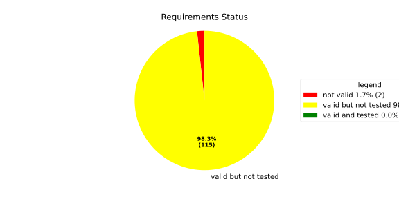
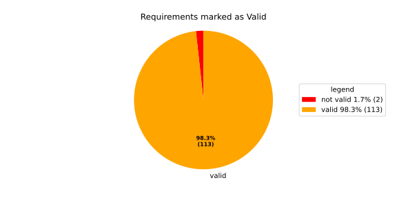
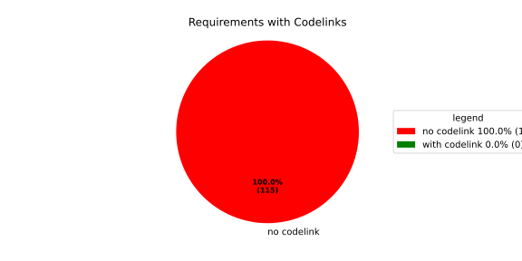

Component Requirements Statistics#
Overview#

In Detail#


No needs passed the filters
Failed Tests
Hint: This table should be empty. Before a PR can be merged all tests have to be successful.
No needs passed the filters
Skipped / Disabled Tests
No needs passed the filters
All passed Tests#
No needs passed the filters
Details About Testcases#
No needs passed the filters
No needs passed the filters
Test Log Files#
tests-report/score/health_monitor/src/rust/tests/test.log
exec ${PAGER:-/usr/bin/less} "$0" || exit 1
Executing tests from //score/health_monitor/src/rust:tests
-----------------------------------------------------------------------------
running 232 tests
test common::tests::duration_to_int_too_large - should panic ... ok
test common::tests::time_offset_diff_too_large - should panic ... ok
test common::tests::time_offset_valid ... ok
test common::tests::time_offset_wrong_order ... ok
test common::tests::time_range_from_interval_lower_too_large - should panic ... ok
test common::tests::time_range_from_interval_valid ... ok
test common::tests::time_range_new_valid ... ok
test common::tests::time_range_new_wrong_order - should panic ... ok
test deadline::common::tests::acquire_and_release_deadline ... ok
test deadline::common::tests::new_and_fields ... ok
test common::tests::duration_to_int_valid ... ok
test deadline::deadline_monitor::tests::deadline_failed_on_first_run_and_then_restarted_is_evaluated_as_error ... ok
test deadline::deadline_monitor::tests::deadline_outside_time_range_is_error_when_dropped_after_evaluate ... ok
test deadline::common::tests::concurrent_acquire ... ok
test deadline::deadline_monitor::tests::get_deadline_unknown_tag ... ok
test deadline::deadline_monitor::tests::start_stop_deadline_outside_ranges_is_evaluated_as_error ... ok
test deadline::deadline_monitor::tests::start_stop_deadline_outside_ranges_is_error_when_dropped_before_evaluate ... ok
test deadline::deadline_state::tests::as_u64_and_new ... ok
test deadline::deadline_state::tests::deadline_state_default_and_snapshot ... ok
test deadline::deadline_state::tests::deadline_state_update_none_returns_err ... ok
test deadline::deadline_state::tests::default_state ... ok
test deadline::deadline_state::tests::set_and_get_timestamp_ms ... ok
test deadline::deadline_state::tests::deadline_state_update_success ... ok
test deadline::deadline_state::tests::set_running ... ok
test deadline::deadline_state::tests::set_underrun ... ok
test deadline::ffi::tests::deadline_destroy_null_deadline ... ok
test deadline::ffi::tests::deadline_monitor_builder_add_deadline_invalid_range ... ok
test deadline::ffi::tests::deadline_monitor_builder_add_deadline_null_builder ... ok
test deadline::ffi::tests::deadline_monitor_builder_add_deadline_null_deadline_tag ... ok
test deadline::ffi::tests::deadline_monitor_builder_add_deadline_succeeds ... ok
test deadline::ffi::tests::deadline_monitor_builder_create_null_builder ... ok
test deadline::ffi::tests::deadline_monitor_builder_create_succeeds ... ok
test deadline::ffi::tests::deadline_monitor_builder_destroy_null_builder ... ok
test deadline::ffi::tests::deadline_monitor_destroy_null_monitor ... ok
test deadline::ffi::tests::deadline_monitor_get_deadline_null_deadline_handle ... ok
test deadline::ffi::tests::deadline_monitor_get_deadline_null_deadline_tag ... ok
test deadline::ffi::tests::deadline_monitor_get_deadline_null_monitor ... ok
test deadline::ffi::tests::deadline_monitor_get_deadline_unknown_deadline ... ok
test deadline::ffi::tests::deadline_monitor_get_deadline_succeeds ... ok
test deadline::ffi::tests::deadline_start_already_started ... ok
test deadline::ffi::tests::deadline_start_null_deadline ... ok
test deadline::ffi::tests::deadline_stop_null_deadline ... ok
test deadline::ffi::tests::deadline_start_succeeds ... ok
test deadline::ffi::tests::deadline_stop_succeeds ... ok
test ffi::tests::health_monitor_builder_add_deadline_monitor_null_deadline_monitor_builder ... ok
test ffi::tests::health_monitor_builder_add_deadline_monitor_null_hmon_builder ... ok
test ffi::tests::health_monitor_builder_add_deadline_monitor_null_monitor_tag ... ok
test ffi::tests::health_monitor_builder_add_deadline_monitor_succeeds ... ok
test ffi::tests::health_monitor_builder_add_heartbeat_monitor_null_hmon_builder ... ok
test ffi::tests::health_monitor_builder_add_heartbeat_monitor_null_heartbeat_monitor_builder ... ok
test ffi::tests::health_monitor_builder_add_heartbeat_monitor_null_monitor_tag ... ok
test ffi::tests::health_monitor_builder_add_heartbeat_monitor_succeeds ... ok
test ffi::tests::health_monitor_builder_add_logic_monitor_null_hmon_builder ... ok
test ffi::tests::health_monitor_builder_add_logic_monitor_null_logic_monitor_builder ... ok
test ffi::tests::health_monitor_builder_add_logic_monitor_null_monitor_tag ... ok
test ffi::tests::health_monitor_builder_add_logic_monitor_succeeds ... ok
test ffi::tests::health_monitor_builder_build_invalid_cycle_intervals ... ok
test ffi::tests::health_monitor_builder_build_no_monitors ... ok
test ffi::tests::health_monitor_builder_build_null_builder_handle ... ok
test ffi::tests::health_monitor_builder_build_null_monitor_handle ... ok
test ffi::tests::health_monitor_builder_build_succeeds ... ok
test ffi::tests::health_monitor_builder_build_thread_parameters ... ok
test ffi::tests::health_monitor_builder_build_valid_cycle_intervals_succeeds ... ok
test ffi::tests::health_monitor_builder_create_null_handle ... ok
test ffi::tests::health_monitor_builder_create_succeeds ... ok
test ffi::tests::health_monitor_builder_destroy_null_handle ... ok
test ffi::tests::health_monitor_destroy_null_hmon ... ok
test ffi::tests::health_monitor_get_deadline_monitor_already_taken ... ok
test ffi::tests::health_monitor_get_deadline_monitor_null_deadline_monitor ... ok
test ffi::tests::health_monitor_get_deadline_monitor_null_hmon ... ok
test ffi::tests::health_monitor_get_deadline_monitor_null_monitor_tag ... ok
test ffi::tests::health_monitor_get_deadline_monitor_succeeds ... ok
test ffi::tests::health_monitor_get_heartbeat_monitor_already_taken ... ok
test ffi::tests::health_monitor_get_heartbeat_monitor_null_heartbeat_monitor ... ok
test ffi::tests::health_monitor_get_heartbeat_monitor_null_monitor_tag ... ok
test ffi::tests::health_monitor_get_heartbeat_monitor_null_hmon ... ok
test ffi::tests::health_monitor_get_heartbeat_monitor_succeeds ... ok
test ffi::tests::health_monitor_get_logic_monitor_already_taken ... ok
test ffi::tests::health_monitor_get_logic_monitor_null_hmon ... ok
test ffi::tests::health_monitor_get_logic_monitor_null_logic_monitor ... ok
test ffi::tests::health_monitor_get_logic_monitor_null_monitor_tag ... ok
test ffi::tests::health_monitor_get_logic_monitor_succeeds ... ok
test ffi::tests::health_monitor_start_null_hmon ... ok
test ffi::tests::health_monitor_start_monitor_not_taken ... ok
test health_monitor::tests::health_monitor_builder_build_invalid_cycles ... ok
test health_monitor::tests::health_monitor_builder_build_no_monitors ... ok
test health_monitor::tests::health_monitor_builder_build_succeeds ... ok
test health_monitor::tests::health_monitor_builder_new_succeeds ... ok
test health_monitor::tests::health_monitor_get_deadline_monitor_available ... ok
test health_monitor::tests::health_monitor_get_deadline_monitor_invalid_state ... ok
test health_monitor::tests::health_monitor_get_deadline_monitor_taken ... ok
test health_monitor::tests::health_monitor_get_deadline_monitor_unknown ... ok
test health_monitor::tests::health_monitor_get_heartbeat_monitor_available ... ok
test health_monitor::tests::health_monitor_get_heartbeat_monitor_invalid_state ... ok
test health_monitor::tests::health_monitor_get_heartbeat_monitor_taken ... ok
test health_monitor::tests::health_monitor_get_heartbeat_monitor_unknown ... ok
test health_monitor::tests::health_monitor_get_logic_monitor_available ... ok
test health_monitor::tests::health_monitor_get_logic_monitor_invalid_state ... ok
[2026/06/01 13:07:08.7969051][7815][HMON][INFO] Monitoring thread started.
[2026/06/01 13:07:08.7969244][7815][HMON][INFO] Monitoring thread exiting.
test ffi::tests::health_monitor_start_succeeds ... ok
test health_monitor::tests::health_monitor_get_logic_monitor_taken ... ok
test health_monitor::tests::health_monitor_get_logic_monitor_unknown ... ok
[2026/06/01 13:07:08.7984349][7815][HMON][INFO] Monitoring thread started.
[2026/06/01 13:07:08.7984505][7815][HMON][INFO] Monitoring thread exiting.
test health_monitor::tests::health_monitor_start_monitors_not_taken - should panic ... ok
test health_monitor::tests::health_monitor_start_succeeds ... ok
test heartbeat::ffi::tests::heartbeat_monitor_builder_create_invalid_range ... ok
test heartbeat::ffi::tests::heartbeat_monitor_builder_create_null_builder ... ok
test heartbeat::ffi::tests::heartbeat_monitor_builder_create_succeeds ... ok
test heartbeat::ffi::tests::heartbeat_monitor_builder_destroy_null_builder ... ok
test heartbeat::ffi::tests::heartbeat_monitor_heartbeat_null_monitor ... ok
test heartbeat::ffi::tests::heartbeat_monitor_heartbeat_succeeds ... ok
test heartbeat::ffi::tests::heartbeat_monitor_destroy_null_monitor ... ok
test deadline::deadline_monitor::tests::monitor_with_multiple_running_deadlines ... ok
test heartbeat::heartbeat_monitor::tests::heartbeat_monitor_beat_early_evaluate_early ... ok
test heartbeat::heartbeat_monitor::tests::heartbeat_monitor_beat_early_evaluate_in_range ... ok
test heartbeat::heartbeat_monitor::tests::heartbeat_monitor_beat_in_range_evaluate_in_range ... ok
test heartbeat::heartbeat_monitor::tests::heartbeat_monitor_beat_early_evaluate_late ... ok
test heartbeat::heartbeat_monitor::tests::heartbeat_monitor_builder_build_invalid_internal_processing_cycle ... ok
test heartbeat::heartbeat_monitor::tests::heartbeat_monitor_builder_build_ok ... ok
test heartbeat::heartbeat_monitor::tests::heartbeat_monitor_beat_in_range_evaluate_late ... ok
test heartbeat::heartbeat_monitor::tests::heartbeat_monitor_beat_late_evaluate_late ... ok
test heartbeat::heartbeat_monitor::tests::heartbeat_monitor_cycle_early ... ok
test heartbeat::heartbeat_monitor::tests::heartbeat_monitor_multiple_beats_early_evaluate_early ... ok
test heartbeat::heartbeat_monitor::tests::heartbeat_monitor_cycle_in_range ... ok
test heartbeat::heartbeat_monitor::tests::heartbeat_monitor_multiple_beats_early_evaluate_in_range ... ok
test heartbeat::heartbeat_monitor::tests::heartbeat_monitor_multiple_beats_in_range_evaluate_in_range ... ok
test heartbeat::heartbeat_monitor::tests::heartbeat_monitor_cycle_late ... ok
test heartbeat::heartbeat_monitor::tests::heartbeat_monitor_multiple_beats_early_evaluate_late ... ok
test heartbeat::heartbeat_monitor::tests::heartbeat_monitor_no_beat_evaluate_early ... ok
test heartbeat::heartbeat_monitor::tests::heartbeat_monitor_no_beat_evaluate_in_range ... ok
test heartbeat::heartbeat_monitor::tests::heartbeat_monitor_multiple_beats_in_range_evaluate_late ... ok
test heartbeat::heartbeat_monitor::tests::heartbeat_monitor_multiple_beats_late_evaluate_late ... ok
test heartbeat::heartbeat_state::tests::snapshot_counter_increment ... ok
test heartbeat::heartbeat_state::tests::snapshot_default ... ok
test heartbeat::heartbeat_state::tests::snapshot_from_u64_max ... ok
test heartbeat::heartbeat_state::tests::snapshot_from_u64_valid ... ok
test heartbeat::heartbeat_state::tests::snapshot_from_u64_zero ... ok
test heartbeat::heartbeat_state::tests::snapshot_new_succeeds ... ok
test heartbeat::heartbeat_state::tests::snapshot_set_heartbeat_timestamp_out_of_range - should panic ... ok
test heartbeat::heartbeat_state::tests::snapshot_set_heartbeat_timestamp_valid ... ok
test heartbeat::heartbeat_state::tests::state_default ... ok
test heartbeat::heartbeat_state::tests::state_new ... ok
test heartbeat::heartbeat_state::tests::state_reset ... ok
test heartbeat::heartbeat_state::tests::state_snapshot ... ok
test heartbeat::heartbeat_state::tests::state_update_none ... ok
test heartbeat::heartbeat_state::tests::state_update_some ... ok
test logic::ffi::tests::logic_monitor_builder_add_state_null_allowed_states_many_elements ... ok
test logic::ffi::tests::logic_monitor_builder_add_state_null_allowed_states_zero_elements ... ok
test logic::ffi::tests::logic_monitor_builder_add_state_null_builder ... ok
test logic::ffi::tests::logic_monitor_builder_add_state_null_tag ... ok
test logic::ffi::tests::logic_monitor_builder_add_state_succeeds ... ok
test logic::ffi::tests::logic_monitor_builder_create_null_builder ... ok
test logic::ffi::tests::logic_monitor_builder_create_null_initial_state ... ok
test logic::ffi::tests::logic_monitor_builder_create_succeeds ... ok
test logic::ffi::tests::logic_monitor_builder_destroy_null_builder ... ok
test logic::ffi::tests::logic_monitor_destroy_null_monitor ... ok
test logic::ffi::tests::logic_monitor_state_fails ... ok
test logic::ffi::tests::logic_monitor_state_null_monitor ... ok
test logic::ffi::tests::logic_monitor_state_null_state ... ok
test logic::ffi::tests::logic_monitor_state_succeeds ... ok
test logic::ffi::tests::logic_monitor_transition_fails ... ok
test logic::ffi::tests::logic_monitor_transition_null_monitor ... ok
test logic::ffi::tests::logic_monitor_transition_null_target_state ... ok
test logic::ffi::tests::logic_monitor_transition_succeeds ... ok
test logic::logic_monitor::tests::logic_monitor_builder_build_no_states ... ok
test logic::logic_monitor::tests::logic_monitor_builder_build_succeeds ... ok
test logic::logic_monitor::tests::logic_monitor_builder_build_undefined_initial_state ... ok
test logic::logic_monitor::tests::logic_monitor_builder_build_undefined_target ... ok
test logic::logic_monitor::tests::logic_monitor_builder_new_succeeds ... ok
test logic::logic_monitor::tests::logic_monitor_evaluate_invalid_state ... ok
test logic::logic_monitor::tests::logic_monitor_evaluate_invalid_transition ... ok
test logic::logic_monitor::tests::logic_monitor_evaluate_succeeds ... ok
test logic::logic_monitor::tests::logic_monitor_state_indeterminate_current_state ... ok
test logic::logic_monitor::tests::logic_monitor_state_succeeds ... ok
test logic::logic_monitor::tests::logic_monitor_transition_indeterminate_current_state ... ok
test logic::logic_monitor::tests::logic_monitor_transition_invalid_transition ... ok
test logic::logic_monitor::tests::logic_monitor_transition_succeeds ... ok
test logic::logic_monitor::tests::logic_monitor_transition_unknown_node ... ok
test logic::logic_state::tests::snapshot_from_u64_max ... ok
test logic::logic_state::tests::snapshot_from_u64_valid ... ok
test logic::logic_state::tests::snapshot_from_u64_zero ... ok
test logic::logic_state::tests::snapshot_new_succeeds ... ok
test logic::logic_state::tests::snapshot_set_current_state_index_valid ... ok
test logic::logic_state::tests::snapshot_set_heartbeat_timestamp_out_of_range - should panic ... ok
test logic::logic_state::tests::snapshot_set_monitor_status_valid ... ok
test logic::logic_state::tests::state_new ... ok
test logic::logic_state::tests::state_snapshot ... ok
test logic::logic_state::tests::state_swap ... ok
test tag::tests::deadline_tag_debug ... ok
test tag::tests::deadline_tag_from_str ... ok
test tag::tests::deadline_tag_from_string ... ok
test tag::tests::deadline_tag_new ... ok
test tag::tests::deadline_tag_score_debug ... ok
test tag::tests::monitor_tag_debug ... ok
test tag::tests::monitor_tag_from_str ... ok
test tag::tests::monitor_tag_from_string ... ok
test tag::tests::monitor_tag_new ... ok
test tag::tests::monitor_tag_score_debug ... ok
test tag::tests::state_tag_debug ... ok
test tag::tests::state_tag_from_str ... ok
test tag::tests::state_tag_from_string ... ok
test tag::tests::state_tag_new ... ok
test tag::tests::state_tag_score_debug ... ok
test tag::tests::tag_debug ... ok
test tag::tests::tag_hash_is_eq ... ok
test tag::tests::tag_hash_is_ne ... ok
test tag::tests::tag_new ... ok
test tag::tests::tag_partial_eq_is_eq ... ok
test tag::tests::tag_partial_eq_is_ne ... ok
test tag::tests::tag_score_debug ... ok
test tag::tests::test_from_str ... ok
test tag::tests::test_from_string ... ok
test thread_ffi::tests::scheduler_policy_priority_max_null_priority ... ok
test thread_ffi::tests::scheduler_policy_priority_max_succeeds ... ok
test thread_ffi::tests::scheduler_policy_priority_min_null_priority ... ok
test thread_ffi::tests::scheduler_policy_priority_min_succeeds ... ok
test thread_ffi::tests::thread_parameters_affinity_null_affinity_many_elements ... ok
test thread_ffi::tests::thread_parameters_affinity_null_affinity_zero_elements ... ok
test thread_ffi::tests::thread_parameters_affinity_null_handle ... ok
test thread_ffi::tests::thread_parameters_affinity_succeeds ... ok
test thread_ffi::tests::thread_parameters_create_succeeds ... ok
test thread_ffi::tests::thread_parameters_destroy_null_handle ... ok
test thread_ffi::tests::thread_parameters_scheduler_parameters_invalid_priority ... ok
test thread_ffi::tests::thread_parameters_scheduler_parameters_null_handle ... ok
test thread_ffi::tests::thread_parameters_scheduler_parameters_succeeds ... ok
test thread_ffi::tests::thread_parameters_stack_size_null_handle ... ok
test thread_ffi::tests::thread_parameters_stack_size_succeeds ... ok
test worker::tests::monitoring_logic_report_alive_on_each_call_when_no_error ... ok
test heartbeat::heartbeat_monitor::tests::heartbeat_monitor_no_beat_evaluate_late ... ok
test worker::tests::monitoring_logic_report_error_when_deadline_failed ... ok
[2026/06/01 13:07:09.7562980][7815][HMON][INFO] Monitoring thread started.
test deadline::deadline_monitor::tests::start_stop_deadline_within_range_works ... ok
[2026/06/01 13:07:09.8167115][7815][HMON][WARN] Deadline (DeadlineTag(deadline_fast)) missed! Expected: 50, now: 60
[2026/06/01 13:07:09.8167394][7815][HMON][WARN] Deadline monitor with tag MonitorTag(deadline_monitor) reported error: TooLate.
[2026/06/01 13:07:09.8167466][7815][HMON][WARN] One or more monitors reported errors, skipping AliveAPI notification.
[2026/06/01 13:07:09.8167535][7815][HMON][INFO] Monitoring logic failed, stopping thread.
[2026/06/01 13:07:09.8167586][7815][HMON][INFO] Monitoring thread exiting.
test worker::tests::monitoring_logic_report_alive_respect_cycle ... ok
test worker::tests::unique_thread_runner_monitoring_works ... ok
test heartbeat::heartbeat_monitor::tests::heartbeat_monitor_timestamp_offset ... ok
test result: ok. 232 passed; 0 failed; 0 ignored; 0 measured; 0 filtered out; finished in 1.27s
tests-report/score/health_monitor/src/rust/loom_tests/test.log
exec ${PAGER:-/usr/bin/less} "$0" || exit 1
Executing tests from //score/health_monitor/src/rust:loom_tests
-----------------------------------------------------------------------------
running 3 tests
test heartbeat::heartbeat_monitor::loom_tests::heartbeat_monitor_heartbeat_evaluate_too_early ... ok
test heartbeat::heartbeat_monitor::loom_tests::heartbeat_monitor_heartbeat_evaluate_in_range ... ok
test heartbeat::heartbeat_monitor::loom_tests::heartbeat_monitor_heartbeat_evaluate_too_late ... ok
test result: ok. 3 passed; 0 failed; 0 ignored; 0 measured; 0 filtered out; finished in 0.71s
tests-report/score/health_monitor/src/cpp/cpp_tests/test.log
exec ${PAGER:-/usr/bin/less} "$0" || exit 1
Executing tests from //score/health_monitor/src/cpp:cpp_tests
-----------------------------------------------------------------------------
Running main() from gmock_main.cc
[==========] Running 1 test from 1 test suite.
[----------] Global test environment set-up.
[----------] 1 test from HealthMonitorTest
[ RUN ] HealthMonitorTest.TestName
[2026/06/01 13:07:10.0989262][score/health_monitor/src/rust/worker.rs:121][8244][HMON][INFO] Monitoring thread started.
[2026/06/01 13:07:10.0990149][score/health_monitor/src/rust/deadline/deadline_monitor.rs:217][8244][HMON][ERROR] Deadline DeadlineTag(deadline_1) stopped too early by 100 ms
[2026/06/01 13:07:10.1497675][score/health_monitor/src/rust/deadline/deadline_monitor.rs:267][8244][HMON][WARN] Deadline (DeadlineTag(deadline_1)) finished too early!
[2026/06/01 13:07:10.1497986][score/health_monitor/src/rust/worker.rs:58][8244][HMON][WARN] Deadline monitor with tag MonitorTag(deadline_monitor) reported error: TooEarly.
[2026/06/01 13:07:10.1498095][score/health_monitor/src/rust/heartbeat/heartbeat_monitor.rs:253][8244][HMON][WARN] Heartbeat occurred too early, offset to range: 100
[2026/06/01 13:07:10.1498145][score/health_monitor/src/rust/worker.rs:64][8244][HMON][WARN] Heartbeat monitor with tag MonitorTag(heartbeat_monitor) reported error: TooEarly.
[2026/06/01 13:07:10.1498203][score/health_monitor/src/rust/worker.rs:85][8244][HMON][WARN] One or more monitors reported errors, skipping AliveAPI notification.
[2026/06/01 13:07:10.1498247][score/health_monitor/src/rust/worker.rs:132][8244][HMON][INFO] Monitoring logic failed, stopping thread.
[2026/06/01 13:07:10.1498288][score/health_monitor/src/rust/worker.rs:139][8244][HMON][INFO] Monitoring thread exiting.
[ OK ] HealthMonitorTest.TestName (51 ms)
[----------] 1 test from HealthMonitorTest (51 ms total)
[----------] Global test environment tear-down
[==========] 1 test from 1 test suite ran. (51 ms total)
[ PASSED ] 1 test.
tests-report/score/launch_manager/daemon/src/process_state_client/process_state_client_ut/test.log
exec ${PAGER:-/usr/bin/less} "$0" || exit 1
Executing tests from //score/launch_manager/daemon/src/process_state_client:process_state_client_ut
-----------------------------------------------------------------------------
Running main() from gmock_main.cc
[==========] Running 4 tests from 1 test suite.
[----------] Global test environment set-up.
[----------] 4 tests from ProcessStateClient_UT
[ RUN ] ProcessStateClient_UT.ProcessStateClient_ConstructReceiver_Succeeds
[ OK ] ProcessStateClient_UT.ProcessStateClient_ConstructReceiver_Succeeds (0 ms)
[ RUN ] ProcessStateClient_UT.ProcessStateClient_QueueOneProcess_Succeeds
[ OK ] ProcessStateClient_UT.ProcessStateClient_QueueOneProcess_Succeeds (0 ms)
[ RUN ] ProcessStateClient_UT.ProcessStateClient_QueueMaxNumberOfProcesses_Succeeds
[ OK ] ProcessStateClient_UT.ProcessStateClient_QueueMaxNumberOfProcesses_Succeeds (8 ms)
[ RUN ] ProcessStateClient_UT.ProcessStateClient_QueueOneProcessTooMany_Fails
mw::log initialization error: Error No logging configuration files could be found. occurred with context information: Failed to load configuration files. Fallback to console logging.
2026/06/01 13:07:07.9227519 1538361 000 ECU1 NONE LM log error verbose 1 Failed to queue posix process
2026/06/01 13:07:07.9227520 1538363 000 ECU1 NONE LM log error verbose 1 ProcessStateReceiver::getNextChangedPosixProcess: Overflow occurred, will be reported as kCommunicationError
[ OK ] ProcessStateClient_UT.ProcessStateClient_QueueOneProcessTooMany_Fails (5 ms)
[----------] 4 tests from ProcessStateClient_UT (15 ms total)
[----------] Global test environment tear-down
[==========] 4 tests from 1 test suite ran. (15 ms total)
[ PASSED ] 4 tests.
tests-report/score/launch_manager/daemon/src/recovery_client/recovery_client_UT/test.log
exec ${PAGER:-/usr/bin/less} "$0" || exit 1
Executing tests from //score/launch_manager/daemon/src/recovery_client:recovery_client_UT
-----------------------------------------------------------------------------
Running main() from gmock_main.cc
[==========] Running 5 tests from 1 test suite.
[----------] Global test environment set-up.
[----------] 5 tests from RecoveryClientTest
[ RUN ] RecoveryClientTest.SendSingleRequest
[ OK ] RecoveryClientTest.SendSingleRequest (0 ms)
[ RUN ] RecoveryClientTest.GetNextRequest
[ OK ] RecoveryClientTest.GetNextRequest (0 ms)
[ RUN ] RecoveryClientTest.GetNextRequestEmpty
[ OK ] RecoveryClientTest.GetNextRequestEmpty (0 ms)
[ RUN ] RecoveryClientTest.RingBufferFull
[ OK ] RecoveryClientTest.RingBufferFull (0 ms)
[ RUN ] RecoveryClientTest.FIFOOrdering
[ OK ] RecoveryClientTest.FIFOOrdering (0 ms)
[----------] 5 tests from RecoveryClientTest (0 ms total)
[----------] Global test environment tear-down
[==========] 5 tests from 1 test suite ran. (0 ms total)
[ PASSED ] 5 tests.
tests-report/score/launch_manager/daemon/src/alive_monitor/details/recovery/Notification_UT/test.log
exec ${PAGER:-/usr/bin/less} "$0" || exit 1
Executing tests from //score/launch_manager/daemon/src/alive_monitor/details/recovery:Notification_UT
-----------------------------------------------------------------------------
Running main() from gmock_main.cc
[==========] Running 5 tests from 2 test suites.
[----------] Global test environment set-up.
[----------] 4 tests from NotificationWithConfigTest
[ RUN ] NotificationWithConfigTest.CanGetNotificationName
mw::log initialization error: Error No logging configuration files could be found. occurred with context information: Failed to load configuration files. Fallback to console logging.
[ OK ] NotificationWithConfigTest.CanGetNotificationName (3 ms)
[ RUN ] NotificationWithConfigTest.SendsRequestAndNeverTimesOut
[ OK ] NotificationWithConfigTest.SendsRequestAndNeverTimesOut (0 ms)
[ RUN ] NotificationWithConfigTest.TimesOutWhenSendingRequestFails
2026/06/01 13:07:07.9227947 1542634 000 ECU1 NONE Rcvy log error verbose 2 Notification (TestNotification) Failed to enqueue recovery request (ring buffer full)
[ OK ] NotificationWithConfigTest.TimesOutWhenSendingRequestFails (1 ms)
[ RUN ] NotificationWithConfigTest.ProxyInitializationFails
2026/06/01 13:07:07.9227947 1542641 000 ECU1 NONE Rcvy log error verbose 3 Notification (TestNotification) Invalid ProcessGroupState identifier: InvalidIdentifier
[ OK ] NotificationWithConfigTest.ProxyInitializationFails (0 ms)
[----------] 4 tests from NotificationWithConfigTest (6 ms total)
[----------] 1 test from NotificationWithoutConfigTest
[ RUN ] NotificationWithoutConfigTest.WatchdogNotificationGoesDirectlyToTimeout
[ OK ] NotificationWithoutConfigTest.WatchdogNotificationGoesDirectlyToTimeout (1 ms)
[----------] 1 test from NotificationWithoutConfigTest (2 ms total)
[----------] Global test environment tear-down
[==========] 5 tests from 2 test suites ran. (10 ms total)
[ PASSED ] 5 tests.
tests-report/score/launch_manager/daemon/src/process_group_manager/details/safeprocessmap_UT/test.log
exec ${PAGER:-/usr/bin/less} "$0" || exit 1
Executing tests from //score/launch_manager/daemon/src/process_group_manager/details:safeprocessmap_UT
-----------------------------------------------------------------------------
Running main() from gmock_main.cc
[==========] Running 13 tests from 1 test suite.
[----------] Global test environment set-up.
[----------] 13 tests from SafeProcessMapTest
[ RUN ] SafeProcessMapTest.ConstructWithZeroCapacity
[ OK ] SafeProcessMapTest.ConstructWithZeroCapacity (0 ms)
[ RUN ] SafeProcessMapTest.FindTerminatedWithNegativePidReturnsInvalid
[ OK ] SafeProcessMapTest.FindTerminatedWithNegativePidReturnsInvalid (0 ms)
[ RUN ] SafeProcessMapTest.FindTerminatedInsertsEntryWhenPidNotPresent
[ OK ] SafeProcessMapTest.FindTerminatedInsertsEntryWhenPidNotPresent (0 ms)
[ RUN ] SafeProcessMapTest.FindTerminatedMatchesExistingInsertAndCallsCallback
[ OK ] SafeProcessMapTest.FindTerminatedMatchesExistingInsertAndCallsCallback (0 ms)
[ RUN ] SafeProcessMapTest.InsertIntoEmptyTreeReturnsZero
[ OK ] SafeProcessMapTest.InsertIntoEmptyTreeReturnsZero (0 ms)
[ RUN ] SafeProcessMapTest.InsertMatchesExistingFindTerminatedEntry
[ OK ] SafeProcessMapTest.InsertMatchesExistingFindTerminatedEntry (0 ms)
[ RUN ] SafeProcessMapTest.InsertMultipleNodesThenFindTerminatedRemovesAll
[ OK ] SafeProcessMapTest.InsertMultipleNodesThenFindTerminatedRemovesAll (7 ms)
[ RUN ] SafeProcessMapTest.InsertBeyondCapacityReturnsOutOfMemory
[ OK ] SafeProcessMapTest.InsertBeyondCapacityReturnsOutOfMemory (2 ms)
[ RUN ] SafeProcessMapTest.InsertSamePidTwiceYieldsUntilFindTerminatedResolves
[ OK ] SafeProcessMapTest.InsertSamePidTwiceYieldsUntilFindTerminatedResolves (11 ms)
[ RUN ] SafeProcessMapTest.FindTerminatedSamePidTwiceYieldsUntilInsertResolves
[ OK ] SafeProcessMapTest.FindTerminatedSamePidTwiceYieldsUntilInsertResolves (11 ms)
[ RUN ] SafeProcessMapTest.FindTerminatedWorksAtMaxTreeDepth
[ OK ] SafeProcessMapTest.FindTerminatedWorksAtMaxTreeDepth (0 ms)
[ RUN ] SafeProcessMapTest.ConcurrentInsertAndFindFromMultipleThreads
[ OK ] SafeProcessMapTest.ConcurrentInsertAndFindFromMultipleThreads (2575 ms)
[ RUN ] SafeProcessMapTest.ConcurrentFindAndInsertFromMultipleThreads
[ OK ] SafeProcessMapTest.ConcurrentFindAndInsertFromMultipleThreads (2210 ms)
[----------] 13 tests from SafeProcessMapTest (4821 ms total)
[----------] Global test environment tear-down
[==========] 13 tests from 1 test suite ran. (4821 ms total)
[ PASSED ] 13 tests.
tests-report/score/launch_manager/daemon/src/process_group_manager/details/oshandler_UT/test.log
exec ${PAGER:-/usr/bin/less} "$0" || exit 1
Executing tests from //score/launch_manager/daemon/src/process_group_manager/details:oshandler_UT
-----------------------------------------------------------------------------
Running main() from gmock_main.cc
[==========] Running 6 tests from 1 test suite.
[----------] Global test environment set-up.
[----------] 6 tests from OsHandlerTest
[ RUN ] OsHandlerTest.WaitReturnsProcessId_FindTerminatedIsCalled
[ OK ] OsHandlerTest.WaitReturnsProcessId_FindTerminatedIsCalled (102 ms)
[ RUN ] OsHandlerTest.WaitReturnsError_OsHandlerSleepsAndDoesNotCallFindTerminated
[ OK ] OsHandlerTest.WaitReturnsError_OsHandlerSleepsAndDoesNotCallFindTerminated (101 ms)
[ RUN ] OsHandlerTest.WaitReturnsZeroPid_OsHandlerSleepsAndDoesNotCallFindTerminated
[ OK ] OsHandlerTest.WaitReturnsZeroPid_OsHandlerSleepsAndDoesNotCallFindTerminated (104 ms)
[ RUN ] OsHandlerTest.WaitReturnsProcessIdBeforeRegistration_LaterRegistrationReceivesStoredTermination
[ OK ] OsHandlerTest.WaitReturnsProcessIdBeforeRegistration_LaterRegistrationReceivesStoredTermination (102 ms)
[ RUN ] OsHandlerTest.WaitReturnsUnknownPidWhenMapIsFull_OutOfResourcesPathDoesNotNotifyCallbacks
mw::log initialization error: Error No logging configuration files could be found. occurred with context information: Failed to load configuration files. Fallback to console logging.
2026/06/03 06:59:29.9969867 1115355 000 ECU1 NONE LM log error verbose 3 No more resources available to track process with PID 9999 (SafeProcessMap capacity exceeded).
[ OK ] OsHandlerTest.WaitReturnsUnknownPidWhenMapIsFull_OutOfResourcesPathDoesNotNotifyCallbacks (112 ms)
[ RUN ] OsHandlerTest.WaitReturnsErrorThenProcessId_HandlerRecoversAndInvokesCallback
[ OK ] OsHandlerTest.WaitReturnsErrorThenProcessId_HandlerRecoversAndInvokesCallback (202 ms)
[----------] 6 tests from OsHandlerTest (813 ms total)
[----------] Global test environment tear-down
[==========] 6 tests from 1 test suite ran. (814 ms total)
[ PASSED ] 6 tests.
tests-report/score/launch_manager/daemon/src/common/identifier_hash_UT/test.log
exec ${PAGER:-/usr/bin/less} "$0" || exit 1
Executing tests from //score/launch_manager/daemon/src/common:identifier_hash_UT
-----------------------------------------------------------------------------
Running main() from gmock_main.cc
[==========] Running 7 tests from 1 test suite.
[----------] Global test environment set-up.
[----------] 7 tests from IdentifierHashTest
[ RUN ] IdentifierHashTest.IdentifierHash_with_string_view_created
[ OK ] IdentifierHashTest.IdentifierHash_with_string_view_created (0 ms)
[ RUN ] IdentifierHashTest.IdentifierHash_with_string_created
[ OK ] IdentifierHashTest.IdentifierHash_with_string_created (0 ms)
[ RUN ] IdentifierHashTest.IdentifierHash_default_created
[ OK ] IdentifierHashTest.IdentifierHash_default_created (0 ms)
[ RUN ] IdentifierHashTest.IdentifierHash_invalid_hash_no_string_representation
[ OK ] IdentifierHashTest.IdentifierHash_invalid_hash_no_string_representation (0 ms)
[ RUN ] IdentifierHashTest.IdentifierHash_no_dangling_pointer_after_source_string_dies
[ OK ] IdentifierHashTest.IdentifierHash_no_dangling_pointer_after_source_string_dies (0 ms)
[ RUN ] IdentifierHashTest.IdentifierHash_EqualityOperators
[ OK ] IdentifierHashTest.IdentifierHash_EqualityOperators (0 ms)
[ RUN ] IdentifierHashTest.IdentifierHash_LessThanOperator
[ OK ] IdentifierHashTest.IdentifierHash_LessThanOperator (0 ms)
[----------] 7 tests from IdentifierHashTest (0 ms total)
[----------] Global test environment tear-down
[==========] 7 tests from 1 test suite ran. (0 ms total)
[ PASSED ] 7 tests.
tests-report/score/launch_manager/daemon/src/common/concurrency/mpmc_concurrent_queue_tsan_test/test.log
exec ${PAGER:-/usr/bin/less} "$0" || exit 1
Executing tests from //score/launch_manager/daemon/src/common/concurrency:mpmc_concurrent_queue_tsan_test
-----------------------------------------------------------------------------
Running main() from gmock_main.cc
[==========] Running 15 tests from 5 test suites.
[----------] Global test environment set-up.
[----------] 5 tests from MPMCConcurrentQueueTest_Basic
[ RUN ] MPMCConcurrentQueueTest_Basic.PushAndPopSingleItem
[ OK ] MPMCConcurrentQueueTest_Basic.PushAndPopSingleItem (0 ms)
[ RUN ] MPMCConcurrentQueueTest_Basic.PushAndPopPreservesOrder
[ OK ] MPMCConcurrentQueueTest_Basic.PushAndPopPreservesOrder (0 ms)
[ RUN ] MPMCConcurrentQueueTest_Basic.LvaluePushCopiesItem
[ OK ] MPMCConcurrentQueueTest_Basic.LvaluePushCopiesItem (0 ms)
[ RUN ] MPMCConcurrentQueueTest_Basic.RvaluePushWorksWithMoveOnlyType
[ OK ] MPMCConcurrentQueueTest_Basic.RvaluePushWorksWithMoveOnlyType (0 ms)
[ RUN ] MPMCConcurrentQueueTest_Basic.PopReturnsNulloptOnSemaphoreWaitFailure
[ OK ] MPMCConcurrentQueueTest_Basic.PopReturnsNulloptOnSemaphoreWaitFailure (20 ms)
[----------] 5 tests from MPMCConcurrentQueueTest_Basic (21 ms total)
[----------] 2 tests from MPMCConcurrentQueueTest_Timeout
[ RUN ] MPMCConcurrentQueueTest_Timeout.PushWithTimeoutSucceedsWhenSlotAvailable
[ OK ] MPMCConcurrentQueueTest_Timeout.PushWithTimeoutSucceedsWhenSlotAvailable (0 ms)
[ RUN ] MPMCConcurrentQueueTest_Timeout.PushWithTimeoutReturnsFalseWhenFull
[ OK ] MPMCConcurrentQueueTest_Timeout.PushWithTimeoutReturnsFalseWhenFull (20 ms)
[----------] 2 tests from MPMCConcurrentQueueTest_Timeout (20 ms total)
[----------] 3 tests from MPMCConcurrentQueueTest_Stop
[ RUN ] MPMCConcurrentQueueTest_Stop.PushReturnsFalseAfterStop
[ OK ] MPMCConcurrentQueueTest_Stop.PushReturnsFalseAfterStop (0 ms)
[ RUN ] MPMCConcurrentQueueTest_Stop.PopReturnsNulloptWhenStoppedAndEmpty
[ OK ] MPMCConcurrentQueueTest_Stop.PopReturnsNulloptWhenStoppedAndEmpty (0 ms)
[ RUN ] MPMCConcurrentQueueTest_Stop.ItemsAreDroppedAfterStop
[ OK ] MPMCConcurrentQueueTest_Stop.ItemsAreDroppedAfterStop (0 ms)
[----------] 3 tests from MPMCConcurrentQueueTest_Stop (0 ms total)
[----------] 4 tests from MPMCConcurrentQueueTest_Blocking
[ RUN ] MPMCConcurrentQueueTest_Blocking.PopBlocksUntilItemAvailable
[ OK ] MPMCConcurrentQueueTest_Blocking.PopBlocksUntilItemAvailable (0 ms)
[ RUN ] MPMCConcurrentQueueTest_Blocking.PushBlocksWhenFull
[ OK ] MPMCConcurrentQueueTest_Blocking.PushBlocksWhenFull (0 ms)
[ RUN ] MPMCConcurrentQueueTest_Blocking.StopUnblocksBlockedConsumer
[ OK ] MPMCConcurrentQueueTest_Blocking.StopUnblocksBlockedConsumer (0 ms)
[ RUN ] MPMCConcurrentQueueTest_Blocking.StopUnblocksBlockedProducer
[ OK ] MPMCConcurrentQueueTest_Blocking.StopUnblocksBlockedProducer (0 ms)
[----------] 4 tests from MPMCConcurrentQueueTest_Blocking (0 ms total)
[----------] 1 test from MPMCConcurrentQueueTest_MPMC
[ RUN ] MPMCConcurrentQueueTest_MPMC.AllItemsDelivered
[ OK ] MPMCConcurrentQueueTest_MPMC.AllItemsDelivered (1 ms)
[----------] 1 test from MPMCConcurrentQueueTest_MPMC (1 ms total)
[----------] Global test environment tear-down
[==========] 15 tests from 5 test suites ran. (45 ms total)
[ PASSED ] 15 tests.
tests-report/score/launch_manager/daemon/src/common/concurrency/mpmc_concurrent_queue_test/test.log
exec ${PAGER:-/usr/bin/less} "$0" || exit 1
Executing tests from //score/launch_manager/daemon/src/common/concurrency:mpmc_concurrent_queue_test
-----------------------------------------------------------------------------
Running main() from gmock_main.cc
[==========] Running 15 tests from 5 test suites.
[----------] Global test environment set-up.
[----------] 5 tests from MPMCConcurrentQueueTest_Basic
[ RUN ] MPMCConcurrentQueueTest_Basic.PushAndPopSingleItem
[ OK ] MPMCConcurrentQueueTest_Basic.PushAndPopSingleItem (0 ms)
[ RUN ] MPMCConcurrentQueueTest_Basic.PushAndPopPreservesOrder
[ OK ] MPMCConcurrentQueueTest_Basic.PushAndPopPreservesOrder (0 ms)
[ RUN ] MPMCConcurrentQueueTest_Basic.LvaluePushCopiesItem
[ OK ] MPMCConcurrentQueueTest_Basic.LvaluePushCopiesItem (0 ms)
[ RUN ] MPMCConcurrentQueueTest_Basic.RvaluePushWorksWithMoveOnlyType
[ OK ] MPMCConcurrentQueueTest_Basic.RvaluePushWorksWithMoveOnlyType (0 ms)
[ RUN ] MPMCConcurrentQueueTest_Basic.PopReturnsNulloptOnSemaphoreWaitFailure
[ OK ] MPMCConcurrentQueueTest_Basic.PopReturnsNulloptOnSemaphoreWaitFailure (20 ms)
[----------] 5 tests from MPMCConcurrentQueueTest_Basic (20 ms total)
[----------] 2 tests from MPMCConcurrentQueueTest_Timeout
[ RUN ] MPMCConcurrentQueueTest_Timeout.PushWithTimeoutSucceedsWhenSlotAvailable
[ OK ] MPMCConcurrentQueueTest_Timeout.PushWithTimeoutSucceedsWhenSlotAvailable (0 ms)
[ RUN ] MPMCConcurrentQueueTest_Timeout.PushWithTimeoutReturnsFalseWhenFull
[ OK ] MPMCConcurrentQueueTest_Timeout.PushWithTimeoutReturnsFalseWhenFull (20 ms)
[----------] 2 tests from MPMCConcurrentQueueTest_Timeout (20 ms total)
[----------] 3 tests from MPMCConcurrentQueueTest_Stop
[ RUN ] MPMCConcurrentQueueTest_Stop.PushReturnsFalseAfterStop
[ OK ] MPMCConcurrentQueueTest_Stop.PushReturnsFalseAfterStop (0 ms)
[ RUN ] MPMCConcurrentQueueTest_Stop.PopReturnsNulloptWhenStoppedAndEmpty
[ OK ] MPMCConcurrentQueueTest_Stop.PopReturnsNulloptWhenStoppedAndEmpty (0 ms)
[ RUN ] MPMCConcurrentQueueTest_Stop.ItemsAreDroppedAfterStop
[ OK ] MPMCConcurrentQueueTest_Stop.ItemsAreDroppedAfterStop (0 ms)
[----------] 3 tests from MPMCConcurrentQueueTest_Stop (0 ms total)
[----------] 4 tests from MPMCConcurrentQueueTest_Blocking
[ RUN ] MPMCConcurrentQueueTest_Blocking.PopBlocksUntilItemAvailable
[ OK ] MPMCConcurrentQueueTest_Blocking.PopBlocksUntilItemAvailable (0 ms)
[ RUN ] MPMCConcurrentQueueTest_Blocking.PushBlocksWhenFull
[ OK ] MPMCConcurrentQueueTest_Blocking.PushBlocksWhenFull (0 ms)
[ RUN ] MPMCConcurrentQueueTest_Blocking.StopUnblocksBlockedConsumer
[ OK ] MPMCConcurrentQueueTest_Blocking.StopUnblocksBlockedConsumer (0 ms)
[ RUN ] MPMCConcurrentQueueTest_Blocking.StopUnblocksBlockedProducer
[ OK ] MPMCConcurrentQueueTest_Blocking.StopUnblocksBlockedProducer (0 ms)
[----------] 4 tests from MPMCConcurrentQueueTest_Blocking (0 ms total)
[----------] 1 test from MPMCConcurrentQueueTest_MPMC
[ RUN ] MPMCConcurrentQueueTest_MPMC.AllItemsDelivered
[ OK ] MPMCConcurrentQueueTest_MPMC.AllItemsDelivered (0 ms)
[----------] 1 test from MPMCConcurrentQueueTest_MPMC (0 ms total)
[----------] Global test environment tear-down
[==========] 15 tests from 5 test suites ran. (42 ms total)
[ PASSED ] 15 tests.
tests-report/tests/integration/smoke/smoke/test.log
exec ${PAGER:-/usr/bin/less} "$0" || exit 1
Executing tests from //tests/integration/smoke:smoke
-----------------------------------------------------------------------------
============================= test session starts ==============================
platform linux -- Python 3.12.12, pytest-9.0.3, pluggy-1.5.0
rootdir: /home/runner/.bazel/sandbox/processwrapper-sandbox/884/execroot/_main/bazel-out/k8-fastbuild/bin/tests/integration/smoke/smoke.runfiles/score_itf+
configfile: pytest.ini
collected 1 item
../score_itf+::test_smoke
-------------------------------- live log setup --------------------------------
[2026-06-03 09:40:08.149] [INFO] [score.itf.plugins.docker] Executing custom image bootstrap command: tests/utils/environments/x86_64-linux/x86_64-linux.sh
[2026-06-03 09:40:11.286] [DEBUG] [docker.utils.config] Trying paths: ['/home/runner/.docker/config.json', '/home/runner/.dockercfg']
[2026-06-03 09:40:11.286] [DEBUG] [docker.utils.config] Found file at path: /home/runner/.docker/config.json
[2026-06-03 09:40:11.287] [DEBUG] [docker.auth] Found 'auths' section
[2026-06-03 09:40:11.287] [DEBUG] [docker.auth] Found entry (registry='https://index.docker.io/v1/', username='githubactions')
[2026-06-03 09:40:11.328] [DEBUG] [urllib3.connectionpool] http://localhost:None "GET /version HTTP/1.1" 200 823
[2026-06-03 09:40:13.573] [DEBUG] [urllib3.connectionpool] http://localhost:None "POST /v1.48/containers/create HTTP/1.1" 201 88
[2026-06-03 09:40:13.575] [DEBUG] [urllib3.connectionpool] http://localhost:None "GET /v1.48/containers/5f60e5c209af342b670a31c320a4bc17ca841cfdaf8431879b59c6663ea82dcc/json HTTP/1.1" 200 None
[2026-06-03 09:40:13.851] [DEBUG] [urllib3.connectionpool] http://localhost:None "POST /v1.48/containers/5f60e5c209af342b670a31c320a4bc17ca841cfdaf8431879b59c6663ea82dcc/start HTTP/1.1" 204 0
[2026-06-03 09:40:13.852] [DEBUG] [docker.utils.config] Trying paths: ['/home/runner/.docker/config.json', '/home/runner/.dockercfg']
[2026-06-03 09:40:13.852] [DEBUG] [docker.utils.config] Found file at path: /home/runner/.docker/config.json
[2026-06-03 09:40:13.852] [DEBUG] [docker.auth] Found 'auths' section
[2026-06-03 09:40:13.852] [DEBUG] [docker.auth] Found entry (registry='https://index.docker.io/v1/', username='githubactions')
[2026-06-03 09:40:13.860] [DEBUG] [urllib3.connectionpool] http://localhost:None "GET /version HTTP/1.1" 200 823
[2026-06-03 09:40:14.120] [WARNING] [tests.utils.testing_utils.setup_test] ulimit res:
[2026-06-03 09:40:14.192] [INFO] [tests.utils.testing_utils.setup_test] ulimit set:unlimited
[2026-06-03 09:40:14.192] [INFO] [tests.utils.testing_utils.setup_test] Test case setup finished
-------------------------------- live log call ---------------------------------
[2026-06-03 09:40:14.347] [INFO] [launch_manager] 2026/06/03 09:40:14.9614336 1588778 000 ECU1 LM LM log debug verbose 1 Launch Manager Started !!!!
[2026-06-03 09:40:14.347] [INFO] [launch_manager] 2026/06/03 09:40:14.9614337 1588781 000 ECU1 LM LM log debug verbose 1 Loading LCM Configurations...
[2026-06-03 09:40:14.347] [INFO] [launch_manager] 2026/06/03 09:40:14.9614337 1588781 000 ECU1 LM LM log debug verbose 1 ECUCFG_ENV_VAR_ROOTFOLDER set successfully
[2026-06-03 09:40:14.347] [INFO] [launch_manager] 2026/06/03 09:40:14.9614337 1588782 000 ECU1 LM LM log debug verbose 5 FlatBufferParser::getModeGroupPgName: MainPG ( IdentifierHash: 18079021346025578134 )
[2026-06-03 09:40:14.347] [INFO] [launch_manager] 2026/06/03 09:40:14.9614337 1588782 000 ECU1 LM LM log debug verbose 5 FlatBufferParser::getModeGroupPgStateName: MainPG/Startup ( IdentifierHash: 10504605499600661529 )
[2026-06-03 09:40:14.347] [INFO] [launch_manager] 2026/06/03 09:40:14.9614337 1588782 000 ECU1 LM LM log debug verbose 5 FlatBufferParser::getModeGroupPgStateName: MainPG/Running ( IdentifierHash: 15039935902284124227 )
[2026-06-03 09:40:14.348] [INFO] [launch_manager] 2026/06/03 09:40:14.9614337 1588783 000 ECU1 LM LM log debug verbose 5 FlatBufferParser::getModeGroupPgStateName: MainPG/Off ( IdentifierHash: 15281793077830264047 )
[2026-06-03 09:40:14.348] [INFO] [launch_manager] 2026/06/03 09:40:14.9614337 1588783 000 ECU1 LM LM log debug verbose 5 FlatBufferParser::getModeGroupPgStateName: MainPG/fallback_run_target ( IdentifierHash: 4059409696722237352 )
[2026-06-03 09:40:14.348] [INFO] [launch_manager] 2026/06/03 09:40:14.9614337 1588784 000 ECU1 LM LM log debug verbose 4 parseProcessConfigurations: Process index: 0 executable_path_: /tmp/tests/smoke/control_daemon_mock
[2026-06-03 09:40:14.348] [INFO] [launch_manager] 2026/06/03 09:40:14.9614337 1588784 000 ECU1 LM LM log debug verbose 3 Process control_daemon is Reporting execution state
[2026-06-03 09:40:14.348] [INFO] [launch_manager] 2026/06/03 09:40:14.9614337 1588784 000 ECU1 LM LM log debug verbose 1 Process is STATE_MANAGEMENT function Cluster Affiliation
[2026-06-03 09:40:14.348] [INFO] [launch_manager] 2026/06/03 09:40:14.9614337 1588784 000 ECU1 LM LM log debug verbose 3 Process control_daemon is NOT Self terminating
[2026-06-03 09:40:14.348] [INFO] [launch_manager] 2026/06/03 09:40:14.9614337 1588784 000 ECU1 LM LM log debug verbose 4 ParseProcessProcessGroup: id:::pg_name_: MainPG , pg_state_name_: MainPG/Startup
[2026-06-03 09:40:14.348] [INFO] [launch_manager] 2026/06/03 09:40:14.9614337 1588785 000 ECU1 LM LM log debug verbose 4 ParseProcessProcessGroup: id:::pg_name_: MainPG , pg_state_name_: MainPG/Running
[2026-06-03 09:40:14.348] [INFO] [launch_manager] 2026/06/03 09:40:14.9614337 1588785 000 ECU1 LM LM log debug verbose 4 parseProcessConfigurations: Process index: 1 executable_path_: /tmp/tests/smoke/gtest_process
[2026-06-03 09:40:14.348] [INFO] [launch_manager] 2026/06/03 09:40:14.9614337 1588785 000 ECU1 LM LM log debug verbose 3 Process gtest_process is Reporting execution state
[2026-06-03 09:40:14.348] [INFO] [launch_manager] 2026/06/03 09:40:14.9614337 1588786 000 ECU1 LM LM log debug verbose 1 Process is NOT associated with any function Cluster Affiliation
[2026-06-03 09:40:14.349] [INFO] [launch_manager] 2026/06/03 09:40:14.9614337 1588786 000 ECU1 LM LM log debug verbose 3 Process gtest_process is NOT Self terminating
[2026-06-03 09:40:14.349] [INFO] [launch_manager] 2026/06/03 09:40:14.9614337 1588786 000 ECU1 LM LM log debug verbose 4 ParseProcessProcessGroup: id:::pg_name_: MainPG , pg_state_name_: MainPG/Running
[2026-06-03 09:40:14.349] [INFO] [launch_manager] 2026/06/03 09:40:14.9614337 1588786 000 ECU1 LM LM log debug verbose 3 Loading SWCL Nr. 0 Succeeded
[2026-06-03 09:40:14.349] [INFO] [launch_manager] 2026/06/03 09:40:14.9614337 1588787 000 ECU1 LM LM log debug verbose 2 1 process group(s)
[2026-06-03 09:40:14.349] [INFO] [launch_manager] 2026/06/03 09:40:14.9614337 1588787 000 ECU1 LM LM log debug verbose 3 Creating graph with 2 nodes
[2026-06-03 09:40:14.349] [INFO] [launch_manager] 2026/06/03 09:40:14.9614337 1588787 000 ECU1 LM LM log debug verbose 1 Process groups initialized successfully
[2026-06-03 09:40:14.349] [INFO] [launch_manager] 2026/06/03 09:40:14.9614337 1588787 000 ECU1 LM LM log debug verbose 1 Process Group initialization done
[2026-06-03 09:40:14.351] [INFO] [launch_manager] 2026/06/03 09:40:14.9614337 1588787 000 ECU1 LM LM log debug verbose 3 Creating Safe Process Map with 2 entries
[2026-06-03 09:40:14.351] [INFO] [launch_manager] 2026/06/03 09:40:14.9614337 1588787 000 ECU1 LM LM log debug verbose 2 Creating job queue with capacity 1024
[2026-06-03 09:40:14.351] [INFO] [launch_manager] 2026/06/03 09:40:14.9614337 1588788 000 ECU1 LM LM log debug verbose 1 Creating worker threads...
[2026-06-03 09:40:14.351] [INFO] [launch_manager] 2026/06/03 09:40:14.9614339 1588803 000 ECU1 LM LM log debug verbose 7 Process group index 0 (with name MainPG ) has 2 processes
[2026-06-03 09:40:14.351] [INFO] [launch_manager] 2026/06/03 09:40:14.9614339 1588803 000 ECU1 LM LM log debug verbose 2 Creating process node with id: 0
[2026-06-03 09:40:14.351] [INFO] [launch_manager] 2026/06/03 09:40:14.9614339 1588803 000 ECU1 LM LM log debug verbose 5 Process 0 has 0 start dependencies
[2026-06-03 09:40:14.351] [INFO] [launch_manager] 2026/06/03 09:40:14.9614339 1588803 000 ECU1 LM LM log debug verbose 2 Creating process node with id: 1
[2026-06-03 09:40:14.351] [INFO] [launch_manager] 2026/06/03 09:40:14.9614339 1588803 000 ECU1 LM LM log debug verbose 5 Process 1 has 0 start dependencies
[2026-06-03 09:40:14.352] [INFO] [launch_manager] 2026/06/03 09:40:14.9614339 1588804 000 ECU1 LM LM log debug verbose 3 Created 2 process nodes
[2026-06-03 09:40:14.352] [INFO] [launch_manager] 2026/06/03 09:40:14.9614339 1588804 000 ECU1 LM LM log debug verbose 2 Creating successor lists for process group MainPG
[2026-06-03 09:40:14.352] [INFO] [launch_manager] 2026/06/03 09:40:14.9614339 1588804 000 ECU1 LM LM log debug verbose 1 Graphs initialized
[2026-06-03 09:40:14.352] [INFO] [launch_manager] 2026/06/03 09:40:14.9614339 1588806 000 ECU1 LM Fcty log info verbose 2 Factory for FlatCfg MachineConfig: Loading of HM Machine Configuration succeeded.
[2026-06-03 09:40:14.352] [INFO] [launch_manager] 2026/06/03 09:40:14.9614339 1588806 000 ECU1 LM Fcty log debug verbose 3 Factory for FlatCfg MachineConfig: Alive Supervision buffer size: 100
[2026-06-03 09:40:14.352] [INFO] [launch_manager] 2026/06/03 09:40:14.9614339 1588806 000 ECU1 LM Fcty log debug verbose 3 Factory for FlatCfg MachineConfig: Local Supervision buffer size: 100
[2026-06-03 09:40:14.352] [INFO] [launch_manager] 2026/06/03 09:40:14.9614339 1588806 000 ECU1 LM Fcty log debug verbose 3 Factory for FlatCfg MachineConfig: Global Supervision buffer size: 100
[2026-06-03 09:40:14.352] [INFO] [launch_manager] 2026/06/03 09:40:14.9614339 1588806 000 ECU1 LM Fcty log debug verbose 3 Factory for FlatCfg MachineConfig: Monitor buffer size: 512
[2026-06-03 09:40:14.352] [INFO] [launch_manager] 2026/06/03 09:40:14.9614339 1588807 000 ECU1 LM Fcty log debug verbose 4 Factory for FlatCfg MachineConfig: Periodicity: 50000000 ns
[2026-06-03 09:40:14.352] [INFO] [launch_manager] 2026/06/03 09:40:14.9614339 1588807 000 ECU1 LM Fcty log debug verbose 3 Factory for FlatCfg MachineConfig: Configured watchdogs: 0
[2026-06-03 09:40:14.353] [INFO] [launch_manager] 2026/06/03 09:40:14.9614339 1588807 000 ECU1 LM Fcty log warn verbose 2 Factory for FlatCfg MachineConfig: No watchdog configured
[2026-06-03 09:40:14.353] [INFO] [launch_manager] 2026/06/03 09:40:14.9614339 1588808 000 ECU1 LM Fcty log debug verbose 2 Software Cluster Handler starts constructing workers: MainCluster
[2026-06-03 09:40:14.353] [INFO] [launch_manager] 2026/06/03 09:40:14.9614340 1588808 000 ECU1 LM Fcty log debug verbose 3 Factory for FlatCfg AR24-11: Successfully created Process States: control_daemon
[2026-06-03 09:40:14.353] [INFO] [launch_manager] 2026/06/03 09:40:14.9614340 1588808 000 ECU1 LM Fcty log debug verbose 3 Factory for FlatCfg AR24-11: Number of constructed Process States: 1
[2026-06-03 09:40:14.353] [INFO] [launch_manager] 2026/06/03 09:40:14.9614340 1588809 000 ECU1 LM Fcty log debug verbose 3 Factory for FlatCfg AR24-11: Successfully created Monitor interface IPC with path: lifecycle_health_control_daemon
[2026-06-03 09:40:14.353] [INFO] [launch_manager] 2026/06/03 09:40:14.9614340 1588809 000 ECU1 LM Fcty log debug verbose 3 Factory for FlatCfg AR24-11: Number of constructed Monitor interface IPCs: 1
[2026-06-03 09:40:14.353] [INFO] [launch_manager] 2026/06/03 09:40:14.9614340 1588810 000 ECU1 LM Fcty log debug verbose 3 Factory for FlatCfg AR24-11: Successfully created MonitorInterface: /lifecycle_health_control_daemon
[2026-06-03 09:40:14.353] [INFO] [launch_manager] 2026/06/03 09:40:14.9614340 1588810 000 ECU1 LM Fcty log debug verbose 3 Factory for FlatCfg AR24-11: Number of constructed Monitor interfaces: 1
[2026-06-03 09:40:14.353] [INFO] [launch_manager] 2026/06/03 09:40:14.9614340 1588810 000 ECU1 LM Fcty log debug verbose 3 Factory for FlatCfg AR24-11: Successfully created supervision checkpoint: control_daemon_checkpoint
[2026-06-03 09:40:14.355] [INFO] [launch_manager] 2026/06/03 09:40:14.9614343 1588838 000 ECU1 LM Fcty log debug verbose 3 Factory for FlatCfg AR24-11: Number of constructed supervision checkpoints: 1
[2026-06-03 09:40:14.355] [INFO] [launch_manager] 2026/06/03 09:40:14.9614343 1588839 000 ECU1 LM Fcty log debug verbose 3 Factory for FlatCfg AR24-11: Successfully created alive supervision worker object: control_daemon_alive_supervision
[2026-06-03 09:40:14.355] [INFO] [launch_manager] 2026/06/03 09:40:14.9614343 1588839 000 ECU1 LM Fcty log debug verbose 3 Factory for FlatCfg AR24-11: Number of constructed alive supervisions: 1
[2026-06-03 09:40:14.355] [INFO] [launch_manager] 2026/06/03 09:40:14.9614343 1588840 000 ECU1 LM Fcty log debug verbose 3 Factory for FlatCfg AR24-11: Successfully created local supervision: control_daemon_local_supervision
[2026-06-03 09:40:14.355] [INFO] [launch_manager] 2026/06/03 09:40:14.9614343 1588840 000 ECU1 LM Fcty log debug verbose 3 Factory for FlatCfg AR24-11: Number of constructed local supervisions: 1
[2026-06-03 09:40:14.355] [INFO] [launch_manager] 2026/06/03 09:40:14.9614343 1588840 000 ECU1 LM Fcty log debug verbose 3 Factory for FlatCfg AR24-11: Successfully created global supervision: global_supervision
[2026-06-03 09:40:14.356] [INFO] [launch_manager] 2026/06/03 09:40:14.9614343 1588841 000 ECU1 LM Fcty log debug verbose 3 Factory for FlatCfg AR24-11: Number of constructed global supervisions: 1
[2026-06-03 09:40:14.356] [INFO] [launch_manager] 2026/06/03 09:40:14.9614343 1588841 000 ECU1 LM Fcty log debug verbose 3 Factory for FlatCfg AR24-11: Successfully created recovery notification: recovery_notification
[2026-06-03 09:40:14.356] [INFO] [launch_manager] 2026/06/03 09:40:14.9614343 1588841 000 ECU1 LM Fcty log debug verbose 3 Factory for FlatCfg AR24-11: Number of constructed recovery notifications: 1
[2026-06-03 09:40:14.357] [INFO] [launch_manager] 2026/06/03 09:40:14.9614343 1588841 000 ECU1 LM Fcty log info verbose 2 Phm Daemon: The (configured) periodicity in [ns] is set to: 50000000
[2026-06-03 09:40:14.357] [INFO] [launch_manager] 2026/06/03 09:40:14.9614343 1588841 000 ECU1 LM Fcty log debug verbose 2 Phm Daemon: The accuracy of the monotonic system clock in [ns] is: 1
[2026-06-03 09:40:14.357] [INFO] [launch_manager] 2026/06/03 09:40:14.9614343 1588842 000 ECU1 LM Fcty log debug verbose 3 HealthMonitor: Initialization took 3 ms
[2026-06-03 09:40:14.357] [INFO] [launch_manager] 2026/06/03 09:40:14.9614345 1588861 000 ECU1 LM LM log info verbose 1 LCM started successfully
[2026-06-03 09:40:14.357] [INFO] [launch_manager] 2026/06/03 09:40:14.9614345 1588862 000 ECU1 LM LM log debug verbose 3 clock() at run(): 37.840000 ms
[2026-06-03 09:40:14.357] [INFO] [launch_manager] 2026/06/03 09:40:14.9614345 1588864 000 ECU1 LM LM log debug verbose 1 =============STARTING MAINPG STARTUP STATE============
[2026-06-03 09:40:14.357] [INFO] [launch_manager] 2026/06/03 09:40:14.9614345 1588865 000 ECU1 LM LM log debug verbose 9 Graph::setState changes from kSuccess to kInTransition for PG 0 ( MainPG )
[2026-06-03 09:40:14.357] [INFO] [launch_manager] 2026/06/03 09:40:14.9614345 1588866 000 ECU1 LM LM log debug verbose 2 Stop Dependencies: 0
[2026-06-03 09:40:14.357] [INFO] [launch_manager] 2026/06/03 09:40:14.9614345 1588867 000 ECU1 LM LM log debug verbose 2 Stop Dependencies: 0
[2026-06-03 09:40:14.357] [INFO] [launch_manager] 2026/06/03 09:40:14.9614345 1588868 000 ECU1 LM LM log debug verbose 2 Start Dependencies: 0
[2026-06-03 09:40:14.357] [INFO] [launch_manager] 2026/06/03 09:40:14.9614346 1588869 000 ECU1 LM LM log debug verbose 2 Start Dependencies: 0
[2026-06-03 09:40:14.357] [INFO] [launch_manager] 2026/06/03 09:40:14.9614346 1588870 000 ECU1 LM LM log debug verbose 6 Starting process 0 ( control_daemon ) from executable /tmp/tests/smoke/control_daemon_mock
[2026-06-03 09:40:14.358] [INFO] [launch_manager] 2026/06/03 09:40:14.9614346 1588872 000 ECU1 LM LM log debug verbose 3 Initialize the control client for control_daemon process
[2026-06-03 09:40:14.358] [INFO] [launch_manager] 2026/06/03 09:40:14.9614346 1588873 000 ECU1 LM LM log debug verbose 1 ControlClientChannel initialized
[2026-06-03 09:40:14.358] [INFO] [launch_manager] 2026/06/03 09:40:14.9614347 1588879 000 ECU1 LM LM log debug verbose 4
[2026-06-03 09:40:14.358] [INFO] [launch_manager] startProcess pid 79 received for process: control_daemon
[2026-06-03 09:40:14.358] [INFO] [launch_manager] 2026/06/03 09:40:14.9614347 1588879 000 ECU1 LM LM log debug verbose 1 ControlClientChannel obtained from sync.
[2026-06-03 09:40:14.358] [INFO] [launch_manager] [==========] Running 1 test from 1 test suite.
[2026-06-03 09:40:14.358] [INFO] [launch_manager] [----------] Global test environment set-up.
[2026-06-03 09:40:14.359] [INFO] [launch_manager] [----------] 1 test from Smoke
[2026-06-03 09:40:14.359] [INFO] [launch_manager] [ RUN ] Smoke.Daemon
[2026-06-03 09:40:14.359] [INFO] [launch_manager] [ STEP ] Control daemon report kRunning
[2026-06-03 09:40:14.361] [INFO] [launch_manager] [ END STEP ] Control daemon report kRunning
[2026-06-03 09:40:14.361] [INFO] [launch_manager] [ STEP ] Activate RunTarget Running
[2026-06-03 09:40:14.361] [INFO] [launch_manager] 2026/06/03 09:40:14.9614361 1589021 000 ECU1 LM LM log debug verbose 1 Request sent. Waiting for acknowledgment...
[2026-06-03 09:40:14.368] [INFO] [launch_manager] 2026/06/03 09:40:14.9614361 1589026 000 ECU1 LM LM log debug verbose 8 Got kRunning for pid 79 ( control_daemon ) process 0 of group MainPG
[2026-06-03 09:40:14.368] [INFO] [launch_manager] 2026/06/03 09:40:14.9614361 1589026 000 ECU1 LM LM log debug verbose 7 startProcess for MainPG process 0 ( control_daemon ) done
[2026-06-03 09:40:14.368] [INFO] [launch_manager] 2026/06/03 09:40:14.9614361 1589026 000 ECU1 LM LM log debug verbose 1 Control Client handler nudged
[2026-06-03 09:40:14.368] [INFO] [launch_manager] 2026/06/03 09:40:14.9614361 1589027 000 ECU1 LM LM log debug verbose 3 clock() at successful initial state transition: 39.257000 ms
[2026-06-03 09:40:14.368] [INFO] [launch_manager] 2026/06/03 09:40:14.9614361 1589027 000 ECU1 LM LM log debug verbose 9 Graph::setState changes from kInTransition to kSuccess for PG 0 ( MainPG )
[2026-06-03 09:40:14.368] [INFO] [launch_manager] 2026/06/03 09:40:14.9614361 1589027 000 ECU1 LM LM log info verbose 7 Completed the request for PG MainPG to State MainPG/Startup in 16 ms
[2026-06-03 09:40:14.368] [INFO] [launch_manager] 2026/06/03 09:40:14.9614361 1589027 000 ECU1 LM LM log debug verbose 1 Control Client handler nudged
[2026-06-03 09:40:14.368] [INFO] [launch_manager] 2026/06/03 09:40:14.9614363 1589043 000 ECU1 LM LM log debug verbose 8 ProcessGroupManager::ControlClientHandler: got request kSetStateRequest ( 16 ) re state MainPG/Running of PG MainPG
[2026-06-03 09:40:14.368] [INFO] [launch_manager] 2026/06/03 09:40:14.9614363 1589043 000 ECU1 LM LM log debug verbose 6 Pending state for process group MainPG changed from to MainPG/Running
[2026-06-03 09:40:14.368] [INFO] [launch_manager] 2026/06/03 09:40:14.9614363 1589043 000 ECU1 LM LM log debug verbose 1 Request acknowledged.
[2026-06-03 09:40:14.368] [INFO] [launch_manager] 2026/06/03 09:40:14.9614363 1589044 000 ECU1 LM LM log debug verbose 6 Pending state for process group MainPG changed from MainPG/Running to
[2026-06-03 09:40:14.368] [INFO] [launch_manager] 2026/06/03 09:40:14.9614363 1589044 000 ECU1 LM LM log debug verbose 4 Start transition to MainPG/Running for PG MainPG
[2026-06-03 09:40:14.369] [INFO] [launch_manager] 2026/06/03 09:40:14.9614363 1589044 000 ECU1 LM LM log debug verbose 9 Graph::setState changes from kSuccess to kInTransition for PG 0 ( MainPG )
[2026-06-03 09:40:14.369] [INFO] [launch_manager] 2026/06/03 09:40:14.9614363 1589044 000 ECU1 LM LM log debug verbose 2 Stop Dependencies: 0
[2026-06-03 09:40:14.369] [INFO] [launch_manager] 2026/06/03 09:40:14.9614363 1589045 000 ECU1 LM LM log debug verbose 2 Stop Dependencies: 0
[2026-06-03 09:40:14.369] [INFO] [launch_manager] 2026/06/03 09:40:14.9614363 1589045 000 ECU1 LM LM log debug verbose 2 Start Dependencies: 0
[2026-06-03 09:40:14.369] [INFO] [launch_manager] 2026/06/03 09:40:14.9614363 1589045 000 ECU1 LM LM log debug verbose 2 Start Dependencies: 0
[2026-06-03 09:40:14.369] [INFO] [launch_manager] 2026/06/03 09:40:14.9614363 1589046 000 ECU1 LM LM log debug verbose 6 Starting process 1 ( gtest_process ) from executable /tmp/tests/smoke/gtest_process
[2026-06-03 09:40:14.369] [INFO] [launch_manager] 2026/06/03 09:40:14.9614363 1589047 000 ECU1 LM LM log debug verbose 1 Request acknowledged.
[2026-06-03 09:40:14.369] [INFO] [launch_manager] 2026/06/03 09:40:14.9614364 1589052 000 ECU1 LM LM log debug verbose 4 startProcess pid 81 received for process: gtest_process
[2026-06-03 09:40:14.369] [INFO] [launch_manager] [==========] Running 1 test from 1 test suite.
[2026-06-03 09:40:14.369] [INFO] [launch_manager] [----------] Global test environment set-up.
[2026-06-03 09:40:14.369] [INFO] [launch_manager] [----------] 1 test from Smoke
[2026-06-03 09:40:14.369] [INFO] [launch_manager] [ RUN ] Smoke.Process
[2026-06-03 09:40:14.370] [INFO] [launch_manager] [ OK ] Smoke.Process (3 ms)
[2026-06-03 09:40:14.371] [INFO] [launch_manager] [----------] 1 test from Smoke (3 ms total)
[2026-06-03 09:40:14.371] [INFO] [launch_manager] [----------] Global test environment tear-down
[2026-06-03 09:40:14.371] [INFO] [launch_manager] 2026/06/03 09:40:14.9614370 1589115 000 ECU1 LM LM log debug verbose 8 Got kRunning for pid 81 ( gtest_process ) process 1 of group MainPG
[2026-06-03 09:40:14.371] [INFO] [launch_manager] 2026/06/03 09:40:14.9614370 1589116 000 ECU1 LM LM log debug verbose 7 startProcess for MainPG process 1 ( gtest_process ) done
[2026-06-03 09:40:14.371] [INFO] [launch_manager] 2026/06/03 09:40:14.9614370 1589116 000 ECU1 LM LM log debug verbose 9 Graph::setState changes from kInTransition to kSuccess for PG 0 ( MainPG )
[2026-06-03 09:40:14.371] [INFO] [launch_manager] 2026/06/03 09:40:14.9614370 1589116 000 ECU1 LM LM log info verbose 7 Completed the request for PG MainPG to State MainPG/Running in 7 ms
[2026-06-03 09:40:14.372] [INFO] [launch_manager] 2026/06/03 09:40:14.9614370 1589117 000 ECU1 LM LM log debug verbose 1 Control Client handler nudged
[2026-06-03 09:40:14.372] [INFO] [launch_manager] 2026/06/03 09:40:14.9614370 1589117 000 ECU1 LM LM log debug verbose 8 ProcessGroupManager::ControlClientHandler: Sending kSetStateSuccess ( 20 ) re state MainPG/Running of PG MainPG
[2026-06-03 09:40:14.372] [INFO] [launch_manager] 2026/06/03 09:40:14.9614370 1589117 000 ECU1 LM LM log debug verbose 1 Response sent.
[2026-06-03 09:40:14.372] [INFO] [launch_manager] [==========] 1 test from 1 test suite ran. (4 ms total)
[2026-06-03 09:40:14.372] [INFO] [launch_manager] [ PASSED ] 1 test.
[2026-06-03 09:40:14.393] [INFO] [launch_manager] 2026/06/03 09:40:14.9614393 1589343 000 ECU1 LM Sprv log debug verbose 6 Process with Id control_daemon changed state PG MainPG/Startup PS 1
[2026-06-03 09:40:14.393] [INFO] [launch_manager] 2026/06/03 09:40:14.9614393 1589344 000 ECU1 LM Sprv log debug verbose 6 Process with Id control_daemon changed state PG MainPG/Startup PS 2
[2026-06-03 09:40:14.394] [INFO] [launch_manager] 2026/06/03 09:40:14.9614393 1589344 000 ECU1 LM Sprv log debug verbose 6 Process with Id gtest_process changed state PG MainPG/Running PS 1
[2026-06-03 09:40:14.394] [INFO] [launch_manager] 2026/06/03 09:40:14.9614393 1589344 000 ECU1 LM Sprv log debug verbose 6 Process with Id gtest_process changed state PG MainPG/Running PS 2
[2026-06-03 09:40:14.394] [INFO] [launch_manager] 2026/06/03 09:40:14.9614393 1589345 000 ECU1 LM Sprv log info verbose 3 Alive Supervision ( control_daemon_alive_supervision ) switched to OK.
[2026-06-03 09:40:14.394] [INFO] [launch_manager] 2026/06/03 09:40:14.9614393 1589345 000 ECU1 LM Sprv log info verbose 3 Local Supervision ( control_daemon_local_supervision ) switched to OK.
[2026-06-03 09:40:14.394] [INFO] [launch_manager] 2026/06/03 09:40:14.9614393 1589345 000 ECU1 LM Sprv log info verbose 3 Global Supervision ( global_supervision ) switched to OK.
[2026-06-03 09:40:14.418] [DEBUG] [tests.utils.testing_utils.run_until_file_deployed] Waiting for /tmp/tests/test_end
[2026-06-03 09:40:14.454] [INFO] [launch_manager] 2026/06/03 09:40:14.9614454 1589954 000 ECU1 LM LM log debug verbose 1 Response retrieved.
[2026-06-03 09:40:14.454] [INFO] [launch_manager] [ END STEP ] Activate RunTarget Running
[2026-06-03 09:40:14.455] [INFO] [launch_manager] [ STEP ] Activate RunTarget Startup
[2026-06-03 09:40:14.455] [INFO] [launch_manager] 2026/06/03 09:40:14.9614454 1589956 000 ECU1 LM LM log debug verbose 1 Request sent. Waiting for acknowledgment...
[2026-06-03 09:40:14.456] [INFO] [launch_manager] 2026/06/03 09:40:14.9614456 1589970 000 ECU1 LM LM log debug verbose 8 ProcessGroupManager::ControlClientHandler: got request kSetStateRequest ( 16 ) re state MainPG/Startup of PG MainPG
[2026-06-03 09:40:14.456] [INFO] [launch_manager] 2026/06/03 09:40:14.9614456 1589970 000 ECU1 LM LM log debug verbose 6 Pending state for process group MainPG changed from to MainPG/Startup
[2026-06-03 09:40:14.456] [INFO] [launch_manager] 2026/06/03 09:40:14.9614456 1589971 000 ECU1 LM LM log debug verbose 1 Request acknowledged.
[2026-06-03 09:40:14.456] [INFO] [launch_manager] 2026/06/03 09:40:14.9614456 1589971 000 ECU1 LM LM log debug verbose 6 Pending state for process group MainPG changed from MainPG/Startup to
[2026-06-03 09:40:14.456] [INFO] [launch_manager] 2026/06/03 09:40:14.9614456 1589971 000 ECU1 LM LM log debug verbose 4 Start transition to MainPG/Startup for PG MainPG
[2026-06-03 09:40:14.456] [INFO] [launch_manager] 2026/06/03 09:40:14.9614456 1589972 000 ECU1 LM LM log debug verbose 9 Graph::setState changes from kSuccess to kInTransition for PG 0 ( MainPG )
[2026-06-03 09:40:14.456] [INFO] [launch_manager] 2026/06/03 09:40:14.9614456 1589972 000 ECU1 LM LM log debug verbose 2 Stop Dependencies: 0
[2026-06-03 09:40:14.456] [INFO] [launch_manager] 2026/06/03 09:40:14.9614456 1589972 000 ECU1 LM LM log debug verbose 2 Stop Dependencies: 0
[2026-06-03 09:40:14.456] [INFO] [launch_manager] 2026/06/03 09:40:14.9614456 1589973 000 ECU1 LM LM log debug verbose 5 terminating process 1 ( gtest_process )
[2026-06-03 09:40:14.457] [INFO] [launch_manager] 2026/06/03 09:40:14.9614456 1589974 000 ECU1 LM LM log debug verbose 9 Requesting termination of process 1 of MainPG pid 81 ( gtest_process )
[2026-06-03 09:40:14.457] [INFO] [launch_manager] 2026/06/03 09:40:14.9614456 1589974 000 ECU1 LM LM log debug verbose 2 Request termination received for 81
[2026-06-03 09:40:14.457] [INFO] [launch_manager] 2026/06/03 09:40:14.9614456 1589977 000 ECU1 LM LM log debug verbose 1 Request acknowledged.
[2026-06-03 09:40:14.457] [INFO] [launch_manager] 2026/06/03 09:40:14.9614456 1589978 000 ECU1 LM LM log debug verbose 12
[2026-06-03 09:40:14.457] [INFO] [launch_manager] Child process 1 of MainPG pid 81 ( gtest_process ) for node True terminated with status 0
[2026-06-03 09:40:14.458] [INFO] [launch_manager] 2026/06/03 09:40:14.9614458 1589995 000 ECU1 LM LM log debug verbose 5 Queuing jobs after regular termination of process wait 1 ( gtest_process )
[2026-06-03 09:40:14.458] [INFO] [launch_manager] 2026/06/03 09:40:14.9614458 1589995 000 ECU1 LM LM log debug verbose 7 terminateProcess for MainPG process 1 ( gtest_process ) done
[2026-06-03 09:40:14.458] [INFO] [launch_manager] 2026/06/03 09:40:14.9614458 1589996 000 ECU1 LM LM log debug verbose 2 Start Dependencies: 0
[2026-06-03 09:40:14.459] [INFO] [launch_manager] 2026/06/03 09:40:14.9614458 1589996 000 ECU1 LM LM log debug verbose 2 Start Dependencies: 0
[2026-06-03 09:40:14.459] [INFO] [launch_manager] 2026/06/03 09:40:14.9614458 1589996 000 ECU1 LM LM log debug verbose 9 Graph::setState changes from kInTransition to kSuccess for PG 0 ( MainPG )
[2026-06-03 09:40:14.459] [INFO] [launch_manager] 2026/06/03 09:40:14.9614458 1589996 000 ECU1 LM LM log info verbose 7 Completed the request for PG MainPG to State MainPG/Startup in 2 ms
[2026-06-03 09:40:14.459] [INFO] [launch_manager] 2026/06/03 09:40:14.9614458 1589996 000 ECU1 LM LM log debug verbose 1 Control Client handler nudged
[2026-06-03 09:40:14.460] [INFO] [launch_manager] 2026/06/03 09:40:14.9614460 1590014 000 ECU1 LM LM log debug verbose 8 ProcessGroupManager::ControlClientHandler: Sending kSetStateSuccess ( 20 ) re state MainPG/Startup of PG MainPG
[2026-06-03 09:40:14.460] [INFO] [launch_manager] 2026/06/03 09:40:14.9614460 1590014 000 ECU1 LM LM log debug verbose 1 Response sent.
[2026-06-03 09:40:14.493] [INFO] [launch_manager] 2026/06/03 09:40:14.9614493 1590343 000 ECU1 LM Sprv log debug verbose 6 Process with Id gtest_process changed state PG MainPG/Startup PS 3
[2026-06-03 09:40:14.493] [INFO] [launch_manager] 2026/06/03 09:40:14.9614493 1590343 000 ECU1 LM Sprv log debug verbose 6 Process with Id gtest_process changed state PG MainPG/Startup PS 4
[2026-06-03 09:40:14.555] [INFO] [launch_manager] 2026/06/03 09:40:14.9614554 1590956 000 ECU1 LM LM log debug verbose 1 Response retrieved.
[2026-06-03 09:40:14.555] [INFO] [launch_manager] [ END STEP ] Activate RunTarget Startup
[2026-06-03 09:40:14.555] [INFO] [launch_manager] [ STEP ] Activate RunTarget Off
[2026-06-03 09:40:14.555] [INFO] [launch_manager] 2026/06/03 09:40:14.9614554 1590957 000 ECU1 LM LM log debug verbose 1 Request sent. Waiting for acknowledgment...
[2026-06-03 09:40:14.555] [INFO] [launch_manager] 2026/06/03 09:40:14.9614555 1590964 000 ECU1 LM LM log debug verbose 8 ProcessGroupManager::ControlClientHandler: got request kSetStateRequest ( 16 ) re state MainPG/Off of PG MainPG
[2026-06-03 09:40:14.555] [INFO] [launch_manager] 2026/06/03 09:40:14.9614555 1590964 000 ECU1 LM LM log debug verbose 6 Pending state for process group MainPG changed from to MainPG/Off
[2026-06-03 09:40:14.555] [INFO] [launch_manager] 2026/06/03 09:40:14.9614555 1590964 000 ECU1 LM LM log debug verbose 1 Request acknowledged.
[2026-06-03 09:40:14.556] [INFO] [launch_manager] 2026/06/03 09:40:14.9614555 1590965 000 ECU1 LM LM log debug verbose 6 Pending state for process group MainPG changed from MainPG/Off to
[2026-06-03 09:40:14.556] [INFO] [launch_manager] 2026/06/03 09:40:14.9614555 1590965 000 ECU1 LM LM log debug verbose 4 Start transition to MainPG/Off for PG MainPG
[2026-06-03 09:40:14.556] [INFO] [launch_manager] 2026/06/03 09:40:14.9614555 1590965 000 ECU1 LM LM log debug verbose 9 Graph::setState changes from kSuccess to kInTransition for PG 0 ( MainPG )
[2026-06-03 09:40:14.556] [INFO] [launch_manager] 2026/06/03 09:40:14.9614555 1590966 000 ECU1 LM LM log debug verbose 2 Stop Dependencies: 0
[2026-06-03 09:40:14.556] [INFO] [launch_manager] 2026/06/03 09:40:14.9614555 1590966 000 ECU1 LM LM log debug verbose 2 Stop Dependencies: 0
[2026-06-03 09:40:14.556] [INFO] [launch_manager] 2026/06/03 09:40:14.9614555 1590967 000 ECU1 LM LM log debug verbose 5 terminating process 0 ( control_daemon )
[2026-06-03 09:40:14.556] [INFO] [launch_manager] 2026/06/03 09:40:14.9614555 1590968 000 ECU1 LM LM log debug verbose 9 Requesting termination of process 0 of MainPG pid 79 ( control_daemon )
[2026-06-03 09:40:14.556] [INFO] [launch_manager] 2026/06/03 09:40:14.9614555 1590968 000 ECU1 LM LM log debug verbose 2 Request termination received for 79
[2026-06-03 09:40:14.556] [INFO] [launch_manager] 2026/06/03 09:40:14.9614556 1590968 000 ECU1 LM LM log debug verbose 1 Request acknowledged.
[2026-06-03 09:40:14.556] [INFO] [launch_manager] [ END STEP ] Activate RunTarget Off
[2026-06-03 09:40:14.593] [INFO] [launch_manager] 2026/06/03 09:40:14.9614593 1591343 000 ECU1 LM Sprv log debug verbose 6 Process with Id control_daemon changed state PG MainPG/Off PS 3
[2026-06-03 09:40:14.593] [INFO] [launch_manager] 2026/06/03 09:40:14.9614593 1591343 000 ECU1 LM Sprv log debug verbose 3 Alive Supervision ( control_daemon_alive_supervision ) switched to DEACTIVATED.
[2026-06-03 09:40:14.593] [INFO] [launch_manager] 2026/06/03 09:40:14.9614593 1591344 000 ECU1 LM Sprv log debug verbose 3 Local Supervision ( control_daemon_local_supervision ) switched to DEACTIVATED.
[2026-06-03 09:40:14.593] [INFO] [launch_manager] 2026/06/03 09:40:14.9614593 1591344 000 ECU1 LM Sprv log debug verbose 3 Global Supervision ( global_supervision ) switched to DEACTIVATED.
[2026-06-03 09:40:14.655] [INFO] [launch_manager] [ OK ] Smoke.Daemon (306 ms)
[2026-06-03 09:40:14.655] [INFO] [launch_manager] [----------] 1 test from Smoke (306 ms total)
[2026-06-03 09:40:14.655] [INFO] [launch_manager] [----------] Global test environment tear-down
[2026-06-03 09:40:14.655] [INFO] [launch_manager] [==========] 1 test from 1 test suite ran. (306 ms total)
[2026-06-03 09:40:14.656] [INFO] [launch_manager] [ PASSED ] 1 test.
[2026-06-03 09:40:14.656] [INFO] [launch_manager] 2026/06/03 09:40:14.9614656 1591970 000 ECU1 LM LM log debug verbose 12 Child process 0 of MainPG pid 79 ( control_daemon ) for node True terminated with status 0
[2026-06-03 09:40:14.657] [INFO] [launch_manager] 2026/06/03 09:40:14.9614657 1591979 000 ECU1 LM LM log debug verbose 5 Queuing jobs after regular termination of process wait 0 ( control_daemon )
[2026-06-03 09:40:14.657] [INFO] [launch_manager] 2026/06/03 09:40:14.9614657 1591979 000 ECU1 LM LM log debug verbose 7 terminateProcess for MainPG process 0 ( control_daemon ) done
[2026-06-03 09:40:14.657] [INFO] [launch_manager] 2026/06/03 09:40:14.9614657 1591980 000 ECU1 LM LM log debug verbose 2 Start Dependencies: 0
[2026-06-03 09:40:14.657] [INFO] [launch_manager] 2026/06/03 09:40:14.9614657 1591980 000 ECU1 LM LM log debug verbose 2 Start Dependencies: 0
[2026-06-03 09:40:14.657] [INFO] [launch_manager] 2026/06/03 09:40:14.9614657 1591980 000 ECU1 LM LM log debug verbose 9 Graph::setState changes from kInTransition to kSuccess for PG 0 ( MainPG )
[2026-06-03 09:40:14.657] [INFO] [launch_manager] 2026/06/03 09:40:14.9614657 1591981 000 ECU1 LM LM log info verbose 7 Completed the request for PG MainPG to State MainPG/Off in 101 ms
[2026-06-03 09:40:14.657] [INFO] [launch_manager] 2026/06/03 09:40:14.9614657 1591981 000 ECU1 LM LM log debug verbose 1 Control Client handler nudged
[2026-06-03 09:40:14.693] [INFO] [launch_manager] 2026/06/03 09:40:14.9614693 1592343 000 ECU1 LM Sprv log debug verbose 6 Process with Id control_daemon changed state PG MainPG/Off PS 4
[2026-06-03 09:40:15.079] [INFO] [launch_manager] 2026/06/03 09:40:15.9615078 1596198 000 ECU1 LM LM log debug verbose 1 Cancel all process group transitions
[2026-06-03 09:40:15.079] [INFO] [launch_manager] 2026/06/03 09:40:15.9615079 1596198 000 ECU1 LM LM log debug verbose 9 Graph::setState changes from kSuccess to kUndefinedState for PG 0 ( MainPG )
[2026-06-03 09:40:15.079] [INFO] [launch_manager] 2026/06/03 09:40:15.9615079 1596198 000 ECU1 LM LM log debug verbose 1 Wait for process group cancellations
[2026-06-03 09:40:15.079] [INFO] [launch_manager] 2026/06/03 09:40:15.9615079 1596198 000 ECU1 LM LM log debug verbose 1 Start transitioning process groups to Off state
[2026-06-03 09:40:15.079] [INFO] [launch_manager] 2026/06/03 09:40:15.9615079 1596199 000 ECU1 LM LM log debug verbose 9 Graph::setState changes from kUndefinedState to kInTransition for PG 0 ( MainPG )
[2026-06-03 09:40:15.079] [INFO] [launch_manager] 2026/06/03 09:40:15.9615079 1596199 000 ECU1 LM LM log debug verbose 2 Stop Dependencies: 0
[2026-06-03 09:40:15.079] [INFO] [launch_manager] 2026/06/03 09:40:15.9615079 1596199 000 ECU1 LM LM log debug verbose 2 Stop Dependencies: 0
[2026-06-03 09:40:15.079] [INFO] [launch_manager] 2026/06/03 09:40:15.9615079 1596199 000 ECU1 LM LM log debug verbose 2 Start Dependencies: 0
[2026-06-03 09:40:15.079] [INFO] [launch_manager] 2026/06/03 09:40:15.9615079 1596199 000 ECU1 LM LM log debug verbose 2 Start Dependencies: 0
[2026-06-03 09:40:15.079] [INFO] [launch_manager] 2026/06/03 09:40:15.9615079 1596199 000 ECU1 LM LM log debug verbose 9 Graph::setState changes from kInTransition to kSuccess for PG 0 ( MainPG )
[2026-06-03 09:40:15.080] [INFO] [launch_manager] 2026/06/03 09:40:15.9615079 1596201 000 ECU1 LM LM log info verbose 7 Completed the request for PG MainPG to State MainPG/Off in 0 ms
[2026-06-03 09:40:15.080] [INFO] [launch_manager] 2026/06/03 09:40:15.9615079 1596201 000 ECU1 LM LM log debug verbose 1 Control Client handler nudged
[2026-06-03 09:40:15.080] [INFO] [launch_manager] 2026/06/03 09:40:15.9615079 1596201 000 ECU1 LM LM log debug verbose 1 Wait for all process groups to complete the transition
[2026-06-03 09:40:15.156] [INFO] [launch_manager] 2026/06/03 09:40:15.9615156 1596976 000 ECU1 LM LM log debug verbose 1 LCM run successfully
[2026-06-03 09:40:15.194] [INFO] [launch_manager] 2026/06/03 09:40:15.9615193 1597346 000 ECU1 LM Fcty log info verbose 1
[2026-06-03 09:40:15.194] [INFO] [launch_manager] Phm Daemon: Received termination request - shutting down
[2026-06-03 09:40:15.196] [INFO] [launch_manager] 2026/06/03 09:40:15.9615195 1597367 000 ECU1 LM LM log debug verbose 1 Graph destroyed
[2026-06-03 09:40:15.196] [INFO] [launch_manager] 2026/06/03 09:40:15.9615195 1597368 000 ECU1 LM LM log info verbose 2 Launch Manager completed with exit code value: 0
PASSED [100%]
------------------------------ live log teardown -------------------------------
[2026-06-03 09:40:15.687] [INFO] [tests.utils.testing_utils.setup_test] Test case teardown started
[2026-06-03 09:40:15.687] [INFO] [tests.utils.testing_utils.setup_test] Trying to download core dumps
- generated xml file: /home/runner/.bazel/sandbox/processwrapper-sandbox/884/execroot/_main/bazel-out/k8-fastbuild/testlogs/tests/integration/smoke/smoke/test.xml -
============================== 1 passed in 7.80s ===============================
tests-report/tests/integration/process_launch_args/process_launch_args/test.log
exec ${PAGER:-/usr/bin/less} "$0" || exit 1
Executing tests from //tests/integration/process_launch_args:process_launch_args
-----------------------------------------------------------------------------
============================= test session starts ==============================
platform linux -- Python 3.12.12, pytest-9.0.3, pluggy-1.5.0
rootdir: /home/runner/.bazel/sandbox/processwrapper-sandbox/873/execroot/_main/bazel-out/k8-fastbuild/bin/tests/integration/process_launch_args/process_launch_args.runfiles/score_itf+
configfile: pytest.ini
collected 1 item
../score_itf+::test_process_launch_args
-------------------------------- live log setup --------------------------------
[2026-06-03 09:40:08.104] [INFO] [score.itf.plugins.docker] Executing custom image bootstrap command: tests/utils/environments/x86_64-linux/x86_64-linux.sh
[2026-06-03 09:40:13.274] [DEBUG] [docker.utils.config] Trying paths: ['/home/runner/.docker/config.json', '/home/runner/.dockercfg']
[2026-06-03 09:40:13.274] [DEBUG] [docker.utils.config] Found file at path: /home/runner/.docker/config.json
[2026-06-03 09:40:13.274] [DEBUG] [docker.auth] Found 'auths' section
[2026-06-03 09:40:13.274] [DEBUG] [docker.auth] Found entry (registry='https://index.docker.io/v1/', username='githubactions')
[2026-06-03 09:40:13.284] [DEBUG] [urllib3.connectionpool] http://localhost:None "GET /version HTTP/1.1" 200 823
[2026-06-03 09:40:13.574] [DEBUG] [urllib3.connectionpool] http://localhost:None "POST /v1.48/containers/create HTTP/1.1" 201 88
[2026-06-03 09:40:13.576] [DEBUG] [urllib3.connectionpool] http://localhost:None "GET /v1.48/containers/6692fa24709d0297712eb28f47dc54425507061d33841f7c54b4ccc55a21879b/json HTTP/1.1" 200 None
[2026-06-03 09:40:13.827] [DEBUG] [urllib3.connectionpool] http://localhost:None "POST /v1.48/containers/6692fa24709d0297712eb28f47dc54425507061d33841f7c54b4ccc55a21879b/start HTTP/1.1" 204 0
[2026-06-03 09:40:13.827] [DEBUG] [docker.utils.config] Trying paths: ['/home/runner/.docker/config.json', '/home/runner/.dockercfg']
[2026-06-03 09:40:13.827] [DEBUG] [docker.utils.config] Found file at path: /home/runner/.docker/config.json
[2026-06-03 09:40:13.827] [DEBUG] [docker.auth] Found 'auths' section
[2026-06-03 09:40:13.828] [DEBUG] [docker.auth] Found entry (registry='https://index.docker.io/v1/', username='githubactions')
[2026-06-03 09:40:13.836] [DEBUG] [urllib3.connectionpool] http://localhost:None "GET /version HTTP/1.1" 200 823
[2026-06-03 09:40:14.093] [WARNING] [tests.utils.testing_utils.setup_test] ulimit res:
[2026-06-03 09:40:14.152] [INFO] [tests.utils.testing_utils.setup_test] ulimit set:unlimited
[2026-06-03 09:40:14.152] [INFO] [tests.utils.testing_utils.setup_test] Test case setup finished
-------------------------------- live log call ---------------------------------
[2026-06-03 09:40:14.266] [INFO] [launch_manager] 2026/06/03 09:40:14.9614264 1588058 000 ECU1 LM LM log debug verbose 1 Launch Manager Started !!!!
[2026-06-03 09:40:14.267] [INFO] [launch_manager] 2026/06/03 09:40:14.9614265 1588062 000 ECU1 LM LM log debug verbose 1 Loading LCM Configurations...
[2026-06-03 09:40:14.267] [INFO] [launch_manager] 2026/06/03 09:40:14.9614265 1588062 000 ECU1 LM LM log debug verbose 1 ECUCFG_ENV_VAR_ROOTFOLDER set successfully
[2026-06-03 09:40:14.267] [INFO] [launch_manager] 2026/06/03 09:40:14.9614265 1588063 000 ECU1 LM LM log debug verbose 5 FlatBufferParser::getModeGroupPgName: MainPG ( IdentifierHash: 18079021346025578134 )
[2026-06-03 09:40:14.267] [INFO] [launch_manager] 2026/06/03 09:40:14.9614265 1588063 000 ECU1 LM LM log debug verbose 5 FlatBufferParser::getModeGroupPgStateName: MainPG/Startup ( IdentifierHash: 10504605499600661529 )
[2026-06-03 09:40:14.267] [INFO] [launch_manager] 2026/06/03 09:40:14.9614265 1588063 000 ECU1 LM LM log debug verbose 5 FlatBufferParser::getModeGroupPgStateName: MainPG/fallback_run_target ( IdentifierHash: 4059409696722237352 )
[2026-06-03 09:40:14.267] [INFO] [launch_manager] 2026/06/03 09:40:14.9614265 1588064 000 ECU1 LM LM log debug verbose 4 parseProcessConfigurations: Process index: 0 executable_path_: /tmp/tests/process_launch_args/process_initial
[2026-06-03 09:40:14.268] [INFO] [launch_manager] 2026/06/03 09:40:14.9614265 1588064 000 ECU1 LM LM log debug verbose 3 Process component_initial is Reporting execution state
[2026-06-03 09:40:14.268] [INFO] [launch_manager] 2026/06/03 09:40:14.9614265 1588064 000 ECU1 LM LM log debug verbose 1 Process is NOT associated with any function Cluster Affiliation
[2026-06-03 09:40:14.269] [INFO] [launch_manager] 2026/06/03 09:40:14.9614265 1588064 000 ECU1 LM LM log debug verbose 3 Process component_initial is Self terminating
[2026-06-03 09:40:14.269] [INFO] [launch_manager] 2026/06/03 09:40:14.9614265 1588065 000 ECU1 LM LM log debug verbose 4 ParseProcessProcessGroup: id:::pg_name_: MainPG , pg_state_name_: MainPG/Startup
[2026-06-03 09:40:14.269] [INFO] [launch_manager] 2026/06/03 09:40:14.9614265 1588065 000 ECU1 LM LM log debug verbose 3 Loading SWCL Nr. 0 Succeeded
[2026-06-03 09:40:14.269] [INFO] [launch_manager] 2026/06/03 09:40:14.9614265 1588065 000 ECU1 LM LM log debug verbose 2 1 process group(s)
[2026-06-03 09:40:14.269] [INFO] [launch_manager] 2026/06/03 09:40:14.9614265 1588065 000 ECU1 LM LM log debug verbose 3 Creating graph with 1 nodes
[2026-06-03 09:40:14.269] [INFO] [launch_manager] 2026/06/03 09:40:14.9614265 1588065 000 ECU1 LM LM log debug verbose 1 Process groups initialized successfully
[2026-06-03 09:40:14.269] [INFO] [launch_manager] 2026/06/03 09:40:14.9614265 1588066 000 ECU1 LM LM log debug verbose 1 Process Group initialization done
[2026-06-03 09:40:14.269] [INFO] [launch_manager] 2026/06/03 09:40:14.9614265 1588066 000 ECU1 LM LM log debug verbose 3 Creating Safe Process Map with 1 entries
[2026-06-03 09:40:14.269] [INFO] [launch_manager] 2026/06/03 09:40:14.9614265 1588066 000 ECU1 LM LM log debug verbose 2 Creating job queue with capacity 1024
[2026-06-03 09:40:14.269] [INFO] [launch_manager] 2026/06/03 09:40:14.9614265 1588066 000 ECU1 LM LM log debug verbose 1 Creating worker threads...
[2026-06-03 09:40:14.270] [INFO] [launch_manager] 2026/06/03 09:40:14.9614267 1588081 000 ECU1 LM LM log debug verbose 7 Process group index 0 (with name MainPG ) has 1 processes
[2026-06-03 09:40:14.270] [INFO] [launch_manager] 2026/06/03 09:40:14.9614267 1588081 000 ECU1 LM LM log debug verbose 2 Creating process node with id: 0
[2026-06-03 09:40:14.270] [INFO] [launch_manager] 2026/06/03 09:40:14.9614267 1588081 000 ECU1 LM LM log debug verbose 5 Process 0 has 0 start dependencies
[2026-06-03 09:40:14.270] [INFO] [launch_manager] 2026/06/03 09:40:14.9614267 1588081 000 ECU1 LM LM log debug verbose 3 Created 1 process nodes
[2026-06-03 09:40:14.270] [INFO] [launch_manager] 2026/06/03 09:40:14.9614267 1588082 000 ECU1 LM LM log debug verbose 2 Creating successor lists for process group MainPG
[2026-06-03 09:40:14.270] [INFO] [launch_manager] 2026/06/03 09:40:14.9614267 1588082 000 ECU1 LM LM log debug verbose 1 Graphs initialized
[2026-06-03 09:40:14.270] [INFO] [launch_manager] 2026/06/03 09:40:14.9614268 1588090 000 ECU1 LM Fcty log info verbose 2 Factory for FlatCfg MachineConfig: Loading of HM Machine Configuration succeeded.
[2026-06-03 09:40:14.270] [INFO] [launch_manager] 2026/06/03 09:40:14.9614268 1588091 000 ECU1 LM Fcty log debug verbose 3 Factory for FlatCfg MachineConfig: Alive Supervision buffer size: 100
[2026-06-03 09:40:14.270] [INFO] [launch_manager] 2026/06/03 09:40:14.9614268 1588091 000 ECU1 LM Fcty log debug verbose 3 Factory for FlatCfg MachineConfig: Local Supervision buffer size: 100
[2026-06-03 09:40:14.270] [INFO] [launch_manager] 2026/06/03 09:40:14.9614268 1588091 000 ECU1 LM Fcty log debug verbose 3 Factory for FlatCfg MachineConfig: Global Supervision buffer size: 100
[2026-06-03 09:40:14.270] [INFO] [launch_manager] 2026/06/03 09:40:14.9614268 1588091 000 ECU1 LM Fcty log debug verbose 3 Factory for FlatCfg MachineConfig: Monitor buffer size: 512
[2026-06-03 09:40:14.270] [INFO] [launch_manager] 2026/06/03 09:40:14.9614268 1588091 000 ECU1 LM Fcty log debug verbose 4 Factory for FlatCfg MachineConfig: Periodicity: 50000000 ns
[2026-06-03 09:40:14.270] [INFO] [launch_manager] 2026/06/03 09:40:14.9614268 1588092 000 ECU1 LM Fcty log debug verbose 3 Factory for FlatCfg MachineConfig: Configured watchdogs: 0
[2026-06-03 09:40:14.270] [INFO] [launch_manager] 2026/06/03 09:40:14.9614268 1588092 000 ECU1 LM Fcty log warn verbose 2 Factory for FlatCfg MachineConfig: No watchdog configured
[2026-06-03 09:40:14.271] [INFO] [launch_manager] 2026/06/03 09:40:14.9614268 1588092 000 ECU1 LM Fcty log debug verbose 2 Software Cluster Handler starts constructing workers: MainCluster
[2026-06-03 09:40:14.271] [INFO] [launch_manager] 2026/06/03 09:40:14.9614268 1588093 000 ECU1 LM Fcty log debug verbose 3 Factory for FlatCfg AR24-11: Number of constructed Process States: 0
[2026-06-03 09:40:14.271] [INFO] [launch_manager] 2026/06/03 09:40:14.9614268 1588093 000 ECU1 LM Fcty log debug verbose 3 Factory for FlatCfg AR24-11: Number of constructed Monitor interface IPCs: 0
[2026-06-03 09:40:14.272] [INFO] [launch_manager] 2026/06/03 09:40:14.9614268 1588093 000 ECU1 LM Fcty log debug verbose 3 Factory for FlatCfg AR24-11: Number of constructed Monitor interfaces: 0
[2026-06-03 09:40:14.272] [INFO] [launch_manager] 2026/06/03 09:40:14.9614268 1588093 000 ECU1 LM Fcty log debug verbose 3 Factory for FlatCfg AR24-11: Number of constructed supervision checkpoints: 0
[2026-06-03 09:40:14.272] [INFO] [launch_manager] 2026/06/03 09:40:14.9614268 1588093 000 ECU1 LM Fcty log debug verbose 3 Factory for FlatCfg AR24-11: Number of constructed alive supervisions: 0
[2026-06-03 09:40:14.272] [INFO] [launch_manager] 2026/06/03 09:40:14.9614268 1588094 000 ECU1 LM Fcty log debug verbose 3 Factory for FlatCfg AR24-11: Number of constructed local supervisions: 0
[2026-06-03 09:40:14.272] [INFO] [launch_manager] 2026/06/03 09:40:14.9614268 1588094 000 ECU1 LM Fcty log debug verbose 3 Factory for FlatCfg AR24-11: Number of constructed global supervisions: 0
[2026-06-03 09:40:14.272] [INFO] [launch_manager] 2026/06/03 09:40:14.9614268 1588094 000 ECU1 LM Fcty log debug verbose 3 Factory for FlatCfg AR24-11: Number of constructed recovery notifications: 0
[2026-06-03 09:40:14.272] [INFO] [launch_manager] 2026/06/03 09:40:14.9614268 1588094 000 ECU1 LM Fcty log info verbose 2 Phm Daemon: The (configured) periodicity in [ns] is set to: 50000000
[2026-06-03 09:40:14.272] [INFO] [launch_manager] 2026/06/03 09:40:14.9614268 1588095 000 ECU1 LM Fcty log debug verbose 2 Phm Daemon: The accuracy of the monotonic system clock in [ns] is: 1
[2026-06-03 09:40:14.273] [INFO] [launch_manager] 2026/06/03 09:40:14.9614268 1588095 000 ECU1 LM Fcty log debug verbose 3 HealthMonitor: Initialization took 0 ms
[2026-06-03 09:40:14.273] [INFO] [launch_manager] 2026/06/03 09:40:14.9614268 1588095 000 ECU1 LM LM log info verbose 1 LCM started successfully
[2026-06-03 09:40:14.273] [INFO] [launch_manager] 2026/06/03 09:40:14.9614268 1588096 000 ECU1 LM LM log debug verbose 3 clock() at run(): 35.670000 ms
[2026-06-03 09:40:14.273] [INFO] [launch_manager] 2026/06/03 09:40:14.9614268 1588097 000 ECU1 LM LM log debug verbose 1 =============STARTING MAINPG STARTUP STATE============
[2026-06-03 09:40:14.273] [INFO] [launch_manager] 2026/06/03 09:40:14.9614268 1588097 000 ECU1 LM LM log debug verbose 9 Graph::setState changes from kSuccess to kInTransition for PG 0 ( MainPG )
[2026-06-03 09:40:14.273] [INFO] [launch_manager] 2026/06/03 09:40:14.9614268 1588097 000 ECU1 LM LM log debug verbose 2 Stop Dependencies: 0
[2026-06-03 09:40:14.273] [INFO] [launch_manager] 2026/06/03 09:40:14.9614268 1588097 000 ECU1 LM LM log debug verbose 2 Start Dependencies: 0
[2026-06-03 09:40:14.273] [INFO] [launch_manager] 2026/06/03 09:40:14.9614268 1588098 000 ECU1 LM LM log debug verbose 6 Starting process 0 ( component_initial ) from executable /tmp/tests/process_launch_args/process_initial
[2026-06-03 09:40:14.273] [INFO] [launch_manager] 2026/06/03 09:40:14.9614269 1588103 000 ECU1 LM LM log debug verbose 4 startProcess pid 79 received for process: component_initial
[2026-06-03 09:40:14.273] [INFO] [launch_manager] [==========] Running 1 test from 1 test suite.
[2026-06-03 09:40:14.273] [INFO] [launch_manager] [----------] Global test environment set-up.
[2026-06-03 09:40:14.273] [INFO] [launch_manager] [----------] 1 test from ProcessLaunchArgs
[2026-06-03 09:40:14.273] [INFO] [launch_manager] [ RUN ] ProcessLaunchArgs.ProcessInitial
[2026-06-03 09:40:14.273] [INFO] [launch_manager] [ STEP ] Report kRunning
[2026-06-03 09:40:14.276] [INFO] [launch_manager] [ END STEP ] Report kRunning
[2026-06-03 09:40:14.276] [INFO] [launch_manager] [ STEP ] Check args
[2026-06-03 09:40:14.280] [INFO] [launch_manager] [ END STEP ] Check args
[2026-06-03 09:40:14.280] [INFO] [launch_manager] [ OK ] ProcessLaunchArgs.ProcessInitial (2 ms)
[2026-06-03 09:40:14.281] [INFO] [launch_manager] [----------] 1 test from ProcessLaunchArgs (2 ms total)
[2026-06-03 09:40:14.281] [INFO] [launch_manager] [----------] Global test environment tear-down
[2026-06-03 09:40:14.281] [INFO] [launch_manager] [==========] 1 test from 1 test suite ran. (2 ms total)
[2026-06-03 09:40:14.290] [INFO] [launch_manager] [ PASSED ] 1 test.
[2026-06-03 09:40:14.290] [INFO] [launch_manager] 2026/06/03 09:40:14.9614276 1588174 000 ECU1 LM LM log debug verbose 8 Got kRunning for pid 79 ( component_initial ) process 0 of group MainPG
[2026-06-03 09:40:14.291] [INFO] [launch_manager] 2026/06/03 09:40:14.9614276 1588177 000 ECU1 LM LM log debug verbose 7 startProcess for MainPG process 0 ( component_initial ) done
[2026-06-03 09:40:14.291] [INFO] [launch_manager] 2026/06/03 09:40:14.9614276 1588177 000 ECU1 LM LM log debug verbose 1 Control Client handler nudged
[2026-06-03 09:40:14.291] [INFO] [launch_manager] 2026/06/03 09:40:14.9614276 1588177 000 ECU1 LM LM log debug verbose 3 clock() at successful initial state transition: 36.772000 ms
[2026-06-03 09:40:14.291] [INFO] [launch_manager] 2026/06/03 09:40:14.9614276 1588177 000 ECU1 LM LM log debug verbose 9 Graph::setState changes from kInTransition to kSuccess for PG 0 ( MainPG )
[2026-06-03 09:40:14.291] [INFO] [launch_manager] 2026/06/03 09:40:14.9614276 1588178 000 ECU1 LM LM log info verbose 7 Completed the request for PG MainPG to State MainPG/Startup in 8 ms
[2026-06-03 09:40:14.291] [INFO] [launch_manager] 2026/06/03 09:40:14.9614276 1588178 000 ECU1 LM LM log debug verbose 1 Control Client handler nudged
[2026-06-03 09:40:14.319] [INFO] [launch_manager] 2026/06/03 09:40:14.9614319 1588601 000 ECU1 LM Sprv log debug verbose 6
[2026-06-03 09:40:14.319] [INFO] [launch_manager] Process with Id component_initial changed state PG MainPG/Startup PS 1
[2026-06-03 09:40:14.319] [INFO] [launch_manager] 2026/06/03 09:40:14.9614319 1588607 000 ECU1 LM Sprv log debug verbose 6
[2026-06-03 09:40:14.320] [INFO] [launch_manager] Process with Id component_initial changed state PG MainPG/Startup PS 2
[2026-06-03 09:40:14.375] [INFO] [launch_manager] 2026/06/03 09:40:14.9614371 1589122 000 ECU1 LM LM log debug verbose 12 Child process 0 of MainPG pid 79 ( component_initial ) for node True terminated with status 0
[2026-06-03 09:40:14.375] [INFO] [launch_manager] 2026/06/03 09:40:14.9614371 1589123 000 ECU1 LM Sprv log debug verbose 6 Process with Id component_initial changed state PG MainPG/Startup PS 4
[2026-06-03 09:40:14.510] [INFO] [launch_manager] 2026/06/03 09:40:14.9614510 1590509 000 ECU1 LM LM log debug verbose 1 Cancel all process group transitions
[2026-06-03 09:40:14.510] [INFO] [launch_manager] 2026/06/03 09:40:14.9614510 1590509 000 ECU1 LM LM log debug verbose 9 Graph::setState changes from kSuccess to kUndefinedState for PG 0 ( MainPG )
[2026-06-03 09:40:14.510] [INFO] [launch_manager] 2026/06/03 09:40:14.9614510 1590510 000 ECU1 LM LM log debug verbose 1 Wait for process group cancellations
[2026-06-03 09:40:14.510] [INFO] [launch_manager] 2026/06/03 09:40:14.9614510 1590510 000 ECU1 LM LM log debug verbose 1 Start transitioning process groups to Off state
[2026-06-03 09:40:14.510] [INFO] [launch_manager] 2026/06/03 09:40:14.9614510 1590510 000 ECU1 LM LM log debug verbose 9 Graph::setState changes from kUndefinedState to kInTransition for PG 0 ( MainPG )
[2026-06-03 09:40:14.510] [INFO] [launch_manager] 2026/06/03 09:40:14.9614510 1590511 000 ECU1 LM LM log debug verbose 2 Stop Dependencies: 0
[2026-06-03 09:40:14.510] [INFO] [launch_manager] 2026/06/03 09:40:14.9614510 1590511 000 ECU1 LM LM log debug verbose 2 Start Dependencies: 0
[2026-06-03 09:40:14.510] [INFO] [launch_manager] 2026/06/03 09:40:14.9614510 1590511 000 ECU1 LM LM log debug verbose 9 Graph::setState changes from kInTransition to kSuccess for PG 0 ( MainPG )
[2026-06-03 09:40:14.510] [INFO] [launch_manager] 2026/06/03 09:40:14.9614510 1590511 000 ECU1 LM LM log info verbose 7 Completed the request for PG MainPG to State Off in 0 ms
[2026-06-03 09:40:14.511] [INFO] [launch_manager] 2026/06/03 09:40:14.9614510 1590512 000 ECU1 LM LM log debug verbose 1 Control Client handler nudged
[2026-06-03 09:40:14.511] [INFO] [launch_manager] 2026/06/03 09:40:14.9614510 1590512 000 ECU1 LM LM log debug verbose 1 Wait for all process groups to complete the transition
[2026-06-03 09:40:14.571] [INFO] [launch_manager] 2026/06/03 09:40:14.9614571 1591125 000 ECU1 LM LM log debug verbose 1 LCM run successfully
[2026-06-03 09:40:14.619] [INFO] [launch_manager] 2026/06/03 09:40:14.9614618 1591596 000 ECU1 LM Fcty log info verbose 1 Phm Daemon: Received termination request - shutting down
[2026-06-03 09:40:14.620] [INFO] [launch_manager] 2026/06/03 09:40:14.9614619 1591607 000 ECU1 LM LM log debug verbose 1 Graph destroyed
[2026-06-03 09:40:14.620] [INFO] [launch_manager] 2026/06/03 09:40:14.9614619 1591608 000 ECU1 LM LM log info verbose 2 Launch Manager completed with exit code value: 0
PASSED [100%]
------------------------------ live log teardown -------------------------------
[2026-06-03 09:40:15.049] [INFO] [tests.utils.testing_utils.setup_test] Test case teardown started
[2026-06-03 09:40:15.049] [INFO] [tests.utils.testing_utils.setup_test] Trying to download core dumps
- generated xml file: /home/runner/.bazel/sandbox/processwrapper-sandbox/873/execroot/_main/bazel-out/k8-fastbuild/testlogs/tests/integration/process_launch_args/process_launch_args/test.xml -
============================== 1 passed in 7.26s ===============================
tests-report/tests/integration/crash_on_startup/crash_on_startup/test.log
exec ${PAGER:-/usr/bin/less} "$0" || exit 1
Executing tests from //tests/integration/crash_on_startup:crash_on_startup
-----------------------------------------------------------------------------
============================= test session starts ==============================
platform linux -- Python 3.12.12, pytest-9.0.3, pluggy-1.5.0
rootdir: /home/runner/.bazel/sandbox/processwrapper-sandbox/889/execroot/_main/bazel-out/k8-fastbuild/bin/tests/integration/crash_on_startup/crash_on_startup.runfiles/score_itf+
configfile: pytest.ini
collected 1 item
../score_itf+::test_crash_on_startup
-------------------------------- live log setup --------------------------------
[2026-06-03 09:40:17.318] [INFO] [score.itf.plugins.docker] Executing custom image bootstrap command: tests/utils/environments/x86_64-linux/x86_64-linux.sh
[2026-06-03 09:40:17.456] [DEBUG] [docker.utils.config] Trying paths: ['/home/runner/.docker/config.json', '/home/runner/.dockercfg']
[2026-06-03 09:40:17.456] [DEBUG] [docker.utils.config] Found file at path: /home/runner/.docker/config.json
[2026-06-03 09:40:17.456] [DEBUG] [docker.auth] Found 'auths' section
[2026-06-03 09:40:17.456] [DEBUG] [docker.auth] Found entry (registry='https://index.docker.io/v1/', username='githubactions')
[2026-06-03 09:40:17.467] [DEBUG] [urllib3.connectionpool] http://localhost:None "GET /version HTTP/1.1" 200 823
[2026-06-03 09:40:17.510] [DEBUG] [urllib3.connectionpool] http://localhost:None "POST /v1.48/containers/create HTTP/1.1" 201 88
[2026-06-03 09:40:17.512] [DEBUG] [urllib3.connectionpool] http://localhost:None "GET /v1.48/containers/f7535e9225ccf423918a14836adc52c4b6684eb891a8f7f74e180a508b887b80/json HTTP/1.1" 200 None
[2026-06-03 09:40:17.649] [DEBUG] [urllib3.connectionpool] http://localhost:None "POST /v1.48/containers/f7535e9225ccf423918a14836adc52c4b6684eb891a8f7f74e180a508b887b80/start HTTP/1.1" 204 0
[2026-06-03 09:40:17.650] [DEBUG] [docker.utils.config] Trying paths: ['/home/runner/.docker/config.json', '/home/runner/.dockercfg']
[2026-06-03 09:40:17.650] [DEBUG] [docker.utils.config] Found file at path: /home/runner/.docker/config.json
[2026-06-03 09:40:17.650] [DEBUG] [docker.auth] Found 'auths' section
[2026-06-03 09:40:17.650] [DEBUG] [docker.auth] Found entry (registry='https://index.docker.io/v1/', username='githubactions')
[2026-06-03 09:40:17.658] [DEBUG] [urllib3.connectionpool] http://localhost:None "GET /version HTTP/1.1" 200 823
[2026-06-03 09:40:17.934] [WARNING] [tests.utils.testing_utils.setup_test] ulimit res:
[2026-06-03 09:40:17.982] [INFO] [tests.utils.testing_utils.setup_test] ulimit set:unlimited
[2026-06-03 09:40:17.982] [INFO] [tests.utils.testing_utils.setup_test] Test case setup finished
-------------------------------- live log call ---------------------------------
[2026-06-03 09:40:18.092] [INFO] [launch_manager] 2026/06/03 09:40:18.9618089 1626306 000 ECU1 LM LM log debug verbose 1 Launch Manager Started !!!!
[2026-06-03 09:40:18.092] [INFO] [launch_manager] 2026/06/03 09:40:18.9618090 1626309 000 ECU1 LM LM log debug verbose 1 Loading LCM Configurations...
[2026-06-03 09:40:18.092] [INFO] [launch_manager] 2026/06/03 09:40:18.9618090 1626310 000 ECU1 LM LM log debug verbose 1 ECUCFG_ENV_VAR_ROOTFOLDER set successfully
[2026-06-03 09:40:18.093] [INFO] [launch_manager] 2026/06/03 09:40:18.9618090 1626312 000 ECU1 LM LM log debug verbose 5 FlatBufferParser::getModeGroupPgName: MainPG ( IdentifierHash: 18079021346025578134 )
[2026-06-03 09:40:18.095] [INFO] [launch_manager] 2026/06/03 09:40:18.9618090 1626313 000 ECU1 LM LM log debug verbose 5
[2026-06-03 09:40:18.095] [INFO] [launch_manager] FlatBufferParser::getModeGroupPgStateName: MainPG/Startup ( IdentifierHash: 10504605499600661529 )
[2026-06-03 09:40:18.096] [INFO] [launch_manager] 2026/06/03 09:40:18.9618090 1626314 000 ECU1 LM LM log debug verbose 5
[2026-06-03 09:40:18.096] [INFO] [launch_manager] FlatBufferParser::getModeGroupPgStateName: MainPG/run_target_crash_on_startup_twice ( IdentifierHash: 16083544560338850016 )
[2026-06-03 09:40:18.096] [INFO] [launch_manager] 2026/06/03 09:40:18.9618090 1626314 000 ECU1 LM LM log debug verbose 5
[2026-06-03 09:40:18.096] [INFO] [launch_manager] FlatBufferParser::getModeGroupPgStateName: MainPG/run_target_crash_on_startup_always ( IdentifierHash: 12093248490838190123 )
[2026-06-03 09:40:18.096] [INFO] [launch_manager] 2026/06/03 09:40:18.9618090 1626315 000 ECU1 LM LM log debug verbose 5 FlatBufferParser::getModeGroupPgStateName: MainPG/Off ( IdentifierHash: 15281793077830264047 )
[2026-06-03 09:40:18.096] [INFO] [launch_manager] 2026/06/03 09:40:18.9618090 1626316 000 ECU1 LM LM log debug verbose 5
[2026-06-03 09:40:18.097] [INFO] [launch_manager] FlatBufferParser::getModeGroupPgStateName: MainPG/fallback_run_target ( IdentifierHash: 4059409696722237352 )
[2026-06-03 09:40:18.097] [INFO] [launch_manager] 2026/06/03 09:40:18.9618090 1626317 000 ECU1 LM LM log debug verbose 4
[2026-06-03 09:40:18.097] [INFO] [launch_manager] parseProcessConfigurations: Process index: 0 executable_path_: /tmp/tests/crash_on_startup/control_client_mock
[2026-06-03 09:40:18.097] [INFO] [launch_manager] 2026/06/03 09:40:18.9618091 1626318 000 ECU1 LM LM log debug verbose 3
[2026-06-03 09:40:18.097] [INFO] [launch_manager] Process control_client_mock is Reporting execution state
[2026-06-03 09:40:18.097] [INFO] [launch_manager] 2026/06/03 09:40:18.9618091 1626319 000 ECU1 LM LM log debug verbose 1
[2026-06-03 09:40:18.098] [INFO] [launch_manager] Process is STATE_MANAGEMENT function Cluster Affiliation
[2026-06-03 09:40:18.098] [INFO] [launch_manager] 2026/06/03 09:40:18.9618091 1626320 000 ECU1 LM LM log debug verbose 3
[2026-06-03 09:40:18.098] [INFO] [launch_manager] Process control_client_mock is NOT Self terminating
[2026-06-03 09:40:18.098] [INFO] [launch_manager] 2026/06/03 09:40:18.9618091 1626321 000 ECU1 LM LM log debug verbose 4 ParseProcessProcessGroup: id:::pg_name_: MainPG , pg_state_name_: MainPG/Startup
[2026-06-03 09:40:18.099] [INFO] [launch_manager] 2026/06/03 09:40:18.9618091 1626322 000 ECU1 LM LM log debug verbose 4
[2026-06-03 09:40:18.099] [INFO] [launch_manager] ParseProcessProcessGroup: id:::pg_name_: MainPG , pg_state_name_: MainPG/run_target_crash_on_startup_twice
[2026-06-03 09:40:18.099] [INFO] [launch_manager] 2026/06/03 09:40:18.9618091 1626322 000 ECU1 LM LM log debug verbose 4 ParseProcessProcessGroup: id:::pg_name_: MainPG , pg_state_name_: MainPG/run_target_crash_on_startup_always
[2026-06-03 09:40:18.099] [INFO] [launch_manager] 2026/06/03 09:40:18.9618091 1626323 000 ECU1 LM LM log debug verbose 4 ParseProcessProcessGroup: id:::pg_name_: MainPG , pg_state_name_: MainPG/fallback_run_target
[2026-06-03 09:40:18.099] [INFO] [launch_manager] 2026/06/03 09:40:18.9618091 1626323 000 ECU1 LM LM log debug verbose 4 parseProcessConfigurations: Process index: 1 executable_path_: /tmp/tests/crash_on_startup/process_crashing_on_startup_twice
[2026-06-03 09:40:18.099] [INFO] [launch_manager] 2026/06/03 09:40:18.9618091 1626323 000 ECU1 LM LM log debug verbose 3 Process process_crashing_on_startup_twice is Reporting execution state
[2026-06-03 09:40:18.099] [INFO] [launch_manager] 2026/06/03 09:40:18.9618091 1626323 000 ECU1 LM LM log debug verbose 1 Process is NOT associated with any function Cluster Affiliation
[2026-06-03 09:40:18.099] [INFO] [launch_manager] 2026/06/03 09:40:18.9618091 1626324 000 ECU1 LM LM log debug verbose 3 Process process_crashing_on_startup_twice is NOT Self terminating
[2026-06-03 09:40:18.099] [INFO] [launch_manager] 2026/06/03 09:40:18.9618091 1626324 000 ECU1 LM LM log debug verbose 4 ParseProcessProcessGroup: id:::pg_name_: MainPG , pg_state_name_: MainPG/run_target_crash_on_startup_twice
[2026-06-03 09:40:18.099] [INFO] [launch_manager] 2026/06/03 09:40:18.9618091 1626324 000 ECU1 LM LM log debug verbose 4 parseProcessConfigurations: Process index: 2 executable_path_: /tmp/tests/crash_on_startup/process_crashing_on_startup_always
[2026-06-03 09:40:18.099] [INFO] [launch_manager] 2026/06/03 09:40:18.9618091 1626325 000 ECU1 LM LM log debug verbose 3 Process process_crashing_on_startup_always is Reporting execution state
[2026-06-03 09:40:18.099] [INFO] [launch_manager] 2026/06/03 09:40:18.9618091 1626325 000 ECU1 LM LM log debug verbose 1 Process is NOT associated with any function Cluster Affiliation
[2026-06-03 09:40:18.099] [INFO] [launch_manager] 2026/06/03 09:40:18.9618091 1626325 000 ECU1 LM LM log debug verbose 3 Process process_crashing_on_startup_always is NOT Self terminating
[2026-06-03 09:40:18.100] [INFO] [launch_manager] 2026/06/03 09:40:18.9618091 1626325 000 ECU1 LM LM log debug verbose 4 ParseProcessProcessGroup: id:::pg_name_: MainPG , pg_state_name_: MainPG/run_target_crash_on_startup_always
[2026-06-03 09:40:18.100] [INFO] [launch_manager] 2026/06/03 09:40:18.9618091 1626326 000 ECU1 LM LM log debug verbose 4 parseProcessConfigurations: Process index: 3 executable_path_: /tmp/tests/crash_on_startup/verification_process
[2026-06-03 09:40:18.100] [INFO] [launch_manager] 2026/06/03 09:40:18.9618091 1626326 000 ECU1 LM LM log debug verbose 3 Process verification_component is NOT Reporting execution state
[2026-06-03 09:40:18.100] [INFO] [launch_manager] 2026/06/03 09:40:18.9618091 1626326 000 ECU1 LM LM log debug verbose 1 Process is NOT associated with any function Cluster Affiliation
[2026-06-03 09:40:18.100] [INFO] [launch_manager] 2026/06/03 09:40:18.9618091 1626326 000 ECU1 LM LM log debug verbose 3 Process verification_component is Self terminating
[2026-06-03 09:40:18.100] [INFO] [launch_manager] 2026/06/03 09:40:18.9618091 1626326 000 ECU1 LM LM log debug verbose 4 ParseProcessProcessGroup: id:::pg_name_: MainPG , pg_state_name_: MainPG/fallback_run_target
[2026-06-03 09:40:18.100] [INFO] [launch_manager] 2026/06/03 09:40:18.9618091 1626327 000 ECU1 LM LM log debug verbose 3 Loading SWCL Nr. 0 Succeeded
[2026-06-03 09:40:18.100] [INFO] [launch_manager] 2026/06/03 09:40:18.9618091 1626327 000 ECU1 LM LM log debug verbose 2 1 process group(s)
[2026-06-03 09:40:18.100] [INFO] [launch_manager] 2026/06/03 09:40:18.9618091 1626327 000 ECU1 LM LM log debug verbose 3 Creating graph with 4 nodes
[2026-06-03 09:40:18.104] [INFO] [launch_manager] 2026/06/03 09:40:18.9618091 1626327 000 ECU1 LM LM log debug verbose 1 Process groups initialized successfully
[2026-06-03 09:40:18.104] [INFO] [launch_manager] 2026/06/03 09:40:18.9618091 1626327 000 ECU1 LM LM log debug verbose 1 Process Group initialization done
[2026-06-03 09:40:18.105] [INFO] [launch_manager] 2026/06/03 09:40:18.9618091 1626327 000 ECU1 LM LM log debug verbose 3 Creating Safe Process Map with 4 entries
[2026-06-03 09:40:18.105] [INFO] [launch_manager] 2026/06/03 09:40:18.9618091 1626328 000 ECU1 LM LM log debug verbose 2 Creating job queue with capacity 1024
[2026-06-03 09:40:18.105] [INFO] [launch_manager] 2026/06/03 09:40:18.9618092 1626328 000 ECU1 LM LM log debug verbose 1 Creating worker threads...
[2026-06-03 09:40:18.107] [INFO] [launch_manager] 2026/06/03 09:40:18.9618093 1626344 000 ECU1 LM LM log debug verbose 7
[2026-06-03 09:40:18.107] [INFO] [launch_manager] Process group index 0 (with name MainPG ) has 4 processes
[2026-06-03 09:40:18.107] [INFO] [launch_manager] 2026/06/03 09:40:18.9618093 1626344 000 ECU1 LM LM log debug verbose 2 Creating process node with id: 0
[2026-06-03 09:40:18.107] [INFO] [launch_manager] 2026/06/03 09:40:18.9618093 1626345 000 ECU1 LM LM log debug verbose 5
[2026-06-03 09:40:18.107] [INFO] [launch_manager] Process 0 has 0 start dependencies
[2026-06-03 09:40:18.107] [INFO] [launch_manager] 2026/06/03 09:40:18.9618093 1626346 000 ECU1 LM LM log debug verbose 2 Creating process node with id: 1
[2026-06-03 09:40:18.107] [INFO] [launch_manager] 2026/06/03 09:40:18.9618093 1626346 000 ECU1 LM LM log debug verbose 5 Process 1 has 0 start dependencies
[2026-06-03 09:40:18.107] [INFO] [launch_manager] 2026/06/03 09:40:18.9618093 1626347 000 ECU1 LM LM log debug verbose 2 Creating process node with id: 2
[2026-06-03 09:40:18.107] [INFO] [launch_manager] 2026/06/03 09:40:18.9618094 1626348 000 ECU1 LM LM log debug verbose 5 Process 2 has 0 start dependencies
[2026-06-03 09:40:18.107] [INFO] [launch_manager] 2026/06/03 09:40:18.9618094 1626349 000 ECU1 LM LM log debug verbose 2 Creating process node with id: 3
[2026-06-03 09:40:18.107] [INFO] [launch_manager] 2026/06/03 09:40:18.9618094 1626349 000 ECU1 LM LM log debug verbose 5 Process 3 has 0 start dependencies
[2026-06-03 09:40:18.108] [INFO] [launch_manager] 2026/06/03 09:40:18.9618094 1626350 000 ECU1 LM LM log debug verbose 3 Created 4 process nodes
[2026-06-03 09:40:18.108] [INFO] [launch_manager] 2026/06/03 09:40:18.9618094 1626350 000 ECU1 LM LM log debug verbose 2 Creating successor lists for process group MainPG
[2026-06-03 09:40:18.108] [INFO] [launch_manager] 2026/06/03 09:40:18.9618094 1626350 000 ECU1 LM LM log debug verbose 1 Graphs initialized
[2026-06-03 09:40:18.108] [INFO] [launch_manager] 2026/06/03 09:40:18.9618094 1626352 000 ECU1 LM Fcty log info verbose 2 Factory for FlatCfg MachineConfig: Loading of HM Machine Configuration succeeded.
[2026-06-03 09:40:18.108] [INFO] [launch_manager] 2026/06/03 09:40:18.9618094 1626352 000 ECU1 LM Fcty log debug verbose 3 Factory for FlatCfg MachineConfig: Alive Supervision buffer size: 100
[2026-06-03 09:40:18.108] [INFO] [launch_manager] 2026/06/03 09:40:18.9618094 1626352 000 ECU1 LM Fcty log debug verbose 3 Factory for FlatCfg MachineConfig: Local Supervision buffer size: 100
[2026-06-03 09:40:18.108] [INFO] [launch_manager] 2026/06/03 09:40:18.9618094 1626353 000 ECU1 LM Fcty log debug verbose 3 Factory for FlatCfg MachineConfig: Global Supervision buffer size: 100
[2026-06-03 09:40:18.108] [INFO] [launch_manager] 2026/06/03 09:40:18.9618094 1626353 000 ECU1 LM Fcty log debug verbose 3 Factory for FlatCfg MachineConfig: Monitor buffer size: 512
[2026-06-03 09:40:18.108] [INFO] [launch_manager] 2026/06/03 09:40:18.9618094 1626353 000 ECU1 LM Fcty log debug verbose 4 Factory for FlatCfg MachineConfig: Periodicity: 50000000 ns
[2026-06-03 09:40:18.108] [INFO] [launch_manager] 2026/06/03 09:40:18.9618094 1626353 000 ECU1 LM Fcty log debug verbose 3 Factory for FlatCfg MachineConfig: Configured watchdogs: 0
[2026-06-03 09:40:18.108] [INFO] [launch_manager] 2026/06/03 09:40:18.9618094 1626353 000 ECU1 LM Fcty log warn verbose 2 Factory for FlatCfg MachineConfig: No watchdog configured
[2026-06-03 09:40:18.109] [INFO] [launch_manager] 2026/06/03 09:40:18.9618094 1626354 000 ECU1 LM Fcty log debug verbose 2 Software Cluster Handler starts constructing workers: MainCluster
[2026-06-03 09:40:18.109] [INFO] [launch_manager] 2026/06/03 09:40:18.9618094 1626354 000 ECU1 LM Fcty log debug verbose 3 Factory for FlatCfg AR24-11: Successfully created Process States: control_client_mock
[2026-06-03 09:40:18.109] [INFO] [launch_manager] 2026/06/03 09:40:18.9618094 1626354 000 ECU1 LM Fcty log debug verbose 3 Factory for FlatCfg AR24-11: Number of constructed Process States: 1
[2026-06-03 09:40:18.110] [INFO] [launch_manager] 2026/06/03 09:40:18.9618094 1626355 000 ECU1 LM Fcty log debug verbose 3 Factory for FlatCfg AR24-11: Successfully created Monitor interface IPC with path: lifecycle_health_control_client_mock
[2026-06-03 09:40:18.110] [INFO] [launch_manager] 2026/06/03 09:40:18.9618094 1626356 000 ECU1 LM Fcty log debug verbose 3 Factory for FlatCfg AR24-11: Number of constructed Monitor interface IPCs: 1
[2026-06-03 09:40:18.110] [INFO] [launch_manager] 2026/06/03 09:40:18.9618094 1626356 000 ECU1 LM Fcty log debug verbose 3 Factory for FlatCfg AR24-11: Successfully created MonitorInterface: /lifecycle_health_control_client_mock
[2026-06-03 09:40:18.110] [INFO] [launch_manager] 2026/06/03 09:40:18.9618094 1626356 000 ECU1 LM Fcty log debug verbose 3 Factory for FlatCfg AR24-11: Number of constructed Monitor interfaces: 1
[2026-06-03 09:40:18.111] [INFO] [launch_manager] 2026/06/03 09:40:18.9618094 1626357 000 ECU1 LM Fcty log debug verbose 3 Factory for FlatCfg AR24-11: Successfully created supervision checkpoint: control_client_mock_checkpoint
[2026-06-03 09:40:18.111] [INFO] [launch_manager] 2026/06/03 09:40:18.9618094 1626357 000 ECU1 LM Fcty log debug verbose 3 Factory for FlatCfg AR24-11: Number of constructed supervision checkpoints: 1
[2026-06-03 09:40:18.111] [INFO] [launch_manager] 2026/06/03 09:40:18.9618094 1626358 000 ECU1 LM Fcty log debug verbose 3 Factory for FlatCfg AR24-11: Successfully created alive supervision worker object: control_client_mock_alive_supervision
[2026-06-03 09:40:18.112] [INFO] [launch_manager] 2026/06/03 09:40:18.9618094 1626358 000 ECU1 LM Fcty log debug verbose 3 Factory for FlatCfg AR24-11: Number of constructed alive supervisions: 1
[2026-06-03 09:40:18.112] [INFO] [launch_manager] 2026/06/03 09:40:18.9618095 1626358 000 ECU1 LM Fcty log debug verbose 3 Factory for FlatCfg AR24-11: Successfully created local supervision: control_client_mock_local_supervision
[2026-06-03 09:40:18.112] [INFO] [launch_manager] 2026/06/03 09:40:18.9618095 1626358 000 ECU1 LM Fcty log debug verbose 3 Factory for FlatCfg AR24-11: Number of constructed local supervisions: 1
[2026-06-03 09:40:18.112] [INFO] [launch_manager] 2026/06/03 09:40:18.9618095 1626359 000 ECU1 LM Fcty log debug verbose 3 Factory for FlatCfg AR24-11: Successfully created global supervision: global_supervision
[2026-06-03 09:40:18.112] [INFO] [launch_manager] 2026/06/03 09:40:18.9618095 1626359 000 ECU1 LM Fcty log debug verbose 3 Factory for FlatCfg AR24-11: Number of constructed global supervisions: 1
[2026-06-03 09:40:18.112] [INFO] [launch_manager] 2026/06/03 09:40:18.9618095 1626359 000 ECU1 LM Fcty log debug verbose 3 Factory for FlatCfg AR24-11: Successfully created recovery notification: recovery_notification
[2026-06-03 09:40:18.112] [INFO] [launch_manager] 2026/06/03 09:40:18.9618095 1626360 000 ECU1 LM Fcty log debug verbose 3 Factory for FlatCfg AR24-11: Number of constructed recovery notifications: 1
[2026-06-03 09:40:18.113] [INFO] [launch_manager] 2026/06/03 09:40:18.9618095 1626360 000 ECU1 LM Fcty log info verbose 2 Phm Daemon: The (configured) periodicity in [ns] is set to: 50000000
[2026-06-03 09:40:18.113] [INFO] [launch_manager] 2026/06/03 09:40:18.9618095 1626361 000 ECU1 LM Fcty log debug verbose 2 Phm Daemon: The accuracy of the monotonic system clock in [ns] is: 1
[2026-06-03 09:40:18.113] [INFO] [launch_manager] 2026/06/03 09:40:18.9618095 1626361 000 ECU1 LM Fcty log debug verbose 3 HealthMonitor: Initialization took 0 ms
[2026-06-03 09:40:18.113] [INFO] [launch_manager] 2026/06/03 09:40:18.9618095 1626361 000 ECU1 LM LM log info verbose 1 LCM started successfully
[2026-06-03 09:40:18.113] [INFO] [launch_manager] 2026/06/03 09:40:18.9618095 1626362 000 ECU1 LM LM log debug verbose 3 clock() at run(): 35.514000 ms
[2026-06-03 09:40:18.113] [INFO] [launch_manager] 2026/06/03 09:40:18.9618097 1626380 000 ECU1 LM LM log debug verbose 1 =============STARTING MAINPG STARTUP STATE============
[2026-06-03 09:40:18.113] [INFO] [launch_manager] 2026/06/03 09:40:18.9618097 1626381 000 ECU1 LM LM log debug verbose 9 Graph::setState changes from kSuccess to kInTransition for PG 0 ( MainPG )
[2026-06-03 09:40:18.113] [INFO] [launch_manager] 2026/06/03 09:40:18.9618097 1626381 000 ECU1 LM LM log debug verbose 2 Stop Dependencies: 0
[2026-06-03 09:40:18.113] [INFO] [launch_manager] 2026/06/03 09:40:18.9618097 1626381 000 ECU1 LM LM log debug verbose 2 Stop Dependencies: 0
[2026-06-03 09:40:18.114] [INFO] [launch_manager] 2026/06/03 09:40:18.9618097 1626382 000 ECU1 LM LM log debug verbose 2 Stop Dependencies: 0
[2026-06-03 09:40:18.114] [INFO] [launch_manager] 2026/06/03 09:40:18.9618097 1626382 000 ECU1 LM LM log debug verbose 2 Stop Dependencies: 0
[2026-06-03 09:40:18.114] [INFO] [launch_manager] 2026/06/03 09:40:18.9618097 1626382 000 ECU1 LM LM log debug verbose 2 Start Dependencies: 0
[2026-06-03 09:40:18.114] [INFO] [launch_manager] 2026/06/03 09:40:18.9618097 1626382 000 ECU1 LM LM log debug verbose 2 Start Dependencies: 0
[2026-06-03 09:40:18.114] [INFO] [launch_manager] 2026/06/03 09:40:18.9618097 1626383 000 ECU1 LM LM log debug verbose 2 Start Dependencies: 0
[2026-06-03 09:40:18.114] [INFO] [launch_manager] 2026/06/03 09:40:18.9618097 1626383 000 ECU1 LM LM log debug verbose 2 Start Dependencies: 0
[2026-06-03 09:40:18.114] [INFO] [launch_manager] 2026/06/03 09:40:18.9618097 1626384 000 ECU1 LM LM log debug verbose 6 Starting process 0 ( control_client_mock ) from executable /tmp/tests/crash_on_startup/control_client_mock
[2026-06-03 09:40:18.114] [INFO] [launch_manager] 2026/06/03 09:40:18.9618097 1626384 000 ECU1 LM LM log debug verbose 3 Initialize the control client for control_client_mock process
[2026-06-03 09:40:18.114] [INFO] [launch_manager] 2026/06/03 09:40:18.9618097 1626385 000 ECU1 LM LM log debug verbose 1 ControlClientChannel initialized
[2026-06-03 09:40:18.115] [INFO] [launch_manager] 2026/06/03 09:40:18.9618100 1626415 000 ECU1 LM LM log debug verbose 4 startProcess pid 79 received for process: control_client_mock
[2026-06-03 09:40:18.115] [INFO] [launch_manager] 2026/06/03 09:40:18.9618100 1626415 000 ECU1 LM LM log debug verbose 1 ControlClientChannel obtained from sync.
[2026-06-03 09:40:18.115] [INFO] [launch_manager] [==========] Running 1 test from 1 test suite.
[2026-06-03 09:40:18.115] [INFO] [launch_manager] [----------] Global test environment set-up.
[2026-06-03 09:40:18.115] [INFO] [launch_manager] [----------] 1 test from CrashOnStartup
[2026-06-03 09:40:18.115] [INFO] [launch_manager] [ RUN ] CrashOnStartup.ControlClientMock
[2026-06-03 09:40:18.115] [INFO] [launch_manager] [ STEP ] Report kRunning
[2026-06-03 09:40:18.115] [INFO] [launch_manager] [ END STEP ] Report kRunning
[2026-06-03 09:40:18.115] [INFO] [launch_manager] [ STEP ] Launch process crashing on startup twice
[2026-06-03 09:40:18.115] [INFO] [launch_manager] 2026/06/03 09:40:18.9618108 1626494 000 ECU1 LM LM log debug verbose 1 Request sent. Waiting for acknowledgment...
[2026-06-03 09:40:18.116] [INFO] [launch_manager] 2026/06/03 09:40:18.9618110 1626511 000 ECU1 LM LM log debug verbose 8 Got kRunning for pid 79 ( control_client_mock ) process 0 of group MainPG
[2026-06-03 09:40:18.116] [INFO] [launch_manager] 2026/06/03 09:40:18.9618110 1626511 000 ECU1 LM LM log debug verbose 7 startProcess for MainPG process 0 ( control_client_mock ) done
[2026-06-03 09:40:18.116] [INFO] [launch_manager] 2026/06/03 09:40:18.9618110 1626512 000 ECU1 LM LM log debug verbose 1 Control Client handler nudged
[2026-06-03 09:40:18.116] [INFO] [launch_manager] 2026/06/03 09:40:18.9618110 1626512 000 ECU1 LM LM log debug verbose 3 clock() at successful initial state transition: 36.947000 ms
[2026-06-03 09:40:18.116] [INFO] [launch_manager] 2026/06/03 09:40:18.9618110 1626512 000 ECU1 LM LM log debug verbose 9 Graph::setState changes from kInTransition to kSuccess for PG 0 ( MainPG )
[2026-06-03 09:40:18.116] [INFO] [launch_manager] 2026/06/03 09:40:18.9618110 1626513 000 ECU1 LM LM log info verbose 7 Completed the request for PG MainPG to State MainPG/Startup in 13 ms
[2026-06-03 09:40:18.116] [INFO] [launch_manager] 2026/06/03 09:40:18.9618110 1626513 000 ECU1 LM LM log debug verbose 1 Control Client handler nudged
[2026-06-03 09:40:18.116] [INFO] [launch_manager] 2026/06/03 09:40:18.9618110 1626515 000 ECU1 LM LM log debug verbose 8 ProcessGroupManager::ControlClientHandler: got request kSetStateRequest ( 16 ) re state MainPG/run_target_crash_on_startup_twice of PG MainPG
[2026-06-03 09:40:18.116] [INFO] [launch_manager] 2026/06/03 09:40:18.9618110 1626515 000 ECU1 LM LM log debug verbose 6 Pending state for process group MainPG changed from to MainPG/run_target_crash_on_startup_twice
[2026-06-03 09:40:18.116] [INFO] [launch_manager] 2026/06/03 09:40:18.9618110 1626516 000 ECU1 LM LM log debug verbose 1 Request acknowledged.
[2026-06-03 09:40:18.116] [INFO] [launch_manager] 2026/06/03 09:40:18.9618110 1626516 000 ECU1 LM LM log debug verbose 6 Pending state for process group MainPG changed from MainPG/run_target_crash_on_startup_twice to
[2026-06-03 09:40:18.116] [INFO] [launch_manager] 2026/06/03 09:40:18.9618110 1626516 000 ECU1 LM LM log debug verbose 4 Start transition to MainPG/run_target_crash_on_startup_twice for PG MainPG
[2026-06-03 09:40:18.116] [INFO] [launch_manager] 2026/06/03 09:40:18.9618110 1626517 000 ECU1 LM LM log debug verbose 9 Graph::setState changes from kSuccess to kInTransition for PG 0 ( MainPG )
[2026-06-03 09:40:18.116] [INFO] [launch_manager] 2026/06/03 09:40:18.9618110 1626517 000 ECU1 LM LM log debug verbose 1 Request acknowledged.
[2026-06-03 09:40:18.116] [INFO] [launch_manager] 2026/06/03 09:40:18.9618111 1626520 000 ECU1 LM LM log debug verbose 2 Stop Dependencies: 0
[2026-06-03 09:40:18.116] [INFO] [launch_manager] 2026/06/03 09:40:18.9618111 1626521 000 ECU1 LM LM log debug verbose 2 Stop Dependencies: 0
[2026-06-03 09:40:18.117] [INFO] [launch_manager] 2026/06/03 09:40:18.9618111 1626522 000 ECU1 LM LM log debug verbose 2 Stop Dependencies: 0
[2026-06-03 09:40:18.117] [INFO] [launch_manager] 2026/06/03 09:40:18.9618111 1626522 000 ECU1 LM LM log debug verbose 2 Stop Dependencies: 0
[2026-06-03 09:40:18.117] [INFO] [launch_manager] 2026/06/03 09:40:18.9618111 1626522 000 ECU1 LM LM log debug verbose 2 Start Dependencies: 0
[2026-06-03 09:40:18.117] [INFO] [launch_manager] 2026/06/03 09:40:18.9618111 1626522 000 ECU1 LM LM log debug verbose 2 Start Dependencies: 0
[2026-06-03 09:40:18.117] [INFO] [launch_manager] 2026/06/03 09:40:18.9618111 1626523 000 ECU1 LM LM log debug verbose 2 Start Dependencies: 0
[2026-06-03 09:40:18.117] [INFO] [launch_manager] 2026/06/03 09:40:18.9618111 1626523 000 ECU1 LM LM log debug verbose 2 Start Dependencies: 0
[2026-06-03 09:40:18.117] [INFO] [launch_manager] 2026/06/03 09:40:18.9618111 1626524 000 ECU1 LM LM log debug verbose 6
[2026-06-03 09:40:18.117] [INFO] [launch_manager] Starting process 1 ( process_crashing_on_startup_twice ) from executable /tmp/tests/crash_on_startup/process_crashing_on_startup_twice
[2026-06-03 09:40:18.117] [INFO] [launch_manager] 2026/06/03 09:40:18.9618112 1626531 000 ECU1 LM LM log debug verbose 4
[2026-06-03 09:40:18.117] [INFO] [launch_manager] startProcess pid 81 received for process: process_crashing_on_startup_twice
[2026-06-03 09:40:18.118] [INFO] [launch_manager] Process crashing on startup...
[2026-06-03 09:40:18.147] [INFO] [launch_manager] 2026/06/03 09:40:18.9618146 1626872 000 ECU1 LM Sprv log debug verbose 6 Process with Id control_client_mock changed state PG MainPG/Startup PS 1
[2026-06-03 09:40:18.147] [INFO] [launch_manager] 2026/06/03 09:40:18.9618146 1626873 000 ECU1 LM Sprv log debug verbose 6 Process with Id control_client_mock changed state PG MainPG/Startup PS 2
[2026-06-03 09:40:18.147] [INFO] [launch_manager] 2026/06/03 09:40:18.9618146 1626873 000 ECU1 LM Sprv log debug verbose 6 Process with Id process_crashing_on_startup_twice changed state PG MainPG/run_target_crash_on_startup_twice PS 1
[2026-06-03 09:40:18.147] [INFO] [launch_manager] 2026/06/03 09:40:18.9618146 1626874 000 ECU1 LM Sprv log info verbose 3 Alive Supervision ( control_client_mock_alive_supervision ) switched to OK.
[2026-06-03 09:40:18.147] [INFO] [launch_manager] 2026/06/03 09:40:18.9618146 1626874 000 ECU1 LM Sprv log info verbose 3 Local Supervision ( control_client_mock_local_supervision ) switched to OK.
[2026-06-03 09:40:18.147] [INFO] [launch_manager] 2026/06/03 09:40:18.9618146 1626874 000 ECU1 LM Sprv log info verbose 3 Global Supervision ( global_supervision ) switched to OK.
[2026-06-03 09:40:18.183] [DEBUG] [tests.utils.testing_utils.run_until_file_deployed] Waiting for /tmp/tests/test_end
[2026-06-03 09:40:18.229] [INFO] [launch_manager] 2026/06/03 09:40:18.9618228 1627694 000 ECU1 LM LM log debug verbose 12 Child process 1 of MainPG pid 81 ( process_crashing_on_startup_twice ) for node True terminated with status 134
[2026-06-03 09:40:18.229] [INFO] [launch_manager] 2026/06/03 09:40:18.9618229 1627699 000 ECU1 LM LM log warn verbose 7 unexpected termination of process 1 pid 81 ( process_crashing_on_startup_twice )
[2026-06-03 09:40:18.245] [INFO] [launch_manager] 2026/06/03 09:40:18.9618245 1627863 000 ECU1 LM Sprv log debug verbose 6 Process with Id process_crashing_on_startup_twice changed state PG MainPG/run_target_crash_on_startup_twice PS 4
[2026-06-03 09:40:18.334] [INFO] [launch_manager] 2026/06/03 09:40:18.9618334 1628751 000 ECU1 LM LM log warn verbose 5 Got kRunning timeout for process 1 ( process_crashing_on_startup_twice )
[2026-06-03 09:40:18.334] [INFO] [launch_manager] 2026/06/03 09:40:18.9618334 1628751 000 ECU1 LM LM log debug verbose 5 terminating process 1 ( process_crashing_on_startup_twice )
[2026-06-03 09:40:18.334] [INFO] [launch_manager] 2026/06/03 09:40:18.9618334 1628751 000 ECU1 LM LM log debug verbose 7 terminateProcess for MainPG process 1 ( process_crashing_on_startup_twice ) done
[2026-06-03 09:40:18.335] [INFO] [launch_manager] 2026/06/03 09:40:18.9618334 1628757 000 ECU1 LM LM log debug verbose 4
[2026-06-03 09:40:18.335] [INFO] [launch_manager] startProcess pid 88 received for process: process_crashing_on_startup_twice
[2026-06-03 09:40:18.336] [INFO] [launch_manager] Process crashing on startup...
[2026-06-03 09:40:18.345] [INFO] [launch_manager] 2026/06/03 09:40:18.9618345 1628862 000 ECU1 LM Sprv log debug verbose 6
[2026-06-03 09:40:18.346] [INFO] [launch_manager] Process with Id process_crashing_on_startup_twice changed state PG MainPG/run_target_crash_on_startup_twice PS 1
[2026-06-03 09:40:18.450] [INFO] [launch_manager] 2026/06/03 09:40:18.9618449 1629904 000 ECU1 LM LM log debug verbose 12 Child process 1 of MainPG pid 88 ( process_crashing_on_startup_twice ) for node True terminated with status 134
[2026-06-03 09:40:18.450] [INFO] [launch_manager] 2026/06/03 09:40:18.9618449 1629906 000 ECU1 LM LM log warn verbose 7 unexpected termination of process 1 pid 88 ( process_crashing_on_startup_twice )
[2026-06-03 09:40:18.495] [INFO] [launch_manager] 2026/06/03 09:40:18.9618495 1630363 000 ECU1 LM Sprv log debug verbose 6 Process with Id process_crashing_on_startup_twice changed state PG MainPG/run_target_crash_on_startup_twice PS 4
[2026-06-03 09:40:18.558] [INFO] [launch_manager] 2026/06/03 09:40:18.9618557 1630985 000 ECU1 LM LM log warn verbose 5 Got kRunning timeout for process 1 ( process_crashing_on_startup_twice )
[2026-06-03 09:40:18.559] [INFO] [launch_manager] 2026/06/03 09:40:18.9618557 1630986 000 ECU1 LM LM log debug verbose 5 terminating process 1 ( process_crashing_on_startup_twice )
[2026-06-03 09:40:18.559] [INFO] [launch_manager] 2026/06/03 09:40:18.9618557 1630986 000 ECU1 LM LM log debug verbose 7 terminateProcess for MainPG process 1 ( process_crashing_on_startup_twice ) done
[2026-06-03 09:40:18.559] [INFO] [launch_manager] 2026/06/03 09:40:18.9618558 1630993 000 ECU1 LM LM log debug verbose 4 startProcess pid 89 received for process: process_crashing_on_startup_twice
[2026-06-03 09:40:18.560] [INFO] [launch_manager] Process starting successfully...
[2026-06-03 09:40:18.561] [INFO] [launch_manager] [==========] Running 1 test from 1 test suite.
[2026-06-03 09:40:18.561] [INFO] [launch_manager] [----------] Global test environment set-up.
[2026-06-03 09:40:18.561] [INFO] [launch_manager] [----------] 1 test from CrashOnStartup
[2026-06-03 09:40:18.561] [INFO] [launch_manager] [ RUN ] CrashOnStartup.ProcessCrashingOnStartupTwice
[2026-06-03 09:40:18.561] [INFO] [launch_manager] [ STEP ] Report kRunning
[2026-06-03 09:40:18.564] [INFO] [launch_manager] [ END STEP ] Report kRunning
[2026-06-03 09:40:18.564] [INFO] [launch_manager] [ OK ] CrashOnStartup.ProcessCrashingOnStartupTwice (2 ms)
[2026-06-03 09:40:18.564] [INFO] [launch_manager] [----------] 1 test from CrashOnStartup (2 ms total)
[2026-06-03 09:40:18.564] [INFO] [launch_manager] [----------] Global test environment tear-down
[2026-06-03 09:40:18.564] [INFO] [launch_manager] [==========] 1 test from 1 test suite ran. (2 ms total)
[2026-06-03 09:40:18.564] [INFO] [launch_manager] [ PASSED ] 1 test.
[2026-06-03 09:40:18.565] [INFO] [launch_manager] 2026/06/03 09:40:18.9618564 1631056 000 ECU1 LM LM log debug verbose 8 Got kRunning for pid 89 ( process_crashing_on_startup_twice ) process 1 of group MainPG
[2026-06-03 09:40:18.565] [INFO] [launch_manager] 2026/06/03 09:40:18.9618564 1631057 000 ECU1 LM LM log debug verbose 7 startProcess for MainPG process 1 ( process_crashing_on_startup_twice ) done
[2026-06-03 09:40:18.565] [INFO] [launch_manager] 2026/06/03 09:40:18.9618564 1631057 000 ECU1 LM LM log debug verbose 9 Graph::setState changes from kInTransition to kSuccess for PG 0 ( MainPG )
[2026-06-03 09:40:18.565] [INFO] [launch_manager] 2026/06/03 09:40:18.9618564 1631057 000 ECU1 LM LM log info verbose 7 Completed the request for PG MainPG to State MainPG/run_target_crash_on_startup_twice in 454 ms
[2026-06-03 09:40:18.565] [INFO] [launch_manager] 2026/06/03 09:40:18.9618564 1631057 000 ECU1 LM LM log debug verbose 1 Control Client handler nudged
[2026-06-03 09:40:18.567] [INFO] [launch_manager] 2026/06/03 09:40:18.9618566 1631077 000 ECU1 LM LM log debug verbose 8 ProcessGroupManager::ControlClientHandler: Sending kSetStateSuccess ( 20 ) re state MainPG/run_target_crash_on_startup_twice of PG MainPG
[2026-06-03 09:40:18.567] [INFO] [launch_manager] 2026/06/03 09:40:18.9618566 1631077 000 ECU1 LM LM log debug verbose 1 Response sent.
[2026-06-03 09:40:18.596] [INFO] [launch_manager] 2026/06/03 09:40:18.9618595 1631363 000 ECU1 LM Sprv log debug verbose 6 Process with Id process_crashing_on_startup_twice changed state PG MainPG/run_target_crash_on_startup_twice PS 1
[2026-06-03 09:40:18.597] [INFO] [launch_manager] 2026/06/03 09:40:18.9618595 1631363 000 ECU1 LM Sprv log debug verbose 6 Process with Id process_crashing_on_startup_twice changed state PG MainPG/run_target_crash_on_startup_twice PS 2
[2026-06-03 09:40:18.609] [INFO] [launch_manager] 2026/06/03 09:40:18.9618608 1631497 000 ECU1 LM LM log debug verbose 1 Response retrieved.
[2026-06-03 09:40:18.610] [INFO] [launch_manager] [ END STEP ] Launch process crashing on startup twice
[2026-06-03 09:40:18.611] [INFO] [launch_manager] [ STEP ] Verify fallback run target was not activated, i.e. process eventually started successfully
[2026-06-03 09:40:18.611] [INFO] [launch_manager] [ END STEP ] Verify fallback run target was not activated, i.e. process eventually started successfully
[2026-06-03 09:40:18.611] [INFO] [launch_manager] [ STEP ] Attempt to launch process crashing on startup always
[2026-06-03 09:40:18.611] [INFO] [launch_manager] 2026/06/03 09:40:18.9618609 1631506 000 ECU1 LM LM log debug verbose 1 Request sent. Waiting for acknowledgment...
[2026-06-03 09:40:18.612] [INFO] [launch_manager] 2026/06/03 09:40:18.9618611 1631527 000 ECU1 LM LM log debug verbose 8 ProcessGroupManager::ControlClientHandler: got request kSetStateRequest ( 16 ) re state MainPG/run_target_crash_on_startup_always of PG MainPG
[2026-06-03 09:40:18.612] [INFO] [launch_manager] 2026/06/03 09:40:18.9618611 1631527 000 ECU1 LM LM log debug verbose 6 Pending state for process group MainPG changed from to MainPG/run_target_crash_on_startup_always
[2026-06-03 09:40:18.612] [INFO] [launch_manager] 2026/06/03 09:40:18.9618611 1631528 000 ECU1 LM LM log debug verbose 1 Request acknowledged.
[2026-06-03 09:40:18.612] [INFO] [launch_manager] 2026/06/03 09:40:18.9618612 1631528 000 ECU1 LM LM log debug verbose 6 Pending state for process group MainPG changed from MainPG/run_target_crash_on_startup_always to
[2026-06-03 09:40:18.612] [INFO] [launch_manager] 2026/06/03 09:40:18.9618612 1631528 000 ECU1 LM LM log debug verbose 4 Start transition to MainPG/run_target_crash_on_startup_always for PG MainPG
[2026-06-03 09:40:18.612] [INFO] [launch_manager] 2026/06/03 09:40:18.9618612 1631528 000 ECU1 LM LM log debug verbose 1 Request acknowledged.
[2026-06-03 09:40:18.612] [INFO] [launch_manager] 2026/06/03 09:40:18.9618612 1631529 000 ECU1 LM LM log debug verbose 9 Graph::setState changes from kSuccess to kInTransition for PG 0 ( MainPG )
[2026-06-03 09:40:18.612] [INFO] [launch_manager] 2026/06/03 09:40:18.9618612 1631529 000 ECU1 LM LM log debug verbose 2 Stop Dependencies: 0
[2026-06-03 09:40:18.612] [INFO] [launch_manager] 2026/06/03 09:40:18.9618612 1631529 000 ECU1 LM LM log debug verbose 2 Stop Dependencies: 0
[2026-06-03 09:40:18.612] [INFO] [launch_manager] 2026/06/03 09:40:18.9618612 1631529 000 ECU1 LM LM log debug verbose 2 Stop Dependencies: 0
[2026-06-03 09:40:18.612] [INFO] [launch_manager] 2026/06/03 09:40:18.9618612 1631529 000 ECU1 LM LM log debug verbose 2 Stop Dependencies: 0
[2026-06-03 09:40:18.613] [INFO] [launch_manager] 2026/06/03 09:40:18.9618612 1631531 000 ECU1 LM LM log debug verbose 5 terminating process 1 ( process_crashing_on_startup_twice )
[2026-06-03 09:40:18.613] [INFO] [launch_manager] 2026/06/03 09:40:18.9618612 1631531 000 ECU1 LM LM log debug verbose 9 Requesting termination of process 1 of MainPG pid 89 ( process_crashing_on_startup_twice )
[2026-06-03 09:40:18.613] [INFO] [launch_manager] 2026/06/03 09:40:18.9618612 1631532 000 ECU1 LM LM log debug verbose 2 Request termination received for 89
[2026-06-03 09:40:18.613] [INFO] [launch_manager] 2026/06/03 09:40:18.9618612 1631537 000 ECU1 LM LM log debug verbose 12 Child process 1 of MainPG pid 89 ( process_crashing_on_startup_twice ) for node True terminated with status 0
[2026-06-03 09:40:18.615] [INFO] [launch_manager] 2026/06/03 09:40:18.9618615 1631560 000 ECU1 LM LM log debug verbose 5 Queuing jobs after regular termination of process wait 1 ( process_crashing_on_startup_twice )
[2026-06-03 09:40:18.615] [INFO] [launch_manager] 2026/06/03 09:40:18.9618615 1631560 000 ECU1 LM LM log debug verbose 7 terminateProcess for MainPG process 1 ( process_crashing_on_startup_twice ) done
[2026-06-03 09:40:18.615] [INFO] [launch_manager] 2026/06/03 09:40:18.9618615 1631561 000 ECU1 LM LM log debug verbose 2 Start Dependencies: 0
[2026-06-03 09:40:18.615] [INFO] [launch_manager] 2026/06/03 09:40:18.9618615 1631561 000 ECU1 LM LM log debug verbose 2 Start Dependencies: 0
[2026-06-03 09:40:18.615] [INFO] [launch_manager] 2026/06/03 09:40:18.9618615 1631561 000 ECU1 LM LM log debug verbose 2 Start Dependencies: 0
[2026-06-03 09:40:18.615] [INFO] [launch_manager] 2026/06/03 09:40:18.9618615 1631561 000 ECU1 LM LM log debug verbose 2 Start Dependencies: 0
[2026-06-03 09:40:18.615] [INFO] [launch_manager] 2026/06/03 09:40:18.9618615 1631562 000 ECU1 LM LM log debug verbose 6 Starting process 2 ( process_crashing_on_startup_always ) from executable /tmp/tests/crash_on_startup/process_crashing_on_startup_always
[2026-06-03 09:40:18.616] [INFO] [launch_manager] 2026/06/03 09:40:18.9618615 1631568 000 ECU1 LM LM log debug verbose 4 startProcess pid 90 received for process: process_crashing_on_startup_always
[2026-06-03 09:40:18.619] [INFO] [launch_manager] Process crashing on startup (always)...
[2026-06-03 09:40:18.645] [INFO] [launch_manager] 2026/06/03 09:40:18.9618645 1631863 000 ECU1 LM Sprv log debug verbose 6 Process with Id process_crashing_on_startup_twice changed state PG MainPG/run_target_crash_on_startup_always PS 3
[2026-06-03 09:40:18.646] [INFO] [launch_manager] 2026/06/03 09:40:18.9618645 1631863 000 ECU1 LM Sprv log debug verbose 6 Process with Id process_crashing_on_startup_twice changed state PG MainPG/run_target_crash_on_startup_always PS 4
[2026-06-03 09:40:18.646] [INFO] [launch_manager] 2026/06/03 09:40:18.9618645 1631864 000 ECU1 LM Sprv log debug verbose 6 Process with Id process_crashing_on_startup_always changed state PG MainPG/run_target_crash_on_startup_always PS 1
[2026-06-03 09:40:18.717] [INFO] [launch_manager] 2026/06/03 09:40:18.9618716 1632575 000 ECU1 LM LM log debug verbose 12 Child process 2 of MainPG pid 90 ( process_crashing_on_startup_always ) for node True terminated with status 134
[2026-06-03 09:40:18.719] [INFO] [launch_manager] 2026/06/03 09:40:18.9618716 1632575 000 ECU1 LM LM log warn verbose 7 unexpected termination of process 2 pid 90 ( process_crashing_on_startup_always )
[2026-06-03 09:40:18.746] [INFO] [launch_manager] 2026/06/03 09:40:18.9618745 1632863 000 ECU1 LM Sprv log debug verbose 6 Process with Id process_crashing_on_startup_always changed state PG MainPG/run_target_crash_on_startup_always PS 4
[2026-06-03 09:40:18.756] [DEBUG] [tests.utils.testing_utils.run_until_file_deployed] Waiting for /tmp/tests/test_end
[2026-06-03 09:40:18.822] [INFO] [launch_manager] 2026/06/03 09:40:18.9618822 1633631 000 ECU1 LM LM log warn verbose 5 Got kRunning timeout for process 2 ( process_crashing_on_startup_always )
[2026-06-03 09:40:18.823] [INFO] [launch_manager] 2026/06/03 09:40:18.9618822 1633632 000 ECU1 LM LM log debug verbose 5 terminating process 2 ( process_crashing_on_startup_always )
[2026-06-03 09:40:18.823] [INFO] [launch_manager] 2026/06/03 09:40:18.9618822 1633632 000 ECU1 LM LM log debug verbose 7 terminateProcess for MainPG process 2 ( process_crashing_on_startup_always ) done
[2026-06-03 09:40:18.823] [INFO] [launch_manager] 2026/06/03 09:40:18.9618823 1633638 000 ECU1 LM LM log debug verbose 4 startProcess pid 97 received for process: process_crashing_on_startup_always
[2026-06-03 09:40:18.825] [INFO] [launch_manager] Process crashing on startup (always)...
[2026-06-03 09:40:18.845] [INFO] [launch_manager] 2026/06/03 09:40:18.9618845 1633863 000 ECU1 LM Sprv log debug verbose 6 Process with Id process_crashing_on_startup_always changed state PG MainPG/run_target_crash_on_startup_always PS 1
[2026-06-03 09:40:18.937] [INFO] [launch_manager] 2026/06/03 09:40:18.9618936 1634775 000 ECU1 LM LM log debug verbose 12 Child process 2 of MainPG pid 97 ( process_crashing_on_startup_always ) for node True terminated with status 134
[2026-06-03 09:40:18.937] [INFO] [launch_manager] 2026/06/03 09:40:18.9618936 1634775 000 ECU1 LM LM log warn verbose 7 unexpected termination of process 2 pid 97 ( process_crashing_on_startup_always )
[2026-06-03 09:40:18.945] [INFO] [launch_manager] 2026/06/03 09:40:18.9618945 1634862 000 ECU1 LM Sprv log debug verbose 6 Process with Id process_crashing_on_startup_always changed state PG MainPG/run_target_crash_on_startup_always PS 4
[2026-06-03 09:40:19.042] [INFO] [launch_manager] 2026/06/03 09:40:19.9619042 1635831 000 ECU1 LM LM log warn verbose 5 Got kRunning timeout for process 2 ( process_crashing_on_startup_always )
[2026-06-03 09:40:19.042] [INFO] [launch_manager] 2026/06/03 09:40:19.9619042 1635832 000 ECU1 LM LM log debug verbose 5
[2026-06-03 09:40:19.042] [INFO] [launch_manager] terminating process 2 ( process_crashing_on_startup_always )
[2026-06-03 09:40:19.043] [INFO] [launch_manager] 2026/06/03 09:40:19.9619042 1635833 000 ECU1 LM LM log debug verbose 7 terminateProcess for MainPG process 2 ( process_crashing_on_startup_always ) done
[2026-06-03 09:40:19.043] [INFO] [launch_manager] 2026/06/03 09:40:19.9619043 1635840 000 ECU1 LM LM log debug verbose 4
[2026-06-03 09:40:19.044] [INFO] [launch_manager] startProcess pid 98 received for process: process_crashing_on_startup_always
[2026-06-03 09:40:19.045] [INFO] [launch_manager] Process crashing on startup (always)...
[2026-06-03 09:40:19.046] [INFO] [launch_manager] 2026/06/03 09:40:19.9619046 1635870 000 ECU1 LM Sprv log debug verbose 6 Process with Id process_crashing_on_startup_always changed state PG MainPG/run_target_crash_on_startup_always PS 1
[2026-06-03 09:40:19.146] [INFO] [launch_manager] 2026/06/03 09:40:19.9619146 1636874 000 ECU1 LM LM log debug verbose 12 Child process 2 of MainPG pid 98 ( process_crashing_on_startup_always ) for node True terminated with status 134
[2026-06-03 09:40:19.147] [INFO] [launch_manager] 2026/06/03 09:40:19.9619146 1636875 000 ECU1 LM LM log warn verbose 7 unexpected termination of process 2 pid 98 ( process_crashing_on_startup_always )
[2026-06-03 09:40:19.196] [INFO] [launch_manager] 2026/06/03 09:40:19.9619196 1637371 000 ECU1 LM Sprv log debug verbose 6 Process with Id process_crashing_on_startup_always changed state PG MainPG/run_target_crash_on_startup_always PS 4
[2026-06-03 09:40:19.253] [INFO] [launch_manager] 2026/06/03 09:40:19.9619253 1637940 000 ECU1 LM LM log warn verbose 5 Got kRunning timeout for process 2 ( process_crashing_on_startup_always )
[2026-06-03 09:40:19.253] [INFO] [launch_manager] 2026/06/03 09:40:19.9619253 1637941 000 ECU1 LM LM log debug verbose 5 terminating process 2 ( process_crashing_on_startup_always )
[2026-06-03 09:40:19.253] [INFO] [launch_manager] 2026/06/03 09:40:19.9619253 1637941 000 ECU1 LM LM log debug verbose 7 terminateProcess for MainPG process 2 ( process_crashing_on_startup_always ) done
[2026-06-03 09:40:19.254] [INFO] [launch_manager] 2026/06/03 09:40:19.9619253 1637941 000 ECU1 LM LM log debug verbose 9 Graph::setState changes from kInTransition to kAborting for PG 0 ( MainPG )
[2026-06-03 09:40:19.254] [INFO] [launch_manager] 2026/06/03 09:40:19.9619253 1637942 000 ECU1 LM LM log debug verbose 7 startProcess for MainPG process 2 ( process_crashing_on_startup_always ) done
[2026-06-03 09:40:19.254] [INFO] [launch_manager] 2026/06/03 09:40:19.9619253 1637942 000 ECU1 LM LM log debug verbose 9 Graph::setState changes from kAborting to kUndefinedState for PG 0 ( MainPG )
[2026-06-03 09:40:19.254] [INFO] [launch_manager] 2026/06/03 09:40:19.9619253 1637943 000 ECU1 LM LM log debug verbose 1 Control Client handler nudged
[2026-06-03 09:40:19.255] [INFO] [launch_manager] 2026/06/03 09:40:19.9619254 1637956 000 ECU1 LM LM log debug verbose 8 ProcessGroupManager::ControlClientHandler: Sending kFailedUnexpectedTerminationOnEnter ( 23 ) re state MainPG/run_target_crash_on_startup_always of PG MainPG
[2026-06-03 09:40:19.255] [INFO] [launch_manager] 2026/06/03 09:40:19.9619254 1637957 000 ECU1 LM LM log debug verbose 1 Response sent.
[2026-06-03 09:40:19.255] [INFO] [launch_manager] 2026/06/03 09:40:19.9619254 1637957 000 ECU1 LM LM log warn verbose 3 Problem discovered in PG MainPG Activating Recovery state.
[2026-06-03 09:40:19.255] [INFO] [launch_manager] 2026/06/03 09:40:19.9619254 1637957 000 ECU1 LM LM log debug verbose 9 Graph::setState changes from kUndefinedState to kInTransition for PG 0 ( MainPG )
[2026-06-03 09:40:19.255] [INFO] [launch_manager] 2026/06/03 09:40:19.9619254 1637957 000 ECU1 LM LM log debug verbose 2 Stop Dependencies: 0
[2026-06-03 09:40:19.255] [INFO] [launch_manager] 2026/06/03 09:40:19.9619254 1637958 000 ECU1 LM LM log debug verbose 2 Stop Dependencies: 0
[2026-06-03 09:40:19.255] [INFO] [launch_manager] 2026/06/03 09:40:19.9619254 1637958 000 ECU1 LM LM log debug verbose 2 Stop Dependencies: 0
[2026-06-03 09:40:19.255] [INFO] [launch_manager] 2026/06/03 09:40:19.9619254 1637958 000 ECU1 LM LM log debug verbose 2 Stop Dependencies: 0
[2026-06-03 09:40:19.255] [INFO] [launch_manager] 2026/06/03 09:40:19.9619255 1637958 000 ECU1 LM LM log debug verbose 2 Start Dependencies: 0
[2026-06-03 09:40:19.255] [INFO] [launch_manager] 2026/06/03 09:40:19.9619255 1637958 000 ECU1 LM LM log debug verbose 2 Start Dependencies: 0
[2026-06-03 09:40:19.255] [INFO] [launch_manager] 2026/06/03 09:40:19.9619255 1637958 000 ECU1 LM LM log debug verbose 2 Start Dependencies: 0
[2026-06-03 09:40:19.255] [INFO] [launch_manager] 2026/06/03 09:40:19.9619255 1637959 000 ECU1 LM LM log debug verbose 2 Start Dependencies: 0
[2026-06-03 09:40:19.256] [INFO] [launch_manager] 2026/06/03 09:40:19.9619255 1637967 000 ECU1 LM LM log debug verbose 6 Starting process 3 ( verification_component ) from executable /tmp/tests/crash_on_startup/verification_process
[2026-06-03 09:40:19.256] [INFO] [launch_manager] 2026/06/03 09:40:19.9619256 1637972 000 ECU1 LM LM log debug verbose 4 startProcess pid 99 received for process: verification_component
[2026-06-03 09:40:19.256] [INFO] [launch_manager] 2026/06/03 09:40:19.9619256 1637973 000 ECU1 LM LM log debug verbose 8 Considered kRunning for Non Reporting Process pid 99 ( verification_component ) process 3 of group MainPG
[2026-06-03 09:40:19.256] [INFO] [launch_manager] 2026/06/03 09:40:19.9619256 1637973 000 ECU1 LM LM log debug verbose 7 startProcess for MainPG process 3 ( verification_component ) done
[2026-06-03 09:40:19.257] [INFO] [launch_manager] 2026/06/03 09:40:19.9619256 1637974 000 ECU1 LM LM log debug verbose 9 Graph::setState changes from kInTransition to kSuccess for PG 0 ( MainPG )
[2026-06-03 09:40:19.257] [INFO] [launch_manager] 2026/06/03 09:40:19.9619256 1637974 000 ECU1 LM LM log info verbose 7 Completed the request for PG MainPG to State MainPG/fallback_run_target in 1 ms
[2026-06-03 09:40:19.257] [INFO] [launch_manager] 2026/06/03 09:40:19.9619256 1637974 000 ECU1 LM LM log debug verbose 1 Control Client handler nudged
[2026-06-03 09:40:19.260] [INFO] [launch_manager] 2026/06/03 09:40:19.9619260 1638011 000 ECU1 LM LM log debug verbose 8 ProcessGroupManager::ControlClientHandler: Sending kSetStateSuccess ( 20 ) re state MainPG/fallback_run_target of PG MainPG
[2026-06-03 09:40:19.260] [INFO] [launch_manager] 2026/06/03 09:40:19.9619260 1638012 000 ECU1 LM LM log debug verbose 1
[2026-06-03 09:40:19.260] [INFO] [launch_manager] Failed to send response: response is not empty.
[2026-06-03 09:40:19.262] [INFO] [launch_manager] 2026/06/03 09:40:19.9619261 1638019 000 ECU1 LM LM log debug verbose 1
[2026-06-03 09:40:19.262] [INFO] [launch_manager] Control Client handler nudged
[2026-06-03 09:40:19.263] [INFO] [launch_manager] 2026/06/03 09:40:19.9619263 1638043 000 ECU1 LM LM log debug verbose 8
[2026-06-03 09:40:19.266] [INFO] [launch_manager] ProcessGroupManager::ControlClientHandler: Sending kSetStateSuccess ( 20 ) re state MainPG/fallback_run_target of PG MainPG
[2026-06-03 09:40:19.267] [INFO] [launch_manager] 2026/06/03 09:40:19.9619266 1638077 000 ECU1 LM LM log debug verbose 12 Child process 3 of MainPG pid 99 ( verification_component ) for node True terminated with status 0
[2026-06-03 09:40:19.267] [INFO] [launch_manager] 2026/06/03 09:40:19.9619266 1638077 000 ECU1 LM LM log debug verbose 1 Failed to send response: response is not empty.
[2026-06-03 09:40:19.267] [INFO] [launch_manager] 2026/06/03 09:40:19.9619266 1638077 000 ECU1 LM LM log debug verbose 1 Control Client handler nudged
[2026-06-03 09:40:19.267] [INFO] [launch_manager] 2026/06/03 09:40:19.9619266 1638077 000 ECU1 LM LM log debug verbose 8 ProcessGroupManager::ControlClientHandler: Sending kSetStateSuccess ( 20 ) re state MainPG/fallback_run_target of PG MainPG
[2026-06-03 09:40:19.267] [INFO] [launch_manager] 2026/06/03 09:40:19.9619266 1638078 000 ECU1 LM LM log debug verbose 1 Failed to send response: response is not empty.
[2026-06-03 09:40:19.267] [INFO] [launch_manager] 2026/06/03 09:40:19.9619266 1638078 000 ECU1 LM LM log debug verbose 1 Control Client handler nudged
[2026-06-03 09:40:19.267] [INFO] [launch_manager] 2026/06/03 09:40:19.9619266 1638078 000 ECU1 LM LM log debug verbose 8 ProcessGroupManager::ControlClientHandler: Sending kSetStateSuccess ( 20 ) re state MainPG/fallback_run_target of PG MainPG
[2026-06-03 09:40:19.267] [INFO] [launch_manager] 2026/06/03 09:40:19.9619267 1638078 000 ECU1 LM LM log debug verbose 1 Failed to send response: response is not empty.
[2026-06-03 09:40:19.267] [INFO] [launch_manager] 2026/06/03 09:40:19.9619267 1638078 000 ECU1 LM LM log debug verbose 1 Control Client handler nudged
[2026-06-03 09:40:19.267] [INFO] [launch_manager] 2026/06/03 09:40:19.9619267 1638079 000 ECU1 LM LM log debug verbose 8 ProcessGroupManager::ControlClientHandler: Sending kSetStateSuccess ( 20 ) re state MainPG/fallback_run_target of PG MainPG
[2026-06-03 09:40:19.267] [INFO] [launch_manager] 2026/06/03 09:40:19.9619267 1638079 000 ECU1 LM LM log debug verbose 1 Failed to send response: response is not empty.
[2026-06-03 09:40:19.267] [INFO] [launch_manager] 2026/06/03 09:40:19.9619267 1638079 000 ECU1 LM LM log debug verbose 1 Control Client handler nudged
[2026-06-03 09:40:19.267] [INFO] [launch_manager] 2026/06/03 09:40:19.9619267 1638079 000 ECU1 LM LM log debug verbose 8 ProcessGroupManager::ControlClientHandler: Sending kSetStateSuccess ( 20 ) re state MainPG/fallback_run_target of PG MainPG
[2026-06-03 09:40:19.268] [INFO] [launch_manager] 2026/06/03 09:40:19.9619267 1638079 000 ECU1 LM LM log debug verbose 1 Failed to send response: response is not empty.
[2026-06-03 09:40:19.268] [INFO] [launch_manager] 2026/06/03 09:40:19.9619267 1638079 000 ECU1 LM LM log debug verbose 1 Control Client handler nudged
[2026-06-03 09:40:19.270] [INFO] [launch_manager] 2026/06/03 09:40:19.9619267 1638082 000 ECU1 LM LM log debug verbose 8 ProcessGroupManager::ControlClientHandler: Sending kSetStateSuccess ( 20 ) re state MainPG/fallback_run_target of PG MainPG
[2026-06-03 09:40:19.270] [INFO] [launch_manager] 2026/06/03 09:40:19.9619267 1638082 000 ECU1 LM LM log debug verbose 1 Failed to send response: response is not empty.
[2026-06-03 09:40:19.270] [INFO] [launch_manager] 2026/06/03 09:40:19.9619267 1638082 000 ECU1 LM LM log debug verbose 1 Control Client handler nudged
[2026-06-03 09:40:19.270] [INFO] [launch_manager] 2026/06/03 09:40:19.9619267 1638082 000 ECU1 LM LM log debug verbose 8 ProcessGroupManager::ControlClientHandler: Sending kSetStateSuccess ( 20 ) re state MainPG/fallback_run_target of PG MainPG
[2026-06-03 09:40:19.270] [INFO] [launch_manager] 2026/06/03 09:40:19.9619267 1638083 000 ECU1 LM LM log debug verbose 1 Failed to send response: response is not empty.
[2026-06-03 09:40:19.270] [INFO] [launch_manager] 2026/06/03 09:40:19.9619267 1638083 000 ECU1 LM LM log debug verbose 1 Control Client handler nudged
[2026-06-03 09:40:19.270] [INFO] [launch_manager] 2026/06/03 09:40:19.9619267 1638083 000 ECU1 LM LM log debug verbose 8 ProcessGroupManager::ControlClientHandler: Sending kSetStateSuccess ( 20 ) re state MainPG/fallback_run_target of PG MainPG
[2026-06-03 09:40:19.270] [INFO] [launch_manager] 2026/06/03 09:40:19.9619267 1638083 000 ECU1 LM LM log debug verbose 1 Failed to send response: response is not empty.
[2026-06-03 09:40:19.270] [INFO] [launch_manager] 2026/06/03 09:40:19.9619267 1638083 000 ECU1 LM LM log debug verbose 1 Control Client handler nudged
[2026-06-03 09:40:19.270] [INFO] [launch_manager] 2026/06/03 09:40:19.9619267 1638084 000 ECU1 LM LM log debug verbose 8 ProcessGroupManager::ControlClientHandler: Sending kSetStateSuccess ( 20 ) re state MainPG/fallback_run_target of PG MainPG
[2026-06-03 09:40:19.270] [INFO] [launch_manager] 2026/06/03 09:40:19.9619267 1638084 000 ECU1 LM LM log debug verbose 1 Failed to send response: response is not empty.
[2026-06-03 09:40:19.270] [INFO] [launch_manager] 2026/06/03 09:40:19.9619267 1638084 000 ECU1 LM LM log debug verbose 1 Control Client handler nudged
[2026-06-03 09:40:19.271] [INFO] [launch_manager] 2026/06/03 09:40:19.9619267 1638084 000 ECU1 LM LM log debug verbose 8 ProcessGroupManager::ControlClientHandler: Sending kSetStateSuccess ( 20 ) re state MainPG/fallback_run_target of PG MainPG
[2026-06-03 09:40:19.271] [INFO] [launch_manager] 2026/06/03 09:40:19.9619267 1638084 000 ECU1 LM LM log debug verbose 1 Failed to send response: response is not empty.
[2026-06-03 09:40:19.271] [INFO] [launch_manager] 2026/06/03 09:40:19.9619267 1638085 000 ECU1 LM LM log debug verbose 1 Control Client handler nudged
[2026-06-03 09:40:19.271] [INFO] [launch_manager] 2026/06/03 09:40:19.9619267 1638085 000 ECU1 LM LM log debug verbose 8 ProcessGroupManager::ControlClientHandler: Sending kSetStateSuccess ( 20 ) re state MainPG/fallback_run_target of PG MainPG
[2026-06-03 09:40:19.271] [INFO] [launch_manager] 2026/06/03 09:40:19.9619267 1638085 000 ECU1 LM LM log debug verbose 1 Failed to send response: response is not empty.
[2026-06-03 09:40:19.271] [INFO] [launch_manager] 2026/06/03 09:40:19.9619267 1638085 000 ECU1 LM LM log debug verbose 1 Control Client handler nudged
[2026-06-03 09:40:19.271] [INFO] [launch_manager] 2026/06/03 09:40:19.9619267 1638086 000 ECU1 LM LM log debug verbose 8 ProcessGroupManager::ControlClientHandler: Sending kSetStateSuccess ( 20 ) re state MainPG/fallback_run_target of PG MainPG
[2026-06-03 09:40:19.271] [INFO] [launch_manager] 2026/06/03 09:40:19.9619267 1638086 000 ECU1 LM LM log debug verbose 1 Failed to send response: response is not empty.
[2026-06-03 09:40:19.271] [INFO] [launch_manager] 2026/06/03 09:40:19.9619267 1638086 000 ECU1 LM LM log debug verbose 1 Control Client handler nudged
[2026-06-03 09:40:19.271] [INFO] [launch_manager] 2026/06/03 09:40:19.9619267 1638086 000 ECU1 LM LM log debug verbose 8 ProcessGroupManager::ControlClientHandler: Sending kSetStateSuccess ( 20 ) re state MainPG/fallback_run_target of PG MainPG
[2026-06-03 09:40:19.271] [INFO] [launch_manager] 2026/06/03 09:40:19.9619267 1638086 000 ECU1 LM LM log debug verbose 1 Failed to send response: response is not empty.
[2026-06-03 09:40:19.271] [INFO] [launch_manager] 2026/06/03 09:40:19.9619267 1638086 000 ECU1 LM LM log debug verbose 1 Control Client handler nudged
[2026-06-03 09:40:19.271] [INFO] [launch_manager] 2026/06/03 09:40:19.9619267 1638087 000 ECU1 LM LM log debug verbose 8 ProcessGroupManager::ControlClientHandler: Sending kSetStateSuccess ( 20 ) re state MainPG/fallback_run_target of PG MainPG
[2026-06-03 09:40:19.271] [INFO] [launch_manager] 2026/06/03 09:40:19.9619267 1638087 000 ECU1 LM LM log debug verbose 1 Failed to send response: response is not empty.
[2026-06-03 09:40:19.271] [INFO] [launch_manager] 2026/06/03 09:40:19.9619267 1638087 000 ECU1 LM LM log debug verbose 1 Control Client handler nudged
[2026-06-03 09:40:19.271] [INFO] [launch_manager] 2026/06/03 09:40:19.9619267 1638087 000 ECU1 LM LM log debug verbose 8 ProcessGroupManager::ControlClientHandler: Sending kSetStateSuccess ( 20 ) re state MainPG/fallback_run_target of PG MainPG
[2026-06-03 09:40:19.271] [INFO] [launch_manager] 2026/06/03 09:40:19.9619267 1638087 000 ECU1 LM LM log debug verbose 1 Failed to send response: response is not empty.
[2026-06-03 09:40:19.271] [INFO] [launch_manager] 2026/06/03 09:40:19.9619267 1638088 000 ECU1 LM LM log debug verbose 1 Control Client handler nudged
[2026-06-03 09:40:19.271] [INFO] [launch_manager] 2026/06/03 09:40:19.9619267 1638088 000 ECU1 LM LM log debug verbose 8 ProcessGroupManager::ControlClientHandler: Sending kSetStateSuccess ( 20 ) re state MainPG/fallback_run_target of PG MainPG
[2026-06-03 09:40:19.271] [INFO] [launch_manager] 2026/06/03 09:40:19.9619268 1638088 000 ECU1 LM LM log debug verbose 1 Failed to send response: response is not empty.
[2026-06-03 09:40:19.271] [INFO] [launch_manager] 2026/06/03 09:40:19.9619268 1638088 000 ECU1 LM LM log debug verbose 1 Control Client handler nudged
[2026-06-03 09:40:19.271] [INFO] [launch_manager] 2026/06/03 09:40:19.9619268 1638088 000 ECU1 LM LM log debug verbose 8 ProcessGroupManager::ControlClientHandler: Sending kSetStateSuccess ( 20 ) re state MainPG/fallback_run_target of PG MainPG
[2026-06-03 09:40:19.272] [INFO] [launch_manager] 2026/06/03 09:40:19.9619268 1638089 000 ECU1 LM LM log debug verbose 1 Failed to send response: response is not empty.
[2026-06-03 09:40:19.272] [INFO] [launch_manager] 2026/06/03 09:40:19.9619268 1638089 000 ECU1 LM LM log debug verbose 1 Control Client handler nudged
[2026-06-03 09:40:19.272] [INFO] [launch_manager] 2026/06/03 09:40:19.9619268 1638089 000 ECU1 LM LM log debug verbose 8 ProcessGroupManager::ControlClientHandler: Sending kSetStateSuccess ( 20 ) re state MainPG/fallback_run_target of PG MainPG
[2026-06-03 09:40:19.272] [INFO] [launch_manager] 2026/06/03 09:40:19.9619268 1638089 000 ECU1 LM LM log debug verbose 1 Failed to send response: response is not empty.
[2026-06-03 09:40:19.272] [INFO] [launch_manager] 2026/06/03 09:40:19.9619268 1638089 000 ECU1 LM LM log debug verbose 1 Control Client handler nudged
[2026-06-03 09:40:19.272] [INFO] [launch_manager] 2026/06/03 09:40:19.9619268 1638090 000 ECU1 LM LM log debug verbose 8 ProcessGroupManager::ControlClientHandler: Sending kSetStateSuccess ( 20 ) re state MainPG/fallback_run_target of PG MainPG
[2026-06-03 09:40:19.272] [INFO] [launch_manager] 2026/06/03 09:40:19.9619268 1638090 000 ECU1 LM LM log debug verbose 1 Failed to send response: response is not empty.
[2026-06-03 09:40:19.272] [INFO] [launch_manager] 2026/06/03 09:40:19.9619268 1638090 000 ECU1 LM LM log debug verbose 1 Control Client handler nudged
[2026-06-03 09:40:19.272] [INFO] [launch_manager] 2026/06/03 09:40:19.9619268 1638091 000 ECU1 LM LM log debug verbose 8 ProcessGroupManager::ControlClientHandler: Sending kSetStateSuccess ( 20 ) re state MainPG/fallback_run_target of PG MainPG
[2026-06-03 09:40:19.272] [INFO] [launch_manager] 2026/06/03 09:40:19.9619268 1638091 000 ECU1 LM LM log debug verbose 1 Failed to send response: response is not empty.
[2026-06-03 09:40:19.272] [INFO] [launch_manager] 2026/06/03 09:40:19.9619268 1638091 000 ECU1 LM LM log debug verbose 1 Control Client handler nudged
[2026-06-03 09:40:19.272] [INFO] [launch_manager] 2026/06/03 09:40:19.9619268 1638091 000 ECU1 LM LM log debug verbose 8 ProcessGroupManager::ControlClientHandler: Sending kSetStateSuccess ( 20 ) re state MainPG/fallback_run_target of PG MainPG
[2026-06-03 09:40:19.272] [INFO] [launch_manager] 2026/06/03 09:40:19.9619268 1638091 000 ECU1 LM LM log debug verbose 1 Failed to send response: response is not empty.
[2026-06-03 09:40:19.272] [INFO] [launch_manager] 2026/06/03 09:40:19.9619268 1638091 000 ECU1 LM LM log debug verbose 1 Control Client handler nudged
[2026-06-03 09:40:19.272] [INFO] [launch_manager] 2026/06/03 09:40:19.9619268 1638092 000 ECU1 LM LM log debug verbose 8 ProcessGroupManager::ControlClientHandler: Sending kSetStateSuccess ( 20 ) re state MainPG/fallback_run_target of PG MainPG
[2026-06-03 09:40:19.272] [INFO] [launch_manager] 2026/06/03 09:40:19.9619268 1638092 000 ECU1 LM LM log debug verbose 1 Failed to send response: response is not empty.
[2026-06-03 09:40:19.272] [INFO] [launch_manager] 2026/06/03 09:40:19.9619268 1638092 000 ECU1 LM LM log debug verbose 1 Control Client handler nudged
[2026-06-03 09:40:19.272] [INFO] [launch_manager] 2026/06/03 09:40:19.9619268 1638092 000 ECU1 LM LM log debug verbose 8 ProcessGroupManager::ControlClientHandler: Sending kSetStateSuccess ( 20 ) re state MainPG/fallback_run_target of PG MainPG
[2026-06-03 09:40:19.272] [INFO] [launch_manager] 2026/06/03 09:40:19.9619268 1638092 000 ECU1 LM LM log debug verbose 1 Failed to send response: response is not empty.
[2026-06-03 09:40:19.272] [INFO] [launch_manager] 2026/06/03 09:40:19.9619268 1638093 000 ECU1 LM LM log debug verbose 1 Control Client handler nudged
[2026-06-03 09:40:19.272] [INFO] [launch_manager] 2026/06/03 09:40:19.9619268 1638093 000 ECU1 LM LM log debug verbose 8 ProcessGroupManager::ControlClientHandler: Sending kSetStateSuccess ( 20 ) re state MainPG/fallback_run_target of PG MainPG
[2026-06-03 09:40:19.272] [INFO] [launch_manager] 2026/06/03 09:40:19.9619268 1638093 000 ECU1 LM LM log debug verbose 1 Failed to send response: response is not empty.
[2026-06-03 09:40:19.272] [INFO] [launch_manager] 2026/06/03 09:40:19.9619268 1638093 000 ECU1 LM LM log debug verbose 1 Control Client handler nudged
[2026-06-03 09:40:19.273] [INFO] [launch_manager] 2026/06/03 09:40:19.9619268 1638093 000 ECU1 LM LM log debug verbose 8 ProcessGroupManager::ControlClientHandler: Sending kSetStateSuccess ( 20 ) re state MainPG/fallback_run_target of PG MainPG
[2026-06-03 09:40:19.273] [INFO] [launch_manager] 2026/06/03 09:40:19.9619268 1638094 000 ECU1 LM LM log debug verbose 1 Failed to send response: response is not empty.
[2026-06-03 09:40:19.273] [INFO] [launch_manager] 2026/06/03 09:40:19.9619268 1638094 000 ECU1 LM LM log debug verbose 1 Control Client handler nudged
[2026-06-03 09:40:19.273] [INFO] [launch_manager] 2026/06/03 09:40:19.9619268 1638094 000 ECU1 LM LM log debug verbose 8 ProcessGroupManager::ControlClientHandler: Sending kSetStateSuccess ( 20 ) re state MainPG/fallback_run_target of PG MainPG
[2026-06-03 09:40:19.273] [INFO] [launch_manager] 2026/06/03 09:40:19.9619268 1638094 000 ECU1 LM LM log debug verbose 1 Failed to send response: response is not empty.
[2026-06-03 09:40:19.273] [INFO] [launch_manager] 2026/06/03 09:40:19.9619268 1638094 000 ECU1 LM LM log debug verbose 1 Control Client handler nudged
[2026-06-03 09:40:19.273] [INFO] [launch_manager] 2026/06/03 09:40:19.9619268 1638095 000 ECU1 LM LM log debug verbose 8 ProcessGroupManager::ControlClientHandler: Sending kSetStateSuccess ( 20 ) re state MainPG/fallback_run_target of PG MainPG
[2026-06-03 09:40:19.273] [INFO] [launch_manager] 2026/06/03 09:40:19.9619268 1638095 000 ECU1 LM LM log debug verbose 1 Failed to send response: response is not empty.
[2026-06-03 09:40:19.273] [INFO] [launch_manager] 2026/06/03 09:40:19.9619268 1638095 000 ECU1 LM LM log debug verbose 1 Control Client handler nudged
[2026-06-03 09:40:19.273] [INFO] [launch_manager] 2026/06/03 09:40:19.9619268 1638095 000 ECU1 LM LM log debug verbose 8 ProcessGroupManager::ControlClientHandler: Sending kSetStateSuccess ( 20 ) re state MainPG/fallback_run_target of PG MainPG
[2026-06-03 09:40:19.274] [INFO] [launch_manager] 2026/06/03 09:40:19.9619268 1638095 000 ECU1 LM LM log debug verbose 1 Failed to send response: response is not empty.
[2026-06-03 09:40:19.274] [INFO] [launch_manager] 2026/06/03 09:40:19.9619268 1638096 000 ECU1 LM LM log debug verbose 1 Control Client handler nudged
[2026-06-03 09:40:19.274] [INFO] [launch_manager] 2026/06/03 09:40:19.9619268 1638096 000 ECU1 LM LM log debug verbose 8 ProcessGroupManager::ControlClientHandler: Sending kSetStateSuccess ( 20 ) re state MainPG/fallback_run_target of PG MainPG
[2026-06-03 09:40:19.274] [INFO] [launch_manager] 2026/06/03 09:40:19.9619268 1638096 000 ECU1 LM LM log debug verbose 1 Failed to send response: response is not empty.
[2026-06-03 09:40:19.274] [INFO] [launch_manager] 2026/06/03 09:40:19.9619268 1638096 000 ECU1 LM LM log debug verbose 1 Control Client handler nudged
[2026-06-03 09:40:19.274] [INFO] [launch_manager] 2026/06/03 09:40:19.9619268 1638096 000 ECU1 LM LM log debug verbose 8 ProcessGroupManager::ControlClientHandler: Sending kSetStateSuccess ( 20 ) re state MainPG/fallback_run_target of PG MainPG
[2026-06-03 09:40:19.274] [INFO] [launch_manager] 2026/06/03 09:40:19.9619268 1638097 000 ECU1 LM LM log debug verbose 1 Failed to send response: response is not empty.
[2026-06-03 09:40:19.274] [INFO] [launch_manager] 2026/06/03 09:40:19.9619268 1638097 000 ECU1 LM LM log debug verbose 1 Control Client handler nudged
[2026-06-03 09:40:19.274] [INFO] [launch_manager] 2026/06/03 09:40:19.9619268 1638097 000 ECU1 LM LM log debug verbose 8 ProcessGroupManager::ControlClientHandler: Sending kSetStateSuccess ( 20 ) re state MainPG/fallback_run_target of PG MainPG
[2026-06-03 09:40:19.274] [INFO] [launch_manager] 2026/06/03 09:40:19.9619268 1638097 000 ECU1 LM LM log debug verbose 1 Failed to send response: response is not empty.
[2026-06-03 09:40:19.274] [INFO] [launch_manager] 2026/06/03 09:40:19.9619268 1638097 000 ECU1 LM LM log debug verbose 1 Control Client handler nudged
[2026-06-03 09:40:19.274] [INFO] [launch_manager] 2026/06/03 09:40:19.9619268 1638098 000 ECU1 LM LM log debug verbose 8 ProcessGroupManager::ControlClientHandler: Sending kSetStateSuccess ( 20 ) re state MainPG/fallback_run_target of PG MainPG
[2026-06-03 09:40:19.274] [INFO] [launch_manager] 2026/06/03 09:40:19.9619268 1638098 000 ECU1 LM LM log debug verbose 1 Failed to send response: response is not empty.
[2026-06-03 09:40:19.274] [INFO] [launch_manager] 2026/06/03 09:40:19.9619268 1638098 000 ECU1 LM LM log debug verbose 1 Control Client handler nudged
[2026-06-03 09:40:19.274] [INFO] [launch_manager] 2026/06/03 09:40:19.9619269 1638098 000 ECU1 LM LM log debug verbose 8 ProcessGroupManager::ControlClientHandler: Sending kSetStateSuccess ( 20 ) re state MainPG/fallback_run_target of PG MainPG
[2026-06-03 09:40:19.274] [INFO] [launch_manager] 2026/06/03 09:40:19.9619269 1638098 000 ECU1 LM LM log debug verbose 1 Failed to send response: response is not empty.
[2026-06-03 09:40:19.274] [INFO] [launch_manager] 2026/06/03 09:40:19.9619269 1638099 000 ECU1 LM LM log debug verbose 1 Control Client handler nudged
[2026-06-03 09:40:19.274] [INFO] [launch_manager] 2026/06/03 09:40:19.9619269 1638099 000 ECU1 LM LM log debug verbose 8 ProcessGroupManager::ControlClientHandler: Sending kSetStateSuccess ( 20 ) re state MainPG/fallback_run_target of PG MainPG
[2026-06-03 09:40:19.274] [INFO] [launch_manager] 2026/06/03 09:40:19.9619269 1638099 000 ECU1 LM LM log debug verbose 1 Failed to send response: response is not empty.
[2026-06-03 09:40:19.274] [INFO] [launch_manager] 2026/06/03 09:40:19.9619269 1638099 000 ECU1 LM LM log debug verbose 1 Control Client handler nudged
[2026-06-03 09:40:19.274] [INFO] [launch_manager] 2026/06/03 09:40:19.9619269 1638099 000 ECU1 LM LM log debug verbose 8 ProcessGroupManager::ControlClientHandler: Sending kSetStateSuccess ( 20 ) re state MainPG/fallback_run_target of PG MainPG
[2026-06-03 09:40:19.275] [INFO] [launch_manager] 2026/06/03 09:40:19.9619273 1638147 000 ECU1 LM LM log debug verbose 1 Failed to send response: response is not empty.
[2026-06-03 09:40:19.275] [INFO] [launch_manager] 2026/06/03 09:40:19.9619273 1638148 000 ECU1 LM LM log debug verbose 1 Control Client handler nudged
[2026-06-03 09:40:19.275] [INFO] [launch_manager] 2026/06/03 09:40:19.9619274 1638149 000 ECU1 LM LM log debug verbose 8 ProcessGroupManager::ControlClientHandler: Sending kSetStateSuccess ( 20 ) re state MainPG/fallback_run_target of PG MainPG
[2026-06-03 09:40:19.275] [INFO] [launch_manager] 2026/06/03 09:40:19.9619274 1638149 000 ECU1 LM LM log debug verbose 1 Failed to send response: response is not empty.
[2026-06-03 09:40:19.275] [INFO] [launch_manager] 2026/06/03 09:40:19.9619274 1638150 000 ECU1 LM LM log debug verbose 1 Control Client handler nudged
[2026-06-03 09:40:19.275] [INFO] [launch_manager] 2026/06/03 09:40:19.9619274 1638150 000 ECU1 LM LM log debug verbose 8 ProcessGroupManager::ControlClientHandler: Sending kSetStateSuccess ( 20 ) re state MainPG/fallback_run_target of PG MainPG
[2026-06-03 09:40:19.275] [INFO] [launch_manager] 2026/06/03 09:40:19.9619274 1638150 000 ECU1 LM LM log debug verbose 1 Failed to send response: response is not empty.
[2026-06-03 09:40:19.275] [INFO] [launch_manager] 2026/06/03 09:40:19.9619274 1638150 000 ECU1 LM LM log debug verbose 1 Control Client handler nudged
[2026-06-03 09:40:19.275] [INFO] [launch_manager] 2026/06/03 09:40:19.9619274 1638151 000 ECU1 LM LM log debug verbose 8 ProcessGroupManager::ControlClientHandler: Sending kSetStateSuccess ( 20 ) re state MainPG/fallback_run_target of PG MainPG
[2026-06-03 09:40:19.275] [INFO] [launch_manager] 2026/06/03 09:40:19.9619274 1638151 000 ECU1 LM LM log debug verbose 1 Failed to send response: response is not empty.
[2026-06-03 09:40:19.275] [INFO] [launch_manager] 2026/06/03 09:40:19.9619274 1638151 000 ECU1 LM LM log debug verbose 1 Control Client handler nudged
[2026-06-03 09:40:19.275] [INFO] [launch_manager] 2026/06/03 09:40:19.9619274 1638151 000 ECU1 LM LM log debug verbose 8 ProcessGroupManager::ControlClientHandler: Sending kSetStateSuccess ( 20 ) re state MainPG/fallback_run_target of PG MainPG
[2026-06-03 09:40:19.275] [INFO] [launch_manager] 2026/06/03 09:40:19.9619274 1638151 000 ECU1 LM LM log debug verbose 1 Failed to send response: response is not empty.
[2026-06-03 09:40:19.275] [INFO] [launch_manager] 2026/06/03 09:40:19.9619274 1638152 000 ECU1 LM LM log debug verbose 1 Control Client handler nudged
[2026-06-03 09:40:19.275] [INFO] [launch_manager] 2026/06/03 09:40:19.9619274 1638152 000 ECU1 LM LM log debug verbose 8 ProcessGroupManager::ControlClientHandler: Sending kSetStateSuccess ( 20 ) re state MainPG/fallback_run_target of PG MainPG
[2026-06-03 09:40:19.276] [INFO] [launch_manager] 2026/06/03 09:40:19.9619274 1638152 000 ECU1 LM LM log debug verbose 1 Failed to send response: response is not empty.
[2026-06-03 09:40:19.276] [INFO] [launch_manager] 2026/06/03 09:40:19.9619274 1638152 000 ECU1 LM LM log debug verbose 1 Control Client handler nudged
[2026-06-03 09:40:19.276] [INFO] [launch_manager] 2026/06/03 09:40:19.9619274 1638152 000 ECU1 LM LM log debug verbose 8 ProcessGroupManager::ControlClientHandler: Sending kSetStateSuccess ( 20 ) re state MainPG/fallback_run_target of PG MainPG
[2026-06-03 09:40:19.276] [INFO] [launch_manager] 2026/06/03 09:40:19.9619274 1638152 000 ECU1 LM LM log debug verbose 1 Failed to send response: response is not empty.
[2026-06-03 09:40:19.276] [INFO] [launch_manager] 2026/06/03 09:40:19.9619274 1638153 000 ECU1 LM LM log debug verbose 1 Control Client handler nudged
[2026-06-03 09:40:19.276] [INFO] [launch_manager] 2026/06/03 09:40:19.9619274 1638153 000 ECU1 LM LM log debug verbose 8 ProcessGroupManager::ControlClientHandler: Sending kSetStateSuccess ( 20 ) re state MainPG/fallback_run_target of PG MainPG
[2026-06-03 09:40:19.276] [INFO] [launch_manager] 2026/06/03 09:40:19.9619274 1638153 000 ECU1 LM LM log debug verbose 1 Failed to send response: response is not empty.
[2026-06-03 09:40:19.276] [INFO] [launch_manager] 2026/06/03 09:40:19.9619274 1638153 000 ECU1 LM LM log debug verbose 1 Control Client handler nudged
[2026-06-03 09:40:19.276] [INFO] [launch_manager] 2026/06/03 09:40:19.9619274 1638153 000 ECU1 LM LM log debug verbose 8 ProcessGroupManager::ControlClientHandler: Sending kSetStateSuccess ( 20 ) re state MainPG/fallback_run_target of PG MainPG
[2026-06-03 09:40:19.276] [INFO] [launch_manager] 2026/06/03 09:40:19.9619274 1638154 000 ECU1 LM LM log debug verbose 1 Failed to send response: response is not empty.
[2026-06-03 09:40:19.276] [INFO] [launch_manager] 2026/06/03 09:40:19.9619274 1638154 000 ECU1 LM LM log debug verbose 1 Control Client handler nudged
[2026-06-03 09:40:19.276] [INFO] [launch_manager] 2026/06/03 09:40:19.9619274 1638154 000 ECU1 LM LM log debug verbose 8 ProcessGroupManager::ControlClientHandler: Sending kSetStateSuccess ( 20 ) re state MainPG/fallback_run_target of PG MainPG
[2026-06-03 09:40:19.276] [INFO] [launch_manager] 2026/06/03 09:40:19.9619274 1638154 000 ECU1 LM LM log debug verbose 1 Failed to send response: response is not empty.
[2026-06-03 09:40:19.276] [INFO] [launch_manager] 2026/06/03 09:40:19.9619274 1638154 000 ECU1 LM LM log debug verbose 1 Control Client handler nudged
[2026-06-03 09:40:19.276] [INFO] [launch_manager] 2026/06/03 09:40:19.9619274 1638155 000 ECU1 LM LM log debug verbose 8 ProcessGroupManager::ControlClientHandler: Sending kSetStateSuccess ( 20 ) re state MainPG/fallback_run_target of PG MainPG
[2026-06-03 09:40:19.276] [INFO] [launch_manager] 2026/06/03 09:40:19.9619274 1638155 000 ECU1 LM LM log debug verbose 1 Failed to send response: response is not empty.
[2026-06-03 09:40:19.276] [INFO] [launch_manager] 2026/06/03 09:40:19.9619274 1638155 000 ECU1 LM LM log debug verbose 1 Control Client handler nudged
[2026-06-03 09:40:19.276] [INFO] [launch_manager] 2026/06/03 09:40:19.9619274 1638155 000 ECU1 LM LM log debug verbose 8 ProcessGroupManager::ControlClientHandler: Sending kSetStateSuccess ( 20 ) re state MainPG/fallback_run_target of PG MainPG
[2026-06-03 09:40:19.276] [INFO] [launch_manager] 2026/06/03 09:40:19.9619274 1638155 000 ECU1 LM LM log debug verbose 1 Failed to send response: response is not empty.
[2026-06-03 09:40:19.276] [INFO] [launch_manager] 2026/06/03 09:40:19.9619274 1638155 000 ECU1 LM LM log debug verbose 1 Control Client handler nudged
[2026-06-03 09:40:19.276] [INFO] [launch_manager] 2026/06/03 09:40:19.9619274 1638156 000 ECU1 LM LM log debug verbose 8 ProcessGroupManager::ControlClientHandler: Sending kSetStateSuccess ( 20 ) re state MainPG/fallback_run_target of PG MainPG
[2026-06-03 09:40:19.276] [INFO] [launch_manager] 2026/06/03 09:40:19.9619274 1638156 000 ECU1 LM LM log debug verbose 1 Failed to send response: response is not empty.
[2026-06-03 09:40:19.277] [INFO] [launch_manager] 2026/06/03 09:40:19.9619274 1638156 000 ECU1 LM LM log debug verbose 1 Control Client handler nudged
[2026-06-03 09:40:19.277] [INFO] [launch_manager] 2026/06/03 09:40:19.9619274 1638156 000 ECU1 LM LM log debug verbose 8 ProcessGroupManager::ControlClientHandler: Sending kSetStateSuccess ( 20 ) re state MainPG/fallback_run_target of PG MainPG
[2026-06-03 09:40:19.277] [INFO] [launch_manager] 2026/06/03 09:40:19.9619274 1638156 000 ECU1 LM LM log debug verbose 1 Failed to send response: response is not empty.
[2026-06-03 09:40:19.277] [INFO] [launch_manager] 2026/06/03 09:40:19.9619274 1638156 000 ECU1 LM LM log debug verbose 1 Control Client handler nudged
[2026-06-03 09:40:19.277] [INFO] [launch_manager] 2026/06/03 09:40:19.9619274 1638157 000 ECU1 LM LM log debug verbose 8 ProcessGroupManager::ControlClientHandler: Sending kSetStateSuccess ( 20 ) re state MainPG/fallback_run_target of PG MainPG
[2026-06-03 09:40:19.277] [INFO] [launch_manager] 2026/06/03 09:40:19.9619274 1638157 000 ECU1 LM LM log debug verbose 1 Failed to send response: response is not empty.
[2026-06-03 09:40:19.277] [INFO] [launch_manager] 2026/06/03 09:40:19.9619274 1638157 000 ECU1 LM LM log debug verbose 1 Control Client handler nudged
[2026-06-03 09:40:19.277] [INFO] [launch_manager] 2026/06/03 09:40:19.9619274 1638157 000 ECU1 LM LM log debug verbose 8 ProcessGroupManager::ControlClientHandler: Sending kSetStateSuccess ( 20 ) re state MainPG/fallback_run_target of PG MainPG
[2026-06-03 09:40:19.277] [INFO] [launch_manager] 2026/06/03 09:40:19.9619274 1638157 000 ECU1 LM LM log debug verbose 1 Failed to send response: response is not empty.
[2026-06-03 09:40:19.277] [INFO] [launch_manager] 2026/06/03 09:40:19.9619274 1638158 000 ECU1 LM LM log debug verbose 1 Control Client handler nudged
[2026-06-03 09:40:19.277] [INFO] [launch_manager] 2026/06/03 09:40:19.9619274 1638158 000 ECU1 LM LM log debug verbose 8 ProcessGroupManager::ControlClientHandler: Sending kSetStateSuccess ( 20 ) re state MainPG/fallback_run_target of PG MainPG
[2026-06-03 09:40:19.277] [INFO] [launch_manager] 2026/06/03 09:40:19.9619275 1638158 000 ECU1 LM LM log debug verbose 1 Failed to send response: response is not empty.
[2026-06-03 09:40:19.277] [INFO] [launch_manager] 2026/06/03 09:40:19.9619275 1638158 000 ECU1 LM LM log debug verbose 1 Control Client handler nudged
[2026-06-03 09:40:19.277] [INFO] [launch_manager] 2026/06/03 09:40:19.9619275 1638158 000 ECU1 LM LM log debug verbose 8 ProcessGroupManager::ControlClientHandler: Sending kSetStateSuccess ( 20 ) re state MainPG/fallback_run_target of PG MainPG
[2026-06-03 09:40:19.277] [INFO] [launch_manager] 2026/06/03 09:40:19.9619275 1638159 000 ECU1 LM LM log debug verbose 1 Failed to send response: response is not empty.
[2026-06-03 09:40:19.278] [INFO] [launch_manager] 2026/06/03 09:40:19.9619275 1638159 000 ECU1 LM LM log debug verbose 1 Control Client handler nudged
[2026-06-03 09:40:19.278] [INFO] [launch_manager] 2026/06/03 09:40:19.9619275 1638159 000 ECU1 LM LM log debug verbose 8 ProcessGroupManager::ControlClientHandler: Sending kSetStateSuccess ( 20 ) re state MainPG/fallback_run_target of PG MainPG
[2026-06-03 09:40:19.278] [INFO] [launch_manager] 2026/06/03 09:40:19.9619275 1638159 000 ECU1 LM LM log debug verbose 1 Failed to send response: response is not empty.
[2026-06-03 09:40:19.278] [INFO] [launch_manager] 2026/06/03 09:40:19.9619275 1638159 000 ECU1 LM LM log debug verbose 1 Control Client handler nudged
[2026-06-03 09:40:19.278] [INFO] [launch_manager] 2026/06/03 09:40:19.9619275 1638159 000 ECU1 LM LM log debug verbose 8 ProcessGroupManager::ControlClientHandler: Sending kSetStateSuccess ( 20 ) re state MainPG/fallback_run_target of PG MainPG
[2026-06-03 09:40:19.278] [INFO] [launch_manager] 2026/06/03 09:40:19.9619275 1638160 000 ECU1 LM LM log debug verbose 1 Failed to send response: response is not empty.
[2026-06-03 09:40:19.278] [INFO] [launch_manager] 2026/06/03 09:40:19.9619275 1638161 000 ECU1 LM LM log debug verbose 1 Control Client handler nudged
[2026-06-03 09:40:19.279] [INFO] [launch_manager] 2026/06/03 09:40:19.9619275 1638161 000 ECU1 LM LM log debug verbose 8 ProcessGroupManager::ControlClientHandler: Sending kSetStateSuccess ( 20 ) re state MainPG/fallback_run_target of PG MainPG
[2026-06-03 09:40:19.279] [INFO] [launch_manager] 2026/06/03 09:40:19.9619275 1638161 000 ECU1 LM LM log debug verbose 1 Failed to send response: response is not empty.
[2026-06-03 09:40:19.279] [INFO] [launch_manager] 2026/06/03 09:40:19.9619275 1638161 000 ECU1 LM LM log debug verbose 1 Control Client handler nudged
[2026-06-03 09:40:19.279] [INFO] [launch_manager] 2026/06/03 09:40:19.9619275 1638162 000 ECU1 LM LM log debug verbose 8 ProcessGroupManager::ControlClientHandler: Sending kSetStateSuccess ( 20 ) re state MainPG/fallback_run_target of PG MainPG
[2026-06-03 09:40:19.279] [INFO] [launch_manager] 2026/06/03 09:40:19.9619275 1638162 000 ECU1 LM LM log debug verbose 1 Failed to send response: response is not empty.
[2026-06-03 09:40:19.279] [INFO] [launch_manager] 2026/06/03 09:40:19.9619275 1638162 000 ECU1 LM LM log debug verbose 1 Control Client handler nudged
[2026-06-03 09:40:19.279] [INFO] [launch_manager] 2026/06/03 09:40:19.9619275 1638162 000 ECU1 LM LM log debug verbose 8 ProcessGroupManager::ControlClientHandler: Sending kSetStateSuccess ( 20 ) re state MainPG/fallback_run_target of PG MainPG
[2026-06-03 09:40:19.279] [INFO] [launch_manager] 2026/06/03 09:40:19.9619275 1638162 000 ECU1 LM LM log debug verbose 1 Failed to send response: response is not empty.
[2026-06-03 09:40:19.279] [INFO] [launch_manager] 2026/06/03 09:40:19.9619275 1638163 000 ECU1 LM LM log debug verbose 1 Control Client handler nudged
[2026-06-03 09:40:19.279] [INFO] [launch_manager] 2026/06/03 09:40:19.9619275 1638163 000 ECU1 LM LM log debug verbose 8 ProcessGroupManager::ControlClientHandler: Sending kSetStateSuccess ( 20 ) re state MainPG/fallback_run_target of PG MainPG
[2026-06-03 09:40:19.279] [INFO] [launch_manager] 2026/06/03 09:40:19.9619275 1638163 000 ECU1 LM LM log debug verbose 1 Failed to send response: response is not empty.
[2026-06-03 09:40:19.279] [INFO] [launch_manager] 2026/06/03 09:40:19.9619275 1638163 000 ECU1 LM LM log debug verbose 1 Control Client handler nudged
[2026-06-03 09:40:19.279] [INFO] [launch_manager] 2026/06/03 09:40:19.9619275 1638163 000 ECU1 LM LM log debug verbose 8 ProcessGroupManager::ControlClientHandler: Sending kSetStateSuccess ( 20 ) re state MainPG/fallback_run_target of PG MainPG
[2026-06-03 09:40:19.279] [INFO] [launch_manager] 2026/06/03 09:40:19.9619275 1638164 000 ECU1 LM LM log debug verbose 1 Failed to send response: response is not empty.
[2026-06-03 09:40:19.279] [INFO] [launch_manager] 2026/06/03 09:40:19.9619275 1638164 000 ECU1 LM LM log debug verbose 1 Control Client handler nudged
[2026-06-03 09:40:19.279] [INFO] [launch_manager] 2026/06/03 09:40:19.9619275 1638164 000 ECU1 LM LM log debug verbose 8 ProcessGroupManager::ControlClientHandler: Sending kSetStateSuccess ( 20 ) re state MainPG/fallback_run_target of PG MainPG
[2026-06-03 09:40:19.279] [INFO] [launch_manager] 2026/06/03 09:40:19.9619275 1638164 000 ECU1 LM LM log debug verbose 1 Failed to send response: response is not empty.
[2026-06-03 09:40:19.279] [INFO] [launch_manager] 2026/06/03 09:40:19.9619275 1638164 000 ECU1 LM LM log debug verbose 1 Control Client handler nudged
[2026-06-03 09:40:19.279] [INFO] [launch_manager] 2026/06/03 09:40:19.9619275 1638164 000 ECU1 LM LM log debug verbose 8 ProcessGroupManager::ControlClientHandler: Sending kSetStateSuccess ( 20 ) re state MainPG/fallback_run_target of PG MainPG
[2026-06-03 09:40:19.280] [INFO] [launch_manager] 2026/06/03 09:40:19.9619275 1638165 000 ECU1 LM LM log debug verbose 1 Failed to send response: response is not empty.
[2026-06-03 09:40:19.280] [INFO] [launch_manager] 2026/06/03 09:40:19.9619275 1638165 000 ECU1 LM LM log debug verbose 1 Control Client handler nudged
[2026-06-03 09:40:19.280] [INFO] [launch_manager] 2026/06/03 09:40:19.9619275 1638165 000 ECU1 LM LM log debug verbose 8 ProcessGroupManager::ControlClientHandler: Sending kSetStateSuccess ( 20 ) re state MainPG/fallback_run_target of PG MainPG
[2026-06-03 09:40:19.280] [INFO] [launch_manager] 2026/06/03 09:40:19.9619275 1638165 000 ECU1 LM LM log debug verbose 1 Failed to send response: response is not empty.
[2026-06-03 09:40:19.280] [INFO] [launch_manager] 2026/06/03 09:40:19.9619275 1638165 000 ECU1 LM LM log debug verbose 1 Control Client handler nudged
[2026-06-03 09:40:19.280] [INFO] [launch_manager] 2026/06/03 09:40:19.9619275 1638166 000 ECU1 LM LM log debug verbose 8 ProcessGroupManager::ControlClientHandler: Sending kSetStateSuccess ( 20 ) re state MainPG/fallback_run_target of PG MainPG
[2026-06-03 09:40:19.280] [INFO] [launch_manager] 2026/06/03 09:40:19.9619275 1638166 000 ECU1 LM LM log debug verbose 1 Failed to send response: response is not empty.
[2026-06-03 09:40:19.280] [INFO] [launch_manager] 2026/06/03 09:40:19.9619275 1638166 000 ECU1 LM LM log debug verbose 1 Control Client handler nudged
[2026-06-03 09:40:19.280] [INFO] [launch_manager] 2026/06/03 09:40:19.9619275 1638166 000 ECU1 LM LM log debug verbose 8 ProcessGroupManager::ControlClientHandler: Sending kSetStateSuccess ( 20 ) re state MainPG/fallback_run_target of PG MainPG
[2026-06-03 09:40:19.280] [INFO] [launch_manager] 2026/06/03 09:40:19.9619275 1638166 000 ECU1 LM LM log debug verbose 1 Failed to send response: response is not empty.
[2026-06-03 09:40:19.280] [INFO] [launch_manager] 2026/06/03 09:40:19.9619275 1638166 000 ECU1 LM LM log debug verbose 1 Control Client handler nudged
[2026-06-03 09:40:19.280] [INFO] [launch_manager] 2026/06/03 09:40:19.9619275 1638167 000 ECU1 LM LM log debug verbose 8 ProcessGroupManager::ControlClientHandler: Sending kSetStateSuccess ( 20 ) re state MainPG/fallback_run_target of PG MainPG
[2026-06-03 09:40:19.280] [INFO] [launch_manager] 2026/06/03 09:40:19.9619275 1638167 000 ECU1 LM LM log debug verbose 1 Failed to send response: response is not empty.
[2026-06-03 09:40:19.280] [INFO] [launch_manager] 2026/06/03 09:40:19.9619275 1638167 000 ECU1 LM LM log debug verbose 1 Control Client handler nudged
[2026-06-03 09:40:19.280] [INFO] [launch_manager] 2026/06/03 09:40:19.9619275 1638167 000 ECU1 LM LM log debug verbose 8 ProcessGroupManager::ControlClientHandler: Sending kSetStateSuccess ( 20 ) re state MainPG/fallback_run_target of PG MainPG
[2026-06-03 09:40:19.280] [INFO] [launch_manager] 2026/06/03 09:40:19.9619275 1638167 000 ECU1 LM LM log debug verbose 1 Failed to send response: response is not empty.
[2026-06-03 09:40:19.280] [INFO] [launch_manager] 2026/06/03 09:40:19.9619275 1638168 000 ECU1 LM LM log debug verbose 1 Control Client handler nudged
[2026-06-03 09:40:19.280] [INFO] [launch_manager] 2026/06/03 09:40:19.9619275 1638168 000 ECU1 LM LM log debug verbose 8 ProcessGroupManager::ControlClientHandler: Sending kSetStateSuccess ( 20 ) re state MainPG/fallback_run_target of PG MainPG
[2026-06-03 09:40:19.280] [INFO] [launch_manager] 2026/06/03 09:40:19.9619275 1638168 000 ECU1 LM LM log debug verbose 1 Failed to send response: response is not empty.
[2026-06-03 09:40:19.280] [INFO] [launch_manager] 2026/06/03 09:40:19.9619276 1638168 000 ECU1 LM LM log debug verbose 1 Control Client handler nudged
[2026-06-03 09:40:19.280] [INFO] [launch_manager] 2026/06/03 09:40:19.9619276 1638168 000 ECU1 LM LM log debug verbose 8 ProcessGroupManager::ControlClientHandler: Sending kSetStateSuccess ( 20 ) re state MainPG/fallback_run_target of PG MainPG
[2026-06-03 09:40:19.281] [INFO] [launch_manager] 2026/06/03 09:40:19.9619276 1638168 000 ECU1 LM LM log debug verbose 1 Failed to send response: response is not empty.
[2026-06-03 09:40:19.281] [INFO] [launch_manager] 2026/06/03 09:40:19.9619276 1638169 000 ECU1 LM LM log debug verbose 1 Control Client handler nudged
[2026-06-03 09:40:19.281] [INFO] [launch_manager] 2026/06/03 09:40:19.9619276 1638169 000 ECU1 LM LM log debug verbose 8 ProcessGroupManager::ControlClientHandler: Sending kSetStateSuccess ( 20 ) re state MainPG/fallback_run_target of PG MainPG
[2026-06-03 09:40:19.281] [INFO] [launch_manager] 2026/06/03 09:40:19.9619276 1638169 000 ECU1 LM LM log debug verbose 1 Failed to send response: response is not empty.
[2026-06-03 09:40:19.281] [INFO] [launch_manager] 2026/06/03 09:40:19.9619276 1638169 000 ECU1 LM LM log debug verbose 1 Control Client handler nudged
[2026-06-03 09:40:19.281] [INFO] [launch_manager] 2026/06/03 09:40:19.9619276 1638169 000 ECU1 LM LM log debug verbose 8 ProcessGroupManager::ControlClientHandler: Sending kSetStateSuccess ( 20 ) re state MainPG/fallback_run_target of PG MainPG
[2026-06-03 09:40:19.281] [INFO] [launch_manager] 2026/06/03 09:40:19.9619276 1638171 000 ECU1 LM LM log debug verbose 1 Failed to send response: response is not empty.
[2026-06-03 09:40:19.282] [INFO] [launch_manager] 2026/06/03 09:40:19.9619276 1638171 000 ECU1 LM LM log debug verbose 1 Control Client handler nudged
[2026-06-03 09:40:19.282] [INFO] [launch_manager] 2026/06/03 09:40:19.9619276 1638172 000 ECU1 LM LM log debug verbose 8 ProcessGroupManager::ControlClientHandler: Sending kSetStateSuccess ( 20 ) re state MainPG/fallback_run_target of PG MainPG
[2026-06-03 09:40:19.282] [INFO] [launch_manager] 2026/06/03 09:40:19.9619276 1638173 000 ECU1 LM LM log debug verbose 1 Failed to send response: response is not empty.
[2026-06-03 09:40:19.282] [INFO] [launch_manager] 2026/06/03 09:40:19.9619276 1638173 000 ECU1 LM LM log debug verbose 1 Control Client handler nudged
[2026-06-03 09:40:19.282] [INFO] [launch_manager] 2026/06/03 09:40:19.9619276 1638173 000 ECU1 LM LM log debug verbose 8 ProcessGroupManager::ControlClientHandler: Sending kSetStateSuccess ( 20 ) re state MainPG/fallback_run_target of PG MainPG
[2026-06-03 09:40:19.283] [INFO] [launch_manager] 2026/06/03 09:40:19.9619276 1638174 000 ECU1 LM LM log debug verbose 1 Failed to send response: response is not empty.
[2026-06-03 09:40:19.283] [INFO] [launch_manager] 2026/06/03 09:40:19.9619276 1638174 000 ECU1 LM LM log debug verbose 1 Control Client handler nudged
[2026-06-03 09:40:19.283] [INFO] [launch_manager] 2026/06/03 09:40:19.9619276 1638175 000 ECU1 LM LM log debug verbose 8 ProcessGroupManager::ControlClientHandler: Sending kSetStateSuccess ( 20 ) re state MainPG/fallback_run_target of PG MainPG
[2026-06-03 09:40:19.283] [INFO] [launch_manager] 2026/06/03 09:40:19.9619276 1638175 000 ECU1 LM LM log debug verbose 1 Failed to send response: response is not empty.
[2026-06-03 09:40:19.283] [INFO] [launch_manager] 2026/06/03 09:40:19.9619276 1638175 000 ECU1 LM LM log debug verbose 1 Control Client handler nudged
[2026-06-03 09:40:19.283] [INFO] [launch_manager] 2026/06/03 09:40:19.9619276 1638175 000 ECU1 LM LM log debug verbose 8 ProcessGroupManager::ControlClientHandler: Sending kSetStateSuccess ( 20 ) re state MainPG/fallback_run_target of PG MainPG
[2026-06-03 09:40:19.283] [INFO] [launch_manager] 2026/06/03 09:40:19.9619276 1638176 000 ECU1 LM LM log debug verbose 1 Failed to send response: response is not empty.
[2026-06-03 09:40:19.283] [INFO] [launch_manager] 2026/06/03 09:40:19.9619276 1638176 000 ECU1 LM LM log debug verbose 1 Control Client handler nudged
[2026-06-03 09:40:19.283] [INFO] [launch_manager] 2026/06/03 09:40:19.9619276 1638177 000 ECU1 LM LM log debug verbose 8 ProcessGroupManager::ControlClientHandler: Sending kSetStateSuccess ( 20 ) re state MainPG/fallback_run_target of PG MainPG
[2026-06-03 09:40:19.283] [INFO] [launch_manager] 2026/06/03 09:40:19.9619276 1638177 000 ECU1 LM LM log debug verbose 1 Failed to send response: response is not empty.
[2026-06-03 09:40:19.283] [INFO] [launch_manager] 2026/06/03 09:40:19.9619276 1638177 000 ECU1 LM LM log debug verbose 1 Control Client handler nudged
[2026-06-03 09:40:19.283] [INFO] [launch_manager] 2026/06/03 09:40:19.9619276 1638178 000 ECU1 LM LM log debug verbose 8 ProcessGroupManager::ControlClientHandler: Sending kSetStateSuccess ( 20 ) re state MainPG/fallback_run_target of PG MainPG
[2026-06-03 09:40:19.283] [INFO] [launch_manager] 2026/06/03 09:40:19.9619276 1638178 000 ECU1 LM LM log debug verbose 1 Failed to send response: response is not empty.
[2026-06-03 09:40:19.283] [INFO] [launch_manager] 2026/06/03 09:40:19.9619277 1638178 000 ECU1 LM LM log debug verbose 1 Control Client handler nudged
[2026-06-03 09:40:19.283] [INFO] [launch_manager] 2026/06/03 09:40:19.9619277 1638178 000 ECU1 LM LM log debug verbose 8 ProcessGroupManager::ControlClientHandler: Sending kSetStateSuccess ( 20 ) re state MainPG/fallback_run_target of PG MainPG
[2026-06-03 09:40:19.283] [INFO] [launch_manager] 2026/06/03 09:40:19.9619277 1638186 000 ECU1 LM LM log debug verbose 1
[2026-06-03 09:40:19.283] [INFO] [launch_manager] Failed to send response: response is not empty.
[2026-06-03 09:40:19.283] [INFO] [launch_manager] 2026/06/03 09:40:19.9619277 1638186 000 ECU1 LM LM log debug verbose 1 Control Client handler nudged
[2026-06-03 09:40:19.283] [INFO] [launch_manager] 2026/06/03 09:40:19.9619277 1638187 000 ECU1 LM LM log debug verbose 8
[2026-06-03 09:40:19.284] [INFO] [launch_manager] ProcessGroupManager::ControlClientHandler: Sending kSetStateSuccess ( 20 ) re state MainPG/fallback_run_target of PG MainPG
[2026-06-03 09:40:19.284] [INFO] [launch_manager] 2026/06/03 09:40:19.9619278 1638188 000 ECU1 LM LM log debug verbose 1
[2026-06-03 09:40:19.284] [INFO] [launch_manager] Failed to send response: response is not empty.
[2026-06-03 09:40:19.284] [INFO] [launch_manager] 2026/06/03 09:40:19.9619278 1638189 000 ECU1 LM LM log debug verbose 1
[2026-06-03 09:40:19.284] [INFO] [launch_manager] Control Client handler nudged
[2026-06-03 09:40:19.284] [INFO] [launch_manager] 2026/06/03 09:40:19.9619278 1638190 000 ECU1 LM LM log debug verbose 8
[2026-06-03 09:40:19.284] [INFO] [launch_manager] ProcessGroupManager::ControlClientHandler: Sending kSetStateSuccess ( 20 ) re state MainPG/fallback_run_target of PG MainPG
[2026-06-03 09:40:19.284] [INFO] [launch_manager] 2026/06/03 09:40:19.9619278 1638191 000 ECU1 LM LM log debug verbose 1 Failed to send response: response is not empty.
[2026-06-03 09:40:19.284] [INFO] [launch_manager] 2026/06/03 09:40:19.9619278 1638191 000 ECU1 LM LM log debug verbose 1 Control Client handler nudged
[2026-06-03 09:40:19.284] [INFO] [launch_manager] 2026/06/03 09:40:19.9619278 1638192 000 ECU1 LM LM log debug verbose 8 ProcessGroupManager::ControlClientHandler: Sending kSetStateSuccess ( 20 ) re state MainPG/fallback_run_target of PG MainPG
[2026-06-03 09:40:19.284] [INFO] [launch_manager] 2026/06/03 09:40:19.9619278 1638192 000 ECU1 LM LM log debug verbose 1 Failed to send response: response is not empty.
[2026-06-03 09:40:19.284] [INFO] [launch_manager] 2026/06/03 09:40:19.9619278 1638192 000 ECU1 LM LM log debug verbose 1 Control Client handler nudged
[2026-06-03 09:40:19.284] [INFO] [launch_manager] 2026/06/03 09:40:19.9619278 1638193 000 ECU1 LM LM log debug verbose 8
[2026-06-03 09:40:19.284] [INFO] [launch_manager] ProcessGroupManager::ControlClientHandler: Sending kSetStateSuccess ( 20 ) re state MainPG/fallback_run_target of PG MainPG
[2026-06-03 09:40:19.285] [INFO] [launch_manager] 2026/06/03 09:40:19.9619278 1638193 000 ECU1 LM LM log debug verbose 1
[2026-06-03 09:40:19.285] [INFO] [launch_manager] Failed to send response: response is not empty.
[2026-06-03 09:40:19.285] [INFO] [launch_manager] 2026/06/03 09:40:19.9619278 1638194 000 ECU1 LM LM log debug verbose 1
[2026-06-03 09:40:19.285] [INFO] [launch_manager] Control Client handler nudged
[2026-06-03 09:40:19.285] [INFO] [launch_manager] 2026/06/03 09:40:19.9619278 1638195 000 ECU1 LM LM log debug verbose 8
[2026-06-03 09:40:19.285] [INFO] [launch_manager] ProcessGroupManager::ControlClientHandler: Sending kSetStateSuccess ( 20 ) re state MainPG/fallback_run_target of PG MainPG
[2026-06-03 09:40:19.285] [INFO] [launch_manager] 2026/06/03 09:40:19.9619278 1638198 000 ECU1 LM LM log debug verbose 1 Failed to send response: response is not empty.
[2026-06-03 09:40:19.285] [INFO] [launch_manager] 2026/06/03 09:40:19.9619279 1638199 000 ECU1 LM LM log debug verbose 1
[2026-06-03 09:40:19.285] [INFO] [launch_manager] Control Client handler nudged
[2026-06-03 09:40:19.285] [INFO] [launch_manager] 2026/06/03 09:40:19.9619280 1638213 000 ECU1 LM LM log debug verbose 8
[2026-06-03 09:40:19.285] [INFO] [launch_manager] ProcessGroupManager::ControlClientHandler: Sending kSetStateSuccess ( 20 ) re state MainPG/fallback_run_target of PG MainPG
[2026-06-03 09:40:19.286] [INFO] [launch_manager] 2026/06/03 09:40:19.9619281 1638219 000 ECU1 LM LM log debug verbose 1
[2026-06-03 09:40:19.286] [INFO] [launch_manager] Failed to send response: response is not empty.
[2026-06-03 09:40:19.286] [INFO] [launch_manager] 2026/06/03 09:40:19.9619281 1638220 000 ECU1 LM LM log debug verbose 1
[2026-06-03 09:40:19.286] [INFO] [launch_manager] Control Client handler nudged
[2026-06-03 09:40:19.286] [INFO] [launch_manager] 2026/06/03 09:40:19.9619281 1638221 000 ECU1 LM LM log debug verbose 8
[2026-06-03 09:40:19.286] [INFO] [launch_manager] ProcessGroupManager::ControlClientHandler: Sending kSetStateSuccess ( 20 ) re state MainPG/fallback_run_target of PG MainPG
[2026-06-03 09:40:19.286] [INFO] [launch_manager] 2026/06/03 09:40:19.9619281 1638221 000 ECU1 LM LM log debug verbose 1
[2026-06-03 09:40:19.286] [INFO] [launch_manager] Failed to send response: response is not empty.
[2026-06-03 09:40:19.286] [INFO] [launch_manager] 2026/06/03 09:40:19.9619281 1638222 000 ECU1 LM LM log debug verbose 1
[2026-06-03 09:40:19.286] [INFO] [launch_manager] Control Client handler nudged
[2026-06-03 09:40:19.286] [INFO] [launch_manager] 2026/06/03 09:40:19.9619281 1638223 000 ECU1 LM LM log debug verbose 8 ProcessGroupManager::ControlClientHandler: Sending kSetStateSuccess ( 20 ) re state MainPG/fallback_run_target of PG MainPG
[2026-06-03 09:40:19.286] [INFO] [launch_manager] 2026/06/03 09:40:19.9619281 1638224 000 ECU1 LM LM log debug verbose 1
[2026-06-03 09:40:19.287] [INFO] [launch_manager] Failed to send response: response is not empty.
[2026-06-03 09:40:19.287] [INFO] [launch_manager] 2026/06/03 09:40:19.9619281 1638224 000 ECU1 LM LM log debug verbose 1
[2026-06-03 09:40:19.287] [INFO] [launch_manager] Control Client handler nudged
[2026-06-03 09:40:19.287] [INFO] [launch_manager] 2026/06/03 09:40:19.9619281 1638225 000 ECU1 LM LM log debug verbose 8 ProcessGroupManager::ControlClientHandler: Sending kSetStateSuccess ( 20 ) re state MainPG/fallback_run_target of PG MainPG
[2026-06-03 09:40:19.287] [INFO] [launch_manager] 2026/06/03 09:40:19.9619281 1638226 000 ECU1 LM LM log debug verbose 1
[2026-06-03 09:40:19.287] [INFO] [launch_manager] Failed to send response: response is not empty.
[2026-06-03 09:40:19.287] [INFO] [launch_manager] 2026/06/03 09:40:19.9619281 1638227 000 ECU1 LM LM log debug verbose 1 Control Client handler nudged
[2026-06-03 09:40:19.287] [INFO] [launch_manager] 2026/06/03 09:40:19.9619281 1638227 000 ECU1 LM LM log debug verbose 8
[2026-06-03 09:40:19.287] [INFO] [launch_manager] ProcessGroupManager::ControlClientHandler: Sending kSetStateSuccess ( 20 ) re state MainPG/fallback_run_target of PG MainPG
[2026-06-03 09:40:19.287] [INFO] [launch_manager] 2026/06/03 09:40:19.9619282 1638228 000 ECU1 LM LM log debug verbose 1
[2026-06-03 09:40:19.287] [INFO] [launch_manager] Failed to send response: response is not empty.
[2026-06-03 09:40:19.287] [INFO] [launch_manager] 2026/06/03 09:40:19.9619282 1638229 000 ECU1 LM LM log debug verbose 1 Control Client handler nudged
[2026-06-03 09:40:19.287] [INFO] [launch_manager] 2026/06/03 09:40:19.9619282 1638229 000 ECU1 LM LM log debug verbose 8 ProcessGroupManager::ControlClientHandler: Sending kSetStateSuccess ( 20 ) re state MainPG/fallback_run_target of PG MainPG
[2026-06-03 09:40:19.287] [INFO] [launch_manager] 2026/06/03 09:40:19.9619282 1638230 000 ECU1 LM LM log debug verbose 1 Failed to send response: response is not empty.
[2026-06-03 09:40:19.288] [INFO] [launch_manager] 2026/06/03 09:40:19.9619282 1638231 000 ECU1 LM LM log debug verbose 1 Control Client handler nudged
[2026-06-03 09:40:19.288] [INFO] [launch_manager] 2026/06/03 09:40:19.9619282 1638232 000 ECU1 LM LM log debug verbose 8 ProcessGroupManager::ControlClientHandler: Sending kSetStateSuccess ( 20 ) re state MainPG/fallback_run_target of PG MainPG
[2026-06-03 09:40:19.288] [INFO] [launch_manager] 2026/06/03 09:40:19.9619282 1638233 000 ECU1 LM LM log debug verbose 1 Failed to send response: response is not empty.
[2026-06-03 09:40:19.288] [INFO] [launch_manager] 2026/06/03 09:40:19.9619282 1638233 000 ECU1 LM LM log debug verbose 1 Control Client handler nudged
[2026-06-03 09:40:19.288] [INFO] [launch_manager] 2026/06/03 09:40:19.9619282 1638234 000 ECU1 LM LM log debug verbose 8 ProcessGroupManager::ControlClientHandler: Sending kSetStateSuccess ( 20 ) re state MainPG/fallback_run_target of PG MainPG
[2026-06-03 09:40:19.288] [INFO] [launch_manager] 2026/06/03 09:40:19.9619282 1638235 000 ECU1 LM LM log debug verbose 1
[2026-06-03 09:40:19.288] [INFO] [launch_manager] Failed to send response: response is not empty.
[2026-06-03 09:40:19.288] [INFO] [launch_manager] 2026/06/03 09:40:19.9619282 1638235 000 ECU1 LM LM log debug verbose 1 Control Client handler nudged
[2026-06-03 09:40:19.288] [INFO] [launch_manager] 2026/06/03 09:40:19.9619282 1638236 000 ECU1 LM LM log debug verbose 8 ProcessGroupManager::ControlClientHandler: Sending kSetStateSuccess ( 20 ) re state MainPG/fallback_run_target of PG MainPG
[2026-06-03 09:40:19.288] [INFO] [launch_manager] 2026/06/03 09:40:19.9619282 1638236 000 ECU1 LM LM log debug verbose 1 Failed to send response: response is not empty.
[2026-06-03 09:40:19.288] [INFO] [launch_manager] 2026/06/03 09:40:19.9619282 1638236 000 ECU1 LM LM log debug verbose 1 Control Client handler nudged
[2026-06-03 09:40:19.288] [INFO] [launch_manager] 2026/06/03 09:40:19.9619282 1638236 000 ECU1 LM LM log debug verbose 8 ProcessGroupManager::ControlClientHandler: Sending kSetStateSuccess ( 20 ) re state MainPG/fallback_run_target of PG MainPG
[2026-06-03 09:40:19.288] [INFO] [launch_manager] 2026/06/03 09:40:19.9619282 1638236 000 ECU1 LM LM log debug verbose 1 Failed to send response: response is not empty.
[2026-06-03 09:40:19.288] [INFO] [launch_manager] 2026/06/03 09:40:19.9619282 1638237 000 ECU1 LM LM log debug verbose 1 Control Client handler nudged
[2026-06-03 09:40:19.288] [INFO] [launch_manager] 2026/06/03 09:40:19.9619282 1638237 000 ECU1 LM LM log debug verbose 8 ProcessGroupManager::ControlClientHandler: Sending kSetStateSuccess ( 20 ) re state MainPG/fallback_run_target of PG MainPG
[2026-06-03 09:40:19.288] [INFO] [launch_manager] 2026/06/03 09:40:19.9619282 1638237 000 ECU1 LM LM log debug verbose 1 Failed to send response: response is not empty.
[2026-06-03 09:40:19.288] [INFO] [launch_manager] 2026/06/03 09:40:19.9619282 1638237 000 ECU1 LM LM log debug verbose 1 Control Client handler nudged
[2026-06-03 09:40:19.289] [INFO] [launch_manager] 2026/06/03 09:40:19.9619282 1638237 000 ECU1 LM LM log debug verbose 8 ProcessGroupManager::ControlClientHandler: Sending kSetStateSuccess ( 20 ) re state MainPG/fallback_run_target of PG MainPG
[2026-06-03 09:40:19.289] [INFO] [launch_manager] 2026/06/03 09:40:19.9619282 1638237 000 ECU1 LM LM log debug verbose 1 Failed to send response: response is not empty.
[2026-06-03 09:40:19.289] [INFO] [launch_manager] 2026/06/03 09:40:19.9619282 1638238 000 ECU1 LM LM log debug verbose 1 Control Client handler nudged
[2026-06-03 09:40:19.289] [INFO] [launch_manager] 2026/06/03 09:40:19.9619282 1638238 000 ECU1 LM LM log debug verbose 8 ProcessGroupManager::ControlClientHandler: Sending kSetStateSuccess ( 20 ) re state MainPG/fallback_run_target of PG MainPG
[2026-06-03 09:40:19.289] [INFO] [launch_manager] 2026/06/03 09:40:19.9619283 1638238 000 ECU1 LM LM log debug verbose 1 Failed to send response: response is not empty.
[2026-06-03 09:40:19.289] [INFO] [launch_manager] 2026/06/03 09:40:19.9619283 1638238 000 ECU1 LM LM log debug verbose 1 Control Client handler nudged
[2026-06-03 09:40:19.289] [INFO] [launch_manager] 2026/06/03 09:40:19.9619283 1638238 000 ECU1 LM LM log debug verbose 8 ProcessGroupManager::ControlClientHandler: Sending kSetStateSuccess ( 20 ) re state MainPG/fallback_run_target of PG MainPG
[2026-06-03 09:40:19.289] [INFO] [launch_manager] 2026/06/03 09:40:19.9619283 1638239 000 ECU1 LM LM log debug verbose 1 Failed to send response: response is not empty.
[2026-06-03 09:40:19.289] [INFO] [launch_manager] 2026/06/03 09:40:19.9619283 1638239 000 ECU1 LM LM log debug verbose 1 Control Client handler nudged
[2026-06-03 09:40:19.289] [INFO] [launch_manager] 2026/06/03 09:40:19.9619283 1638239 000 ECU1 LM LM log debug verbose 8 ProcessGroupManager::ControlClientHandler: Sending kSetStateSuccess ( 20 ) re state MainPG/fallback_run_target of PG MainPG
[2026-06-03 09:40:19.289] [INFO] [launch_manager] 2026/06/03 09:40:19.9619283 1638239 000 ECU1 LM LM log debug verbose 1 Failed to send response: response is not empty.
[2026-06-03 09:40:19.289] [INFO] [launch_manager] 2026/06/03 09:40:19.9619283 1638239 000 ECU1 LM LM log debug verbose 1 Control Client handler nudged
[2026-06-03 09:40:19.289] [INFO] [launch_manager] 2026/06/03 09:40:19.9619283 1638239 000 ECU1 LM LM log debug verbose 8 ProcessGroupManager::ControlClientHandler: Sending kSetStateSuccess ( 20 ) re state MainPG/fallback_run_target of PG MainPG
[2026-06-03 09:40:19.289] [INFO] [launch_manager] 2026/06/03 09:40:19.9619285 1638258 000 ECU1 LM LM log debug verbose 1 Failed to send response: response is not empty.
[2026-06-03 09:40:19.289] [INFO] [launch_manager] 2026/06/03 09:40:19.9619285 1638258 000 ECU1 LM LM log debug verbose 1 Control Client handler nudged
[2026-06-03 09:40:19.289] [INFO] [launch_manager] 2026/06/03 09:40:19.9619285 1638259 000 ECU1 LM LM log debug verbose 8 ProcessGroupManager::ControlClientHandler: Sending kSetStateSuccess ( 20 ) re state MainPG/fallback_run_target of PG MainPG
[2026-06-03 09:40:19.289] [INFO] [launch_manager] 2026/06/03 09:40:19.9619285 1638259 000 ECU1 LM LM log debug verbose 1 Failed to send response: response is not empty.
[2026-06-03 09:40:19.289] [INFO] [launch_manager] 2026/06/03 09:40:19.9619285 1638259 000 ECU1 LM LM log debug verbose 1 Control Client handler nudged
[2026-06-03 09:40:19.289] [INFO] [launch_manager] 2026/06/03 09:40:19.9619285 1638259 000 ECU1 LM LM log debug verbose 8 ProcessGroupManager::ControlClientHandler: Sending kSetStateSuccess ( 20 ) re state MainPG/fallback_run_target of PG MainPG
[2026-06-03 09:40:19.289] [INFO] [launch_manager] 2026/06/03 09:40:19.9619285 1638259 000 ECU1 LM LM log debug verbose 1 Failed to send response: response is not empty.
[2026-06-03 09:40:19.290] [INFO] [launch_manager] 2026/06/03 09:40:19.9619285 1638260 000 ECU1 LM LM log debug verbose 1 Control Client handler nudged
[2026-06-03 09:40:19.290] [INFO] [launch_manager] 2026/06/03 09:40:19.9619285 1638261 000 ECU1 LM LM log debug verbose 8 ProcessGroupManager::ControlClientHandler: Sending kSetStateSuccess ( 20 ) re state MainPG/fallback_run_target of PG MainPG
[2026-06-03 09:40:19.290] [INFO] [launch_manager] 2026/06/03 09:40:19.9619285 1638261 000 ECU1 LM LM log debug verbose 1 Failed to send response: response is not empty.
[2026-06-03 09:40:19.290] [INFO] [launch_manager] 2026/06/03 09:40:19.9619285 1638261 000 ECU1 LM LM log debug verbose 1 Control Client handler nudged
[2026-06-03 09:40:19.290] [INFO] [launch_manager] 2026/06/03 09:40:19.9619285 1638261 000 ECU1 LM LM log debug verbose 8 ProcessGroupManager::ControlClientHandler: Sending kSetStateSuccess ( 20 ) re state MainPG/fallback_run_target of PG MainPG
[2026-06-03 09:40:19.290] [INFO] [launch_manager] 2026/06/03 09:40:19.9619285 1638262 000 ECU1 LM LM log debug verbose 1 Failed to send response: response is not empty.
[2026-06-03 09:40:19.290] [INFO] [launch_manager] 2026/06/03 09:40:19.9619285 1638262 000 ECU1 LM LM log debug verbose 1 Control Client handler nudged
[2026-06-03 09:40:19.290] [INFO] [launch_manager] 2026/06/03 09:40:19.9619285 1638262 000 ECU1 LM LM log debug verbose 8 ProcessGroupManager::ControlClientHandler: Sending kSetStateSuccess ( 20 ) re state MainPG/fallback_run_target of PG MainPG
[2026-06-03 09:40:19.290] [INFO] [launch_manager] 2026/06/03 09:40:19.9619285 1638262 000 ECU1 LM LM log debug verbose 1 Failed to send response: response is not empty.
[2026-06-03 09:40:19.290] [INFO] [launch_manager] 2026/06/03 09:40:19.9619285 1638262 000 ECU1 LM LM log debug verbose 1 Control Client handler nudged
[2026-06-03 09:40:19.290] [INFO] [launch_manager] 2026/06/03 09:40:19.9619285 1638263 000 ECU1 LM LM log debug verbose 8 ProcessGroupManager::ControlClientHandler: Sending kSetStateSuccess ( 20 ) re state MainPG/fallback_run_target of PG MainPG
[2026-06-03 09:40:19.290] [INFO] [launch_manager] 2026/06/03 09:40:19.9619285 1638263 000 ECU1 LM LM log debug verbose 1 Failed to send response: response is not empty.
[2026-06-03 09:40:19.290] [INFO] [launch_manager] 2026/06/03 09:40:19.9619285 1638263 000 ECU1 LM LM log debug verbose 1 Control Client handler nudged
[2026-06-03 09:40:19.290] [INFO] [launch_manager] 2026/06/03 09:40:19.9619285 1638263 000 ECU1 LM LM log debug verbose 8 ProcessGroupManager::ControlClientHandler: Sending kSetStateSuccess ( 20 ) re state MainPG/fallback_run_target of PG MainPG
[2026-06-03 09:40:19.290] [INFO] [launch_manager] 2026/06/03 09:40:19.9619285 1638263 000 ECU1 LM LM log debug verbose 1 Failed to send response: response is not empty.
[2026-06-03 09:40:19.290] [INFO] [launch_manager] 2026/06/03 09:40:19.9619285 1638263 000 ECU1 LM LM log debug verbose 1 Control Client handler nudged
[2026-06-03 09:40:19.290] [INFO] [launch_manager] 2026/06/03 09:40:19.9619285 1638264 000 ECU1 LM LM log debug verbose 8 ProcessGroupManager::ControlClientHandler: Sending kSetStateSuccess ( 20 ) re state MainPG/fallback_run_target of PG MainPG
[2026-06-03 09:40:19.290] [INFO] [launch_manager] 2026/06/03 09:40:19.9619285 1638264 000 ECU1 LM LM log debug verbose 1 Failed to send response: response is not empty.
[2026-06-03 09:40:19.291] [INFO] [launch_manager] 2026/06/03 09:40:19.9619285 1638264 000 ECU1 LM LM log debug verbose 1 Control Client handler nudged
[2026-06-03 09:40:19.291] [INFO] [launch_manager] 2026/06/03 09:40:19.9619285 1638264 000 ECU1 LM LM log debug verbose 8 ProcessGroupManager::ControlClientHandler: Sending kSetStateSuccess ( 20 ) re state MainPG/fallback_run_target of PG MainPG
[2026-06-03 09:40:19.291] [INFO] [launch_manager] 2026/06/03 09:40:19.9619285 1638264 000 ECU1 LM LM log debug verbose 1 Failed to send response: response is not empty.
[2026-06-03 09:40:19.291] [INFO] [launch_manager] 2026/06/03 09:40:19.9619285 1638265 000 ECU1 LM LM log debug verbose 1 Control Client handler nudged
[2026-06-03 09:40:19.291] [INFO] [launch_manager] 2026/06/03 09:40:19.9619285 1638265 000 ECU1 LM LM log debug verbose 8 ProcessGroupManager::ControlClientHandler: Sending kSetStateSuccess ( 20 ) re state MainPG/fallback_run_target of PG MainPG
[2026-06-03 09:40:19.291] [INFO] [launch_manager] 2026/06/03 09:40:19.9619285 1638265 000 ECU1 LM LM log debug verbose 1 Failed to send response: response is not empty.
[2026-06-03 09:40:19.291] [INFO] [launch_manager] 2026/06/03 09:40:19.9619285 1638265 000 ECU1 LM LM log debug verbose 1 Control Client handler nudged
[2026-06-03 09:40:19.291] [INFO] [launch_manager] 2026/06/03 09:40:19.9619285 1638265 000 ECU1 LM LM log debug verbose 8 ProcessGroupManager::ControlClientHandler: Sending kSetStateSuccess ( 20 ) re state MainPG/fallback_run_target of PG MainPG
[2026-06-03 09:40:19.291] [INFO] [launch_manager] 2026/06/03 09:40:19.9619285 1638265 000 ECU1 LM LM log debug verbose 1 Failed to send response: response is not empty.
[2026-06-03 09:40:19.291] [INFO] [launch_manager] 2026/06/03 09:40:19.9619285 1638266 000 ECU1 LM LM log debug verbose 1 Control Client handler nudged
[2026-06-03 09:40:19.291] [INFO] [launch_manager] 2026/06/03 09:40:19.9619285 1638266 000 ECU1 LM LM log debug verbose 8 ProcessGroupManager::ControlClientHandler: Sending kSetStateSuccess ( 20 ) re state MainPG/fallback_run_target of PG MainPG
[2026-06-03 09:40:19.291] [INFO] [launch_manager] 2026/06/03 09:40:19.9619285 1638266 000 ECU1 LM LM log debug verbose 1 Failed to send response: response is not empty.
[2026-06-03 09:40:19.291] [INFO] [launch_manager] 2026/06/03 09:40:19.9619285 1638266 000 ECU1 LM LM log debug verbose 1 Control Client handler nudged
[2026-06-03 09:40:19.291] [INFO] [launch_manager] 2026/06/03 09:40:19.9619285 1638266 000 ECU1 LM LM log debug verbose 8 ProcessGroupManager::ControlClientHandler: Sending kSetStateSuccess ( 20 ) re state MainPG/fallback_run_target of PG MainPG
[2026-06-03 09:40:19.291] [INFO] [launch_manager] 2026/06/03 09:40:19.9619285 1638267 000 ECU1 LM LM log debug verbose 1 Failed to send response: response is not empty.
[2026-06-03 09:40:19.291] [INFO] [launch_manager] 2026/06/03 09:40:19.9619285 1638267 000 ECU1 LM LM log debug verbose 1 Control Client handler nudged
[2026-06-03 09:40:19.291] [INFO] [launch_manager] 2026/06/03 09:40:19.9619285 1638267 000 ECU1 LM LM log debug verbose 8 ProcessGroupManager::ControlClientHandler: Sending kSetStateSuccess ( 20 ) re state MainPG/fallback_run_target of PG MainPG
[2026-06-03 09:40:19.291] [INFO] [launch_manager] 2026/06/03 09:40:19.9619285 1638267 000 ECU1 LM LM log debug verbose 1 Failed to send response: response is not empty.
[2026-06-03 09:40:19.291] [INFO] [launch_manager] 2026/06/03 09:40:19.9619285 1638267 000 ECU1 LM LM log debug verbose 1 Control Client handler nudged
[2026-06-03 09:40:19.291] [INFO] [launch_manager] 2026/06/03 09:40:19.9619285 1638268 000 ECU1 LM LM log debug verbose 8 ProcessGroupManager::ControlClientHandler: Sending kSetStateSuccess ( 20 ) re state MainPG/fallback_run_target of PG MainPG
[2026-06-03 09:40:19.291] [INFO] [launch_manager] 2026/06/03 09:40:19.9619285 1638268 000 ECU1 LM LM log debug verbose 1 Failed to send response: response is not empty.
[2026-06-03 09:40:19.291] [INFO] [launch_manager] 2026/06/03 09:40:19.9619286 1638268 000 ECU1 LM LM log debug verbose 1 Control Client handler nudged
[2026-06-03 09:40:19.291] [INFO] [launch_manager] 2026/06/03 09:40:19.9619286 1638268 000 ECU1 LM LM log debug verbose 8 ProcessGroupManager::ControlClientHandler: Sending kSetStateSuccess ( 20 ) re state MainPG/fallback_run_target of PG MainPG
[2026-06-03 09:40:19.292] [INFO] [launch_manager] 2026/06/03 09:40:19.9619286 1638268 000 ECU1 LM LM log debug verbose 1 Failed to send response: response is not empty.
[2026-06-03 09:40:19.292] [INFO] [launch_manager] 2026/06/03 09:40:19.9619286 1638269 000 ECU1 LM LM log debug verbose 1 Control Client handler nudged
[2026-06-03 09:40:19.292] [INFO] [launch_manager] 2026/06/03 09:40:19.9619286 1638269 000 ECU1 LM LM log debug verbose 8 ProcessGroupManager::ControlClientHandler: Sending kSetStateSuccess ( 20 ) re state MainPG/fallback_run_target of PG MainPG
[2026-06-03 09:40:19.292] [INFO] [launch_manager] 2026/06/03 09:40:19.9619286 1638269 000 ECU1 LM LM log debug verbose 1 Failed to send response: response is not empty.
[2026-06-03 09:40:19.292] [INFO] [launch_manager] 2026/06/03 09:40:19.9619286 1638269 000 ECU1 LM LM log debug verbose 1 Control Client handler nudged
[2026-06-03 09:40:19.292] [INFO] [launch_manager] 2026/06/03 09:40:19.9619286 1638269 000 ECU1 LM LM log debug verbose 8 ProcessGroupManager::ControlClientHandler: Sending kSetStateSuccess ( 20 ) re state MainPG/fallback_run_target of PG MainPG
[2026-06-03 09:40:19.292] [INFO] [launch_manager] 2026/06/03 09:40:19.9619286 1638280 000 ECU1 LM LM log debug verbose 1 Failed to send response: response is not empty.
[2026-06-03 09:40:19.292] [INFO] [launch_manager] 2026/06/03 09:40:19.9619287 1638280 000 ECU1 LM LM log debug verbose 1 Control Client handler nudged
[2026-06-03 09:40:19.292] [INFO] [launch_manager] 2026/06/03 09:40:19.9619287 1638281 000 ECU1 LM LM log debug verbose 8 ProcessGroupManager::ControlClientHandler: Sending kSetStateSuccess ( 20 ) re state MainPG/fallback_run_target of PG MainPG
[2026-06-03 09:40:19.292] [INFO] [launch_manager] 2026/06/03 09:40:19.9619287 1638281 000 ECU1 LM LM log debug verbose 1 Failed to send response: response is not empty.
[2026-06-03 09:40:19.292] [INFO] [launch_manager] 2026/06/03 09:40:19.9619287 1638281 000 ECU1 LM LM log debug verbose 1 Control Client handler nudged
[2026-06-03 09:40:19.292] [INFO] [launch_manager] 2026/06/03 09:40:19.9619287 1638281 000 ECU1 LM LM log debug verbose 8 ProcessGroupManager::ControlClientHandler: Sending kSetStateSuccess ( 20 ) re state MainPG/fallback_run_target of PG MainPG
[2026-06-03 09:40:19.292] [INFO] [launch_manager] 2026/06/03 09:40:19.9619287 1638281 000 ECU1 LM LM log debug verbose 1 Failed to send response: response is not empty.
[2026-06-03 09:40:19.292] [INFO] [launch_manager] 2026/06/03 09:40:19.9619287 1638282 000 ECU1 LM LM log debug verbose 1 Control Client handler nudged
[2026-06-03 09:40:19.292] [INFO] [launch_manager] 2026/06/03 09:40:19.9619287 1638282 000 ECU1 LM LM log debug verbose 8 ProcessGroupManager::ControlClientHandler: Sending kSetStateSuccess ( 20 ) re state MainPG/fallback_run_target of PG MainPG
[2026-06-03 09:40:19.292] [INFO] [launch_manager] 2026/06/03 09:40:19.9619287 1638282 000 ECU1 LM LM log debug verbose 1 Failed to send response: response is not empty.
[2026-06-03 09:40:19.292] [INFO] [launch_manager] 2026/06/03 09:40:19.9619287 1638282 000 ECU1 LM LM log debug verbose 1 Control Client handler nudged
[2026-06-03 09:40:19.292] [INFO] [launch_manager] 2026/06/03 09:40:19.9619287 1638282 000 ECU1 LM LM log debug verbose 8 ProcessGroupManager::ControlClientHandler: Sending kSetStateSuccess ( 20 ) re state MainPG/fallback_run_target of PG MainPG
[2026-06-03 09:40:19.292] [INFO] [launch_manager] 2026/06/03 09:40:19.9619287 1638283 000 ECU1 LM LM log debug verbose 1 Failed to send response: response is not empty.
[2026-06-03 09:40:19.293] [INFO] [launch_manager] 2026/06/03 09:40:19.9619287 1638283 000 ECU1 LM LM log debug verbose 1 Control Client handler nudged
[2026-06-03 09:40:19.293] [INFO] [launch_manager] 2026/06/03 09:40:19.9619287 1638283 000 ECU1 LM LM log debug verbose 8 ProcessGroupManager::ControlClientHandler: Sending kSetStateSuccess ( 20 ) re state MainPG/fallback_run_target of PG MainPG
[2026-06-03 09:40:19.293] [INFO] [launch_manager] 2026/06/03 09:40:19.9619287 1638283 000 ECU1 LM LM log debug verbose 1 Failed to send response: response is not empty.
[2026-06-03 09:40:19.293] [INFO] [launch_manager] 2026/06/03 09:40:19.9619287 1638283 000 ECU1 LM LM log debug verbose 1 Control Client handler nudged
[2026-06-03 09:40:19.293] [INFO] [launch_manager] 2026/06/03 09:40:19.9619287 1638284 000 ECU1 LM LM log debug verbose 8 ProcessGroupManager::ControlClientHandler: Sending kSetStateSuccess ( 20 ) re state MainPG/fallback_run_target of PG MainPG
[2026-06-03 09:40:19.293] [INFO] [launch_manager] 2026/06/03 09:40:19.9619287 1638284 000 ECU1 LM LM log debug verbose 1 Failed to send response: response is not empty.
[2026-06-03 09:40:19.293] [INFO] [launch_manager] 2026/06/03 09:40:19.9619287 1638284 000 ECU1 LM LM log debug verbose 1 Control Client handler nudged
[2026-06-03 09:40:19.293] [INFO] [launch_manager] 2026/06/03 09:40:19.9619287 1638284 000 ECU1 LM LM log debug verbose 8 ProcessGroupManager::ControlClientHandler: Sending kSetStateSuccess ( 20 ) re state MainPG/fallback_run_target of PG MainPG
[2026-06-03 09:40:19.293] [INFO] [launch_manager] 2026/06/03 09:40:19.9619287 1638284 000 ECU1 LM LM log debug verbose 1 Failed to send response: response is not empty.
[2026-06-03 09:40:19.293] [INFO] [launch_manager] 2026/06/03 09:40:19.9619287 1638285 000 ECU1 LM LM log debug verbose 1 Control Client handler nudged
[2026-06-03 09:40:19.293] [INFO] [launch_manager] 2026/06/03 09:40:19.9619287 1638285 000 ECU1 LM LM log debug verbose 8 ProcessGroupManager::ControlClientHandler: Sending kSetStateSuccess ( 20 ) re state MainPG/fallback_run_target of PG MainPG
[2026-06-03 09:40:19.293] [INFO] [launch_manager] 2026/06/03 09:40:19.9619287 1638285 000 ECU1 LM LM log debug verbose 1 Failed to send response: response is not empty.
[2026-06-03 09:40:19.293] [INFO] [launch_manager] 2026/06/03 09:40:19.9619287 1638285 000 ECU1 LM LM log debug verbose 1 Control Client handler nudged
[2026-06-03 09:40:19.293] [INFO] [launch_manager] 2026/06/03 09:40:19.9619287 1638286 000 ECU1 LM LM log debug verbose 8 ProcessGroupManager::ControlClientHandler: Sending kSetStateSuccess ( 20 ) re state MainPG/fallback_run_target of PG MainPG
[2026-06-03 09:40:19.293] [INFO] [launch_manager] 2026/06/03 09:40:19.9619287 1638286 000 ECU1 LM LM log debug verbose 1 Failed to send response: response is not empty.
[2026-06-03 09:40:19.293] [INFO] [launch_manager] 2026/06/03 09:40:19.9619287 1638286 000 ECU1 LM LM log debug verbose 1 Control Client handler nudged
[2026-06-03 09:40:19.293] [INFO] [launch_manager] 2026/06/03 09:40:19.9619287 1638286 000 ECU1 LM LM log debug verbose 8 ProcessGroupManager::ControlClientHandler: Sending kSetStateSuccess ( 20 ) re state MainPG/fallback_run_target of PG MainPG
[2026-06-03 09:40:19.293] [INFO] [launch_manager] 2026/06/03 09:40:19.9619287 1638286 000 ECU1 LM LM log debug verbose 1 Failed to send response: response is not empty.
[2026-06-03 09:40:19.293] [INFO] [launch_manager] 2026/06/03 09:40:19.9619287 1638286 000 ECU1 LM LM log debug verbose 1 Control Client handler nudged
[2026-06-03 09:40:19.293] [INFO] [launch_manager] 2026/06/03 09:40:19.9619287 1638287 000 ECU1 LM LM log debug verbose 8 ProcessGroupManager::ControlClientHandler: Sending kSetStateSuccess ( 20 ) re state MainPG/fallback_run_target of PG MainPG
[2026-06-03 09:40:19.294] [INFO] [launch_manager] 2026/06/03 09:40:19.9619287 1638287 000 ECU1 LM LM log debug verbose 1 Failed to send response: response is not empty.
[2026-06-03 09:40:19.294] [INFO] [launch_manager] 2026/06/03 09:40:19.9619287 1638287 000 ECU1 LM LM log debug verbose 1 Control Client handler nudged
[2026-06-03 09:40:19.294] [INFO] [launch_manager] 2026/06/03 09:40:19.9619287 1638287 000 ECU1 LM LM log debug verbose 8 ProcessGroupManager::ControlClientHandler: Sending kSetStateSuccess ( 20 ) re state MainPG/fallback_run_target of PG MainPG
[2026-06-03 09:40:19.294] [INFO] [launch_manager] 2026/06/03 09:40:19.9619287 1638288 000 ECU1 LM LM log debug verbose 1 Failed to send response: response is not empty.
[2026-06-03 09:40:19.294] [INFO] [launch_manager] 2026/06/03 09:40:19.9619287 1638288 000 ECU1 LM LM log debug verbose 1 Control Client handler nudged
[2026-06-03 09:40:19.294] [INFO] [launch_manager] 2026/06/03 09:40:19.9619287 1638288 000 ECU1 LM LM log debug verbose 8 ProcessGroupManager::ControlClientHandler: Sending kSetStateSuccess ( 20 ) re state MainPG/fallback_run_target of PG MainPG
[2026-06-03 09:40:19.294] [INFO] [launch_manager] 2026/06/03 09:40:19.9619288 1638288 000 ECU1 LM LM log debug verbose 1 Failed to send response: response is not empty.
[2026-06-03 09:40:19.294] [INFO] [launch_manager] 2026/06/03 09:40:19.9619288 1638288 000 ECU1 LM LM log debug verbose 1 Control Client handler nudged
[2026-06-03 09:40:19.294] [INFO] [launch_manager] 2026/06/03 09:40:19.9619288 1638289 000 ECU1 LM LM log debug verbose 8 ProcessGroupManager::ControlClientHandler: Sending kSetStateSuccess ( 20 ) re state MainPG/fallback_run_target of PG MainPG
[2026-06-03 09:40:19.294] [INFO] [launch_manager] 2026/06/03 09:40:19.9619288 1638289 000 ECU1 LM LM log debug verbose 1 Failed to send response: response is not empty.
[2026-06-03 09:40:19.294] [INFO] [launch_manager] 2026/06/03 09:40:19.9619288 1638289 000 ECU1 LM LM log debug verbose 1 Control Client handler nudged
[2026-06-03 09:40:19.294] [INFO] [launch_manager] 2026/06/03 09:40:19.9619288 1638289 000 ECU1 LM LM log debug verbose 8 ProcessGroupManager::ControlClientHandler: Sending kSetStateSuccess ( 20 ) re state MainPG/fallback_run_target of PG MainPG
[2026-06-03 09:40:19.294] [INFO] [launch_manager] 2026/06/03 09:40:19.9619288 1638289 000 ECU1 LM LM log debug verbose 1 Failed to send response: response is not empty.
[2026-06-03 09:40:19.294] [INFO] [launch_manager] 2026/06/03 09:40:19.9619288 1638289 000 ECU1 LM LM log debug verbose 1 Control Client handler nudged
[2026-06-03 09:40:19.294] [INFO] [launch_manager] 2026/06/03 09:40:19.9619288 1638291 000 ECU1 LM LM log debug verbose 8 ProcessGroupManager::ControlClientHandler: Sending kSetStateSuccess ( 20 ) re state MainPG/fallback_run_target of PG MainPG
[2026-06-03 09:40:19.296] [INFO] [launch_manager] 2026/06/03 09:40:19.9619288 1638291 000 ECU1 LM LM log debug verbose 1 Failed to send response: response is not empty.
[2026-06-03 09:40:19.296] [INFO] [launch_manager] 2026/06/03 09:40:19.9619288 1638293 000 ECU1 LM LM log debug verbose 1 Control Client handler nudged
[2026-06-03 09:40:19.296] [INFO] [launch_manager] 2026/06/03 09:40:19.9619288 1638293 000 ECU1 LM LM log debug verbose 8 ProcessGroupManager::ControlClientHandler: Sending kSetStateSuccess ( 20 ) re state MainPG/fallback_run_target of PG MainPG
[2026-06-03 09:40:19.296] [INFO] [launch_manager] 2026/06/03 09:40:19.9619288 1638293 000 ECU1 LM LM log debug verbose 1 Failed to send response: response is not empty.
[2026-06-03 09:40:19.296] [INFO] [launch_manager] 2026/06/03 09:40:19.9619288 1638294 000 ECU1 LM LM log debug verbose 1 Control Client handler nudged
[2026-06-03 09:40:19.296] [INFO] [launch_manager] 2026/06/03 09:40:19.9619288 1638294 000 ECU1 LM LM log debug verbose 8 ProcessGroupManager::ControlClientHandler: Sending kSetStateSuccess ( 20 ) re state MainPG/fallback_run_target of PG MainPG
[2026-06-03 09:40:19.296] [INFO] [launch_manager] 2026/06/03 09:40:19.9619288 1638294 000 ECU1 LM LM log debug verbose 1 Failed to send response: response is not empty.
[2026-06-03 09:40:19.296] [INFO] [launch_manager] 2026/06/03 09:40:19.9619288 1638294 000 ECU1 LM LM log debug verbose 1 Control Client handler nudged
[2026-06-03 09:40:19.296] [INFO] [launch_manager] 2026/06/03 09:40:19.9619288 1638294 000 ECU1 LM LM log debug verbose 8 ProcessGroupManager::ControlClientHandler: Sending kSetStateSuccess ( 20 ) re state MainPG/fallback_run_target of PG MainPG
[2026-06-03 09:40:19.296] [INFO] [launch_manager] 2026/06/03 09:40:19.9619288 1638295 000 ECU1 LM LM log debug verbose 1 Failed to send response: response is not empty.
[2026-06-03 09:40:19.296] [INFO] [launch_manager] 2026/06/03 09:40:19.9619288 1638295 000 ECU1 LM LM log debug verbose 1 Control Client handler nudged
[2026-06-03 09:40:19.296] [INFO] [launch_manager] 2026/06/03 09:40:19.9619288 1638295 000 ECU1 LM LM log debug verbose 8 ProcessGroupManager::ControlClientHandler: Sending kSetStateSuccess ( 20 ) re state MainPG/fallback_run_target of PG MainPG
[2026-06-03 09:40:19.296] [INFO] [launch_manager] 2026/06/03 09:40:19.9619288 1638295 000 ECU1 LM LM log debug verbose 1 Failed to send response: response is not empty.
[2026-06-03 09:40:19.297] [INFO] [launch_manager] 2026/06/03 09:40:19.9619288 1638295 000 ECU1 LM LM log debug verbose 1 Control Client handler nudged
[2026-06-03 09:40:19.297] [INFO] [launch_manager] 2026/06/03 09:40:19.9619288 1638296 000 ECU1 LM LM log debug verbose 8 ProcessGroupManager::ControlClientHandler: Sending kSetStateSuccess ( 20 ) re state MainPG/fallback_run_target of PG MainPG
[2026-06-03 09:40:19.297] [INFO] [launch_manager] 2026/06/03 09:40:19.9619288 1638296 000 ECU1 LM LM log debug verbose 1 Failed to send response: response is not empty.
[2026-06-03 09:40:19.297] [INFO] [launch_manager] 2026/06/03 09:40:19.9619288 1638296 000 ECU1 LM LM log debug verbose 1 Control Client handler nudged
[2026-06-03 09:40:19.297] [INFO] [launch_manager] 2026/06/03 09:40:19.9619288 1638296 000 ECU1 LM LM log debug verbose 8 ProcessGroupManager::ControlClientHandler: Sending kSetStateSuccess ( 20 ) re state MainPG/fallback_run_target of PG MainPG
[2026-06-03 09:40:19.297] [INFO] [launch_manager] 2026/06/03 09:40:19.9619288 1638296 000 ECU1 LM LM log debug verbose 1 Failed to send response: response is not empty.
[2026-06-03 09:40:19.297] [INFO] [launch_manager] 2026/06/03 09:40:19.9619288 1638296 000 ECU1 LM LM log debug verbose 1 Control Client handler nudged
[2026-06-03 09:40:19.297] [INFO] [launch_manager] 2026/06/03 09:40:19.9619288 1638297 000 ECU1 LM LM log debug verbose 8 ProcessGroupManager::ControlClientHandler: Sending kSetStateSuccess ( 20 ) re state MainPG/fallback_run_target of PG MainPG
[2026-06-03 09:40:19.297] [INFO] [launch_manager] 2026/06/03 09:40:19.9619288 1638297 000 ECU1 LM LM log debug verbose 1 Failed to send response: response is not empty.
[2026-06-03 09:40:19.297] [INFO] [launch_manager] 2026/06/03 09:40:19.9619288 1638297 000 ECU1 LM LM log debug verbose 1 Control Client handler nudged
[2026-06-03 09:40:19.297] [INFO] [launch_manager] 2026/06/03 09:40:19.9619288 1638297 000 ECU1 LM LM log debug verbose 8 ProcessGroupManager::ControlClientHandler: Sending kSetStateSuccess ( 20 ) re state MainPG/fallback_run_target of PG MainPG
[2026-06-03 09:40:19.297] [INFO] [launch_manager] 2026/06/03 09:40:19.9619288 1638297 000 ECU1 LM LM log debug verbose 1 Failed to send response: response is not empty.
[2026-06-03 09:40:19.297] [INFO] [launch_manager] 2026/06/03 09:40:19.9619288 1638298 000 ECU1 LM LM log debug verbose 1 Control Client handler nudged
[2026-06-03 09:40:19.297] [INFO] [launch_manager] 2026/06/03 09:40:19.9619288 1638298 000 ECU1 LM LM log debug verbose 8 ProcessGroupManager::ControlClientHandler: Sending kSetStateSuccess ( 20 ) re state MainPG/fallback_run_target of PG MainPG
[2026-06-03 09:40:19.297] [INFO] [launch_manager] 2026/06/03 09:40:19.9619289 1638298 000 ECU1 LM LM log debug verbose 1 Failed to send response: response is not empty.
[2026-06-03 09:40:19.297] [INFO] [launch_manager] 2026/06/03 09:40:19.9619289 1638298 000 ECU1 LM LM log debug verbose 1 Control Client handler nudged
[2026-06-03 09:40:19.297] [INFO] [launch_manager] 2026/06/03 09:40:19.9619289 1638298 000 ECU1 LM LM log debug verbose 8 ProcessGroupManager::ControlClientHandler: Sending kSetStateSuccess ( 20 ) re state MainPG/fallback_run_target of PG MainPG
[2026-06-03 09:40:19.297] [INFO] [launch_manager] 2026/06/03 09:40:19.9619289 1638299 000 ECU1 LM LM log debug verbose 1 Failed to send response: response is not empty.
[2026-06-03 09:40:19.297] [INFO] [launch_manager] 2026/06/03 09:40:19.9619289 1638299 000 ECU1 LM LM log debug verbose 1 Control Client handler nudged
[2026-06-03 09:40:19.297] [INFO] [launch_manager] 2026/06/03 09:40:19.9619289 1638299 000 ECU1 LM LM log debug verbose 8 ProcessGroupManager::ControlClientHandler: Sending kSetStateSuccess ( 20 ) re state MainPG/fallback_run_target of PG MainPG
[2026-06-03 09:40:19.297] [INFO] [launch_manager] 2026/06/03 09:40:19.9619289 1638299 000 ECU1 LM LM log debug verbose 1 Failed to send response: response is not empty.
[2026-06-03 09:40:19.297] [INFO] [launch_manager] 2026/06/03 09:40:19.9619289 1638299 000 ECU1 LM LM log debug verbose 1 Control Client handler nudged
[2026-06-03 09:40:19.297] [INFO] [launch_manager] 2026/06/03 09:40:19.9619289 1638300 000 ECU1 LM LM log debug verbose 8 ProcessGroupManager::ControlClientHandler: Sending kSetStateSuccess ( 20 ) re state MainPG/fallback_run_target of PG MainPG
[2026-06-03 09:40:19.298] [INFO] [launch_manager] 2026/06/03 09:40:19.9619289 1638300 000 ECU1 LM LM log debug verbose 1 Failed to send response: response is not empty.
[2026-06-03 09:40:19.298] [INFO] [launch_manager] 2026/06/03 09:40:19.9619289 1638300 000 ECU1 LM LM log debug verbose 1 Control Client handler nudged
[2026-06-03 09:40:19.298] [INFO] [launch_manager] 2026/06/03 09:40:19.9619289 1638300 000 ECU1 LM LM log debug verbose 8 ProcessGroupManager::ControlClientHandler: Sending kSetStateSuccess ( 20 ) re state MainPG/fallback_run_target of PG MainPG
[2026-06-03 09:40:19.298] [INFO] [launch_manager] 2026/06/03 09:40:19.9619289 1638300 000 ECU1 LM LM log debug verbose 1 Failed to send response: response is not empty.
[2026-06-03 09:40:19.298] [INFO] [launch_manager] 2026/06/03 09:40:19.9619289 1638301 000 ECU1 LM LM log debug verbose 1 Control Client handler nudged
[2026-06-03 09:40:19.298] [INFO] [launch_manager] 2026/06/03 09:40:19.9619289 1638301 000 ECU1 LM LM log debug verbose 8 ProcessGroupManager::ControlClientHandler: Sending kSetStateSuccess ( 20 ) re state MainPG/fallback_run_target of PG MainPG
[2026-06-03 09:40:19.298] [INFO] [launch_manager] 2026/06/03 09:40:19.9619289 1638301 000 ECU1 LM LM log debug verbose 1 Failed to send response: response is not empty.
[2026-06-03 09:40:19.298] [INFO] [launch_manager] 2026/06/03 09:40:19.9619289 1638301 000 ECU1 LM LM log debug verbose 1 Control Client handler nudged
[2026-06-03 09:40:19.298] [INFO] [launch_manager] 2026/06/03 09:40:19.9619289 1638301 000 ECU1 LM LM log debug verbose 8 ProcessGroupManager::ControlClientHandler: Sending kSetStateSuccess ( 20 ) re state MainPG/fallback_run_target of PG MainPG
[2026-06-03 09:40:19.298] [INFO] [launch_manager] 2026/06/03 09:40:19.9619289 1638301 000 ECU1 LM LM log debug verbose 1 Failed to send response: response is not empty.
[2026-06-03 09:40:19.298] [INFO] [launch_manager] 2026/06/03 09:40:19.9619289 1638302 000 ECU1 LM LM log debug verbose 1 Control Client handler nudged
[2026-06-03 09:40:19.298] [INFO] [launch_manager] 2026/06/03 09:40:19.9619289 1638302 000 ECU1 LM LM log debug verbose 8 ProcessGroupManager::ControlClientHandler: Sending kSetStateSuccess ( 20 ) re state MainPG/fallback_run_target of PG MainPG
[2026-06-03 09:40:19.298] [INFO] [launch_manager] 2026/06/03 09:40:19.9619289 1638302 000 ECU1 LM LM log debug verbose 1 Failed to send response: response is not empty.
[2026-06-03 09:40:19.298] [INFO] [launch_manager] 2026/06/03 09:40:19.9619289 1638302 000 ECU1 LM LM log debug verbose 1 Control Client handler nudged
[2026-06-03 09:40:19.298] [INFO] [launch_manager] 2026/06/03 09:40:19.9619289 1638302 000 ECU1 LM LM log debug verbose 8 ProcessGroupManager::ControlClientHandler: Sending kSetStateSuccess ( 20 ) re state MainPG/fallback_run_target of PG MainPG
[2026-06-03 09:40:19.298] [INFO] [launch_manager] 2026/06/03 09:40:19.9619289 1638303 000 ECU1 LM LM log debug verbose 1 Failed to send response: response is not empty.
[2026-06-03 09:40:19.298] [INFO] [launch_manager] 2026/06/03 09:40:19.9619289 1638303 000 ECU1 LM LM log debug verbose 1 Control Client handler nudged
[2026-06-03 09:40:19.298] [INFO] [launch_manager] 2026/06/03 09:40:19.9619289 1638303 000 ECU1 LM LM log debug verbose 8 ProcessGroupManager::ControlClientHandler: Sending kSetStateSuccess ( 20 ) re state MainPG/fallback_run_target of PG MainPG
[2026-06-03 09:40:19.298] [INFO] [launch_manager] 2026/06/03 09:40:19.9619289 1638303 000 ECU1 LM LM log debug verbose 1 Failed to send response: response is not empty.
[2026-06-03 09:40:19.298] [INFO] [launch_manager] 2026/06/03 09:40:19.9619289 1638303 000 ECU1 LM LM log debug verbose 1 Control Client handler nudged
[2026-06-03 09:40:19.299] [INFO] [launch_manager] 2026/06/03 09:40:19.9619289 1638303 000 ECU1 LM LM log debug verbose 8 ProcessGroupManager::ControlClientHandler: Sending kSetStateSuccess ( 20 ) re state MainPG/fallback_run_target of PG MainPG
[2026-06-03 09:40:19.299] [INFO] [launch_manager] 2026/06/03 09:40:19.9619289 1638304 000 ECU1 LM LM log debug verbose 1 Failed to send response: response is not empty.
[2026-06-03 09:40:19.299] [INFO] [launch_manager] 2026/06/03 09:40:19.9619289 1638304 000 ECU1 LM LM log debug verbose 1 Control Client handler nudged
[2026-06-03 09:40:19.299] [INFO] [launch_manager] 2026/06/03 09:40:19.9619289 1638304 000 ECU1 LM LM log debug verbose 8 ProcessGroupManager::ControlClientHandler: Sending kSetStateSuccess ( 20 ) re state MainPG/fallback_run_target of PG MainPG
[2026-06-03 09:40:19.299] [INFO] [launch_manager] 2026/06/03 09:40:19.9619289 1638304 000 ECU1 LM LM log debug verbose 1 Failed to send response: response is not empty.
[2026-06-03 09:40:19.299] [INFO] [launch_manager] 2026/06/03 09:40:19.9619289 1638304 000 ECU1 LM LM log debug verbose 1 Control Client handler nudged
[2026-06-03 09:40:19.299] [INFO] [launch_manager] 2026/06/03 09:40:19.9619289 1638305 000 ECU1 LM LM log debug verbose 8 ProcessGroupManager::ControlClientHandler: Sending kSetStateSuccess ( 20 ) re state MainPG/fallback_run_target of PG MainPG
[2026-06-03 09:40:19.299] [INFO] [launch_manager] 2026/06/03 09:40:19.9619289 1638305 000 ECU1 LM LM log debug verbose 1 Failed to send response: response is not empty.
[2026-06-03 09:40:19.299] [INFO] [launch_manager] 2026/06/03 09:40:19.9619289 1638305 000 ECU1 LM LM log debug verbose 1 Control Client handler nudged
[2026-06-03 09:40:19.299] [INFO] [launch_manager] 2026/06/03 09:40:19.9619289 1638305 000 ECU1 LM LM log debug verbose 8 ProcessGroupManager::ControlClientHandler: Sending kSetStateSuccess ( 20 ) re state MainPG/fallback_run_target of PG MainPG
[2026-06-03 09:40:19.299] [INFO] [launch_manager] 2026/06/03 09:40:19.9619289 1638305 000 ECU1 LM LM log debug verbose 1 Failed to send response: response is not empty.
[2026-06-03 09:40:19.299] [INFO] [launch_manager] 2026/06/03 09:40:19.9619289 1638305 000 ECU1 LM LM log debug verbose 1 Control Client handler nudged
[2026-06-03 09:40:19.299] [INFO] [launch_manager] 2026/06/03 09:40:19.9619289 1638306 000 ECU1 LM LM log debug verbose 8 ProcessGroupManager::ControlClientHandler: Sending kSetStateSuccess ( 20 ) re state MainPG/fallback_run_target of PG MainPG
[2026-06-03 09:40:19.299] [INFO] [launch_manager] 2026/06/03 09:40:19.9619289 1638306 000 ECU1 LM LM log debug verbose 1 Failed to send response: response is not empty.
[2026-06-03 09:40:19.299] [INFO] [launch_manager] 2026/06/03 09:40:19.9619289 1638306 000 ECU1 LM LM log debug verbose 1 Control Client handler nudged
[2026-06-03 09:40:19.299] [INFO] [launch_manager] 2026/06/03 09:40:19.9619289 1638306 000 ECU1 LM LM log debug verbose 8 ProcessGroupManager::ControlClientHandler: Sending kSetStateSuccess ( 20 ) re state MainPG/fallback_run_target of PG MainPG
[2026-06-03 09:40:19.299] [INFO] [launch_manager] 2026/06/03 09:40:19.9619289 1638306 000 ECU1 LM LM log debug verbose 1 Failed to send response: response is not empty.
[2026-06-03 09:40:19.300] [INFO] [launch_manager] 2026/06/03 09:40:19.9619289 1638307 000 ECU1 LM LM log debug verbose 1 Control Client handler nudged
[2026-06-03 09:40:19.300] [INFO] [launch_manager] 2026/06/03 09:40:19.9619289 1638307 000 ECU1 LM LM log debug verbose 8 ProcessGroupManager::ControlClientHandler: Sending kSetStateSuccess ( 20 ) re state MainPG/fallback_run_target of PG MainPG
[2026-06-03 09:40:19.300] [INFO] [launch_manager] 2026/06/03 09:40:19.9619289 1638307 000 ECU1 LM LM log debug verbose 1 Failed to send response: response is not empty.
[2026-06-03 09:40:19.300] [INFO] [launch_manager] 2026/06/03 09:40:19.9619289 1638307 000 ECU1 LM LM log debug verbose 1 Control Client handler nudged
[2026-06-03 09:40:19.300] [INFO] [launch_manager] 2026/06/03 09:40:19.9619289 1638307 000 ECU1 LM LM log debug verbose 8 ProcessGroupManager::ControlClientHandler: Sending kSetStateSuccess ( 20 ) re state MainPG/fallback_run_target of PG MainPG
[2026-06-03 09:40:19.300] [INFO] [launch_manager] 2026/06/03 09:40:19.9619289 1638307 000 ECU1 LM LM log debug verbose 1 Failed to send response: response is not empty.
[2026-06-03 09:40:19.300] [INFO] [launch_manager] 2026/06/03 09:40:19.9619289 1638308 000 ECU1 LM LM log debug verbose 1 Control Client handler nudged
[2026-06-03 09:40:19.300] [INFO] [launch_manager] 2026/06/03 09:40:19.9619289 1638308 000 ECU1 LM LM log debug verbose 8 ProcessGroupManager::ControlClientHandler: Sending kSetStateSuccess ( 20 ) re state MainPG/fallback_run_target of PG MainPG
[2026-06-03 09:40:19.300] [INFO] [launch_manager] 2026/06/03 09:40:19.9619290 1638308 000 ECU1 LM LM log debug verbose 1 Failed to send response: response is not empty.
[2026-06-03 09:40:19.300] [INFO] [launch_manager] 2026/06/03 09:40:19.9619290 1638308 000 ECU1 LM LM log debug verbose 1 Control Client handler nudged
[2026-06-03 09:40:19.300] [INFO] [launch_manager] 2026/06/03 09:40:19.9619290 1638308 000 ECU1 LM LM log debug verbose 8 ProcessGroupManager::ControlClientHandler: Sending kSetStateSuccess ( 20 ) re state MainPG/fallback_run_target of PG MainPG
[2026-06-03 09:40:19.300] [INFO] [launch_manager] 2026/06/03 09:40:19.9619290 1638309 000 ECU1 LM LM log debug verbose 1 Failed to send response: response is not empty.
[2026-06-03 09:40:19.300] [INFO] [launch_manager] 2026/06/03 09:40:19.9619290 1638309 000 ECU1 LM LM log debug verbose 1 Control Client handler nudged
[2026-06-03 09:40:19.300] [INFO] [launch_manager] 2026/06/03 09:40:19.9619290 1638309 000 ECU1 LM LM log debug verbose 8 ProcessGroupManager::ControlClientHandler: Sending kSetStateSuccess ( 20 ) re state MainPG/fallback_run_target of PG MainPG
[2026-06-03 09:40:19.300] [INFO] [launch_manager] 2026/06/03 09:40:19.9619290 1638309 000 ECU1 LM LM log debug verbose 1 Failed to send response: response is not empty.
[2026-06-03 09:40:19.300] [INFO] [launch_manager] 2026/06/03 09:40:19.9619290 1638309 000 ECU1 LM LM log debug verbose 1 Control Client handler nudged
[2026-06-03 09:40:19.302] [INFO] [launch_manager] 2026/06/03 09:40:19.9619290 1638309 000 ECU1 LM LM log debug verbose 8
[2026-06-03 09:40:19.302] [INFO] [launch_manager] ProcessGroupManager::ControlClientHandler: Sending kSetStateSuccess ( 20 ) re state MainPG/fallback_run_target of PG MainPG
[2026-06-03 09:40:19.302] [INFO] [launch_manager] 2026/06/03 09:40:19.9619292 1638331 000 ECU1 LM LM log debug verbose 1 Failed to send response: response is not empty.
[2026-06-03 09:40:19.302] [INFO] [launch_manager] 2026/06/03 09:40:19.9619292 1638331 000 ECU1 LM LM log debug verbose 1 Control Client handler nudged
[2026-06-03 09:40:19.302] [INFO] [launch_manager] 2026/06/03 09:40:19.9619292 1638331 000 ECU1 LM LM log debug verbose 8 ProcessGroupManager::ControlClientHandler: Sending kSetStateSuccess ( 20 ) re state MainPG/fallback_run_target of PG MainPG
[2026-06-03 09:40:19.302] [INFO] [launch_manager] 2026/06/03 09:40:19.9619292 1638331 000 ECU1 LM LM log debug verbose 1 Failed to send response: response is not empty.
[2026-06-03 09:40:19.302] [INFO] [launch_manager] 2026/06/03 09:40:19.9619292 1638332 000 ECU1 LM LM log debug verbose 1 Control Client handler nudged
[2026-06-03 09:40:19.302] [INFO] [launch_manager] 2026/06/03 09:40:19.9619292 1638332 000 ECU1 LM LM log debug verbose 8 ProcessGroupManager::ControlClientHandler: Sending kSetStateSuccess ( 20 ) re state MainPG/fallback_run_target of PG MainPG
[2026-06-03 09:40:19.302] [INFO] [launch_manager] 2026/06/03 09:40:19.9619292 1638332 000 ECU1 LM LM log debug verbose 1 Failed to send response: response is not empty.
[2026-06-03 09:40:19.302] [INFO] [launch_manager] 2026/06/03 09:40:19.9619292 1638332 000 ECU1 LM LM log debug verbose 1 Control Client handler nudged
[2026-06-03 09:40:19.302] [INFO] [launch_manager] 2026/06/03 09:40:19.9619292 1638332 000 ECU1 LM LM log debug verbose 8 ProcessGroupManager::ControlClientHandler: Sending kSetStateSuccess ( 20 ) re state MainPG/fallback_run_target of PG MainPG
[2026-06-03 09:40:19.302] [INFO] [launch_manager] 2026/06/03 09:40:19.9619292 1638333 000 ECU1 LM LM log debug verbose 1 Failed to send response: response is not empty.
[2026-06-03 09:40:19.302] [INFO] [launch_manager] 2026/06/03 09:40:19.9619292 1638333 000 ECU1 LM LM log debug verbose 1 Control Client handler nudged
[2026-06-03 09:40:19.302] [INFO] [launch_manager] 2026/06/03 09:40:19.9619292 1638333 000 ECU1 LM LM log debug verbose 8 ProcessGroupManager::ControlClientHandler: Sending kSetStateSuccess ( 20 ) re state MainPG/fallback_run_target of PG MainPG
[2026-06-03 09:40:19.303] [INFO] [launch_manager] 2026/06/03 09:40:19.9619292 1638333 000 ECU1 LM LM log debug verbose 1 Failed to send response: response is not empty.
[2026-06-03 09:40:19.303] [INFO] [launch_manager] 2026/06/03 09:40:19.9619292 1638333 000 ECU1 LM LM log debug verbose 1 Control Client handler nudged
[2026-06-03 09:40:19.303] [INFO] [launch_manager] 2026/06/03 09:40:19.9619292 1638334 000 ECU1 LM LM log debug verbose 8 ProcessGroupManager::ControlClientHandler: Sending kSetStateSuccess ( 20 ) re state MainPG/fallback_run_target of PG MainPG
[2026-06-03 09:40:19.303] [INFO] [launch_manager] 2026/06/03 09:40:19.9619292 1638334 000 ECU1 LM LM log debug verbose 1 Failed to send response: response is not empty.
[2026-06-03 09:40:19.303] [INFO] [launch_manager] 2026/06/03 09:40:19.9619292 1638334 000 ECU1 LM LM log debug verbose 1 Control Client handler nudged
[2026-06-03 09:40:19.303] [INFO] [launch_manager] 2026/06/03 09:40:19.9619292 1638334 000 ECU1 LM LM log debug verbose 8 ProcessGroupManager::ControlClientHandler: Sending kSetStateSuccess ( 20 ) re state MainPG/fallback_run_target of PG MainPG
[2026-06-03 09:40:19.303] [INFO] [launch_manager] 2026/06/03 09:40:19.9619292 1638334 000 ECU1 LM LM log debug verbose 1 Failed to send response: response is not empty.
[2026-06-03 09:40:19.303] [INFO] [launch_manager] 2026/06/03 09:40:19.9619292 1638334 000 ECU1 LM LM log debug verbose 1 Control Client handler nudged
[2026-06-03 09:40:19.303] [INFO] [launch_manager] 2026/06/03 09:40:19.9619292 1638335 000 ECU1 LM LM log debug verbose 8 ProcessGroupManager::ControlClientHandler: Sending kSetStateSuccess ( 20 ) re state MainPG/fallback_run_target of PG MainPG
[2026-06-03 09:40:19.303] [INFO] [launch_manager] 2026/06/03 09:40:19.9619292 1638335 000 ECU1 LM LM log debug verbose 1 Failed to send response: response is not empty.
[2026-06-03 09:40:19.303] [INFO] [launch_manager] 2026/06/03 09:40:19.9619292 1638335 000 ECU1 LM LM log debug verbose 1 Control Client handler nudged
[2026-06-03 09:40:19.303] [INFO] [launch_manager] 2026/06/03 09:40:19.9619292 1638335 000 ECU1 LM LM log debug verbose 8 ProcessGroupManager::ControlClientHandler: Sending kSetStateSuccess ( 20 ) re state MainPG/fallback_run_target of PG MainPG
[2026-06-03 09:40:19.303] [INFO] [launch_manager] 2026/06/03 09:40:19.9619292 1638335 000 ECU1 LM LM log debug verbose 1 Failed to send response: response is not empty.
[2026-06-03 09:40:19.303] [INFO] [launch_manager] 2026/06/03 09:40:19.9619292 1638336 000 ECU1 LM LM log debug verbose 1 Control Client handler nudged
[2026-06-03 09:40:19.303] [INFO] [launch_manager] 2026/06/03 09:40:19.9619292 1638336 000 ECU1 LM LM log debug verbose 8 ProcessGroupManager::ControlClientHandler: Sending kSetStateSuccess ( 20 ) re state MainPG/fallback_run_target of PG MainPG
[2026-06-03 09:40:19.303] [INFO] [launch_manager] 2026/06/03 09:40:19.9619292 1638336 000 ECU1 LM LM log debug verbose 1 Failed to send response: response is not empty.
[2026-06-03 09:40:19.303] [INFO] [launch_manager] 2026/06/03 09:40:19.9619292 1638336 000 ECU1 LM LM log debug verbose 1 Control Client handler nudged
[2026-06-03 09:40:19.303] [INFO] [launch_manager] 2026/06/03 09:40:19.9619292 1638336 000 ECU1 LM LM log debug verbose 8 ProcessGroupManager::ControlClientHandler: Sending kSetStateSuccess ( 20 ) re state MainPG/fallback_run_target of PG MainPG
[2026-06-03 09:40:19.303] [INFO] [launch_manager] 2026/06/03 09:40:19.9619292 1638337 000 ECU1 LM LM log debug verbose 1 Failed to send response: response is not empty.
[2026-06-03 09:40:19.303] [INFO] [launch_manager] 2026/06/03 09:40:19.9619292 1638337 000 ECU1 LM LM log debug verbose 1 Control Client handler nudged
[2026-06-03 09:40:19.303] [INFO] [launch_manager] 2026/06/03 09:40:19.9619292 1638337 000 ECU1 LM LM log debug verbose 8 ProcessGroupManager::ControlClientHandler: Sending kSetStateSuccess ( 20 ) re state MainPG/fallback_run_target of PG MainPG
[2026-06-03 09:40:19.303] [INFO] [launch_manager] 2026/06/03 09:40:19.9619292 1638337 000 ECU1 LM LM log debug verbose 1 Failed to send response: response is not empty.
[2026-06-03 09:40:19.304] [INFO] [launch_manager] 2026/06/03 09:40:19.9619292 1638337 000 ECU1 LM LM log debug verbose 1 Control Client handler nudged
[2026-06-03 09:40:19.304] [INFO] [launch_manager] 2026/06/03 09:40:19.9619292 1638338 000 ECU1 LM LM log debug verbose 8 ProcessGroupManager::ControlClientHandler: Sending kSetStateSuccess ( 20 ) re state MainPG/fallback_run_target of PG MainPG
[2026-06-03 09:40:19.304] [INFO] [launch_manager] 2026/06/03 09:40:19.9619292 1638338 000 ECU1 LM LM log debug verbose 1 Failed to send response: response is not empty.
[2026-06-03 09:40:19.304] [INFO] [launch_manager] 2026/06/03 09:40:19.9619292 1638338 000 ECU1 LM LM log debug verbose 1 Control Client handler nudged
[2026-06-03 09:40:19.305] [INFO] [launch_manager] 2026/06/03 09:40:19.9619293 1638338 000 ECU1 LM LM log debug verbose 8 ProcessGroupManager::ControlClientHandler: Sending kSetStateSuccess ( 20 ) re state MainPG/fallback_run_target of PG MainPG
[2026-06-03 09:40:19.305] [INFO] [launch_manager] 2026/06/03 09:40:19.9619293 1638338 000 ECU1 LM LM log debug verbose 1 Failed to send response: response is not empty.
[2026-06-03 09:40:19.305] [INFO] [launch_manager] 2026/06/03 09:40:19.9619293 1638338 000 ECU1 LM LM log debug verbose 1 Control Client handler nudged
[2026-06-03 09:40:19.305] [INFO] [launch_manager] 2026/06/03 09:40:19.9619293 1638339 000 ECU1 LM LM log debug verbose 8 ProcessGroupManager::ControlClientHandler: Sending kSetStateSuccess ( 20 ) re state MainPG/fallback_run_target of PG MainPG
[2026-06-03 09:40:19.305] [INFO] [launch_manager] 2026/06/03 09:40:19.9619293 1638339 000 ECU1 LM LM log debug verbose 1 Failed to send response: response is not empty.
[2026-06-03 09:40:19.305] [INFO] [launch_manager] 2026/06/03 09:40:19.9619293 1638339 000 ECU1 LM LM log debug verbose 1 Control Client handler nudged
[2026-06-03 09:40:19.305] [INFO] [launch_manager] 2026/06/03 09:40:19.9619293 1638339 000 ECU1 LM LM log debug verbose 8 ProcessGroupManager::ControlClientHandler: Sending kSetStateSuccess ( 20 ) re state MainPG/fallback_run_target of PG MainPG
[2026-06-03 09:40:19.305] [INFO] [launch_manager] 2026/06/03 09:40:19.9619293 1638339 000 ECU1 LM LM log debug verbose 1
[2026-06-03 09:40:19.305] [INFO] [launch_manager] Failed to send response: response is not empty.
[2026-06-03 09:40:19.305] [INFO] [launch_manager] 2026/06/03 09:40:19.9619294 1638351 000 ECU1 LM LM log debug verbose 1 Control Client handler nudged
[2026-06-03 09:40:19.305] [INFO] [launch_manager] 2026/06/03 09:40:19.9619294 1638351 000 ECU1 LM LM log debug verbose 8 ProcessGroupManager::ControlClientHandler: Sending kSetStateSuccess ( 20 ) re state MainPG/fallback_run_target of PG MainPG
[2026-06-03 09:40:19.305] [INFO] [launch_manager] 2026/06/03 09:40:19.9619294 1638351 000 ECU1 LM LM log debug verbose 1 Failed to send response: response is not empty.
[2026-06-03 09:40:19.306] [INFO] [launch_manager] 2026/06/03 09:40:19.9619294 1638351 000 ECU1 LM LM log debug verbose 1 Control Client handler nudged
[2026-06-03 09:40:19.306] [INFO] [launch_manager] 2026/06/03 09:40:19.9619294 1638352 000 ECU1 LM LM log debug verbose 8 ProcessGroupManager::ControlClientHandler: Sending kSetStateSuccess ( 20 ) re state MainPG/fallback_run_target of PG MainPG
[2026-06-03 09:40:19.306] [INFO] [launch_manager] 2026/06/03 09:40:19.9619294 1638352 000 ECU1 LM LM log debug verbose 1 Failed to send response: response is not empty.
[2026-06-03 09:40:19.306] [INFO] [launch_manager] 2026/06/03 09:40:19.9619294 1638352 000 ECU1 LM LM log debug verbose 1 Control Client handler nudged
[2026-06-03 09:40:19.306] [INFO] [launch_manager] 2026/06/03 09:40:19.9619294 1638352 000 ECU1 LM LM log debug verbose 8 ProcessGroupManager::ControlClientHandler: Sending kSetStateSuccess ( 20 ) re state MainPG/fallback_run_target of PG MainPG
[2026-06-03 09:40:19.306] [INFO] [launch_manager] 2026/06/03 09:40:19.9619294 1638353 000 ECU1 LM LM log debug verbose 1 Failed to send response: response is not empty.
[2026-06-03 09:40:19.306] [INFO] [launch_manager] 2026/06/03 09:40:19.9619294 1638353 000 ECU1 LM LM log debug verbose 1 Control Client handler nudged
[2026-06-03 09:40:19.306] [INFO] [launch_manager] 2026/06/03 09:40:19.9619294 1638353 000 ECU1 LM LM log debug verbose 8 ProcessGroupManager::ControlClientHandler: Sending kSetStateSuccess ( 20 ) re state MainPG/fallback_run_target of PG MainPG
[2026-06-03 09:40:19.306] [INFO] [launch_manager] 2026/06/03 09:40:19.9619294 1638353 000 ECU1 LM LM log debug verbose 1 Failed to send response: response is not empty.
[2026-06-03 09:40:19.306] [INFO] [launch_manager] 2026/06/03 09:40:19.9619294 1638353 000 ECU1 LM LM log debug verbose 1 Control Client handler nudged
[2026-06-03 09:40:19.306] [INFO] [launch_manager] 2026/06/03 09:40:19.9619294 1638354 000 ECU1 LM LM log debug verbose 8 ProcessGroupManager::ControlClientHandler: Sending kSetStateSuccess ( 20 ) re state MainPG/fallback_run_target of PG MainPG
[2026-06-03 09:40:19.306] [INFO] [launch_manager] 2026/06/03 09:40:19.9619294 1638354 000 ECU1 LM LM log debug verbose 1 Failed to send response: response is not empty.
[2026-06-03 09:40:19.306] [INFO] [launch_manager] 2026/06/03 09:40:19.9619294 1638354 000 ECU1 LM LM log debug verbose 1 Control Client handler nudged
[2026-06-03 09:40:19.306] [INFO] [launch_manager] 2026/06/03 09:40:19.9619294 1638354 000 ECU1 LM LM log debug verbose 8 ProcessGroupManager::ControlClientHandler: Sending kSetStateSuccess ( 20 ) re state MainPG/fallback_run_target of PG MainPG
[2026-06-03 09:40:19.306] [INFO] [launch_manager] 2026/06/03 09:40:19.9619294 1638354 000 ECU1 LM LM log debug verbose 1 Failed to send response: response is not empty.
[2026-06-03 09:40:19.306] [INFO] [launch_manager] 2026/06/03 09:40:19.9619294 1638354 000 ECU1 LM LM log debug verbose 1 Control Client handler nudged
[2026-06-03 09:40:19.306] [INFO] [launch_manager] 2026/06/03 09:40:19.9619294 1638355 000 ECU1 LM LM log debug verbose 8 ProcessGroupManager::ControlClientHandler: Sending kSetStateSuccess ( 20 ) re state MainPG/fallback_run_target of PG MainPG
[2026-06-03 09:40:19.306] [INFO] [launch_manager] 2026/06/03 09:40:19.9619294 1638355 000 ECU1 LM LM log debug verbose 1 Failed to send response: response is not empty.
[2026-06-03 09:40:19.306] [INFO] [launch_manager] 2026/06/03 09:40:19.9619294 1638355 000 ECU1 LM LM log debug verbose 1 Control Client handler nudged
[2026-06-03 09:40:19.306] [INFO] [launch_manager] 2026/06/03 09:40:19.9619294 1638355 000 ECU1 LM LM log debug verbose 8 ProcessGroupManager::ControlClientHandler: Sending kSetStateSuccess ( 20 ) re state MainPG/fallback_run_target of PG MainPG
[2026-06-03 09:40:19.307] [INFO] [launch_manager] 2026/06/03 09:40:19.9619294 1638355 000 ECU1 LM LM log debug verbose 1 Failed to send response: response is not empty.
[2026-06-03 09:40:19.307] [INFO] [launch_manager] 2026/06/03 09:40:19.9619294 1638356 000 ECU1 LM LM log debug verbose 1 Control Client handler nudged
[2026-06-03 09:40:19.307] [INFO] [launch_manager] 2026/06/03 09:40:19.9619294 1638356 000 ECU1 LM LM log debug verbose 8 ProcessGroupManager::ControlClientHandler: Sending kSetStateSuccess ( 20 ) re state MainPG/fallback_run_target of PG MainPG
[2026-06-03 09:40:19.307] [INFO] [launch_manager] 2026/06/03 09:40:19.9619294 1638356 000 ECU1 LM LM log debug verbose 1 Failed to send response: response is not empty.
[2026-06-03 09:40:19.307] [INFO] [launch_manager] 2026/06/03 09:40:19.9619294 1638356 000 ECU1 LM LM log debug verbose 1 Control Client handler nudged
[2026-06-03 09:40:19.307] [INFO] [launch_manager] 2026/06/03 09:40:19.9619294 1638356 000 ECU1 LM LM log debug verbose 8 ProcessGroupManager::ControlClientHandler: Sending kSetStateSuccess ( 20 ) re state MainPG/fallback_run_target of PG MainPG
[2026-06-03 09:40:19.307] [INFO] [launch_manager] 2026/06/03 09:40:19.9619294 1638357 000 ECU1 LM LM log debug verbose 1 Failed to send response: response is not empty.
[2026-06-03 09:40:19.307] [INFO] [launch_manager] 2026/06/03 09:40:19.9619294 1638357 000 ECU1 LM LM log debug verbose 1 Control Client handler nudged
[2026-06-03 09:40:19.307] [INFO] [launch_manager] 2026/06/03 09:40:19.9619294 1638357 000 ECU1 LM LM log debug verbose 8 ProcessGroupManager::ControlClientHandler: Sending kSetStateSuccess ( 20 ) re state MainPG/fallback_run_target of PG MainPG
[2026-06-03 09:40:19.307] [INFO] [launch_manager] 2026/06/03 09:40:19.9619294 1638357 000 ECU1 LM LM log debug verbose 1 Failed to send response: response is not empty.
[2026-06-03 09:40:19.307] [INFO] [launch_manager] 2026/06/03 09:40:19.9619294 1638357 000 ECU1 LM LM log debug verbose 1 Control Client handler nudged
[2026-06-03 09:40:19.307] [INFO] [launch_manager] 2026/06/03 09:40:19.9619294 1638358 000 ECU1 LM LM log debug verbose 8 ProcessGroupManager::ControlClientHandler: Sending kSetStateSuccess ( 20 ) re state MainPG/fallback_run_target of PG MainPG
[2026-06-03 09:40:19.307] [INFO] [launch_manager] 2026/06/03 09:40:19.9619294 1638358 000 ECU1 LM LM log debug verbose 1 Failed to send response: response is not empty.
[2026-06-03 09:40:19.307] [INFO] [launch_manager] 2026/06/03 09:40:19.9619295 1638358 000 ECU1 LM LM log debug verbose 1 Control Client handler nudged
[2026-06-03 09:40:19.307] [INFO] [launch_manager] 2026/06/03 09:40:19.9619295 1638358 000 ECU1 LM LM log debug verbose 8 ProcessGroupManager::ControlClientHandler: Sending kSetStateSuccess ( 20 ) re state MainPG/fallback_run_target of PG MainPG
[2026-06-03 09:40:19.307] [INFO] [launch_manager] 2026/06/03 09:40:19.9619295 1638359 000 ECU1 LM LM log debug verbose 1 Failed to send response: response is not empty.
[2026-06-03 09:40:19.307] [INFO] [launch_manager] 2026/06/03 09:40:19.9619295 1638359 000 ECU1 LM LM log debug verbose 1 Control Client handler nudged
[2026-06-03 09:40:19.307] [INFO] [launch_manager] 2026/06/03 09:40:19.9619295 1638359 000 ECU1 LM LM log debug verbose 8 ProcessGroupManager::ControlClientHandler: Sending kSetStateSuccess ( 20 ) re state MainPG/fallback_run_target of PG MainPG
[2026-06-03 09:40:19.307] [INFO] [launch_manager] 2026/06/03 09:40:19.9619295 1638359 000 ECU1 LM LM log debug verbose 1 Failed to send response: response is not empty.
[2026-06-03 09:40:19.307] [INFO] [launch_manager] 2026/06/03 09:40:19.9619295 1638359 000 ECU1 LM LM log debug verbose 1 Control Client handler nudged
[2026-06-03 09:40:19.308] [INFO] [launch_manager] 2026/06/03 09:40:19.9619295 1638360 000 ECU1 LM LM log debug verbose 8 ProcessGroupManager::ControlClientHandler: Sending kSetStateSuccess ( 20 ) re state MainPG/fallback_run_target of PG MainPG
[2026-06-03 09:40:19.308] [INFO] [launch_manager] 2026/06/03 09:40:19.9619295 1638360 000 ECU1 LM LM log debug verbose 1 Failed to send response: response is not empty.
[2026-06-03 09:40:19.308] [INFO] [launch_manager] 2026/06/03 09:40:19.9619295 1638360 000 ECU1 LM LM log debug verbose 1 Control Client handler nudged
[2026-06-03 09:40:19.308] [INFO] [launch_manager] 2026/06/03 09:40:19.9619295 1638360 000 ECU1 LM LM log debug verbose 8 ProcessGroupManager::ControlClientHandler: Sending kSetStateSuccess ( 20 ) re state MainPG/fallback_run_target of PG MainPG
[2026-06-03 09:40:19.308] [INFO] [launch_manager] 2026/06/03 09:40:19.9619295 1638361 000 ECU1 LM LM log debug verbose 1 Failed to send response: response is not empty.
[2026-06-03 09:40:19.308] [INFO] [launch_manager] 2026/06/03 09:40:19.9619295 1638361 000 ECU1 LM LM log debug verbose 1 Control Client handler nudged
[2026-06-03 09:40:19.308] [INFO] [launch_manager] 2026/06/03 09:40:19.9619295 1638361 000 ECU1 LM LM log debug verbose 8 ProcessGroupManager::ControlClientHandler: Sending kSetStateSuccess ( 20 ) re state MainPG/fallback_run_target of PG MainPG
[2026-06-03 09:40:19.308] [INFO] [launch_manager] 2026/06/03 09:40:19.9619295 1638361 000 ECU1 LM LM log debug verbose 1 Failed to send response: response is not empty.
[2026-06-03 09:40:19.308] [INFO] [launch_manager] 2026/06/03 09:40:19.9619295 1638361 000 ECU1 LM LM log debug verbose 1 Control Client handler nudged
[2026-06-03 09:40:19.308] [INFO] [launch_manager] 2026/06/03 09:40:19.9619295 1638362 000 ECU1 LM LM log debug verbose 8 ProcessGroupManager::ControlClientHandler: Sending kSetStateSuccess ( 20 ) re state MainPG/fallback_run_target of PG MainPG
[2026-06-03 09:40:19.308] [INFO] [launch_manager] 2026/06/03 09:40:19.9619295 1638362 000 ECU1 LM LM log debug verbose 1 Failed to send response: response is not empty.
[2026-06-03 09:40:19.308] [INFO] [launch_manager] 2026/06/03 09:40:19.9619295 1638362 000 ECU1 LM LM log debug verbose 1 Control Client handler nudged
[2026-06-03 09:40:19.308] [INFO] [launch_manager] 2026/06/03 09:40:19.9619295 1638362 000 ECU1 LM LM log debug verbose 8 ProcessGroupManager::ControlClientHandler: Sending kSetStateSuccess ( 20 ) re state MainPG/fallback_run_target of PG MainPG
[2026-06-03 09:40:19.308] [INFO] [launch_manager] 2026/06/03 09:40:19.9619295 1638362 000 ECU1 LM LM log debug verbose 1 Failed to send response: response is not empty.
[2026-06-03 09:40:19.308] [INFO] [launch_manager] 2026/06/03 09:40:19.9619295 1638362 000 ECU1 LM LM log debug verbose 1 Control Client handler nudged
[2026-06-03 09:40:19.308] [INFO] [launch_manager] 2026/06/03 09:40:19.9619295 1638363 000 ECU1 LM LM log debug verbose 8 ProcessGroupManager::ControlClientHandler: Sending kSetStateSuccess ( 20 ) re state MainPG/fallback_run_target of PG MainPG
[2026-06-03 09:40:19.308] [INFO] [launch_manager] 2026/06/03 09:40:19.9619295 1638363 000 ECU1 LM LM log debug verbose 1 Failed to send response: response is not empty.
[2026-06-03 09:40:19.308] [INFO] [launch_manager] 2026/06/03 09:40:19.9619295 1638363 000 ECU1 LM LM log debug verbose 1 Control Client handler nudged
[2026-06-03 09:40:19.308] [INFO] [launch_manager] 2026/06/03 09:40:19.9619295 1638363 000 ECU1 LM LM log debug verbose 8 ProcessGroupManager::ControlClientHandler: Sending kSetStateSuccess ( 20 ) re state MainPG/fallback_run_target of PG MainPG
[2026-06-03 09:40:19.308] [INFO] [launch_manager] 2026/06/03 09:40:19.9619295 1638363 000 ECU1 LM LM log debug verbose 1 Failed to send response: response is not empty.
[2026-06-03 09:40:19.308] [INFO] [launch_manager] 2026/06/03 09:40:19.9619295 1638364 000 ECU1 LM LM log debug verbose 1 Control Client handler nudged
[2026-06-03 09:40:19.308] [INFO] [launch_manager] 2026/06/03 09:40:19.9619295 1638364 000 ECU1 LM LM log debug verbose 8 ProcessGroupManager::ControlClientHandler: Sending kSetStateSuccess ( 20 ) re state MainPG/fallback_run_target of PG MainPG
[2026-06-03 09:40:19.308] [INFO] [launch_manager] 2026/06/03 09:40:19.9619295 1638364 000 ECU1 LM LM log debug verbose 1 Failed to send response: response is not empty.
[2026-06-03 09:40:19.309] [INFO] [launch_manager] 2026/06/03 09:40:19.9619295 1638364 000 ECU1 LM LM log debug verbose 1 Control Client handler nudged
[2026-06-03 09:40:19.309] [INFO] [launch_manager] 2026/06/03 09:40:19.9619295 1638364 000 ECU1 LM LM log debug verbose 8 ProcessGroupManager::ControlClientHandler: Sending kSetStateSuccess ( 20 ) re state MainPG/fallback_run_target of PG MainPG
[2026-06-03 09:40:19.309] [INFO] [launch_manager] 2026/06/03 09:40:19.9619295 1638364 000 ECU1 LM LM log debug verbose 1 Failed to send response: response is not empty.
[2026-06-03 09:40:19.310] [INFO] [launch_manager] 2026/06/03 09:40:19.9619295 1638365 000 ECU1 LM LM log debug verbose 1 Control Client handler nudged
[2026-06-03 09:40:19.310] [INFO] [launch_manager] 2026/06/03 09:40:19.9619295 1638365 000 ECU1 LM LM log debug verbose 8 ProcessGroupManager::ControlClientHandler: Sending kSetStateSuccess ( 20 ) re state MainPG/fallback_run_target of PG MainPG
[2026-06-03 09:40:19.310] [INFO] [launch_manager] 2026/06/03 09:40:19.9619295 1638365 000 ECU1 LM LM log debug verbose 1 Failed to send response: response is not empty.
[2026-06-03 09:40:19.310] [INFO] [launch_manager] 2026/06/03 09:40:19.9619295 1638365 000 ECU1 LM LM log debug verbose 1 Control Client handler nudged
[2026-06-03 09:40:19.310] [INFO] [launch_manager] 2026/06/03 09:40:19.9619295 1638365 000 ECU1 LM LM log debug verbose 8 ProcessGroupManager::ControlClientHandler: Sending kSetStateSuccess ( 20 ) re state MainPG/fallback_run_target of PG MainPG
[2026-06-03 09:40:19.310] [INFO] [launch_manager] 2026/06/03 09:40:19.9619295 1638366 000 ECU1 LM LM log debug verbose 1 Failed to send response: response is not empty.
[2026-06-03 09:40:19.310] [INFO] [launch_manager] 2026/06/03 09:40:19.9619295 1638366 000 ECU1 LM LM log debug verbose 1 Control Client handler nudged
[2026-06-03 09:40:19.310] [INFO] [launch_manager] 2026/06/03 09:40:19.9619295 1638366 000 ECU1 LM LM log debug verbose 8 ProcessGroupManager::ControlClientHandler: Sending kSetStateSuccess ( 20 ) re state MainPG/fallback_run_target of PG MainPG
[2026-06-03 09:40:19.310] [INFO] [launch_manager] 2026/06/03 09:40:19.9619295 1638366 000 ECU1 LM LM log debug verbose 1 Failed to send response: response is not empty.
[2026-06-03 09:40:19.310] [INFO] [launch_manager] 2026/06/03 09:40:19.9619295 1638366 000 ECU1 LM LM log debug verbose 1 Control Client handler nudged
[2026-06-03 09:40:19.310] [INFO] [launch_manager] 2026/06/03 09:40:19.9619295 1638367 000 ECU1 LM LM log debug verbose 8 ProcessGroupManager::ControlClientHandler: Sending kSetStateSuccess ( 20 ) re state MainPG/fallback_run_target of PG MainPG
[2026-06-03 09:40:19.310] [INFO] [launch_manager] 2026/06/03 09:40:19.9619295 1638367 000 ECU1 LM LM log debug verbose 1 Failed to send response: response is not empty.
[2026-06-03 09:40:19.310] [INFO] [launch_manager] 2026/06/03 09:40:19.9619295 1638367 000 ECU1 LM LM log debug verbose 1 Control Client handler nudged
[2026-06-03 09:40:19.310] [INFO] [launch_manager] 2026/06/03 09:40:19.9619295 1638367 000 ECU1 LM LM log debug verbose 8 ProcessGroupManager::ControlClientHandler: Sending kSetStateSuccess ( 20 ) re state MainPG/fallback_run_target of PG MainPG
[2026-06-03 09:40:19.311] [INFO] [launch_manager] 2026/06/03 09:40:19.9619295 1638367 000 ECU1 LM LM log debug verbose 1 Failed to send response: response is not empty.
[2026-06-03 09:40:19.311] [INFO] [launch_manager] 2026/06/03 09:40:19.9619295 1638368 000 ECU1 LM LM log debug verbose 1 Control Client handler nudged
[2026-06-03 09:40:19.311] [INFO] [launch_manager] 2026/06/03 09:40:19.9619295 1638368 000 ECU1 LM LM log debug verbose 8 ProcessGroupManager::ControlClientHandler: Sending kSetStateSuccess ( 20 ) re state MainPG/fallback_run_target of PG MainPG
[2026-06-03 09:40:19.311] [INFO] [launch_manager] 2026/06/03 09:40:19.9619296 1638368 000 ECU1 LM LM log debug verbose 1 Failed to send response: response is not empty.
[2026-06-03 09:40:19.311] [INFO] [launch_manager] 2026/06/03 09:40:19.9619296 1638368 000 ECU1 LM LM log debug verbose 1 Control Client handler nudged
[2026-06-03 09:40:19.311] [INFO] [launch_manager] 2026/06/03 09:40:19.9619296 1638368 000 ECU1 LM LM log debug verbose 8 ProcessGroupManager::ControlClientHandler: Sending kSetStateSuccess ( 20 ) re state MainPG/fallback_run_target of PG MainPG
[2026-06-03 09:40:19.311] [INFO] [launch_manager] 2026/06/03 09:40:19.9619296 1638369 000 ECU1 LM LM log debug verbose 1 Failed to send response: response is not empty.
[2026-06-03 09:40:19.311] [INFO] [launch_manager] 2026/06/03 09:40:19.9619296 1638369 000 ECU1 LM LM log debug verbose 1 Control Client handler nudged
[2026-06-03 09:40:19.311] [INFO] [launch_manager] 2026/06/03 09:40:19.9619296 1638369 000 ECU1 LM LM log debug verbose 8 ProcessGroupManager::ControlClientHandler: Sending kSetStateSuccess ( 20 ) re state MainPG/fallback_run_target of PG MainPG
[2026-06-03 09:40:19.311] [INFO] [launch_manager] 2026/06/03 09:40:19.9619296 1638369 000 ECU1 LM LM log debug verbose 1 Failed to send response: response is not empty.
[2026-06-03 09:40:19.311] [INFO] [launch_manager] 2026/06/03 09:40:19.9619296 1638369 000 ECU1 LM LM log debug verbose 1
[2026-06-03 09:40:19.312] [INFO] [launch_manager] Control Client handler nudged
[2026-06-03 09:40:19.312] [INFO] [launch_manager] 2026/06/03 09:40:19.9619298 1638391 000 ECU1 LM LM log debug verbose 8 ProcessGroupManager::ControlClientHandler: Sending kSetStateSuccess ( 20 ) re state MainPG/fallback_run_target of PG MainPG
[2026-06-03 09:40:19.312] [INFO] [launch_manager] 2026/06/03 09:40:19.9619298 1638391 000 ECU1 LM LM log debug verbose 1 Failed to send response: response is not empty.
[2026-06-03 09:40:19.312] [INFO] [launch_manager] 2026/06/03 09:40:19.9619298 1638391 000 ECU1 LM LM log debug verbose 1 Control Client handler nudged
[2026-06-03 09:40:19.312] [INFO] [launch_manager] 2026/06/03 09:40:19.9619298 1638391 000 ECU1 LM LM log debug verbose 8 ProcessGroupManager::ControlClientHandler: Sending kSetStateSuccess ( 20 ) re state MainPG/fallback_run_target of PG MainPG
[2026-06-03 09:40:19.312] [INFO] [launch_manager] 2026/06/03 09:40:19.9619298 1638392 000 ECU1 LM LM log debug verbose 1 Failed to send response: response is not empty.
[2026-06-03 09:40:19.312] [INFO] [launch_manager] 2026/06/03 09:40:19.9619298 1638392 000 ECU1 LM LM log debug verbose 1 Control Client handler nudged
[2026-06-03 09:40:19.312] [INFO] [launch_manager] 2026/06/03 09:40:19.9619298 1638392 000 ECU1 LM LM log debug verbose 8 ProcessGroupManager::ControlClientHandler: Sending kSetStateSuccess ( 20 ) re state MainPG/fallback_run_target of PG MainPG
[2026-06-03 09:40:19.312] [INFO] [launch_manager] 2026/06/03 09:40:19.9619298 1638392 000 ECU1 LM LM log debug verbose 1 Failed to send response: response is not empty.
[2026-06-03 09:40:19.312] [INFO] [launch_manager] 2026/06/03 09:40:19.9619298 1638392 000 ECU1 LM LM log debug verbose 1 Control Client handler nudged
[2026-06-03 09:40:19.312] [INFO] [launch_manager] 2026/06/03 09:40:19.9619298 1638393 000 ECU1 LM LM log debug verbose 8 ProcessGroupManager::ControlClientHandler: Sending kSetStateSuccess ( 20 ) re state MainPG/fallback_run_target of PG MainPG
[2026-06-03 09:40:19.312] [INFO] [launch_manager] 2026/06/03 09:40:19.9619298 1638393 000 ECU1 LM LM log debug verbose 1 Failed to send response: response is not empty.
[2026-06-03 09:40:19.312] [INFO] [launch_manager] 2026/06/03 09:40:19.9619298 1638393 000 ECU1 LM LM log debug verbose 1 Control Client handler nudged
[2026-06-03 09:40:19.312] [INFO] [launch_manager] 2026/06/03 09:40:19.9619298 1638393 000 ECU1 LM LM log debug verbose 8 ProcessGroupManager::ControlClientHandler: Sending kSetStateSuccess ( 20 ) re state MainPG/fallback_run_target of PG MainPG
[2026-06-03 09:40:19.312] [INFO] [launch_manager] 2026/06/03 09:40:19.9619298 1638393 000 ECU1 LM LM log debug verbose 1 Failed to send response: response is not empty.
[2026-06-03 09:40:19.312] [INFO] [launch_manager] 2026/06/03 09:40:19.9619298 1638393 000 ECU1 LM LM log debug verbose 1 Control Client handler nudged
[2026-06-03 09:40:19.313] [INFO] [launch_manager] 2026/06/03 09:40:19.9619298 1638394 000 ECU1 LM LM log debug verbose 8 ProcessGroupManager::ControlClientHandler: Sending kSetStateSuccess ( 20 ) re state MainPG/fallback_run_target of PG MainPG
[2026-06-03 09:40:19.313] [INFO] [launch_manager] 2026/06/03 09:40:19.9619298 1638394 000 ECU1 LM LM log debug verbose 1 Failed to send response: response is not empty.
[2026-06-03 09:40:19.313] [INFO] [launch_manager] 2026/06/03 09:40:19.9619298 1638394 000 ECU1 LM LM log debug verbose 1 Control Client handler nudged
[2026-06-03 09:40:19.313] [INFO] [launch_manager] 2026/06/03 09:40:19.9619298 1638394 000 ECU1 LM LM log debug verbose 8 ProcessGroupManager::ControlClientHandler: Sending kSetStateSuccess ( 20 ) re state MainPG/fallback_run_target of PG MainPG
[2026-06-03 09:40:19.315] [INFO] [launch_manager] 2026/06/03 09:40:19.9619298 1638395 000 ECU1 LM LM log debug verbose 1 Failed to send response: response is not empty.
[2026-06-03 09:40:19.315] [INFO] [launch_manager] 2026/06/03 09:40:19.9619298 1638395 000 ECU1 LM LM log debug verbose 1 Control Client handler nudged
[2026-06-03 09:40:19.315] [INFO] [launch_manager] 2026/06/03 09:40:19.9619298 1638395 000 ECU1 LM LM log debug verbose 8 ProcessGroupManager::ControlClientHandler: Sending kSetStateSuccess ( 20 ) re state MainPG/fallback_run_target of PG MainPG
[2026-06-03 09:40:19.315] [INFO] [launch_manager] 2026/06/03 09:40:19.9619298 1638395 000 ECU1 LM LM log debug verbose 1 Failed to send response: response is not empty.
[2026-06-03 09:40:19.315] [INFO] [launch_manager] 2026/06/03 09:40:19.9619298 1638395 000 ECU1 LM LM log debug verbose 1 Control Client handler nudged
[2026-06-03 09:40:19.315] [INFO] [launch_manager] 2026/06/03 09:40:19.9619298 1638395 000 ECU1 LM LM log debug verbose 8 ProcessGroupManager::ControlClientHandler: Sending kSetStateSuccess ( 20 ) re state MainPG/fallback_run_target of PG MainPG
[2026-06-03 09:40:19.315] [INFO] [launch_manager] 2026/06/03 09:40:19.9619298 1638396 000 ECU1 LM LM log debug verbose 1 Failed to send response: response is not empty.
[2026-06-03 09:40:19.315] [INFO] [launch_manager] 2026/06/03 09:40:19.9619298 1638396 000 ECU1 LM LM log debug verbose 1 Control Client handler nudged
[2026-06-03 09:40:19.315] [INFO] [launch_manager] 2026/06/03 09:40:19.9619298 1638396 000 ECU1 LM LM log debug verbose 8 ProcessGroupManager::ControlClientHandler: Sending kSetStateSuccess ( 20 ) re state MainPG/fallback_run_target of PG MainPG
[2026-06-03 09:40:19.315] [INFO] [launch_manager] 2026/06/03 09:40:19.9619298 1638396 000 ECU1 LM LM log debug verbose 1 Failed to send response: response is not empty.
[2026-06-03 09:40:19.315] [INFO] [launch_manager] 2026/06/03 09:40:19.9619298 1638396 000 ECU1 LM LM log debug verbose 1 Control Client handler nudged
[2026-06-03 09:40:19.315] [INFO] [launch_manager] 2026/06/03 09:40:19.9619298 1638397 000 ECU1 LM LM log debug verbose 8 ProcessGroupManager::ControlClientHandler: Sending kSetStateSuccess ( 20 ) re state MainPG/fallback_run_target of PG MainPG
[2026-06-03 09:40:19.315] [INFO] [launch_manager] 2026/06/03 09:40:19.9619298 1638397 000 ECU1 LM LM log debug verbose 1 Failed to send response: response is not empty.
[2026-06-03 09:40:19.315] [INFO] [launch_manager] 2026/06/03 09:40:19.9619298 1638397 000 ECU1 LM LM log debug verbose 1 Control Client handler nudged
[2026-06-03 09:40:19.315] [INFO] [launch_manager] 2026/06/03 09:40:19.9619298 1638397 000 ECU1 LM LM log debug verbose 8 ProcessGroupManager::ControlClientHandler: Sending kSetStateSuccess ( 20 ) re state MainPG/fallback_run_target of PG MainPG
[2026-06-03 09:40:19.315] [INFO] [launch_manager] 2026/06/03 09:40:19.9619298 1638397 000 ECU1 LM LM log debug verbose 1 Failed to send response: response is not empty.
[2026-06-03 09:40:19.315] [INFO] [launch_manager] 2026/06/03 09:40:19.9619298 1638398 000 ECU1 LM LM log debug verbose 1 Control Client handler nudged
[2026-06-03 09:40:19.316] [INFO] [launch_manager] 2026/06/03 09:40:19.9619298 1638398 000 ECU1 LM LM log debug verbose 8 ProcessGroupManager::ControlClientHandler: Sending kSetStateSuccess ( 20 ) re state MainPG/fallback_run_target of PG MainPG
[2026-06-03 09:40:19.316] [INFO] [launch_manager] 2026/06/03 09:40:19.9619299 1638398 000 ECU1 LM LM log debug verbose 1 Failed to send response: response is not empty.
[2026-06-03 09:40:19.316] [INFO] [launch_manager] 2026/06/03 09:40:19.9619299 1638398 000 ECU1 LM LM log debug verbose 1
[2026-06-03 09:40:19.316] [INFO] [launch_manager] Control Client handler nudged
[2026-06-03 09:40:19.316] [INFO] [launch_manager] 2026/06/03 09:40:19.9619300 1638410 000 ECU1 LM LM log debug verbose 8 ProcessGroupManager::ControlClientHandler: Sending kSetStateSuccess ( 20 ) re state MainPG/fallback_run_target of PG MainPG
[2026-06-03 09:40:19.316] [INFO] [launch_manager] 2026/06/03 09:40:19.9619300 1638410 000 ECU1 LM LM log debug verbose 1 Failed to send response: response is not empty.
[2026-06-03 09:40:19.316] [INFO] [launch_manager] 2026/06/03 09:40:19.9619300 1638411 000 ECU1 LM LM log debug verbose 1 Control Client handler nudged
[2026-06-03 09:40:19.316] [INFO] [launch_manager] 2026/06/03 09:40:19.9619300 1638411 000 ECU1 LM LM log debug verbose 8 ProcessGroupManager::ControlClientHandler: Sending kSetStateSuccess ( 20 ) re state MainPG/fallback_run_target of PG MainPG
[2026-06-03 09:40:19.316] [INFO] [launch_manager] 2026/06/03 09:40:19.9619300 1638411 000 ECU1 LM LM log debug verbose 1 Failed to send response: response is not empty.
[2026-06-03 09:40:19.316] [INFO] [launch_manager] 2026/06/03 09:40:19.9619300 1638411 000 ECU1 LM LM log debug verbose 1 Control Client handler nudged
[2026-06-03 09:40:19.316] [INFO] [launch_manager] 2026/06/03 09:40:19.9619300 1638411 000 ECU1 LM LM log debug verbose 8 ProcessGroupManager::ControlClientHandler: Sending kSetStateSuccess ( 20 ) re state MainPG/fallback_run_target of PG MainPG
[2026-06-03 09:40:19.316] [INFO] [launch_manager] 2026/06/03 09:40:19.9619300 1638412 000 ECU1 LM LM log debug verbose 1 Failed to send response: response is not empty.
[2026-06-03 09:40:19.316] [INFO] [launch_manager] 2026/06/03 09:40:19.9619300 1638412 000 ECU1 LM LM log debug verbose 1 Control Client handler nudged
[2026-06-03 09:40:19.316] [INFO] [launch_manager] 2026/06/03 09:40:19.9619300 1638412 000 ECU1 LM LM log debug verbose 8 ProcessGroupManager::ControlClientHandler: Sending kSetStateSuccess ( 20 ) re state MainPG/fallback_run_target of PG MainPG
[2026-06-03 09:40:19.316] [INFO] [launch_manager] 2026/06/03 09:40:19.9619300 1638412 000 ECU1 LM LM log debug verbose 1 Failed to send response: response is not empty.
[2026-06-03 09:40:19.316] [INFO] [launch_manager] 2026/06/03 09:40:19.9619300 1638412 000 ECU1 LM LM log debug verbose 1 Control Client handler nudged
[2026-06-03 09:40:19.316] [INFO] [launch_manager] 2026/06/03 09:40:19.9619300 1638412 000 ECU1 LM LM log debug verbose 8 ProcessGroupManager::ControlClientHandler: Sending kSetStateSuccess ( 20 ) re state MainPG/fallback_run_target of PG MainPG
[2026-06-03 09:40:19.316] [INFO] [launch_manager] 2026/06/03 09:40:19.9619300 1638413 000 ECU1 LM LM log debug verbose 1 Failed to send response: response is not empty.
[2026-06-03 09:40:19.316] [INFO] [launch_manager] 2026/06/03 09:40:19.9619300 1638413 000 ECU1 LM LM log debug verbose 1 Control Client handler nudged
[2026-06-03 09:40:19.316] [INFO] [launch_manager] 2026/06/03 09:40:19.9619300 1638413 000 ECU1 LM LM log debug verbose 8 ProcessGroupManager::ControlClientHandler: Sending kSetStateSuccess ( 20 ) re state MainPG/fallback_run_target of PG MainPG
[2026-06-03 09:40:19.317] [INFO] [launch_manager] 2026/06/03 09:40:19.9619300 1638413 000 ECU1 LM LM log debug verbose 1 Failed to send response: response is not empty.
[2026-06-03 09:40:19.317] [INFO] [launch_manager] 2026/06/03 09:40:19.9619300 1638413 000 ECU1 LM LM log debug verbose 1 Control Client handler nudged
[2026-06-03 09:40:19.317] [INFO] [launch_manager] 2026/06/03 09:40:19.9619300 1638413 000 ECU1 LM LM log debug verbose 8 ProcessGroupManager::ControlClientHandler: Sending kSetStateSuccess ( 20 ) re state MainPG/fallback_run_target of PG MainPG
[2026-06-03 09:40:19.317] [INFO] [launch_manager] 2026/06/03 09:40:19.9619300 1638414 000 ECU1 LM LM log debug verbose 1 Failed to send response: response is not empty.
[2026-06-03 09:40:19.317] [INFO] [launch_manager] 2026/06/03 09:40:19.9619300 1638414 000 ECU1 LM LM log debug verbose 1 Control Client handler nudged
[2026-06-03 09:40:19.317] [INFO] [launch_manager] 2026/06/03 09:40:19.9619300 1638414 000 ECU1 LM LM log debug verbose 8 ProcessGroupManager::ControlClientHandler: Sending kSetStateSuccess ( 20 ) re state MainPG/fallback_run_target of PG MainPG
[2026-06-03 09:40:19.317] [INFO] [launch_manager] 2026/06/03 09:40:19.9619300 1638414 000 ECU1 LM LM log debug verbose 1 Failed to send response: response is not empty.
[2026-06-03 09:40:19.317] [INFO] [launch_manager] 2026/06/03 09:40:19.9619300 1638414 000 ECU1 LM LM log debug verbose 1 Control Client handler nudged
[2026-06-03 09:40:19.317] [INFO] [launch_manager] 2026/06/03 09:40:19.9619300 1638415 000 ECU1 LM LM log debug verbose 8 ProcessGroupManager::ControlClientHandler: Sending kSetStateSuccess ( 20 ) re state MainPG/fallback_run_target of PG MainPG
[2026-06-03 09:40:19.317] [INFO] [launch_manager] 2026/06/03 09:40:19.9619300 1638415 000 ECU1 LM LM log debug verbose 1 Failed to send response: response is not empty.
[2026-06-03 09:40:19.317] [INFO] [launch_manager] 2026/06/03 09:40:19.9619300 1638415 000 ECU1 LM LM log debug verbose 1 Control Client handler nudged
[2026-06-03 09:40:19.317] [INFO] [launch_manager] 2026/06/03 09:40:19.9619300 1638415 000 ECU1 LM LM log debug verbose 8 ProcessGroupManager::ControlClientHandler: Sending kSetStateSuccess ( 20 ) re state MainPG/fallback_run_target of PG MainPG
[2026-06-03 09:40:19.317] [INFO] [launch_manager] 2026/06/03 09:40:19.9619300 1638415 000 ECU1 LM LM log debug verbose 1 Failed to send response: response is not empty.
[2026-06-03 09:40:19.317] [INFO] [launch_manager] 2026/06/03 09:40:19.9619300 1638415 000 ECU1 LM LM log debug verbose 1 Control Client handler nudged
[2026-06-03 09:40:19.317] [INFO] [launch_manager] 2026/06/03 09:40:19.9619300 1638416 000 ECU1 LM LM log debug verbose 8 ProcessGroupManager::ControlClientHandler: Sending kSetStateSuccess ( 20 ) re state MainPG/fallback_run_target of PG MainPG
[2026-06-03 09:40:19.317] [INFO] [launch_manager] 2026/06/03 09:40:19.9619300 1638416 000 ECU1 LM LM log debug verbose 1 Failed to send response: response is not empty.
[2026-06-03 09:40:19.317] [INFO] [launch_manager] 2026/06/03 09:40:19.9619300 1638416 000 ECU1 LM LM log debug verbose 1 Control Client handler nudged
[2026-06-03 09:40:19.317] [INFO] [launch_manager] 2026/06/03 09:40:19.9619300 1638416 000 ECU1 LM LM log debug verbose 8 ProcessGroupManager::ControlClientHandler: Sending kSetStateSuccess ( 20 ) re state MainPG/fallback_run_target of PG MainPG
[2026-06-03 09:40:19.317] [INFO] [launch_manager] 2026/06/03 09:40:19.9619300 1638416 000 ECU1 LM LM log debug verbose 1 Failed to send response: response is not empty.
[2026-06-03 09:40:19.317] [INFO] [launch_manager] 2026/06/03 09:40:19.9619300 1638417 000 ECU1 LM LM log debug verbose 1 Control Client handler nudged
[2026-06-03 09:40:19.317] [INFO] [launch_manager] 2026/06/03 09:40:19.9619300 1638417 000 ECU1 LM LM log debug verbose 8 ProcessGroupManager::ControlClientHandler: Sending kSetStateSuccess ( 20 ) re state MainPG/fallback_run_target of PG MainPG
[2026-06-03 09:40:19.317] [INFO] [launch_manager] 2026/06/03 09:40:19.9619300 1638417 000 ECU1 LM LM log debug verbose 1 Failed to send response: response is not empty.
[2026-06-03 09:40:19.318] [INFO] [launch_manager] 2026/06/03 09:40:19.9619300 1638417 000 ECU1 LM LM log debug verbose 1 Control Client handler nudged
[2026-06-03 09:40:19.318] [INFO] [launch_manager] 2026/06/03 09:40:19.9619300 1638417 000 ECU1 LM LM log debug verbose 8 ProcessGroupManager::ControlClientHandler: Sending kSetStateSuccess ( 20 ) re state MainPG/fallback_run_target of PG MainPG
[2026-06-03 09:40:19.318] [INFO] [launch_manager] 2026/06/03 09:40:19.9619300 1638417 000 ECU1 LM LM log debug verbose 1 Failed to send response: response is not empty.
[2026-06-03 09:40:19.318] [INFO] [launch_manager] 2026/06/03 09:40:19.9619300 1638418 000 ECU1 LM LM log debug verbose 1 Control Client handler nudged
[2026-06-03 09:40:19.318] [INFO] [launch_manager] 2026/06/03 09:40:19.9619300 1638418 000 ECU1 LM LM log debug verbose 8 ProcessGroupManager::ControlClientHandler: Sending kSetStateSuccess ( 20 ) re state MainPG/fallback_run_target of PG MainPG
[2026-06-03 09:40:19.318] [INFO] [launch_manager] 2026/06/03 09:40:19.9619301 1638418 000 ECU1 LM LM log debug verbose 1 Failed to send response: response is not empty.
[2026-06-03 09:40:19.318] [INFO] [launch_manager] 2026/06/03 09:40:19.9619301 1638418 000 ECU1 LM LM log debug verbose 1 Control Client handler nudged
[2026-06-03 09:40:19.318] [INFO] [launch_manager] 2026/06/03 09:40:19.9619301 1638418 000 ECU1 LM LM log debug verbose 8 ProcessGroupManager::ControlClientHandler: Sending kSetStateSuccess ( 20 ) re state MainPG/fallback_run_target of PG MainPG
[2026-06-03 09:40:19.318] [INFO] [launch_manager] 2026/06/03 09:40:19.9619301 1638419 000 ECU1 LM LM log debug verbose 1 Failed to send response: response is not empty.
[2026-06-03 09:40:19.318] [INFO] [launch_manager] 2026/06/03 09:40:19.9619301 1638419 000 ECU1 LM LM log debug verbose 1 Control Client handler nudged
[2026-06-03 09:40:19.318] [INFO] [launch_manager] 2026/06/03 09:40:19.9619301 1638419 000 ECU1 LM LM log debug verbose 8 ProcessGroupManager::ControlClientHandler: Sending kSetStateSuccess ( 20 ) re state MainPG/fallback_run_target of PG MainPG
[2026-06-03 09:40:19.318] [INFO] [launch_manager] 2026/06/03 09:40:19.9619301 1638419 000 ECU1 LM LM log debug verbose 1 Failed to send response: response is not empty.
[2026-06-03 09:40:19.318] [INFO] [launch_manager] 2026/06/03 09:40:19.9619301 1638419 000 ECU1 LM LM log debug verbose 1 Control Client handler nudged
[2026-06-03 09:40:19.318] [INFO] [launch_manager] 2026/06/03 09:40:19.9619301 1638419 000 ECU1 LM LM log debug verbose 8 ProcessGroupManager::ControlClientHandler: Sending kSetStateSuccess ( 20 ) re state MainPG/fallback_run_target of PG MainPG
[2026-06-03 09:40:19.318] [INFO] [launch_manager] 2026/06/03 09:40:19.9619301 1638420 000 ECU1 LM LM log debug verbose 1 Failed to send response: response is not empty.
[2026-06-03 09:40:19.318] [INFO] [launch_manager] 2026/06/03 09:40:19.9619301 1638420 000 ECU1 LM LM log debug verbose 1 Control Client handler nudged
[2026-06-03 09:40:19.318] [INFO] [launch_manager] 2026/06/03 09:40:19.9619301 1638420 000 ECU1 LM LM log debug verbose 8 ProcessGroupManager::ControlClientHandler: Sending kSetStateSuccess ( 20 ) re state MainPG/fallback_run_target of PG MainPG
[2026-06-03 09:40:19.318] [INFO] [launch_manager] 2026/06/03 09:40:19.9619301 1638420 000 ECU1 LM LM log debug verbose 1 Failed to send response: response is not empty.
[2026-06-03 09:40:19.318] [INFO] [launch_manager] 2026/06/03 09:40:19.9619301 1638421 000 ECU1 LM LM log debug verbose 1 Control Client handler nudged
[2026-06-03 09:40:19.318] [INFO] [launch_manager] 2026/06/03 09:40:19.9619301 1638421 000 ECU1 LM LM log debug verbose 8 ProcessGroupManager::ControlClientHandler: Sending kSetStateSuccess ( 20 ) re state MainPG/fallback_run_target of PG MainPG
[2026-06-03 09:40:19.318] [INFO] [launch_manager] 2026/06/03 09:40:19.9619301 1638421 000 ECU1 LM LM log debug verbose 1 Failed to send response: response is not empty.
[2026-06-03 09:40:19.318] [INFO] [launch_manager] 2026/06/03 09:40:19.9619301 1638421 000 ECU1 LM LM log debug verbose 1 Control Client handler nudged
[2026-06-03 09:40:19.319] [INFO] [launch_manager] 2026/06/03 09:40:19.9619301 1638421 000 ECU1 LM LM log debug verbose 8 ProcessGroupManager::ControlClientHandler: Sending kSetStateSuccess ( 20 ) re state MainPG/fallback_run_target of PG MainPG
[2026-06-03 09:40:19.319] [INFO] [launch_manager] 2026/06/03 09:40:19.9619301 1638421 000 ECU1 LM LM log debug verbose 1 Failed to send response: response is not empty.
[2026-06-03 09:40:19.319] [INFO] [launch_manager] 2026/06/03 09:40:19.9619301 1638422 000 ECU1 LM LM log debug verbose 1 Control Client handler nudged
[2026-06-03 09:40:19.319] [INFO] [launch_manager] 2026/06/03 09:40:19.9619301 1638422 000 ECU1 LM LM log debug verbose 8 ProcessGroupManager::ControlClientHandler: Sending kSetStateSuccess ( 20 ) re state MainPG/fallback_run_target of PG MainPG
[2026-06-03 09:40:19.319] [INFO] [launch_manager] 2026/06/03 09:40:19.9619301 1638422 000 ECU1 LM LM log debug verbose 1 Failed to send response: response is not empty.
[2026-06-03 09:40:19.319] [INFO] [launch_manager] 2026/06/03 09:40:19.9619301 1638422 000 ECU1 LM LM log debug verbose 1 Control Client handler nudged
[2026-06-03 09:40:19.319] [INFO] [launch_manager] 2026/06/03 09:40:19.9619301 1638422 000 ECU1 LM LM log debug verbose 8 ProcessGroupManager::ControlClientHandler: Sending kSetStateSuccess ( 20 ) re state MainPG/fallback_run_target of PG MainPG
[2026-06-03 09:40:19.319] [INFO] [launch_manager] 2026/06/03 09:40:19.9619301 1638423 000 ECU1 LM LM log debug verbose 1 Failed to send response: response is not empty.
[2026-06-03 09:40:19.319] [INFO] [launch_manager] 2026/06/03 09:40:19.9619301 1638423 000 ECU1 LM LM log debug verbose 1 Control Client handler nudged
[2026-06-03 09:40:19.319] [INFO] [launch_manager] 2026/06/03 09:40:19.9619301 1638423 000 ECU1 LM LM log debug verbose 8 ProcessGroupManager::ControlClientHandler: Sending kSetStateSuccess ( 20 ) re state MainPG/fallback_run_target of PG MainPG
[2026-06-03 09:40:19.319] [INFO] [launch_manager] 2026/06/03 09:40:19.9619301 1638423 000 ECU1 LM LM log debug verbose 1 Failed to send response: response is not empty.
[2026-06-03 09:40:19.319] [INFO] [launch_manager] 2026/06/03 09:40:19.9619301 1638423 000 ECU1 LM LM log debug verbose 1 Control Client handler nudged
[2026-06-03 09:40:19.319] [INFO] [launch_manager] 2026/06/03 09:40:19.9619301 1638424 000 ECU1 LM LM log debug verbose 8 ProcessGroupManager::ControlClientHandler: Sending kSetStateSuccess ( 20 ) re state MainPG/fallback_run_target of PG MainPG
[2026-06-03 09:40:19.319] [INFO] [launch_manager] 2026/06/03 09:40:19.9619301 1638424 000 ECU1 LM LM log debug verbose 1 Failed to send response: response is not empty.
[2026-06-03 09:40:19.319] [INFO] [launch_manager] 2026/06/03 09:40:19.9619301 1638424 000 ECU1 LM LM log debug verbose 1 Control Client handler nudged
[2026-06-03 09:40:19.319] [INFO] [launch_manager] 2026/06/03 09:40:19.9619301 1638424 000 ECU1 LM LM log debug verbose 8 ProcessGroupManager::ControlClientHandler: Sending kSetStateSuccess ( 20 ) re state MainPG/fallback_run_target of PG MainPG
[2026-06-03 09:40:19.319] [INFO] [launch_manager] 2026/06/03 09:40:19.9619301 1638424 000 ECU1 LM LM log debug verbose 1 Failed to send response: response is not empty.
[2026-06-03 09:40:19.319] [INFO] [launch_manager] 2026/06/03 09:40:19.9619301 1638424 000 ECU1 LM LM log debug verbose 1 Control Client handler nudged
[2026-06-03 09:40:19.319] [INFO] [launch_manager] 2026/06/03 09:40:19.9619301 1638425 000 ECU1 LM LM log debug verbose 8 ProcessGroupManager::ControlClientHandler: Sending kSetStateSuccess ( 20 ) re state MainPG/fallback_run_target of PG MainPG
[2026-06-03 09:40:19.319] [INFO] [launch_manager] 2026/06/03 09:40:19.9619301 1638425 000 ECU1 LM LM log debug verbose 1 Failed to send response: response is not empty.
[2026-06-03 09:40:19.319] [INFO] [launch_manager] 2026/06/03 09:40:19.9619301 1638425 000 ECU1 LM LM log debug verbose 1 Control Client handler nudged
[2026-06-03 09:40:19.320] [INFO] [launch_manager] 2026/06/03 09:40:19.9619301 1638425 000 ECU1 LM LM log debug verbose 8 ProcessGroupManager::ControlClientHandler: Sending kSetStateSuccess ( 20 ) re state MainPG/fallback_run_target of PG MainPG
[2026-06-03 09:40:19.320] [INFO] [launch_manager] 2026/06/03 09:40:19.9619301 1638425 000 ECU1 LM LM log debug verbose 1 Failed to send response: response is not empty.
[2026-06-03 09:40:19.320] [INFO] [launch_manager] 2026/06/03 09:40:19.9619301 1638425 000 ECU1 LM LM log debug verbose 1 Control Client handler nudged
[2026-06-03 09:40:19.320] [INFO] [launch_manager] 2026/06/03 09:40:19.9619301 1638426 000 ECU1 LM LM log debug verbose 8 ProcessGroupManager::ControlClientHandler: Sending kSetStateSuccess ( 20 ) re state MainPG/fallback_run_target of PG MainPG
[2026-06-03 09:40:19.320] [INFO] [launch_manager] 2026/06/03 09:40:19.9619301 1638426 000 ECU1 LM LM log debug verbose 1 Failed to send response: response is not empty.
[2026-06-03 09:40:19.320] [INFO] [launch_manager] 2026/06/03 09:40:19.9619301 1638426 000 ECU1 LM LM log debug verbose 1 Control Client handler nudged
[2026-06-03 09:40:19.320] [INFO] [launch_manager] 2026/06/03 09:40:19.9619301 1638426 000 ECU1 LM LM log debug verbose 8 ProcessGroupManager::ControlClientHandler: Sending kSetStateSuccess ( 20 ) re state MainPG/fallback_run_target of PG MainPG
[2026-06-03 09:40:19.320] [INFO] [launch_manager] 2026/06/03 09:40:19.9619301 1638426 000 ECU1 LM LM log debug verbose 1 Failed to send response: response is not empty.
[2026-06-03 09:40:19.320] [INFO] [launch_manager] 2026/06/03 09:40:19.9619301 1638427 000 ECU1 LM LM log debug verbose 1 Control Client handler nudged
[2026-06-03 09:40:19.320] [INFO] [launch_manager] 2026/06/03 09:40:19.9619301 1638427 000 ECU1 LM LM log debug verbose 8 ProcessGroupManager::ControlClientHandler: Sending kSetStateSuccess ( 20 ) re state MainPG/fallback_run_target of PG MainPG
[2026-06-03 09:40:19.320] [INFO] [launch_manager] 2026/06/03 09:40:19.9619301 1638427 000 ECU1 LM LM log debug verbose 1 Failed to send response: response is not empty.
[2026-06-03 09:40:19.320] [INFO] [launch_manager] 2026/06/03 09:40:19.9619301 1638427 000 ECU1 LM LM log debug verbose 1 Control Client handler nudged
[2026-06-03 09:40:19.321] [INFO] [launch_manager] 2026/06/03 09:40:19.9619301 1638427 000 ECU1 LM LM log debug verbose 8 ProcessGroupManager::ControlClientHandler: Sending kSetStateSuccess ( 20 ) re state MainPG/fallback_run_target of PG MainPG
[2026-06-03 09:40:19.321] [INFO] [launch_manager] 2026/06/03 09:40:19.9619301 1638427 000 ECU1 LM LM log debug verbose 1 Failed to send response: response is not empty.
[2026-06-03 09:40:19.321] [INFO] [launch_manager] 2026/06/03 09:40:19.9619301 1638428 000 ECU1 LM LM log debug verbose 1 Control Client handler nudged
[2026-06-03 09:40:19.321] [INFO] [launch_manager] 2026/06/03 09:40:19.9619301 1638428 000 ECU1 LM LM log debug verbose 8 ProcessGroupManager::ControlClientHandler: Sending kSetStateSuccess ( 20 ) re state MainPG/fallback_run_target of PG MainPG
[2026-06-03 09:40:19.321] [INFO] [launch_manager] 2026/06/03 09:40:19.9619302 1638428 000 ECU1 LM LM log debug verbose 1 Failed to send response: response is not empty.
[2026-06-03 09:40:19.321] [INFO] [launch_manager] 2026/06/03 09:40:19.9619302 1638428 000 ECU1 LM LM log debug verbose 1 Control Client handler nudged
[2026-06-03 09:40:19.321] [INFO] [launch_manager] 2026/06/03 09:40:19.9619302 1638428 000 ECU1 LM LM log debug verbose 8 ProcessGroupManager::ControlClientHandler: Sending kSetStateSuccess ( 20 ) re state MainPG/fallback_run_target of PG MainPG
[2026-06-03 09:40:19.321] [INFO] [launch_manager] 2026/06/03 09:40:19.9619302 1638429 000 ECU1 LM LM log debug verbose 1 Failed to send response: response is not empty.
[2026-06-03 09:40:19.321] [INFO] [launch_manager] 2026/06/03 09:40:19.9619302 1638429 000 ECU1 LM LM log debug verbose 1 Control Client handler nudged
[2026-06-03 09:40:19.321] [INFO] [launch_manager] 2026/06/03 09:40:19.9619302 1638429 000 ECU1 LM LM log debug verbose 8 ProcessGroupManager::ControlClientHandler: Sending kSetStateSuccess ( 20 ) re state MainPG/fallback_run_target of PG MainPG
[2026-06-03 09:40:19.321] [INFO] [launch_manager] 2026/06/03 09:40:19.9619302 1638429 000 ECU1 LM LM log debug verbose 1 Failed to send response: response is not empty.
[2026-06-03 09:40:19.321] [INFO] [launch_manager] 2026/06/03 09:40:19.9619302 1638429 000 ECU1 LM LM log debug verbose 1 Control Client handler nudged
[2026-06-03 09:40:19.321] [INFO] [launch_manager] 2026/06/03 09:40:19.9619302 1638450 000 ECU1 LM LM log debug verbose 8 ProcessGroupManager::ControlClientHandler: Sending kSetStateSuccess ( 20 ) re state MainPG/fallback_run_target of PG MainPG
[2026-06-03 09:40:19.321] [INFO] [launch_manager] 2026/06/03 09:40:19.9619304 1638450 000 ECU1 LM LM log debug verbose 1 Failed to send response: response is not empty.
[2026-06-03 09:40:19.321] [INFO] [launch_manager] 2026/06/03 09:40:19.9619304 1638450 000 ECU1 LM LM log debug verbose 1 Control Client handler nudged
[2026-06-03 09:40:19.321] [INFO] [launch_manager] 2026/06/03 09:40:19.9619304 1638451 000 ECU1 LM LM log debug verbose 8 ProcessGroupManager::ControlClientHandler: Sending kSetStateSuccess ( 20 ) re state MainPG/fallback_run_target of PG MainPG
[2026-06-03 09:40:19.322] [INFO] [launch_manager] 2026/06/03 09:40:19.9619304 1638451 000 ECU1 LM LM log debug verbose 1 Failed to send response: response is not empty.
[2026-06-03 09:40:19.322] [INFO] [launch_manager] 2026/06/03 09:40:19.9619304 1638451 000 ECU1 LM LM log debug verbose 1 Control Client handler nudged
[2026-06-03 09:40:19.322] [INFO] [launch_manager] 2026/06/03 09:40:19.9619304 1638451 000 ECU1 LM LM log debug verbose 8 ProcessGroupManager::ControlClientHandler: Sending kSetStateSuccess ( 20 ) re state MainPG/fallback_run_target of PG MainPG
[2026-06-03 09:40:19.322] [INFO] [launch_manager] 2026/06/03 09:40:19.9619304 1638452 000 ECU1 LM LM log debug verbose 1 Failed to send response: response is not empty.
[2026-06-03 09:40:19.322] [INFO] [launch_manager] 2026/06/03 09:40:19.9619304 1638452 000 ECU1 LM LM log debug verbose 1 Control Client handler nudged
[2026-06-03 09:40:19.322] [INFO] [launch_manager] 2026/06/03 09:40:19.9619304 1638452 000 ECU1 LM LM log debug verbose 8 ProcessGroupManager::ControlClientHandler: Sending kSetStateSuccess ( 20 ) re state MainPG/fallback_run_target of PG MainPG
[2026-06-03 09:40:19.322] [INFO] [launch_manager] 2026/06/03 09:40:19.9619304 1638452 000 ECU1 LM LM log debug verbose 1 Failed to send response: response is not empty.
[2026-06-03 09:40:19.322] [INFO] [launch_manager] 2026/06/03 09:40:19.9619304 1638452 000 ECU1 LM LM log debug verbose 1 Control Client handler nudged
[2026-06-03 09:40:19.322] [INFO] [launch_manager] 2026/06/03 09:40:19.9619304 1638453 000 ECU1 LM LM log debug verbose 8 ProcessGroupManager::ControlClientHandler: Sending kSetStateSuccess ( 20 ) re state MainPG/fallback_run_target of PG MainPG
[2026-06-03 09:40:19.322] [INFO] [launch_manager] 2026/06/03 09:40:19.9619304 1638453 000 ECU1 LM LM log debug verbose 1 Failed to send response: response is not empty.
[2026-06-03 09:40:19.322] [INFO] [launch_manager] 2026/06/03 09:40:19.9619304 1638453 000 ECU1 LM LM log debug verbose 1 Control Client handler nudged
[2026-06-03 09:40:19.322] [INFO] [launch_manager] 2026/06/03 09:40:19.9619304 1638453 000 ECU1 LM LM log debug verbose 8 ProcessGroupManager::ControlClientHandler: Sending kSetStateSuccess ( 20 ) re state MainPG/fallback_run_target of PG MainPG
[2026-06-03 09:40:19.322] [INFO] [launch_manager] 2026/06/03 09:40:19.9619304 1638453 000 ECU1 LM LM log debug verbose 1 Failed to send response: response is not empty.
[2026-06-03 09:40:19.322] [INFO] [launch_manager] 2026/06/03 09:40:19.9619304 1638453 000 ECU1 LM LM log debug verbose 1 Control Client handler nudged
[2026-06-03 09:40:19.322] [INFO] [launch_manager] 2026/06/03 09:40:19.9619304 1638454 000 ECU1 LM LM log debug verbose 8 ProcessGroupManager::ControlClientHandler: Sending kSetStateSuccess ( 20 ) re state MainPG/fallback_run_target of PG MainPG
[2026-06-03 09:40:19.322] [INFO] [launch_manager] 2026/06/03 09:40:19.9619304 1638454 000 ECU1 LM LM log debug verbose 1 Failed to send response: response is not empty.
[2026-06-03 09:40:19.322] [INFO] [launch_manager] 2026/06/03 09:40:19.9619304 1638454 000 ECU1 LM LM log debug verbose 1 Control Client handler nudged
[2026-06-03 09:40:19.323] [INFO] [launch_manager] 2026/06/03 09:40:19.9619304 1638454 000 ECU1 LM LM log debug verbose 8 ProcessGroupManager::ControlClientHandler: Sending kSetStateSuccess ( 20 ) re state MainPG/fallback_run_target of PG MainPG
[2026-06-03 09:40:19.323] [INFO] [launch_manager] 2026/06/03 09:40:19.9619304 1638454 000 ECU1 LM LM log debug verbose 1 Failed to send response: response is not empty.
[2026-06-03 09:40:19.323] [INFO] [launch_manager] 2026/06/03 09:40:19.9619304 1638455 000 ECU1 LM LM log debug verbose 1 Control Client handler nudged
[2026-06-03 09:40:19.323] [INFO] [launch_manager] 2026/06/03 09:40:19.9619304 1638455 000 ECU1 LM LM log debug verbose 8 ProcessGroupManager::ControlClientHandler: Sending kSetStateSuccess ( 20 ) re state MainPG/fallback_run_target of PG MainPG
[2026-06-03 09:40:19.323] [INFO] [launch_manager] 2026/06/03 09:40:19.9619304 1638455 000 ECU1 LM LM log debug verbose 1 Failed to send response: response is not empty.
[2026-06-03 09:40:19.324] [INFO] [launch_manager] 2026/06/03 09:40:19.9619304 1638455 000 ECU1 LM LM log debug verbose 1 Control Client handler nudged
[2026-06-03 09:40:19.324] [INFO] [launch_manager] 2026/06/03 09:40:19.9619304 1638455 000 ECU1 LM LM log debug verbose 8 ProcessGroupManager::ControlClientHandler: Sending kSetStateSuccess ( 20 ) re state MainPG/fallback_run_target of PG MainPG
[2026-06-03 09:40:19.324] [INFO] [launch_manager] 2026/06/03 09:40:19.9619304 1638455 000 ECU1 LM LM log debug verbose 1 Failed to send response: response is not empty.
[2026-06-03 09:40:19.324] [INFO] [launch_manager] 2026/06/03 09:40:19.9619304 1638456 000 ECU1 LM LM log debug verbose 1 Control Client handler nudged
[2026-06-03 09:40:19.325] [INFO] [launch_manager] 2026/06/03 09:40:19.9619304 1638456 000 ECU1 LM LM log debug verbose 8 ProcessGroupManager::ControlClientHandler: Sending kSetStateSuccess ( 20 ) re state MainPG/fallback_run_target of PG MainPG
[2026-06-03 09:40:19.325] [INFO] [launch_manager] 2026/06/03 09:40:19.9619304 1638456 000 ECU1 LM LM log debug verbose 1 Failed to send response: response is not empty.
[2026-06-03 09:40:19.325] [INFO] [launch_manager] 2026/06/03 09:40:19.9619304 1638456 000 ECU1 LM LM log debug verbose 1 Control Client handler nudged
[2026-06-03 09:40:19.325] [INFO] [launch_manager] 2026/06/03 09:40:19.9619304 1638456 000 ECU1 LM LM log debug verbose 8 ProcessGroupManager::ControlClientHandler: Sending kSetStateSuccess ( 20 ) re state MainPG/fallback_run_target of PG MainPG
[2026-06-03 09:40:19.325] [INFO] [launch_manager] 2026/06/03 09:40:19.9619304 1638457 000 ECU1 LM LM log debug verbose 1 Failed to send response: response is not empty.
[2026-06-03 09:40:19.325] [INFO] [launch_manager] 2026/06/03 09:40:19.9619304 1638457 000 ECU1 LM LM log debug verbose 1 Control Client handler nudged
[2026-06-03 09:40:19.325] [INFO] [launch_manager] 2026/06/03 09:40:19.9619304 1638457 000 ECU1 LM LM log debug verbose 8 ProcessGroupManager::ControlClientHandler: Sending kSetStateSuccess ( 20 ) re state MainPG/fallback_run_target of PG MainPG
[2026-06-03 09:40:19.325] [INFO] [launch_manager] 2026/06/03 09:40:19.9619304 1638457 000 ECU1 LM LM log debug verbose 1 Failed to send response: response is not empty.
[2026-06-03 09:40:19.325] [INFO] [launch_manager] 2026/06/03 09:40:19.9619304 1638457 000 ECU1 LM LM log debug verbose 1 Control Client handler nudged
[2026-06-03 09:40:19.325] [INFO] [launch_manager] 2026/06/03 09:40:19.9619304 1638458 000 ECU1 LM LM log debug verbose 8 ProcessGroupManager::ControlClientHandler: Sending kSetStateSuccess ( 20 ) re state MainPG/fallback_run_target of PG MainPG
[2026-06-03 09:40:19.325] [INFO] [launch_manager] 2026/06/03 09:40:19.9619304 1638458 000 ECU1 LM LM log debug verbose 1 Failed to send response: response is not empty.
[2026-06-03 09:40:19.325] [INFO] [launch_manager] 2026/06/03 09:40:19.9619304 1638458 000 ECU1 LM LM log debug verbose 1 Control Client handler nudged
[2026-06-03 09:40:19.325] [INFO] [launch_manager] 2026/06/03 09:40:19.9619305 1638458 000 ECU1 LM LM log debug verbose 8 ProcessGroupManager::ControlClientHandler: Sending kSetStateSuccess ( 20 ) re state MainPG/fallback_run_target of PG MainPG
[2026-06-03 09:40:19.325] [INFO] [launch_manager] 2026/06/03 09:40:19.9619305 1638458 000 ECU1 LM LM log debug verbose 1 Failed to send response: response is not empty.
[2026-06-03 09:40:19.325] [INFO] [launch_manager] 2026/06/03 09:40:19.9619305 1638458 000 ECU1 LM LM log debug verbose 1 Control Client handler nudged
[2026-06-03 09:40:19.325] [INFO] [launch_manager] 2026/06/03 09:40:19.9619305 1638459 000 ECU1 LM LM log debug verbose 8 ProcessGroupManager::ControlClientHandler: Sending kSetStateSuccess ( 20 ) re state MainPG/fallback_run_target of PG MainPG
[2026-06-03 09:40:19.325] [INFO] [launch_manager] 2026/06/03 09:40:19.9619305 1638459 000 ECU1 LM LM log debug verbose 1 Failed to send response: response is not empty.
[2026-06-03 09:40:19.325] [INFO] [launch_manager] 2026/06/03 09:40:19.9619305 1638459 000 ECU1 LM LM log debug verbose 1 Control Client handler nudged
[2026-06-03 09:40:19.325] [INFO] [launch_manager] 2026/06/03 09:40:19.9619305 1638459 000 ECU1 LM LM log debug verbose 8 ProcessGroupManager::ControlClientHandler: Sending kSetStateSuccess ( 20 ) re state MainPG/fallback_run_target of PG MainPG
[2026-06-03 09:40:19.326] [INFO] [launch_manager] 2026/06/03 09:40:19.9619305 1638459 000 ECU1 LM LM log debug verbose 1 Failed to send response: response is not empty.
[2026-06-03 09:40:19.326] [INFO] [launch_manager] 2026/06/03 09:40:19.9619305 1638470 000 ECU1 LM LM log debug verbose 1 Control Client handler nudged
[2026-06-03 09:40:19.326] [INFO] [launch_manager] 2026/06/03 09:40:19.9619306 1638470 000 ECU1 LM LM log debug verbose 8 ProcessGroupManager::ControlClientHandler: Sending kSetStateSuccess ( 20 ) re state MainPG/fallback_run_target of PG MainPG
[2026-06-03 09:40:19.327] [INFO] [launch_manager] 2026/06/03 09:40:19.9619306 1638470 000 ECU1 LM LM log debug verbose 1 Failed to send response: response is not empty.
[2026-06-03 09:40:19.327] [INFO] [launch_manager] 2026/06/03 09:40:19.9619306 1638470 000 ECU1 LM LM log debug verbose 1 Control Client handler nudged
[2026-06-03 09:40:19.328] [INFO] [launch_manager] 2026/06/03 09:40:19.9619306 1638471 000 ECU1 LM LM log debug verbose 8 ProcessGroupManager::ControlClientHandler: Sending kSetStateSuccess ( 20 ) re state MainPG/fallback_run_target of PG MainPG
[2026-06-03 09:40:19.328] [INFO] [launch_manager] 2026/06/03 09:40:19.9619306 1638471 000 ECU1 LM LM log debug verbose 1 Failed to send response: response is not empty.
[2026-06-03 09:40:19.328] [INFO] [launch_manager] 2026/06/03 09:40:19.9619306 1638471 000 ECU1 LM LM log debug verbose 1 Control Client handler nudged
[2026-06-03 09:40:19.328] [INFO] [launch_manager] 2026/06/03 09:40:19.9619306 1638471 000 ECU1 LM LM log debug verbose 8 ProcessGroupManager::ControlClientHandler: Sending kSetStateSuccess ( 20 ) re state MainPG/fallback_run_target of PG MainPG
[2026-06-03 09:40:19.328] [DEBUG] [tests.utils.testing_utils.run_until_file_deployed] Waiting for /tmp/tests/test_end
[2026-06-03 09:40:19.329] [INFO] [launch_manager] 2026/06/03 09:40:19.9619306 1638471 000 ECU1 LM LM log debug verbose 1 Failed to send response: response is not empty.
[2026-06-03 09:40:19.329] [INFO] [launch_manager] 2026/06/03 09:40:19.9619306 1638472 000 ECU1 LM LM log debug verbose 1 Control Client handler nudged
[2026-06-03 09:40:19.329] [INFO] [launch_manager] 2026/06/03 09:40:19.9619306 1638472 000 ECU1 LM LM log debug verbose 8 ProcessGroupManager::ControlClientHandler: Sending kSetStateSuccess ( 20 ) re state MainPG/fallback_run_target of PG MainPG
[2026-06-03 09:40:19.329] [INFO] [launch_manager] 2026/06/03 09:40:19.9619306 1638472 000 ECU1 LM LM log debug verbose 1 Failed to send response: response is not empty.
[2026-06-03 09:40:19.329] [INFO] [launch_manager] 2026/06/03 09:40:19.9619306 1638472 000 ECU1 LM LM log debug verbose 1 Control Client handler nudged
[2026-06-03 09:40:19.329] [INFO] [launch_manager] 2026/06/03 09:40:19.9619306 1638472 000 ECU1 LM LM log debug verbose 8 ProcessGroupManager::ControlClientHandler: Sending kSetStateSuccess ( 20 ) re state MainPG/fallback_run_target of PG MainPG
[2026-06-03 09:40:19.329] [INFO] [launch_manager] 2026/06/03 09:40:19.9619306 1638473 000 ECU1 LM LM log debug verbose 1 Failed to send response: response is not empty.
[2026-06-03 09:40:19.329] [INFO] [launch_manager] 2026/06/03 09:40:19.9619306 1638473 000 ECU1 LM LM log debug verbose 1 Control Client handler nudged
[2026-06-03 09:40:19.329] [INFO] [launch_manager] 2026/06/03 09:40:19.9619306 1638473 000 ECU1 LM LM log debug verbose 8 ProcessGroupManager::ControlClientHandler: Sending kSetStateSuccess ( 20 ) re state MainPG/fallback_run_target of PG MainPG
[2026-06-03 09:40:19.329] [INFO] [launch_manager] 2026/06/03 09:40:19.9619306 1638473 000 ECU1 LM LM log debug verbose 1 Failed to send response: response is not empty.
[2026-06-03 09:40:19.329] [INFO] [launch_manager] 2026/06/03 09:40:19.9619306 1638473 000 ECU1 LM LM log debug verbose 1 Control Client handler nudged
[2026-06-03 09:40:19.329] [INFO] [launch_manager] 2026/06/03 09:40:19.9619306 1638473 000 ECU1 LM LM log debug verbose 8 ProcessGroupManager::ControlClientHandler: Sending kSetStateSuccess ( 20 ) re state MainPG/fallback_run_target of PG MainPG
[2026-06-03 09:40:19.329] [INFO] [launch_manager] 2026/06/03 09:40:19.9619306 1638474 000 ECU1 LM LM log debug verbose 1 Failed to send response: response is not empty.
[2026-06-03 09:40:19.329] [INFO] [launch_manager] 2026/06/03 09:40:19.9619306 1638474 000 ECU1 LM LM log debug verbose 1 Control Client handler nudged
[2026-06-03 09:40:19.329] [INFO] [launch_manager] 2026/06/03 09:40:19.9619306 1638474 000 ECU1 LM LM log debug verbose 8 ProcessGroupManager::ControlClientHandler: Sending kSetStateSuccess ( 20 ) re state MainPG/fallback_run_target of PG MainPG
[2026-06-03 09:40:19.329] [INFO] [launch_manager] 2026/06/03 09:40:19.9619306 1638474 000 ECU1 LM LM log debug verbose 1 Failed to send response: response is not empty.
[2026-06-03 09:40:19.329] [INFO] [launch_manager] 2026/06/03 09:40:19.9619306 1638474 000 ECU1 LM LM log debug verbose 1 Control Client handler nudged
[2026-06-03 09:40:19.329] [INFO] [launch_manager] 2026/06/03 09:40:19.9619306 1638475 000 ECU1 LM LM log debug verbose 8 ProcessGroupManager::ControlClientHandler: Sending kSetStateSuccess ( 20 ) re state MainPG/fallback_run_target of PG MainPG
[2026-06-03 09:40:19.329] [INFO] [launch_manager] 2026/06/03 09:40:19.9619306 1638475 000 ECU1 LM LM log debug verbose 1 Failed to send response: response is not empty.
[2026-06-03 09:40:19.329] [INFO] [launch_manager] 2026/06/03 09:40:19.9619306 1638475 000 ECU1 LM LM log debug verbose 1 Control Client handler nudged
[2026-06-03 09:40:19.329] [INFO] [launch_manager] 2026/06/03 09:40:19.9619306 1638475 000 ECU1 LM LM log debug verbose 8 ProcessGroupManager::ControlClientHandler: Sending kSetStateSuccess ( 20 ) re state MainPG/fallback_run_target of PG MainPG
[2026-06-03 09:40:19.330] [INFO] [launch_manager] 2026/06/03 09:40:19.9619306 1638475 000 ECU1 LM LM log debug verbose 1 Failed to send response: response is not empty.
[2026-06-03 09:40:19.330] [INFO] [launch_manager] 2026/06/03 09:40:19.9619306 1638475 000 ECU1 LM LM log debug verbose 1 Control Client handler nudged
[2026-06-03 09:40:19.330] [INFO] [launch_manager] 2026/06/03 09:40:19.9619306 1638476 000 ECU1 LM LM log debug verbose 8 ProcessGroupManager::ControlClientHandler: Sending kSetStateSuccess ( 20 ) re state MainPG/fallback_run_target of PG MainPG
[2026-06-03 09:40:19.330] [INFO] [launch_manager] 2026/06/03 09:40:19.9619306 1638476 000 ECU1 LM LM log debug verbose 1 Failed to send response: response is not empty.
[2026-06-03 09:40:19.330] [INFO] [launch_manager] 2026/06/03 09:40:19.9619306 1638476 000 ECU1 LM LM log debug verbose 1 Control Client handler nudged
[2026-06-03 09:40:19.330] [INFO] [launch_manager] 2026/06/03 09:40:19.9619306 1638476 000 ECU1 LM LM log debug verbose 8 ProcessGroupManager::ControlClientHandler: Sending kSetStateSuccess ( 20 ) re state MainPG/fallback_run_target of PG MainPG
[2026-06-03 09:40:19.330] [INFO] [launch_manager] 2026/06/03 09:40:19.9619306 1638476 000 ECU1 LM LM log debug verbose 1 Failed to send response: response is not empty.
[2026-06-03 09:40:19.330] [INFO] [launch_manager] 2026/06/03 09:40:19.9619306 1638476 000 ECU1 LM LM log debug verbose 1 Control Client handler nudged
[2026-06-03 09:40:19.330] [INFO] [launch_manager] 2026/06/03 09:40:19.9619306 1638477 000 ECU1 LM LM log debug verbose 8 ProcessGroupManager::ControlClientHandler: Sending kSetStateSuccess ( 20 ) re state MainPG/fallback_run_target of PG MainPG
[2026-06-03 09:40:19.330] [INFO] [launch_manager] 2026/06/03 09:40:19.9619306 1638477 000 ECU1 LM LM log debug verbose 1 Failed to send response: response is not empty.
[2026-06-03 09:40:19.330] [INFO] [launch_manager] 2026/06/03 09:40:19.9619306 1638477 000 ECU1 LM LM log debug verbose 1 Control Client handler nudged
[2026-06-03 09:40:19.330] [INFO] [launch_manager] 2026/06/03 09:40:19.9619306 1638477 000 ECU1 LM LM log debug verbose 8 ProcessGroupManager::ControlClientHandler: Sending kSetStateSuccess ( 20 ) re state MainPG/fallback_run_target of PG MainPG
[2026-06-03 09:40:19.330] [INFO] [launch_manager] 2026/06/03 09:40:19.9619306 1638477 000 ECU1 LM LM log debug verbose 1 Failed to send response: response is not empty.
[2026-06-03 09:40:19.330] [INFO] [launch_manager] 2026/06/03 09:40:19.9619306 1638478 000 ECU1 LM LM log debug verbose 1 Control Client handler nudged
[2026-06-03 09:40:19.330] [INFO] [launch_manager] 2026/06/03 09:40:19.9619306 1638478 000 ECU1 LM LM log debug verbose 8 ProcessGroupManager::ControlClientHandler: Sending kSetStateSuccess ( 20 ) re state MainPG/fallback_run_target of PG MainPG
[2026-06-03 09:40:19.330] [INFO] [launch_manager] 2026/06/03 09:40:19.9619307 1638478 000 ECU1 LM LM log debug verbose 1 Failed to send response: response is not empty.
[2026-06-03 09:40:19.330] [INFO] [launch_manager] 2026/06/03 09:40:19.9619307 1638478 000 ECU1 LM LM log debug verbose 1 Control Client handler nudged
[2026-06-03 09:40:19.330] [INFO] [launch_manager] 2026/06/03 09:40:19.9619307 1638478 000 ECU1 LM LM log debug verbose 8 ProcessGroupManager::ControlClientHandler: Sending kSetStateSuccess ( 20 ) re state MainPG/fallback_run_target of PG MainPG
[2026-06-03 09:40:19.330] [INFO] [launch_manager] 2026/06/03 09:40:19.9619307 1638479 000 ECU1 LM LM log debug verbose 1 Failed to send response: response is not empty.
[2026-06-03 09:40:19.331] [INFO] [launch_manager] 2026/06/03 09:40:19.9619307 1638479 000 ECU1 LM LM log debug verbose 1 Control Client handler nudged
[2026-06-03 09:40:19.331] [INFO] [launch_manager] 2026/06/03 09:40:19.9619307 1638479 000 ECU1 LM LM log debug verbose 8 ProcessGroupManager::ControlClientHandler: Sending kSetStateSuccess ( 20 ) re state MainPG/fallback_run_target of PG MainPG
[2026-06-03 09:40:19.331] [INFO] [launch_manager] 2026/06/03 09:40:19.9619307 1638479 000 ECU1 LM LM log debug verbose 1 Failed to send response: response is not empty.
[2026-06-03 09:40:19.331] [INFO] [launch_manager] 2026/06/03 09:40:19.9619307 1638479 000 ECU1 LM LM log debug verbose 1 Control Client handler nudged
[2026-06-03 09:40:19.331] [INFO] [launch_manager] 2026/06/03 09:40:19.9619307 1638479 000 ECU1 LM LM log debug verbose 8 ProcessGroupManager::ControlClientHandler: Sending kSetStateSuccess ( 20 ) re state MainPG/fallback_run_target of PG MainPG
[2026-06-03 09:40:19.331] [INFO] [launch_manager] 2026/06/03 09:40:19.9619308 1638490 000 ECU1 LM LM log debug verbose 1 Failed to send response: response is not empty.
[2026-06-03 09:40:19.331] [INFO] [launch_manager] 2026/06/03 09:40:19.9619308 1638490 000 ECU1 LM LM log debug verbose 1 Control Client handler nudged
[2026-06-03 09:40:19.331] [INFO] [launch_manager] 2026/06/03 09:40:19.9619308 1638490 000 ECU1 LM LM log debug verbose 8 ProcessGroupManager::ControlClientHandler: Sending kSetStateSuccess ( 20 ) re state MainPG/fallback_run_target of PG MainPG
[2026-06-03 09:40:19.331] [INFO] [launch_manager] 2026/06/03 09:40:19.9619308 1638491 000 ECU1 LM LM log debug verbose 1 Failed to send response: response is not empty.
[2026-06-03 09:40:19.331] [INFO] [launch_manager] 2026/06/03 09:40:19.9619308 1638491 000 ECU1 LM LM log debug verbose 1 Control Client handler nudged
[2026-06-03 09:40:19.331] [INFO] [launch_manager] 2026/06/03 09:40:19.9619308 1638491 000 ECU1 LM LM log debug verbose 8 ProcessGroupManager::ControlClientHandler: Sending kSetStateSuccess ( 20 ) re state MainPG/fallback_run_target of PG MainPG
[2026-06-03 09:40:19.331] [INFO] [launch_manager] 2026/06/03 09:40:19.9619308 1638491 000 ECU1 LM LM log debug verbose 1 Failed to send response: response is not empty.
[2026-06-03 09:40:19.331] [INFO] [launch_manager] 2026/06/03 09:40:19.9619308 1638491 000 ECU1 LM LM log debug verbose 1 Control Client handler nudged
[2026-06-03 09:40:19.331] [INFO] [launch_manager] 2026/06/03 09:40:19.9619308 1638492 000 ECU1 LM LM log debug verbose 8 ProcessGroupManager::ControlClientHandler: Sending kSetStateSuccess ( 20 ) re state MainPG/fallback_run_target of PG MainPG
[2026-06-03 09:40:19.331] [INFO] [launch_manager] 2026/06/03 09:40:19.9619308 1638492 000 ECU1 LM LM log debug verbose 1 Failed to send response: response is not empty.
[2026-06-03 09:40:19.331] [INFO] [launch_manager] 2026/06/03 09:40:19.9619308 1638492 000 ECU1 LM LM log debug verbose 1 Control Client handler nudged
[2026-06-03 09:40:19.331] [INFO] [launch_manager] 2026/06/03 09:40:19.9619308 1638492 000 ECU1 LM LM log debug verbose 8 ProcessGroupManager::ControlClientHandler: Sending kSetStateSuccess ( 20 ) re state MainPG/fallback_run_target of PG MainPG
[2026-06-03 09:40:19.331] [INFO] [launch_manager] 2026/06/03 09:40:19.9619308 1638492 000 ECU1 LM LM log debug verbose 1 Failed to send response: response is not empty.
[2026-06-03 09:40:19.331] [INFO] [launch_manager] 2026/06/03 09:40:19.9619308 1638492 000 ECU1 LM LM log debug verbose 1 Control Client handler nudged
[2026-06-03 09:40:19.331] [INFO] [launch_manager] 2026/06/03 09:40:19.9619308 1638493 000 ECU1 LM LM log debug verbose 8 ProcessGroupManager::ControlClientHandler: Sending kSetStateSuccess ( 20 ) re state MainPG/fallback_run_target of PG MainPG
[2026-06-03 09:40:19.331] [INFO] [launch_manager] 2026/06/03 09:40:19.9619308 1638493 000 ECU1 LM LM log debug verbose 1 Failed to send response: response is not empty.
[2026-06-03 09:40:19.332] [INFO] [launch_manager] 2026/06/03 09:40:19.9619308 1638493 000 ECU1 LM LM log debug verbose 1 Control Client handler nudged
[2026-06-03 09:40:19.332] [INFO] [launch_manager] 2026/06/03 09:40:19.9619308 1638493 000 ECU1 LM LM log debug verbose 8 ProcessGroupManager::ControlClientHandler: Sending kSetStateSuccess ( 20 ) re state MainPG/fallback_run_target of PG MainPG
[2026-06-03 09:40:19.332] [INFO] [launch_manager] 2026/06/03 09:40:19.9619308 1638493 000 ECU1 LM LM log debug verbose 1 Failed to send response: response is not empty.
[2026-06-03 09:40:19.332] [INFO] [launch_manager] 2026/06/03 09:40:19.9619308 1638494 000 ECU1 LM LM log debug verbose 1 Control Client handler nudged
[2026-06-03 09:40:19.332] [INFO] [launch_manager] 2026/06/03 09:40:19.9619308 1638494 000 ECU1 LM LM log debug verbose 8 ProcessGroupManager::ControlClientHandler: Sending kSetStateSuccess ( 20 ) re state MainPG/fallback_run_target of PG MainPG
[2026-06-03 09:40:19.332] [INFO] [launch_manager] 2026/06/03 09:40:19.9619308 1638494 000 ECU1 LM LM log debug verbose 1 Failed to send response: response is not empty.
[2026-06-03 09:40:19.332] [INFO] [launch_manager] 2026/06/03 09:40:19.9619308 1638494 000 ECU1 LM LM log debug verbose 1 Control Client handler nudged
[2026-06-03 09:40:19.332] [INFO] [launch_manager] 2026/06/03 09:40:19.9619308 1638494 000 ECU1 LM LM log debug verbose 8 ProcessGroupManager::ControlClientHandler: Sending kSetStateSuccess ( 20 ) re state MainPG/fallback_run_target of PG MainPG
[2026-06-03 09:40:19.332] [INFO] [launch_manager] 2026/06/03 09:40:19.9619308 1638495 000 ECU1 LM LM log debug verbose 1 Failed to send response: response is not empty.
[2026-06-03 09:40:19.332] [INFO] [launch_manager] 2026/06/03 09:40:19.9619308 1638495 000 ECU1 LM LM log debug verbose 1 Control Client handler nudged
[2026-06-03 09:40:19.332] [INFO] [launch_manager] 2026/06/03 09:40:19.9619308 1638495 000 ECU1 LM LM log debug verbose 8 ProcessGroupManager::ControlClientHandler: Sending kSetStateSuccess ( 20 ) re state MainPG/fallback_run_target of PG MainPG
[2026-06-03 09:40:19.332] [INFO] [launch_manager] 2026/06/03 09:40:19.9619308 1638495 000 ECU1 LM LM log debug verbose 1 Failed to send response: response is not empty.
[2026-06-03 09:40:19.332] [INFO] [launch_manager] 2026/06/03 09:40:19.9619308 1638495 000 ECU1 LM LM log debug verbose 1 Control Client handler nudged
[2026-06-03 09:40:19.332] [INFO] [launch_manager] 2026/06/03 09:40:19.9619308 1638495 000 ECU1 LM LM log debug verbose 8 ProcessGroupManager::ControlClientHandler: Sending kSetStateSuccess ( 20 ) re state MainPG/fallback_run_target of PG MainPG
[2026-06-03 09:40:19.332] [INFO] [launch_manager] 2026/06/03 09:40:19.9619308 1638496 000 ECU1 LM LM log debug verbose 1 Failed to send response: response is not empty.
[2026-06-03 09:40:19.332] [INFO] [launch_manager] 2026/06/03 09:40:19.9619308 1638496 000 ECU1 LM LM log debug verbose 1 Control Client handler nudged
[2026-06-03 09:40:19.332] [INFO] [launch_manager] 2026/06/03 09:40:19.9619308 1638496 000 ECU1 LM LM log debug verbose 8 ProcessGroupManager::ControlClientHandler: Sending kSetStateSuccess ( 20 ) re state MainPG/fallback_run_target of PG MainPG
[2026-06-03 09:40:19.332] [INFO] [launch_manager] 2026/06/03 09:40:19.9619308 1638496 000 ECU1 LM LM log debug verbose 1 Failed to send response: response is not empty.
[2026-06-03 09:40:19.332] [INFO] [launch_manager] 2026/06/03 09:40:19.9619308 1638496 000 ECU1 LM LM log debug verbose 1 Control Client handler nudged
[2026-06-03 09:40:19.332] [INFO] [launch_manager] 2026/06/03 09:40:19.9619308 1638497 000 ECU1 LM LM log debug verbose 8 ProcessGroupManager::ControlClientHandler: Sending kSetStateSuccess ( 20 ) re state MainPG/fallback_run_target of PG MainPG
[2026-06-03 09:40:19.332] [INFO] [launch_manager] 2026/06/03 09:40:19.9619308 1638497 000 ECU1 LM LM log debug verbose 1 Failed to send response: response is not empty.
[2026-06-03 09:40:19.332] [INFO] [launch_manager] 2026/06/03 09:40:19.9619308 1638497 000 ECU1 LM LM log debug verbose 1 Control Client handler nudged
[2026-06-03 09:40:19.333] [INFO] [launch_manager] 2026/06/03 09:40:19.9619308 1638497 000 ECU1 LM LM log debug verbose 8 ProcessGroupManager::ControlClientHandler: Sending kSetStateSuccess ( 20 ) re state MainPG/fallback_run_target of PG MainPG
[2026-06-03 09:40:19.333] [INFO] [launch_manager] 2026/06/03 09:40:19.9619308 1638497 000 ECU1 LM LM log debug verbose 1 Failed to send response: response is not empty.
[2026-06-03 09:40:19.333] [INFO] [launch_manager] 2026/06/03 09:40:19.9619308 1638498 000 ECU1 LM LM log debug verbose 1 Control Client handler nudged
[2026-06-03 09:40:19.333] [INFO] [launch_manager] 2026/06/03 09:40:19.9619308 1638498 000 ECU1 LM LM log debug verbose 8 ProcessGroupManager::ControlClientHandler: Sending kSetStateSuccess ( 20 ) re state MainPG/fallback_run_target of PG MainPG
[2026-06-03 09:40:19.333] [INFO] [launch_manager] 2026/06/03 09:40:19.9619308 1638498 000 ECU1 LM LM log debug verbose 1 Failed to send response: response is not empty.
[2026-06-03 09:40:19.333] [INFO] [launch_manager] 2026/06/03 09:40:19.9619309 1638498 000 ECU1 LM LM log debug verbose 1 Control Client handler nudged
[2026-06-03 09:40:19.333] [INFO] [launch_manager] 2026/06/03 09:40:19.9619309 1638498 000 ECU1 LM LM log debug verbose 8 ProcessGroupManager::ControlClientHandler: Sending kSetStateSuccess ( 20 ) re state MainPG/fallback_run_target of PG MainPG
[2026-06-03 09:40:19.333] [INFO] [launch_manager] 2026/06/03 09:40:19.9619309 1638498 000 ECU1 LM LM log debug verbose 1 Failed to send response: response is not empty.
[2026-06-03 09:40:19.333] [INFO] [launch_manager] 2026/06/03 09:40:19.9619309 1638499 000 ECU1 LM LM log debug verbose 1 Control Client handler nudged
[2026-06-03 09:40:19.333] [INFO] [launch_manager] 2026/06/03 09:40:19.9619309 1638499 000 ECU1 LM LM log debug verbose 8 ProcessGroupManager::ControlClientHandler: Sending kSetStateSuccess ( 20 ) re state MainPG/fallback_run_target of PG MainPG
[2026-06-03 09:40:19.333] [INFO] [launch_manager] 2026/06/03 09:40:19.9619309 1638499 000 ECU1 LM LM log debug verbose 1 Failed to send response: response is not empty.
[2026-06-03 09:40:19.333] [INFO] [launch_manager] 2026/06/03 09:40:19.9619309 1638499 000 ECU1 LM LM log debug verbose 1 Control Client handler nudged
[2026-06-03 09:40:19.333] [INFO] [launch_manager] 2026/06/03 09:40:19.9619309 1638506 000 ECU1 LM LM log debug verbose 1 Response retrieved.
[2026-06-03 09:40:19.333] [INFO] [launch_manager] [ END STEP ] Attempt to launch process crashing on startup always
[2026-06-03 09:40:19.333] [INFO] [launch_manager] 2026/06/03 09:40:19.9619309 1638499 000 ECU1 LM LM log debug verbose 8 ProcessGroupManager::ControlClientHandler: Sending kSetStateSuccess ( 20 ) re state MainPG/fallback_run_target of PG MainPG
[2026-06-03 09:40:19.333] [INFO] [launch_manager] 2026/06/03 09:40:19.9619310 1638510 000 ECU1 LM LM log debug verbose 1 Response sent.
[2026-06-03 09:40:19.410] [INFO] [launch_manager] 2026/06/03 09:40:19.9619409 1639508 000 ECU1 LM LM log debug verbose 1 Response retrieved.
[2026-06-03 09:40:19.882] [DEBUG] [tests.utils.testing_utils.run_until_file_deployed] Waiting for /tmp/tests/test_end
[2026-06-03 09:40:20.310] [INFO] [launch_manager] [ STEP ] Verify fallback run target was activated
[2026-06-03 09:40:20.310] [INFO] [launch_manager] [ END STEP ] Verify fallback run target was activated
[2026-06-03 09:40:20.310] [INFO] [launch_manager] [ STEP ] Activate RunTarget Off
[2026-06-03 09:40:20.310] [INFO] [launch_manager] 2026/06/03 09:40:20.9620310 1648512 000 ECU1 LM LM log debug verbose 1 Request sent. Waiting for acknowledgment...
[2026-06-03 09:40:20.312] [INFO] [launch_manager] 2026/06/03 09:40:20.9620312 1648530 000 ECU1 LM LM log debug verbose 8
[2026-06-03 09:40:20.312] [INFO] [launch_manager] ProcessGroupManager::ControlClientHandler: got request kSetStateRequest ( 16 ) re state MainPG/Off of PG MainPG
[2026-06-03 09:40:20.312] [INFO] [launch_manager] 2026/06/03 09:40:20.9620312 1648531 000 ECU1 LM LM log debug verbose 6 Pending state for process group MainPG changed from to MainPG/Off
[2026-06-03 09:40:20.313] [INFO] [launch_manager] 2026/06/03 09:40:20.9620312 1648531 000 ECU1 LM LM log debug verbose 1 Request acknowledged.
[2026-06-03 09:40:20.313] [INFO] [launch_manager] 2026/06/03 09:40:20.9620312 1648532 000 ECU1 LM LM log debug verbose 6 Pending state for process group MainPG changed from MainPG/Off to
[2026-06-03 09:40:20.313] [INFO] [launch_manager] 2026/06/03 09:40:20.9620312 1648532 000 ECU1 LM LM log debug verbose 4 Start transition to MainPG/Off for PG MainPG
[2026-06-03 09:40:20.313] [INFO] [launch_manager] 2026/06/03 09:40:20.9620312 1648532 000 ECU1 LM LM log debug verbose 9 Graph::setState changes from kSuccess to kInTransition for PG 0 ( MainPG )
[2026-06-03 09:40:20.313] [INFO] [launch_manager] 2026/06/03 09:40:20.9620312 1648532 000 ECU1 LM LM log debug verbose 2 Stop Dependencies: 0
[2026-06-03 09:40:20.313] [INFO] [launch_manager] 2026/06/03 09:40:20.9620312 1648532 000 ECU1 LM LM log debug verbose 2 Stop Dependencies: 0
[2026-06-03 09:40:20.313] [INFO] [launch_manager] 2026/06/03 09:40:20.9620312 1648533 000 ECU1 LM LM log debug verbose 2 Stop Dependencies: 0
[2026-06-03 09:40:20.313] [INFO] [launch_manager] 2026/06/03 09:40:20.9620312 1648533 000 ECU1 LM LM log debug verbose 2 Stop Dependencies: 0
[2026-06-03 09:40:20.313] [INFO] [launch_manager] 2026/06/03 09:40:20.9620312 1648534 000 ECU1 LM LM log debug verbose 5 2026/06/03 09:40:20.9620312 1648534 000 ECU1 LM LM log debug verbose 1
[2026-06-03 09:40:20.314] [INFO] [launch_manager] Request acknowledged.
[2026-06-03 09:40:20.314] [INFO] [launch_manager] [ END STEP ] Activate RunTarget Off
[2026-06-03 09:40:20.314] [INFO] [launch_manager] terminating process 0 ( control_client_mock )
[2026-06-03 09:40:20.314] [INFO] [launch_manager] 2026/06/03 09:40:20.9620313 1648540 000 ECU1 LM LM log debug verbose 9 Requesting termination of process 0 of MainPG pid 79 ( control_client_mock )
[2026-06-03 09:40:20.314] [INFO] [launch_manager] 2026/06/03 09:40:20.9620313 1648541 000 ECU1 LM LM log debug verbose 2 Request termination received for 79
[2026-06-03 09:40:20.345] [INFO] [launch_manager] 2026/06/03 09:40:20.9620345 1648863 000 ECU1 LM Sprv log debug verbose 6
[2026-06-03 09:40:20.346] [INFO] [launch_manager] Process with Id control_client_mock changed state PG MainPG/Off PS 3
[2026-06-03 09:40:20.346] [INFO] [launch_manager] 2026/06/03 09:40:20.9620345 1648865 000 ECU1 LM Sprv log debug verbose 3 Alive Supervision ( control_client_mock_alive_supervision ) switched to DEACTIVATED.
[2026-06-03 09:40:20.346] [INFO] [launch_manager] 2026/06/03 09:40:20.9620345 1648865 000 ECU1 LM Sprv log debug verbose 3 Local Supervision ( control_client_mock_local_supervision ) switched to DEACTIVATED.
[2026-06-03 09:40:20.346] [INFO] [launch_manager] 2026/06/03 09:40:20.9620345 1648866 000 ECU1 LM Sprv log debug verbose 3 Global Supervision ( global_supervision ) switched to DEACTIVATED.
[2026-06-03 09:40:20.412] [INFO] [launch_manager] [ OK ] CrashOnStartup.ControlClientMock (2309 ms)
[2026-06-03 09:40:20.412] [INFO] [launch_manager] [----------] 1 test from CrashOnStartup (2309 ms total)
[2026-06-03 09:40:20.412] [INFO] [launch_manager] [----------] Global test environment tear-down
[2026-06-03 09:40:20.413] [INFO] [launch_manager] [==========] 1 test from 1 test suite ran. (2309 ms total)
[2026-06-03 09:40:20.413] [INFO] [launch_manager] [ PASSED ] 1 test.
[2026-06-03 09:40:20.414] [INFO] [launch_manager] 2026/06/03 09:40:20.9620413 1649547 000 ECU1 LM LM log debug verbose 12 Child process 0 of MainPG pid 79 ( control_client_mock ) for node True terminated with status 0
[2026-06-03 09:40:20.415] [INFO] [launch_manager] 2026/06/03 09:40:20.9620415 1649564 000 ECU1 LM LM log debug verbose 5
[2026-06-03 09:40:20.416] [INFO] [launch_manager] Queuing jobs after regular termination of process wait 0 ( control_client_mock )
[2026-06-03 09:40:20.416] [INFO] [launch_manager] 2026/06/03 09:40:20.9620415 1649564 000 ECU1 LM LM log debug verbose 7 terminateProcess for MainPG process 0 ( control_client_mock ) done
[2026-06-03 09:40:20.416] [INFO] [launch_manager] 2026/06/03 09:40:20.9620415 1649564 000 ECU1 LM LM log debug verbose 2 Start Dependencies: 0
[2026-06-03 09:40:20.416] [INFO] [launch_manager] 2026/06/03 09:40:20.9620415 1649565 000 ECU1 LM LM log debug verbose 2 Start Dependencies: 0
[2026-06-03 09:40:20.416] [INFO] [launch_manager] 2026/06/03 09:40:20.9620415 1649565 000 ECU1 LM LM log debug verbose 2 Start Dependencies: 0
[2026-06-03 09:40:20.416] [INFO] [launch_manager] 2026/06/03 09:40:20.9620415 1649565 000 ECU1 LM LM log debug verbose 2 Start Dependencies: 0
[2026-06-03 09:40:20.416] [INFO] [launch_manager] 2026/06/03 09:40:20.9620415 1649565 000 ECU1 LM LM log debug verbose 9 Graph::setState changes from kInTransition to kSuccess for PG 0 ( MainPG )
[2026-06-03 09:40:20.416] [INFO] [launch_manager] 2026/06/03 09:40:20.9620415 1649565 000 ECU1 LM LM log info verbose 7 Completed the request for PG MainPG to State MainPG/Off in 103 ms
[2026-06-03 09:40:20.416] [INFO] [launch_manager] 2026/06/03 09:40:20.9620415 1649566 000 ECU1 LM LM log debug verbose 1 Control Client handler nudged
[2026-06-03 09:40:20.445] [INFO] [launch_manager] 2026/06/03 09:40:20.9620445 1649863 000 ECU1 LM Sprv log debug verbose 6 Process with Id control_client_mock changed state PG MainPG/Off PS 4
[2026-06-03 09:40:20.522] [INFO] [launch_manager] 2026/06/03 09:40:20.9620522 1650632 000 ECU1 LM LM log debug verbose 1 Cancel all process group transitions
[2026-06-03 09:40:20.522] [INFO] [launch_manager] 2026/06/03 09:40:20.9620522 1650632 000 ECU1 LM LM log debug verbose 9 Graph::setState changes from kSuccess to kUndefinedState for PG 0 ( MainPG )
[2026-06-03 09:40:20.522] [INFO] [launch_manager] 2026/06/03 09:40:20.9620522 1650632 000 ECU1 LM LM log debug verbose 1
[2026-06-03 09:40:20.523] [INFO] [launch_manager] Wait for process group cancellations
[2026-06-03 09:40:20.523] [INFO] [launch_manager] 2026/06/03 09:40:20.9620522 1650633 000 ECU1 LM LM log debug verbose 1 Start transitioning process groups to Off state
[2026-06-03 09:40:20.523] [INFO] [launch_manager] 2026/06/03 09:40:20.9620522 1650634 000 ECU1 LM LM log debug verbose 9 Graph::setState changes from kUndefinedState to kInTransition for PG 0 ( MainPG )
[2026-06-03 09:40:20.523] [INFO] [launch_manager] 2026/06/03 09:40:20.9620522 1650634 000 ECU1 LM LM log debug verbose 2 Stop Dependencies: 0
[2026-06-03 09:40:20.523] [INFO] [launch_manager] 2026/06/03 09:40:20.9620522 1650634 000 ECU1 LM LM log debug verbose 2 Stop Dependencies: 0
[2026-06-03 09:40:20.523] [INFO] [launch_manager] 2026/06/03 09:40:20.9620522 1650634 000 ECU1 LM LM log debug verbose 2 Stop Dependencies: 0
[2026-06-03 09:40:20.523] [INFO] [launch_manager] 2026/06/03 09:40:20.9620522 1650635 000 ECU1 LM LM log debug verbose 2 Stop Dependencies: 0
[2026-06-03 09:40:20.523] [INFO] [launch_manager] 2026/06/03 09:40:20.9620522 1650635 000 ECU1 LM LM log debug verbose 2 Start Dependencies: 0
[2026-06-03 09:40:20.523] [INFO] [launch_manager] 2026/06/03 09:40:20.9620522 1650635 000 ECU1 LM LM log debug verbose 2 Start Dependencies: 0
[2026-06-03 09:40:20.523] [INFO] [launch_manager] 2026/06/03 09:40:20.9620522 1650636 000 ECU1 LM LM log debug verbose 2 Start Dependencies: 0
[2026-06-03 09:40:20.523] [INFO] [launch_manager] 2026/06/03 09:40:20.9620522 1650636 000 ECU1 LM LM log debug verbose 2 Start Dependencies: 0
[2026-06-03 09:40:20.523] [INFO] [launch_manager] 2026/06/03 09:40:20.9620522 1650636 000 ECU1 LM LM log debug verbose 9 Graph::setState changes from kInTransition to kSuccess for PG 0 ( MainPG )
[2026-06-03 09:40:20.523] [INFO] [launch_manager] 2026/06/03 09:40:20.9620522 1650637 000 ECU1 LM LM log info verbose 7 Completed the request for PG MainPG to State MainPG/Off in 0 ms
[2026-06-03 09:40:20.523] [INFO] [launch_manager] 2026/06/03 09:40:20.9620522 1650637 000 ECU1 LM LM log debug verbose 1 Control Client handler nudged
[2026-06-03 09:40:20.523] [INFO] [launch_manager] 2026/06/03 09:40:20.9620522 1650637 000 ECU1 LM LM log debug verbose 1 Wait for all process groups to complete the transition
[2026-06-03 09:40:20.614] [INFO] [launch_manager] 2026/06/03 09:40:20.9620614 1651553 000 ECU1 LM LM log debug verbose 1 LCM run successfully
[2026-06-03 09:40:20.645] [INFO] [launch_manager] 2026/06/03 09:40:20.9620645 1651862 000 ECU1 LM Fcty log info verbose 1 Phm Daemon: Received termination request - shutting down
[2026-06-03 09:40:20.647] [INFO] [launch_manager] 2026/06/03 09:40:20.9620646 1651877 000 ECU1 LM LM log debug verbose 1 Graph destroyed
[2026-06-03 09:40:20.647] [INFO] [launch_manager] 2026/06/03 09:40:20.9620646 1651878 000 ECU1 LM LM log info verbose 2 Launch Manager completed with exit code value: 0
PASSED [100%]
------------------------------ live log teardown -------------------------------
[2026-06-03 09:40:21.155] [INFO] [tests.utils.testing_utils.setup_test] Test case teardown started
[2026-06-03 09:40:21.155] [INFO] [tests.utils.testing_utils.setup_test] Trying to download core dumps
- generated xml file: /home/runner/.bazel/sandbox/processwrapper-sandbox/889/execroot/_main/bazel-out/k8-fastbuild/testlogs/tests/integration/crash_on_startup/crash_on_startup/test.xml -
============================== 1 passed in 4.02s ===============================
tests-report/tests/integration/process_crash_monitoring/process_crash_monitoring/test.log
exec ${PAGER:-/usr/bin/less} "$0" || exit 1
Executing tests from //tests/integration/process_crash_monitoring:process_crash_monitoring
-----------------------------------------------------------------------------
============================= test session starts ==============================
platform linux -- Python 3.12.12, pytest-9.0.3, pluggy-1.5.0
rootdir: /home/runner/.bazel/sandbox/processwrapper-sandbox/885/execroot/_main/bazel-out/k8-fastbuild/bin/tests/integration/process_crash_monitoring/process_crash_monitoring.runfiles/score_itf+
configfile: pytest.ini
collected 1 item
../score_itf+::test_process_crash_monitoring
-------------------------------- live log setup --------------------------------
[2026-06-03 09:40:17.584] [INFO] [score.itf.plugins.docker] Executing custom image bootstrap command: tests/utils/environments/x86_64-linux/x86_64-linux.sh
[2026-06-03 09:40:17.739] [DEBUG] [docker.utils.config] Trying paths: ['/home/runner/.docker/config.json', '/home/runner/.dockercfg']
[2026-06-03 09:40:17.739] [DEBUG] [docker.utils.config] Found file at path: /home/runner/.docker/config.json
[2026-06-03 09:40:17.740] [DEBUG] [docker.auth] Found 'auths' section
[2026-06-03 09:40:17.740] [DEBUG] [docker.auth] Found entry (registry='https://index.docker.io/v1/', username='githubactions')
[2026-06-03 09:40:17.750] [DEBUG] [urllib3.connectionpool] http://localhost:None "GET /version HTTP/1.1" 200 823
[2026-06-03 09:40:17.772] [DEBUG] [urllib3.connectionpool] http://localhost:None "POST /v1.48/containers/create HTTP/1.1" 201 88
[2026-06-03 09:40:17.774] [DEBUG] [urllib3.connectionpool] http://localhost:None "GET /v1.48/containers/602002ffdf4e65d14761297e912e7920cdbad5f62f178da3982b7684d28abdaa/json HTTP/1.1" 200 None
[2026-06-03 09:40:17.899] [DEBUG] [urllib3.connectionpool] http://localhost:None "POST /v1.48/containers/602002ffdf4e65d14761297e912e7920cdbad5f62f178da3982b7684d28abdaa/start HTTP/1.1" 204 0
[2026-06-03 09:40:17.900] [DEBUG] [docker.utils.config] Trying paths: ['/home/runner/.docker/config.json', '/home/runner/.dockercfg']
[2026-06-03 09:40:17.900] [DEBUG] [docker.utils.config] Found file at path: /home/runner/.docker/config.json
[2026-06-03 09:40:17.900] [DEBUG] [docker.auth] Found 'auths' section
[2026-06-03 09:40:17.900] [DEBUG] [docker.auth] Found entry (registry='https://index.docker.io/v1/', username='githubactions')
[2026-06-03 09:40:17.909] [DEBUG] [urllib3.connectionpool] http://localhost:None "GET /version HTTP/1.1" 200 823
[2026-06-03 09:40:18.203] [WARNING] [tests.utils.testing_utils.setup_test] ulimit res:
[2026-06-03 09:40:18.257] [INFO] [tests.utils.testing_utils.setup_test] ulimit set:unlimited
[2026-06-03 09:40:18.257] [INFO] [tests.utils.testing_utils.setup_test] Test case setup finished
-------------------------------- live log call ---------------------------------
[2026-06-03 09:40:18.381] [INFO] [launch_manager] 2026/06/03 09:40:18.9618379 1629208 000 ECU1 LM LM log debug verbose 1 Launch Manager Started !!!!
[2026-06-03 09:40:18.382] [INFO] [launch_manager] 2026/06/03 09:40:18.9618380 1629211 000 ECU1 LM LM log debug verbose 1 Loading LCM Configurations...
[2026-06-03 09:40:18.382] [INFO] [launch_manager] 2026/06/03 09:40:18.9618380 1629211 000 ECU1 LM LM log debug verbose 1 ECUCFG_ENV_VAR_ROOTFOLDER set successfully
[2026-06-03 09:40:18.382] [INFO] [launch_manager] 2026/06/03 09:40:18.9618380 1629212 000 ECU1 LM LM log debug verbose 5 FlatBufferParser::getModeGroupPgName: MainPG ( IdentifierHash: 18079021346025578134 )
[2026-06-03 09:40:18.382] [INFO] [launch_manager] 2026/06/03 09:40:18.9618380 1629212 000 ECU1 LM LM log debug verbose 5 FlatBufferParser::getModeGroupPgStateName: MainPG/Startup ( IdentifierHash: 10504605499600661529 )
[2026-06-03 09:40:18.382] [INFO] [launch_manager] 2026/06/03 09:40:18.9618380 1629213 000 ECU1 LM LM log debug verbose 5 FlatBufferParser::getModeGroupPgStateName: MainPG/run_target_crashing_app_on_runtime ( IdentifierHash: 2790219684262892047 )
[2026-06-03 09:40:18.382] [INFO] [launch_manager] 2026/06/03 09:40:18.9618380 1629213 000 ECU1 LM LM log debug verbose 5 FlatBufferParser::getModeGroupPgStateName: MainPG/Off ( IdentifierHash: 15281793077830264047 )
[2026-06-03 09:40:18.382] [INFO] [launch_manager] 2026/06/03 09:40:18.9618380 1629213 000 ECU1 LM LM log debug verbose 5 FlatBufferParser::getModeGroupPgStateName: MainPG/fallback_run_target ( IdentifierHash: 4059409696722237352 )
[2026-06-03 09:40:18.382] [INFO] [launch_manager] 2026/06/03 09:40:18.9618380 1629214 000 ECU1 LM LM log debug verbose 4 parseProcessConfigurations: Process index: 0 executable_path_: /tmp/tests/process_crash_monitoring/control_client_mock
[2026-06-03 09:40:18.382] [INFO] [launch_manager] 2026/06/03 09:40:18.9618380 1629214 000 ECU1 LM LM log debug verbose 3 Process control_client_mock is Reporting execution state
[2026-06-03 09:40:18.382] [INFO] [launch_manager] 2026/06/03 09:40:18.9618380 1629214 000 ECU1 LM LM log debug verbose 1 Process is STATE_MANAGEMENT function Cluster Affiliation
[2026-06-03 09:40:18.382] [INFO] [launch_manager] 2026/06/03 09:40:18.9618380 1629214 000 ECU1 LM LM log debug verbose 3 Process control_client_mock is NOT Self terminating
[2026-06-03 09:40:18.382] [INFO] [launch_manager] 2026/06/03 09:40:18.9618380 1629215 000 ECU1 LM LM log debug verbose 4 ParseProcessProcessGroup: id:::pg_name_: MainPG , pg_state_name_: MainPG/Startup
[2026-06-03 09:40:18.382] [INFO] [launch_manager] 2026/06/03 09:40:18.9618380 1629215 000 ECU1 LM LM log debug verbose 4 ParseProcessProcessGroup: id:::pg_name_: MainPG , pg_state_name_: MainPG/run_target_crashing_app_on_runtime
[2026-06-03 09:40:18.382] [INFO] [launch_manager] 2026/06/03 09:40:18.9618380 1629215 000 ECU1 LM LM log debug verbose 4 ParseProcessProcessGroup: id:::pg_name_: MainPG , pg_state_name_: MainPG/fallback_run_target
[2026-06-03 09:40:18.383] [INFO] [launch_manager] 2026/06/03 09:40:18.9618380 1629215 000 ECU1 LM LM log debug verbose 4 parseProcessConfigurations: Process index: 1 executable_path_: /tmp/tests/process_crash_monitoring/process_crashing_on_runtime
[2026-06-03 09:40:18.383] [INFO] [launch_manager] 2026/06/03 09:40:18.9618380 1629216 000 ECU1 LM LM log debug verbose 3 Process component_crashing_on_runtime is Reporting execution state
[2026-06-03 09:40:18.383] [INFO] [launch_manager] 2026/06/03 09:40:18.9618380 1629216 000 ECU1 LM LM log debug verbose 1 Process is NOT associated with any function Cluster Affiliation
[2026-06-03 09:40:18.383] [INFO] [launch_manager] 2026/06/03 09:40:18.9618380 1629216 000 ECU1 LM LM log debug verbose 3 Process component_crashing_on_runtime is NOT Self terminating
[2026-06-03 09:40:18.383] [INFO] [launch_manager] 2026/06/03 09:40:18.9618380 1629216 000 ECU1 LM LM log debug verbose 4 ParseProcessProcessGroup: id:::pg_name_: MainPG , pg_state_name_: MainPG/run_target_crashing_app_on_runtime
[2026-06-03 09:40:18.383] [INFO] [launch_manager] 2026/06/03 09:40:18.9618380 1629217 000 ECU1 LM LM log debug verbose 4 parseProcessConfigurations: Process index: 2 executable_path_: /tmp/tests/process_crash_monitoring/verification_process
[2026-06-03 09:40:18.383] [INFO] [launch_manager] 2026/06/03 09:40:18.9618380 1629217 000 ECU1 LM LM log debug verbose 3 Process verification_component is NOT Reporting execution state
[2026-06-03 09:40:18.383] [INFO] [launch_manager] 2026/06/03 09:40:18.9618380 1629217 000 ECU1 LM LM log debug verbose 1 Process is NOT associated with any function Cluster Affiliation
[2026-06-03 09:40:18.383] [INFO] [launch_manager] 2026/06/03 09:40:18.9618380 1629217 000 ECU1 LM LM log debug verbose 3 Process verification_component is Self terminating
[2026-06-03 09:40:18.383] [INFO] [launch_manager] 2026/06/03 09:40:18.9618380 1629217 000 ECU1 LM LM log debug verbose 4 ParseProcessProcessGroup: id:::pg_name_: MainPG , pg_state_name_: MainPG/fallback_run_target
[2026-06-03 09:40:18.383] [INFO] [launch_manager] 2026/06/03 09:40:18.9618380 1629218 000 ECU1 LM LM log debug verbose 3 Loading SWCL Nr. 0 Succeeded
[2026-06-03 09:40:18.383] [INFO] [launch_manager] 2026/06/03 09:40:18.9618380 1629218 000 ECU1 LM LM log debug verbose 2 1 process group(s)
[2026-06-03 09:40:18.383] [INFO] [launch_manager] 2026/06/03 09:40:18.9618381 1629218 000 ECU1 LM LM log debug verbose 3 Creating graph with 3 nodes
[2026-06-03 09:40:18.383] [INFO] [launch_manager] 2026/06/03 09:40:18.9618381 1629218 000 ECU1 LM LM log debug verbose 1 Process groups initialized successfully
[2026-06-03 09:40:18.383] [INFO] [launch_manager] 2026/06/03 09:40:18.9618381 1629218 000 ECU1 LM LM log debug verbose 1 Process Group initialization done
[2026-06-03 09:40:18.383] [INFO] [launch_manager] 2026/06/03 09:40:18.9618381 1629219 000 ECU1 LM LM log debug verbose 3 Creating Safe Process Map with 3 entries
[2026-06-03 09:40:18.384] [INFO] [launch_manager] 2026/06/03 09:40:18.9618381 1629219 000 ECU1 LM LM log debug verbose 2 Creating job queue with capacity 1024
[2026-06-03 09:40:18.384] [INFO] [launch_manager] 2026/06/03 09:40:18.9618381 1629219 000 ECU1 LM LM log debug verbose 1 Creating worker threads...
[2026-06-03 09:40:18.385] [INFO] [launch_manager] 2026/06/03 09:40:18.9618384 1629249 000 ECU1 LM LM log debug verbose 7
[2026-06-03 09:40:18.387] [INFO] [launch_manager] Process group index 0 (with name MainPG ) has 3 processes
[2026-06-03 09:40:18.387] [INFO] [launch_manager] 2026/06/03 09:40:18.9618384 1629251 000 ECU1 LM LM log debug verbose 2 Creating process node with id: 0
[2026-06-03 09:40:18.388] [INFO] [launch_manager] 2026/06/03 09:40:18.9618384 1629251 000 ECU1 LM LM log debug verbose 5 Process 0 has 0 start dependencies
[2026-06-03 09:40:18.388] [INFO] [launch_manager] 2026/06/03 09:40:18.9618384 1629252 000 ECU1 LM LM log debug verbose 2 Creating process node with id: 1
[2026-06-03 09:40:18.388] [INFO] [launch_manager] 2026/06/03 09:40:18.9618384 1629252 000 ECU1 LM LM log debug verbose 5 Process 1 has 0 start dependencies
[2026-06-03 09:40:18.388] [INFO] [launch_manager] 2026/06/03 09:40:18.9618384 1629252 000 ECU1 LM LM log debug verbose 2 Creating process node with id: 2
[2026-06-03 09:40:18.388] [INFO] [launch_manager] 2026/06/03 09:40:18.9618384 1629252 000 ECU1 LM LM log debug verbose 5 Process 2 has 0 start dependencies
[2026-06-03 09:40:18.388] [INFO] [launch_manager] 2026/06/03 09:40:18.9618384 1629252 000 ECU1 LM LM log debug verbose 3 Created 3 process nodes
[2026-06-03 09:40:18.388] [INFO] [launch_manager] 2026/06/03 09:40:18.9618384 1629253 000 ECU1 LM LM log debug verbose 2 Creating successor lists for process group MainPG
[2026-06-03 09:40:18.388] [INFO] [launch_manager] 2026/06/03 09:40:18.9618384 1629253 000 ECU1 LM LM log debug verbose 1 Graphs initialized
[2026-06-03 09:40:18.389] [INFO] [launch_manager] 2026/06/03 09:40:18.9618384 1629255 000 ECU1 LM Fcty log info verbose 2 Factory for FlatCfg MachineConfig: Loading of HM Machine Configuration succeeded.
[2026-06-03 09:40:18.389] [INFO] [launch_manager] 2026/06/03 09:40:18.9618384 1629255 000 ECU1 LM Fcty log debug verbose 3 Factory for FlatCfg MachineConfig: Alive Supervision buffer size: 100
[2026-06-03 09:40:18.389] [INFO] [launch_manager] 2026/06/03 09:40:18.9618384 1629255 000 ECU1 LM Fcty log debug verbose 3 Factory for FlatCfg MachineConfig: Local Supervision buffer size: 100
[2026-06-03 09:40:18.389] [INFO] [launch_manager] 2026/06/03 09:40:18.9618384 1629255 000 ECU1 LM Fcty log debug verbose 3 Factory for FlatCfg MachineConfig: Global Supervision buffer size: 100
[2026-06-03 09:40:18.389] [INFO] [launch_manager] 2026/06/03 09:40:18.9618384 1629256 000 ECU1 LM Fcty log debug verbose 3 Factory for FlatCfg MachineConfig: Monitor buffer size: 512
[2026-06-03 09:40:18.389] [INFO] [launch_manager] 2026/06/03 09:40:18.9618384 1629256 000 ECU1 LM Fcty log debug verbose 4 Factory for FlatCfg MachineConfig: Periodicity: 50000000 ns
[2026-06-03 09:40:18.389] [INFO] [launch_manager] 2026/06/03 09:40:18.9618384 1629256 000 ECU1 LM Fcty log debug verbose 3 Factory for FlatCfg MachineConfig: Configured watchdogs: 0
[2026-06-03 09:40:18.389] [INFO] [launch_manager] 2026/06/03 09:40:18.9618384 1629256 000 ECU1 LM Fcty log warn verbose 2 Factory for FlatCfg MachineConfig: No watchdog configured
[2026-06-03 09:40:18.389] [INFO] [launch_manager] 2026/06/03 09:40:18.9618384 1629257 000 ECU1 LM Fcty log debug verbose 2 Software Cluster Handler starts constructing workers: MainCluster
[2026-06-03 09:40:18.389] [INFO] [launch_manager] 2026/06/03 09:40:18.9618384 1629257 000 ECU1 LM Fcty log debug verbose 3 Factory for FlatCfg AR24-11: Successfully created Process States: control_client_mock
[2026-06-03 09:40:18.389] [INFO] [launch_manager] 2026/06/03 09:40:18.9618384 1629258 000 ECU1 LM Fcty log debug verbose 3 Factory for FlatCfg AR24-11: Number of constructed Process States: 1
[2026-06-03 09:40:18.389] [INFO] [launch_manager] 2026/06/03 09:40:18.9618385 1629259 000 ECU1 LM Fcty log debug verbose 3 Factory for FlatCfg AR24-11: Successfully created Monitor interface IPC with path: lifecycle_health_control_client_mock
[2026-06-03 09:40:18.389] [INFO] [launch_manager] 2026/06/03 09:40:18.9618385 1629259 000 ECU1 LM Fcty log debug verbose 3 Factory for FlatCfg AR24-11: Number of constructed Monitor interface IPCs: 1
[2026-06-03 09:40:18.389] [INFO] [launch_manager] 2026/06/03 09:40:18.9618385 1629259 000 ECU1 LM Fcty log debug verbose 3 Factory for FlatCfg AR24-11: Successfully created MonitorInterface: /lifecycle_health_control_client_mock
[2026-06-03 09:40:18.389] [INFO] [launch_manager] 2026/06/03 09:40:18.9618385 1629259 000 ECU1 LM Fcty log debug verbose 3 Factory for FlatCfg AR24-11: Number of constructed Monitor interfaces: 1
[2026-06-03 09:40:18.389] [INFO] [launch_manager] 2026/06/03 09:40:18.9618385 1629260 000 ECU1 LM Fcty log debug verbose 3 Factory for FlatCfg AR24-11: Successfully created supervision checkpoint: control_client_mock_checkpoint
[2026-06-03 09:40:18.390] [INFO] [launch_manager] 2026/06/03 09:40:18.9618385 1629260 000 ECU1 LM Fcty log debug verbose 3 Factory for FlatCfg AR24-11: Number of constructed supervision checkpoints: 1
[2026-06-03 09:40:18.390] [INFO] [launch_manager] 2026/06/03 09:40:18.9618385 1629261 000 ECU1 LM Fcty log debug verbose 3 Factory for FlatCfg AR24-11: Successfully created alive supervision worker object: control_client_mock_alive_supervision
[2026-06-03 09:40:18.390] [INFO] [launch_manager] 2026/06/03 09:40:18.9618385 1629261 000 ECU1 LM Fcty log debug verbose 3 Factory for FlatCfg AR24-11: Number of constructed alive supervisions: 1
[2026-06-03 09:40:18.390] [INFO] [launch_manager] 2026/06/03 09:40:18.9618385 1629261 000 ECU1 LM Fcty log debug verbose 3 Factory for FlatCfg AR24-11: Successfully created local supervision: control_client_mock_local_supervision
[2026-06-03 09:40:18.390] [INFO] [launch_manager] 2026/06/03 09:40:18.9618385 1629261 000 ECU1 LM Fcty log debug verbose 3 Factory for FlatCfg AR24-11: Number of constructed local supervisions: 1
[2026-06-03 09:40:18.390] [INFO] [launch_manager] 2026/06/03 09:40:18.9618385 1629262 000 ECU1 LM Fcty log debug verbose 3 Factory for FlatCfg AR24-11: Successfully created global supervision: global_supervision
[2026-06-03 09:40:18.390] [INFO] [launch_manager] 2026/06/03 09:40:18.9618385 1629262 000 ECU1 LM Fcty log debug verbose 3 Factory for FlatCfg AR24-11: Number of constructed global supervisions: 1
[2026-06-03 09:40:18.390] [INFO] [launch_manager] 2026/06/03 09:40:18.9618385 1629262 000 ECU1 LM Fcty log debug verbose 3 Factory for FlatCfg AR24-11: Successfully created recovery notification: recovery_notification
[2026-06-03 09:40:18.390] [INFO] [launch_manager] 2026/06/03 09:40:18.9618385 1629262 000 ECU1 LM Fcty log debug verbose 3 Factory for FlatCfg AR24-11: Number of constructed recovery notifications: 1
[2026-06-03 09:40:18.390] [INFO] [launch_manager] 2026/06/03 09:40:18.9618385 1629263 000 ECU1 LM Fcty log info verbose 2 Phm Daemon: The (configured) periodicity in [ns] is set to: 50000000
[2026-06-03 09:40:18.390] [INFO] [launch_manager] 2026/06/03 09:40:18.9618385 1629263 000 ECU1 LM Fcty log debug verbose 2 Phm Daemon: The accuracy of the monotonic system clock in [ns] is: 1
[2026-06-03 09:40:18.390] [INFO] [launch_manager] 2026/06/03 09:40:18.9618385 1629263 000 ECU1 LM Fcty log debug verbose 3 HealthMonitor: Initialization took 0 ms
[2026-06-03 09:40:18.393] [INFO] [launch_manager] 2026/06/03 09:40:18.9618392 1629331 000 ECU1 LM LM log info verbose 1 LCM started successfully
[2026-06-03 09:40:18.393] [INFO] [launch_manager] 2026/06/03 09:40:18.9618392 1629331 000 ECU1 LM LM log debug verbose 3 clock() at run(): 35.825000 ms
[2026-06-03 09:40:18.393] [INFO] [launch_manager] 2026/06/03 09:40:18.9618392 1629332 000 ECU1 LM LM log debug verbose 1 =============STARTING MAINPG STARTUP STATE============
[2026-06-03 09:40:18.393] [INFO] [launch_manager] 2026/06/03 09:40:18.9618392 1629332 000 ECU1 LM LM log debug verbose 9 Graph::setState changes from kSuccess to kInTransition for PG 0 ( MainPG )
[2026-06-03 09:40:18.393] [INFO] [launch_manager] 2026/06/03 09:40:18.9618392 1629332 000 ECU1 LM LM log debug verbose 2 Stop Dependencies: 0
[2026-06-03 09:40:18.393] [INFO] [launch_manager] 2026/06/03 09:40:18.9618392 1629333 000 ECU1 LM LM log debug verbose 2 Stop Dependencies: 0
[2026-06-03 09:40:18.393] [INFO] [launch_manager] 2026/06/03 09:40:18.9618392 1629333 000 ECU1 LM LM log debug verbose 2 Stop Dependencies: 0
[2026-06-03 09:40:18.393] [INFO] [launch_manager] 2026/06/03 09:40:18.9618392 1629333 000 ECU1 LM LM log debug verbose 2 Start Dependencies: 0
[2026-06-03 09:40:18.393] [INFO] [launch_manager] 2026/06/03 09:40:18.9618392 1629333 000 ECU1 LM LM log debug verbose 2 Start Dependencies: 0
[2026-06-03 09:40:18.393] [INFO] [launch_manager] 2026/06/03 09:40:18.9618392 1629333 000 ECU1 LM LM log debug verbose 2 Start Dependencies: 0
[2026-06-03 09:40:18.393] [INFO] [launch_manager] 2026/06/03 09:40:18.9618392 1629334 000 ECU1 LM LM log debug verbose 6 Starting process 0 ( control_client_mock ) from executable /tmp/tests/process_crash_monitoring/control_client_mock
[2026-06-03 09:40:18.393] [INFO] [launch_manager] 2026/06/03 09:40:18.9618392 1629335 000 ECU1 LM LM log debug verbose 3 Initialize the control client for control_client_mock process
[2026-06-03 09:40:18.393] [INFO] [launch_manager] 2026/06/03 09:40:18.9618392 1629335 000 ECU1 LM LM log debug verbose 1 ControlClientChannel initialized
[2026-06-03 09:40:18.394] [INFO] [launch_manager] 2026/06/03 09:40:18.9618393 1629340 000 ECU1 LM LM log debug verbose 4 startProcess pid 80 received for process: control_client_mock
[2026-06-03 09:40:18.394] [INFO] [launch_manager] 2026/06/03 09:40:18.9618393 1629341 000 ECU1 LM LM log debug verbose 1 ControlClientChannel obtained from sync.
[2026-06-03 09:40:18.396] [INFO] [launch_manager] [==========] Running 1 test from 1 test suite.
[2026-06-03 09:40:18.396] [INFO] [launch_manager] [----------] Global test environment set-up.
[2026-06-03 09:40:18.396] [INFO] [launch_manager] [----------] 1 test from ProcessCrashMonitoring
[2026-06-03 09:40:18.396] [INFO] [launch_manager] [ RUN ] ProcessCrashMonitoring.ControlClientMock
[2026-06-03 09:40:18.397] [INFO] [launch_manager] [ STEP ] Report kRunning
[2026-06-03 09:40:18.400] [INFO] [launch_manager] [ END STEP ] Report kRunning
[2026-06-03 09:40:18.400] [INFO] [launch_manager] [ STEP ] Start crashing process
[2026-06-03 09:40:18.400] [INFO] [launch_manager] 2026/06/03 09:40:18.9618400 1629411 000 ECU1 LM LM log debug verbose 1 Request sent. Waiting for acknowledgment...
[2026-06-03 09:40:18.402] [INFO] [launch_manager] 2026/06/03 09:40:18.9618401 1629424 000 ECU1 LM LM log debug verbose 8 ProcessGroupManager::ControlClientHandler: got request kSetStateRequest ( 16 ) re state MainPG/run_target_crashing_app_on_runtime of PG MainPG
[2026-06-03 09:40:18.402] [INFO] [launch_manager] 2026/06/03 09:40:18.9618401 1629424 000 ECU1 LM LM log debug verbose 6 Pending state for process group MainPG changed from to MainPG/run_target_crashing_app_on_runtime
[2026-06-03 09:40:18.402] [INFO] [launch_manager] 2026/06/03 09:40:18.9618401 1629425 000 ECU1 LM LM log debug verbose 9 Graph::setState changes from kInTransition to kCancelled for PG 0 ( MainPG )
[2026-06-03 09:40:18.402] [INFO] [launch_manager] 2026/06/03 09:40:18.9618401 1629425 000 ECU1 LM LM log debug verbose 1 Control Client handler nudged
[2026-06-03 09:40:18.402] [INFO] [launch_manager] 2026/06/03 09:40:18.9618401 1629425 000 ECU1 LM LM log debug verbose 1 Request acknowledged.
[2026-06-03 09:40:18.402] [INFO] [launch_manager] 2026/06/03 09:40:18.9618401 1629426 000 ECU1 LM LM log debug verbose 8 Got kRunning for pid 80 ( control_client_mock ) process 0 of group MainPG
[2026-06-03 09:40:18.402] [INFO] [launch_manager] 2026/06/03 09:40:18.9618401 1629426 000 ECU1 LM LM log debug verbose 7 startProcess for MainPG process 0 ( control_client_mock ) done
[2026-06-03 09:40:18.402] [INFO] [launch_manager] 2026/06/03 09:40:18.9618401 1629427 000 ECU1 LM LM log debug verbose 1 Control Client handler nudged
[2026-06-03 09:40:18.402] [INFO] [launch_manager] 2026/06/03 09:40:18.9618401 1629427 000 ECU1 LM LM log fatal verbose 3 clock() at failed initial state transition: 37.221000 ms
[2026-06-03 09:40:18.402] [INFO] [launch_manager] 2026/06/03 09:40:18.9618401 1629427 000 ECU1 LM LM log debug verbose 9 Graph::setState changes from kCancelled to kUndefinedState for PG 0 ( MainPG )
[2026-06-03 09:40:18.402] [INFO] [launch_manager] 2026/06/03 09:40:18.9618401 1629427 000 ECU1 LM LM log debug verbose 1 Control Client handler nudged
[2026-06-03 09:40:18.402] [INFO] [launch_manager] 2026/06/03 09:40:18.9618401 1629425 000 ECU1 LM LM log debug verbose 1 Request acknowledged.
[2026-06-03 09:40:18.403] [INFO] [launch_manager] 2026/06/03 09:40:18.9618403 1629446 000 ECU1 LM LM log debug verbose 6 Pending state for process group MainPG changed from MainPG/run_target_crashing_app_on_runtime to
[2026-06-03 09:40:18.404] [INFO] [launch_manager] 2026/06/03 09:40:18.9618403 1629446 000 ECU1 LM LM log debug verbose 4
[2026-06-03 09:40:18.404] [INFO] [launch_manager] Start transition to MainPG/run_target_crashing_app_on_runtime for PG MainPG
[2026-06-03 09:40:18.404] [INFO] [launch_manager] 2026/06/03 09:40:18.9618404 1629455 000 ECU1 LM LM log debug verbose 9
[2026-06-03 09:40:18.404] [INFO] [launch_manager] Graph::setState changes from kUndefinedState to kInTransition for PG 0 ( MainPG )
[2026-06-03 09:40:18.405] [INFO] [launch_manager] 2026/06/03 09:40:18.9618405 1629458 000 ECU1 LM LM log debug verbose 2 Stop Dependencies: 0
[2026-06-03 09:40:18.405] [INFO] [launch_manager] 2026/06/03 09:40:18.9618405 1629459 000 ECU1 LM LM log debug verbose 2 Stop Dependencies: 0
[2026-06-03 09:40:18.405] [INFO] [launch_manager] 2026/06/03 09:40:18.9618405 1629459 000 ECU1 LM LM log debug verbose 2 Stop Dependencies: 0
[2026-06-03 09:40:18.405] [INFO] [launch_manager] 2026/06/03 09:40:18.9618405 1629459 000 ECU1 LM LM log debug verbose 2 Start Dependencies: 0
[2026-06-03 09:40:18.405] [INFO] [launch_manager] 2026/06/03 09:40:18.9618405 1629459 000 ECU1 LM LM log debug verbose 2 Start Dependencies: 0
[2026-06-03 09:40:18.405] [INFO] [launch_manager] 2026/06/03 09:40:18.9618405 1629459 000 ECU1 LM LM log debug verbose 2 Start Dependencies: 0
[2026-06-03 09:40:18.405] [INFO] [launch_manager] 2026/06/03 09:40:18.9618405 1629462 000 ECU1 LM LM log debug verbose 6 Starting process 1 ( component_crashing_on_runtime ) from executable /tmp/tests/process_crash_monitoring/process_crashing_on_runtime
[2026-06-03 09:40:18.406] [INFO] [launch_manager] 2026/06/03 09:40:18.9618406 1629470 000 ECU1 LM LM log debug verbose 4
[2026-06-03 09:40:18.407] [INFO] [launch_manager] startProcess pid 82 received for process: component_crashing_on_runtime
[2026-06-03 09:40:18.408] [INFO] [launch_manager] [==========] Running 1 test from 1 test suite.
[2026-06-03 09:40:18.408] [INFO] [launch_manager] [----------] Global test environment set-up.
[2026-06-03 09:40:18.408] [INFO] [launch_manager] [----------] 1 test from ProcessCrashMonitoring
[2026-06-03 09:40:18.409] [INFO] [launch_manager] [ RUN ] ProcessCrashMonitoring.CrashingProcess
[2026-06-03 09:40:18.409] [INFO] [launch_manager] [ STEP ] Report kRunning
[2026-06-03 09:40:18.411] [INFO] [launch_manager] [ END STEP ] Report kRunning
[2026-06-03 09:40:18.411] [INFO] [launch_manager] [ OK ] ProcessCrashMonitoring.CrashingProcess (2 ms)
[2026-06-03 09:40:18.411] [INFO] [launch_manager] [----------] 1 test from ProcessCrashMonitoring (2 ms total)
[2026-06-03 09:40:18.411] [INFO] [launch_manager] [----------] Global test environment tear-down
[2026-06-03 09:40:18.412] [INFO] [launch_manager] [==========] 1 test from 1 test suite ran. (3 ms total)
[2026-06-03 09:40:18.412] [INFO] [launch_manager] [ PASSED ] 1 test.
[2026-06-03 09:40:18.412] [INFO] [launch_manager] 2026/06/03 09:40:18.9618412 1629534 000 ECU1 LM LM log debug verbose 8
[2026-06-03 09:40:18.413] [INFO] [launch_manager] Got kRunning for pid 82 ( component_crashing_on_runtime ) process 1 of group MainPG
[2026-06-03 09:40:18.413] [INFO] [launch_manager] 2026/06/03 09:40:18.9618412 1629537 000 ECU1 LM LM log debug verbose 7
[2026-06-03 09:40:18.413] [INFO] [launch_manager] startProcess for MainPG process 1 ( component_crashing_on_runtime ) done
[2026-06-03 09:40:18.413] [INFO] [launch_manager] 2026/06/03 09:40:18.9618413 1629539 000 ECU1 LM LM log debug verbose 9
[2026-06-03 09:40:18.414] [INFO] [launch_manager] Graph::setState changes from kInTransition to kSuccess for PG 0 ( MainPG )
[2026-06-03 09:40:18.414] [INFO] [launch_manager] 2026/06/03 09:40:18.9618413 1629544 000 ECU1 LM LM log info verbose 7 Completed the request for PG MainPG to State MainPG/run_target_crashing_app_on_runtime in 11 ms
[2026-06-03 09:40:18.414] [INFO] [launch_manager] 2026/06/03 09:40:18.9618413 1629544 000 ECU1 LM LM log debug verbose 1 Control Client handler nudged
[2026-06-03 09:40:18.415] [INFO] [launch_manager] 2026/06/03 09:40:18.9618414 1629557 000 ECU1 LM LM log debug verbose 8 ProcessGroupManager::ControlClientHandler: Sending kSetStateSuccess ( 20 ) re state MainPG/run_target_crashing_app_on_runtime of PG MainPG
[2026-06-03 09:40:18.415] [INFO] [launch_manager] 2026/06/03 09:40:18.9618414 1629557 000 ECU1 LM LM log debug verbose 1 Response sent.
[2026-06-03 09:40:18.439] [INFO] [launch_manager] 2026/06/03 09:40:18.9618439 1629801 000 ECU1 LM Sprv log debug verbose 6
[2026-06-03 09:40:18.440] [INFO] [launch_manager] Process with Id control_client_mock changed state PG MainPG/Startup PS 1
[2026-06-03 09:40:18.440] [INFO] [launch_manager] 2026/06/03 09:40:18.9618439 1629806 000 ECU1 LM Sprv log debug verbose 6 Process with Id control_client_mock changed state PG MainPG/Startup PS 2
[2026-06-03 09:40:18.440] [INFO] [launch_manager] 2026/06/03 09:40:18.9618439 1629807 000 ECU1 LM Sprv log debug verbose 6 Process with Id component_crashing_on_runtime changed state PG MainPG/run_target_crashing_app_on_runtime PS 1
[2026-06-03 09:40:18.440] [INFO] [launch_manager] 2026/06/03 09:40:18.9618439 1629807 000 ECU1 LM Sprv log debug verbose 6 Process with Id component_crashing_on_runtime changed state PG MainPG/run_target_crashing_app_on_runtime PS 2
[2026-06-03 09:40:18.440] [INFO] [launch_manager] 2026/06/03 09:40:18.9618439 1629807 000 ECU1 LM Sprv log info verbose 3 Alive Supervision ( control_client_mock_alive_supervision ) switched to OK.
[2026-06-03 09:40:18.440] [INFO] [launch_manager] 2026/06/03 09:40:18.9618439 1629808 000 ECU1 LM Sprv log info verbose 3 Local Supervision ( control_client_mock_local_supervision ) switched to OK.
[2026-06-03 09:40:18.440] [INFO] [launch_manager] 2026/06/03 09:40:18.9618439 1629808 000 ECU1 LM Sprv log info verbose 3 Global Supervision ( global_supervision ) switched to OK.
[2026-06-03 09:40:18.453] [DEBUG] [tests.utils.testing_utils.run_until_file_deployed] Waiting for /tmp/tests/test_end
[2026-06-03 09:40:18.497] [INFO] [launch_manager] 2026/06/03 09:40:18.9618497 1630382 000 ECU1 LM LM log debug verbose 1
[2026-06-03 09:40:18.497] [INFO] [launch_manager] Response retrieved.
[2026-06-03 09:40:18.497] [INFO] [launch_manager] [ END STEP ] Start crashing process
[2026-06-03 09:40:19.009] [DEBUG] [tests.utils.testing_utils.run_until_file_deployed] Waiting for /tmp/tests/test_end
[2026-06-03 09:40:19.414] [INFO] [launch_manager] Process crashing...
[2026-06-03 09:40:19.530] [INFO] [launch_manager] 2026/06/03 09:40:19.9619530 1640712 000 ECU1 LM LM log debug verbose 12 Child process 1 of MainPG pid 82 ( component_crashing_on_runtime ) for node True terminated with status 134
[2026-06-03 09:40:19.531] [INFO] [launch_manager] 2026/06/03 09:40:19.9619530 1640712 000 ECU1 LM LM log warn verbose 7 unexpected termination of process 1 pid 82 ( component_crashing_on_runtime )
[2026-06-03 09:40:19.531] [INFO] [launch_manager] 2026/06/03 09:40:19.9619530 1640713 000 ECU1 LM LM log debug verbose 9 Graph::setState changes from kSuccess to kUndefinedState for PG 0 ( MainPG )
[2026-06-03 09:40:19.541] [INFO] [launch_manager] 2026/06/03 09:40:19.9619540 1640815 000 ECU1 LM Sprv log debug verbose 6 Process with Id component_crashing_on_runtime changed state PG MainPG/run_target_crashing_app_on_runtime PS 4
[2026-06-03 09:40:19.572] [INFO] [launch_manager] 2026/06/03 09:40:19.9619571 1641124 000 ECU1 LM LM log warn verbose 3 Problem discovered in PG MainPG Activating Recovery state.
[2026-06-03 09:40:19.572] [INFO] [launch_manager] 2026/06/03 09:40:19.9619571 1641125 000 ECU1 LM LM log debug verbose 9 Graph::setState changes from kUndefinedState to kInTransition for PG 0 ( MainPG )
[2026-06-03 09:40:19.572] [INFO] [launch_manager] 2026/06/03 09:40:19.9619571 1641125 000 ECU1 LM LM log debug verbose 2 Stop Dependencies: 0
[2026-06-03 09:40:19.572] [INFO] [launch_manager] 2026/06/03 09:40:19.9619571 1641125 000 ECU1 LM LM log debug verbose 2 Stop Dependencies: 0
[2026-06-03 09:40:19.572] [INFO] [launch_manager] 2026/06/03 09:40:19.9619571 1641125 000 ECU1 LM LM log debug verbose 2 Stop Dependencies: 0
[2026-06-03 09:40:19.572] [INFO] [launch_manager] 2026/06/03 09:40:19.9619571 1641125 000 ECU1 LM LM log debug verbose 2 Start Dependencies: 0
[2026-06-03 09:40:19.572] [INFO] [launch_manager] 2026/06/03 09:40:19.9619571 1641126 000 ECU1 LM LM log debug verbose 2 Start Dependencies: 0
[2026-06-03 09:40:19.572] [INFO] [launch_manager] 2026/06/03 09:40:19.9619571 1641126 000 ECU1 LM LM log debug verbose 2 Start Dependencies: 0
[2026-06-03 09:40:19.573] [INFO] [launch_manager] 2026/06/03 09:40:19.9619571 1641127 000 ECU1 LM LM log debug verbose 6 Starting process 2 ( verification_component ) from executable /tmp/tests/process_crash_monitoring/verification_process
[2026-06-03 09:40:19.573] [INFO] [launch_manager] 2026/06/03 09:40:19.9619572 1641133 000 ECU1 LM LM log debug verbose 4 startProcess pid 102 received for process: verification_component
[2026-06-03 09:40:19.573] [INFO] [launch_manager] 2026/06/03 09:40:19.9619572 1641133 000 ECU1 LM LM log debug verbose 8 Considered kRunning for Non Reporting Process pid 102 ( verification_component ) process 2 of group MainPG
[2026-06-03 09:40:19.573] [INFO] [launch_manager] 2026/06/03 09:40:19.9619572 1641134 000 ECU1 LM LM log debug verbose 7 startProcess for MainPG process 2 ( verification_component ) done
[2026-06-03 09:40:19.573] [INFO] [launch_manager] 2026/06/03 09:40:19.9619572 1641134 000 ECU1 LM LM log debug verbose 9 Graph::setState changes from kInTransition to kSuccess for PG 0 ( MainPG )
[2026-06-03 09:40:19.573] [INFO] [launch_manager] 2026/06/03 09:40:19.9619572 1641135 000 ECU1 LM LM log info verbose 7 Completed the request for PG MainPG to State MainPG/fallback_run_target in 1 ms
[2026-06-03 09:40:19.573] [INFO] [launch_manager] 2026/06/03 09:40:19.9619572 1641135 000 ECU1 LM LM log debug verbose 1 Control Client handler nudged
[2026-06-03 09:40:19.574] [INFO] [launch_manager] 2026/06/03 09:40:19.9619573 1641147 000 ECU1 LM LM log debug verbose 8 ProcessGroupManager::ControlClientHandler: Sending kSetStateSuccess ( 20 ) re state MainPG/fallback_run_target of PG MainPG
[2026-06-03 09:40:19.574] [INFO] [launch_manager] 2026/06/03 09:40:19.9619573 1641148 000 ECU1 LM LM log debug verbose 1 Response sent.
[2026-06-03 09:40:19.574] [INFO] [launch_manager] 2026/06/03 09:40:19.9619574 1641152 000 ECU1 LM LM log debug verbose 12 Child process 2 of MainPG pid 102 ( verification_component ) for node True terminated with status 0
[2026-06-03 09:40:19.583] [DEBUG] [tests.utils.testing_utils.run_until_file_deployed] Waiting for /tmp/tests/test_end
[2026-06-03 09:40:19.609] [INFO] [launch_manager] 2026/06/03 09:40:19.9619609 1641504 000 ECU1 LM LM log debug verbose 1 Response retrieved.
[2026-06-03 09:40:20.150] [DEBUG] [tests.utils.testing_utils.run_until_file_deployed] Waiting for /tmp/tests/test_end
[2026-06-03 09:40:20.498] [INFO] [launch_manager] [ STEP ] Verify state changed to fallback run target
[2026-06-03 09:40:20.498] [INFO] [launch_manager] [ END STEP ] Verify state changed to fallback run target
[2026-06-03 09:40:20.498] [INFO] [launch_manager] [ STEP ] Activate RunTarget Off
[2026-06-03 09:40:20.498] [INFO] [launch_manager] 2026/06/03 09:40:20.9620497 1650388 000 ECU1 LM LM log debug verbose 1 Request sent. Waiting for acknowledgment...
[2026-06-03 09:40:20.499] [INFO] [launch_manager] 2026/06/03 09:40:20.9620499 1650406 000 ECU1 LM LM log debug verbose 8 ProcessGroupManager::ControlClientHandler: got request kSetStateRequest ( 16 ) re state MainPG/Off of PG MainPG
[2026-06-03 09:40:20.500] [INFO] [launch_manager] 2026/06/03 09:40:20.9620499 1650407 000 ECU1 LM LM log debug verbose 6 Pending state for process group MainPG changed from to MainPG/Off
[2026-06-03 09:40:20.500] [INFO] [launch_manager] 2026/06/03 09:40:20.9620499 1650407 000 ECU1 LM LM log debug verbose 1 Request acknowledged.
[2026-06-03 09:40:20.500] [INFO] [launch_manager] 2026/06/03 09:40:20.9620499 1650407 000 ECU1 LM LM log debug verbose 6 Pending state for process group MainPG changed from MainPG/Off to
[2026-06-03 09:40:20.500] [INFO] [launch_manager] 2026/06/03 09:40:20.9620499 1650407 000 ECU1 LM LM log debug verbose 4 Start transition to MainPG/Off for PG MainPG
[2026-06-03 09:40:20.500] [INFO] [launch_manager] 2026/06/03 09:40:20.9620499 1650408 000 ECU1 LM LM log debug verbose 9 Graph::setState changes from kSuccess to kInTransition for PG 0 ( MainPG )
[2026-06-03 09:40:20.500] [INFO] [launch_manager] 2026/06/03 09:40:20.9620500 1650408 000 ECU1 LM LM log debug verbose 2 Stop Dependencies: 0
[2026-06-03 09:40:20.500] [INFO] [launch_manager] 2026/06/03 09:40:20.9620500 1650408 000 ECU1 LM LM log debug verbose 2 Stop Dependencies: 0
[2026-06-03 09:40:20.500] [INFO] [launch_manager] 2026/06/03 09:40:20.9620500 1650408 000 ECU1 LM LM log debug verbose 2 Stop Dependencies: 0
[2026-06-03 09:40:20.500] [INFO] [launch_manager] 2026/06/03 09:40:20.9620500 1650409 000 ECU1 LM LM log debug verbose 5 terminating process 0 ( control_client_mock )
[2026-06-03 09:40:20.500] [INFO] [launch_manager] 2026/06/03 09:40:20.9620500 1650410 000 ECU1 LM LM log debug verbose 9 Requesting termination of process 0 of MainPG pid 80 ( control_client_mock )
[2026-06-03 09:40:20.500] [INFO] [launch_manager] 2026/06/03 09:40:20.9620500 1650410 000 ECU1 LM LM log debug verbose 2 Request termination received for 80
[2026-06-03 09:40:20.500] [INFO] [launch_manager] 2026/06/03 09:40:20.9620500 1650411 000 ECU1 LM LM log debug verbose 1 Request acknowledged.
[2026-06-03 09:40:20.501] [INFO] [launch_manager] [ END STEP ] Activate RunTarget Off
[2026-06-03 09:40:20.511] [INFO] [launch_manager] [ OK ] ProcessCrashMonitoring.ControlClientMock (2114 ms)
[2026-06-03 09:40:20.511] [INFO] [launch_manager] [----------] 1 test from ProcessCrashMonitoring (2114 ms total)
[2026-06-03 09:40:20.511] [INFO] [launch_manager] [----------] Global test environment tear-down
[2026-06-03 09:40:20.511] [INFO] [launch_manager] [==========] 1 test from 1 test suite ran. (2115 ms total)
[2026-06-03 09:40:20.511] [INFO] [launch_manager] [ PASSED ] 1 test.
[2026-06-03 09:40:20.512] [INFO] [launch_manager] 2026/06/03 09:40:20.9620512 1650529 000 ECU1 LM LM log debug verbose 12 Child process 0 of MainPG pid 80 ( control_client_mock ) for node True terminated with status 0
[2026-06-03 09:40:20.512] [INFO] [launch_manager] 2026/06/03 09:40:20.9620512 1650534 000 ECU1 LM LM log debug verbose 5 Queuing jobs after regular termination of process wait 0 ( control_client_mock )
[2026-06-03 09:40:20.512] [INFO] [launch_manager] 2026/06/03 09:40:20.9620512 1650535 000 ECU1 LM LM log debug verbose 7 terminateProcess for MainPG process 0 ( control_client_mock ) done
[2026-06-03 09:40:20.513] [INFO] [launch_manager] 2026/06/03 09:40:20.9620512 1650535 000 ECU1 LM LM log debug verbose 2 Start Dependencies: 0
[2026-06-03 09:40:20.513] [INFO] [launch_manager] 2026/06/03 09:40:20.9620512 1650535 000 ECU1 LM LM log debug verbose 2 Start Dependencies: 0
[2026-06-03 09:40:20.513] [INFO] [launch_manager] 2026/06/03 09:40:20.9620512 1650535 000 ECU1 LM LM log debug verbose 2 Start Dependencies: 0
[2026-06-03 09:40:20.513] [INFO] [launch_manager] 2026/06/03 09:40:20.9620512 1650536 000 ECU1 LM LM log debug verbose 9 Graph::setState changes from kInTransition to kSuccess for PG 0 ( MainPG )
[2026-06-03 09:40:20.513] [INFO] [launch_manager] 2026/06/03 09:40:20.9620512 1650536 000 ECU1 LM LM log info verbose 7 Completed the request for PG MainPG to State MainPG/Off in 12 ms
[2026-06-03 09:40:20.513] [INFO] [launch_manager] 2026/06/03 09:40:20.9620512 1650536 000 ECU1 LM LM log debug verbose 1 Control Client handler nudged
[2026-06-03 09:40:20.539] [INFO] [launch_manager] 2026/06/03 09:40:20.9620538 1650798 000 ECU1 LM Sprv log debug verbose 6 Process with Id control_client_mock changed state PG MainPG/Off PS 3
[2026-06-03 09:40:20.539] [INFO] [launch_manager] 2026/06/03 09:40:20.9620539 1650798 000 ECU1 LM Sprv log debug verbose 6 Process with Id control_client_mock changed state PG MainPG/Off PS 4
[2026-06-03 09:40:20.539] [INFO] [launch_manager] 2026/06/03 09:40:20.9620539 1650799 000 ECU1 LM Sprv log debug verbose 3 Alive Supervision ( control_client_mock_alive_supervision ) switched to DEACTIVATED.
[2026-06-03 09:40:20.539] [INFO] [launch_manager] 2026/06/03 09:40:20.9620539 1650799 000 ECU1 LM Sprv log debug verbose 3 Local Supervision ( control_client_mock_local_supervision ) switched to DEACTIVATED.
[2026-06-03 09:40:20.539] [INFO] [launch_manager] 2026/06/03 09:40:20.9620539 1650799 000 ECU1 LM Sprv log debug verbose 3 Global Supervision ( global_supervision ) switched to DEACTIVATED.
[2026-06-03 09:40:20.828] [INFO] [launch_manager] 2026/06/03 09:40:20.9620827 1653684 000 ECU1 LM LM log debug verbose 1 Cancel all process group transitions
[2026-06-03 09:40:20.828] [INFO] [launch_manager] 2026/06/03 09:40:20.9620827 1653685 000 ECU1 LM LM log debug verbose 9 Graph::setState changes from kSuccess to kUndefinedState for PG 0 ( MainPG )
[2026-06-03 09:40:20.828] [INFO] [launch_manager] 2026/06/03 09:40:20.9620827 1653685 000 ECU1 LM LM log debug verbose 1 Wait for process group cancellations
[2026-06-03 09:40:20.828] [INFO] [launch_manager] 2026/06/03 09:40:20.9620827 1653685 000 ECU1 LM LM log debug verbose 1 Start transitioning process groups to Off state
[2026-06-03 09:40:20.828] [INFO] [launch_manager] 2026/06/03 09:40:20.9620827 1653685 000 ECU1 LM LM log debug verbose 9 Graph::setState changes from kUndefinedState to kInTransition for PG 0 ( MainPG )
[2026-06-03 09:40:20.828] [INFO] [launch_manager] 2026/06/03 09:40:20.9620827 1653685 000 ECU1 LM LM log debug verbose 2 Stop Dependencies: 0
[2026-06-03 09:40:20.828] [INFO] [launch_manager] 2026/06/03 09:40:20.9620827 1653685 000 ECU1 LM LM log debug verbose 2 Stop Dependencies: 0
[2026-06-03 09:40:20.828] [INFO] [launch_manager] 2026/06/03 09:40:20.9620827 1653686 000 ECU1 LM LM log debug verbose 2 Stop Dependencies: 0
[2026-06-03 09:40:20.828] [INFO] [launch_manager] 2026/06/03 09:40:20.9620827 1653686 000 ECU1 LM LM log debug verbose 2 Start Dependencies: 0
[2026-06-03 09:40:20.828] [INFO] [launch_manager] 2026/06/03 09:40:20.9620827 1653686 000 ECU1 LM LM log debug verbose 2 Start Dependencies: 0
[2026-06-03 09:40:20.828] [INFO] [launch_manager] 2026/06/03 09:40:20.9620827 1653686 000 ECU1 LM LM log debug verbose 2 Start Dependencies: 0
[2026-06-03 09:40:20.828] [INFO] [launch_manager] 2026/06/03 09:40:20.9620827 1653686 000 ECU1 LM LM log debug verbose 9 Graph::setState changes from kInTransition to kSuccess for PG 0 ( MainPG )
[2026-06-03 09:40:20.828] [INFO] [launch_manager] 2026/06/03 09:40:20.9620827 1653687 000 ECU1 LM LM log info verbose 7 Completed the request for PG MainPG to State MainPG/Off in 0 ms
[2026-06-03 09:40:20.828] [INFO] [launch_manager] 2026/06/03 09:40:20.9620827 1653687 000 ECU1 LM LM log debug verbose 1 Control Client handler nudged
[2026-06-03 09:40:20.828] [INFO] [launch_manager] 2026/06/03 09:40:20.9620827 1653687 000 ECU1 LM LM log debug verbose 1 Wait for all process groups to complete the transition
[2026-06-03 09:40:20.912] [INFO] [launch_manager] 2026/06/03 09:40:20.9620912 1654535 000 ECU1 LM LM log debug verbose 1 LCM run successfully
[2026-06-03 09:40:20.939] [INFO] [launch_manager] 2026/06/03 09:40:20.9620938 1654798 000 ECU1 LM Fcty log info verbose 1 Phm Daemon: Received termination request - shutting down
[2026-06-03 09:40:20.940] [INFO] [launch_manager] 2026/06/03 09:40:20.9620940 1654814 000 ECU1 LM LM log debug verbose 1 Graph destroyed
[2026-06-03 09:40:20.940] [INFO] [launch_manager] 2026/06/03 09:40:20.9620940 1654815 000 ECU1 LM LM log info verbose 2 Launch Manager completed with exit code value: 0
PASSED [100%]
------------------------------ live log teardown -------------------------------
[2026-06-03 09:40:21.421] [INFO] [tests.utils.testing_utils.setup_test] Test case teardown started
[2026-06-03 09:40:21.421] [INFO] [tests.utils.testing_utils.setup_test] Trying to download core dumps
- generated xml file: /home/runner/.bazel/sandbox/processwrapper-sandbox/885/execroot/_main/bazel-out/k8-fastbuild/testlogs/tests/integration/process_crash_monitoring/process_crash_monitoring/test.xml -
============================== 1 passed in 4.02s ===============================
tests-report/tests/integration/switch_run_target/switch_run_target/test.log
exec ${PAGER:-/usr/bin/less} "$0" || exit 1
Executing tests from //tests/integration/switch_run_target:switch_run_target
-----------------------------------------------------------------------------
============================= test session starts ==============================
platform linux -- Python 3.12.12, pytest-9.0.3, pluggy-1.5.0
rootdir: /home/runner/.bazel/sandbox/processwrapper-sandbox/882/execroot/_main/bazel-out/k8-fastbuild/bin/tests/integration/switch_run_target/switch_run_target.runfiles/score_itf+
configfile: pytest.ini
collected 1 item
../score_itf+::test_switch_run_target
-------------------------------- live log setup --------------------------------
[2026-06-03 09:40:08.104] [INFO] [score.itf.plugins.docker] Executing custom image bootstrap command: tests/utils/environments/x86_64-linux/x86_64-linux.sh
[2026-06-03 09:40:11.881] [DEBUG] [docker.utils.config] Trying paths: ['/home/runner/.docker/config.json', '/home/runner/.dockercfg']
[2026-06-03 09:40:11.881] [DEBUG] [docker.utils.config] Found file at path: /home/runner/.docker/config.json
[2026-06-03 09:40:11.881] [DEBUG] [docker.auth] Found 'auths' section
[2026-06-03 09:40:11.882] [DEBUG] [docker.auth] Found entry (registry='https://index.docker.io/v1/', username='githubactions')
[2026-06-03 09:40:11.892] [DEBUG] [urllib3.connectionpool] http://localhost:None "GET /version HTTP/1.1" 200 823
[2026-06-03 09:40:13.572] [DEBUG] [urllib3.connectionpool] http://localhost:None "POST /v1.48/containers/create HTTP/1.1" 201 88
[2026-06-03 09:40:13.574] [DEBUG] [urllib3.connectionpool] http://localhost:None "GET /v1.48/containers/019f9deef39e714305bb00fd3937699fef5d55d5749eb9aa4b95e53253518a79/json HTTP/1.1" 200 None
[2026-06-03 09:40:13.807] [DEBUG] [urllib3.connectionpool] http://localhost:None "POST /v1.48/containers/019f9deef39e714305bb00fd3937699fef5d55d5749eb9aa4b95e53253518a79/start HTTP/1.1" 204 0
[2026-06-03 09:40:13.808] [DEBUG] [docker.utils.config] Trying paths: ['/home/runner/.docker/config.json', '/home/runner/.dockercfg']
[2026-06-03 09:40:13.808] [DEBUG] [docker.utils.config] Found file at path: /home/runner/.docker/config.json
[2026-06-03 09:40:13.808] [DEBUG] [docker.auth] Found 'auths' section
[2026-06-03 09:40:13.809] [DEBUG] [docker.auth] Found entry (registry='https://index.docker.io/v1/', username='githubactions')
[2026-06-03 09:40:13.817] [DEBUG] [urllib3.connectionpool] http://localhost:None "GET /version HTTP/1.1" 200 823
[2026-06-03 09:40:14.154] [WARNING] [tests.utils.testing_utils.setup_test] ulimit res:
[2026-06-03 09:40:14.208] [INFO] [tests.utils.testing_utils.setup_test] ulimit set:unlimited
[2026-06-03 09:40:14.209] [INFO] [tests.utils.testing_utils.setup_test] Test case setup finished
-------------------------------- live log call ---------------------------------
[2026-06-03 09:40:14.331] [INFO] [launch_manager] 2026/06/03 09:40:14.9614330 1588717 000 ECU1 LM LM log debug verbose 1
[2026-06-03 09:40:14.333] [INFO] [launch_manager] Launch Manager Started !!!!
[2026-06-03 09:40:14.334] [INFO] [launch_manager] 2026/06/03 09:40:14.9614331 1588722 000 ECU1 LM LM log debug verbose 1 Loading LCM Configurations...
[2026-06-03 09:40:14.334] [INFO] [launch_manager] 2026/06/03 09:40:14.9614331 1588723 000 ECU1 LM LM log debug verbose 1
[2026-06-03 09:40:14.334] [INFO] [launch_manager] ECUCFG_ENV_VAR_ROOTFOLDER set successfully
[2026-06-03 09:40:14.334] [INFO] [launch_manager] 2026/06/03 09:40:14.9614331 1588724 000 ECU1 LM LM log debug verbose 5 FlatBufferParser::getModeGroupPgName: MainPG ( IdentifierHash: 18079021346025578134 )
[2026-06-03 09:40:14.335] [INFO] [launch_manager] 2026/06/03 09:40:14.9614331 1588724 000 ECU1 LM LM log debug verbose 5 FlatBufferParser::getModeGroupPgStateName: MainPG/Startup ( IdentifierHash: 10504605499600661529 )
[2026-06-03 09:40:14.335] [INFO] [launch_manager] 2026/06/03 09:40:14.9614331 1588725 000 ECU1 LM LM log debug verbose 5
[2026-06-03 09:40:14.336] [INFO] [launch_manager] FlatBufferParser::getModeGroupPgStateName: MainPG/run_target_a ( IdentifierHash: 4535707649935996147 )
[2026-06-03 09:40:14.336] [INFO] [launch_manager] 2026/06/03 09:40:14.9614331 1588725 000 ECU1 LM LM log debug verbose 5 FlatBufferParser::getModeGroupPgStateName: MainPG/run_target_c ( IdentifierHash: 6199163020077258462 )
[2026-06-03 09:40:14.336] [INFO] [launch_manager] 2026/06/03 09:40:14.9614331 1588726 000 ECU1 LM LM log debug verbose 5
[2026-06-03 09:40:14.336] [INFO] [launch_manager] FlatBufferParser::getModeGroupPgStateName: MainPG/Off ( IdentifierHash: 15281793077830264047 )
[2026-06-03 09:40:14.337] [INFO] [launch_manager] 2026/06/03 09:40:14.9614331 1588726 000 ECU1 LM LM log debug verbose 5 FlatBufferParser::getModeGroupPgStateName: MainPG/fallback_run_target ( IdentifierHash: 4059409696722237352 )
[2026-06-03 09:40:14.337] [INFO] [launch_manager] 2026/06/03 09:40:14.9614331 1588727 000 ECU1 LM LM log debug verbose 4 parseProcessConfigurations: Process index: 0 executable_path_: /tmp/tests/switch_run_target/control_client_mock
[2026-06-03 09:40:14.337] [INFO] [launch_manager] 2026/06/03 09:40:14.9614331 1588728 000 ECU1 LM LM log debug verbose 3 Process component_initial is Reporting execution state
[2026-06-03 09:40:14.337] [INFO] [launch_manager] 2026/06/03 09:40:14.9614332 1588728 000 ECU1 LM LM log debug verbose 1
[2026-06-03 09:40:14.337] [INFO] [launch_manager] Process is STATE_MANAGEMENT function Cluster Affiliation
[2026-06-03 09:40:14.338] [INFO] [launch_manager] 2026/06/03 09:40:14.9614332 1588729 000 ECU1 LM LM log debug verbose 3 Process component_initial is NOT Self terminating
[2026-06-03 09:40:14.341] [INFO] [launch_manager] 2026/06/03 09:40:14.9614332 1588729 000 ECU1 LM LM log debug verbose 4 ParseProcessProcessGroup: id:::pg_name_: MainPG , pg_state_name_: MainPG/Startup
[2026-06-03 09:40:14.341] [INFO] [launch_manager] 2026/06/03 09:40:14.9614332 1588730 000 ECU1 LM LM log debug verbose 4 ParseProcessProcessGroup: id:::pg_name_: MainPG , pg_state_name_: MainPG/run_target_a
[2026-06-03 09:40:14.341] [INFO] [launch_manager] 2026/06/03 09:40:14.9614332 1588731 000 ECU1 LM LM log debug verbose 4
[2026-06-03 09:40:14.341] [INFO] [launch_manager] parseProcessConfigurations: Process index: 1 executable_path_: /tmp/tests/switch_run_target/component_a
[2026-06-03 09:40:14.342] [INFO] [launch_manager] 2026/06/03 09:40:14.9614332 1588732 000 ECU1 LM LM log debug verbose 3
[2026-06-03 09:40:14.342] [INFO] [launch_manager] Process component_a is Reporting execution state
[2026-06-03 09:40:14.342] [INFO] [launch_manager] 2026/06/03 09:40:14.9614332 1588733 000 ECU1 LM LM log debug verbose 1
[2026-06-03 09:40:14.342] [INFO] [launch_manager] Process is NOT associated with any function Cluster Affiliation
[2026-06-03 09:40:14.342] [INFO] [launch_manager] 2026/06/03 09:40:14.9614332 1588733 000 ECU1 LM LM log debug verbose 3
[2026-06-03 09:40:14.342] [INFO] [launch_manager] Process component_a is NOT Self terminating
[2026-06-03 09:40:14.342] [INFO] [launch_manager] 2026/06/03 09:40:14.9614332 1588734 000 ECU1 LM LM log debug verbose 4
[2026-06-03 09:40:14.342] [INFO] [launch_manager] ParseProcessExecutionDependency: target process path: component_b ID: component_b
[2026-06-03 09:40:14.342] [INFO] [launch_manager] 2026/06/03 09:40:14.9614332 1588735 000 ECU1 LM LM log debug verbose 4
[2026-06-03 09:40:14.342] [INFO] [launch_manager] ParseProcessProcessGroup: id:::pg_name_: MainPG , pg_state_name_: MainPG/run_target_a
[2026-06-03 09:40:14.342] [INFO] [launch_manager] 2026/06/03 09:40:14.9614332 1588737 000 ECU1 LM LM log debug verbose 4
[2026-06-03 09:40:14.343] [INFO] [launch_manager] parseProcessConfigurations: Process index: 2 executable_path_: /tmp/tests/switch_run_target/component_b
[2026-06-03 09:40:14.343] [INFO] [launch_manager] 2026/06/03 09:40:14.9614333 1588738 000 ECU1 LM LM log debug verbose 3
[2026-06-03 09:40:14.344] [INFO] [launch_manager] Process component_b is Reporting execution state
[2026-06-03 09:40:14.345] [INFO] [launch_manager] 2026/06/03 09:40:14.9614333 1588739 000 ECU1 LM LM log debug verbose 1
[2026-06-03 09:40:14.345] [INFO] [launch_manager] Process is NOT associated with any function Cluster Affiliation
[2026-06-03 09:40:14.345] [INFO] [launch_manager] 2026/06/03 09:40:14.9614333 1588740 000 ECU1 LM LM log debug verbose 3
[2026-06-03 09:40:14.345] [INFO] [launch_manager] Process component_b is NOT Self terminating
[2026-06-03 09:40:14.345] [INFO] [launch_manager] 2026/06/03 09:40:14.9614333 1588741 000 ECU1 LM LM log debug verbose 4 ParseProcessProcessGroup: id:::pg_name_: MainPG , pg_state_name_: MainPG/run_target_a
[2026-06-03 09:40:14.345] [INFO] [launch_manager] 2026/06/03 09:40:14.9614333 1588742 000 ECU1 LM LM log debug verbose 4
[2026-06-03 09:40:14.345] [INFO] [launch_manager] parseProcessConfigurations: Process index: 3 executable_path_: /tmp/tests/switch_run_target/reporting_process
[2026-06-03 09:40:14.345] [INFO] [launch_manager] 2026/06/03 09:40:14.9614333 1588743 000 ECU1 LM LM log debug verbose 3 Process component_e is Reporting execution state
[2026-06-03 09:40:14.345] [INFO] [launch_manager] 2026/06/03 09:40:14.9614333 1588743 000 ECU1 LM LM log debug verbose 1 Process is NOT associated with any function Cluster Affiliation
[2026-06-03 09:40:14.345] [INFO] [launch_manager] 2026/06/03 09:40:14.9614333 1588744 000 ECU1 LM LM log debug verbose 3
[2026-06-03 09:40:14.345] [INFO] [launch_manager] Process component_e is NOT Self terminating
[2026-06-03 09:40:14.345] [INFO] [launch_manager] 2026/06/03 09:40:14.9614333 1588745 000 ECU1 LM LM log debug verbose 4 parseProcessConfigurations: Process index: 4 executable_path_: /tmp/tests/switch_run_target/component_d
[2026-06-03 09:40:14.345] [INFO] [launch_manager] 2026/06/03 09:40:14.9614333 1588745 000 ECU1 LM LM log debug verbose 3 Process component_d is Reporting execution state
[2026-06-03 09:40:14.346] [INFO] [launch_manager] 2026/06/03 09:40:14.9614333 1588746 000 ECU1 LM LM log debug verbose 1 Process is NOT associated with any function Cluster Affiliation
[2026-06-03 09:40:14.346] [INFO] [launch_manager] 2026/06/03 09:40:14.9614333 1588746 000 ECU1 LM LM log debug verbose 3 Process component_d is NOT Self terminating
[2026-06-03 09:40:14.346] [INFO] [launch_manager] 2026/06/03 09:40:14.9614333 1588747 000 ECU1 LM LM log debug verbose 4 ParseProcessProcessGroup: id:::pg_name_: MainPG , pg_state_name_: MainPG/run_target_a
[2026-06-03 09:40:14.346] [INFO] [launch_manager] 2026/06/03 09:40:14.9614333 1588748 000 ECU1 LM LM log debug verbose 4
[2026-06-03 09:40:14.346] [INFO] [launch_manager] ParseProcessProcessGroup: id:::pg_name_: MainPG , pg_state_name_: MainPG/run_target_c
[2026-06-03 09:40:14.346] [INFO] [launch_manager] 2026/06/03 09:40:14.9614334 1588748 000 ECU1 LM LM log debug verbose 3 Loading SWCL Nr. 0 Succeeded
[2026-06-03 09:40:14.346] [INFO] [launch_manager] 2026/06/03 09:40:14.9614334 1588749 000 ECU1 LM LM log debug verbose 2 1 process group(s)
[2026-06-03 09:40:14.346] [INFO] [launch_manager] 2026/06/03 09:40:14.9614334 1588749 000 ECU1 LM LM log debug verbose 3 Creating graph with 4 nodes
[2026-06-03 09:40:14.346] [INFO] [launch_manager] 2026/06/03 09:40:14.9614334 1588751 000 ECU1 LM LM log debug verbose 1
[2026-06-03 09:40:14.346] [INFO] [launch_manager] Process groups initialized successfully
[2026-06-03 09:40:14.348] [INFO] [launch_manager] 2026/06/03 09:40:14.9614334 1588752 000 ECU1 LM LM log debug verbose 1 Process Group initialization done
[2026-06-03 09:40:14.348] [INFO] [launch_manager] 2026/06/03 09:40:14.9614334 1588752 000 ECU1 LM LM log debug verbose 3
[2026-06-03 09:40:14.348] [INFO] [launch_manager] Creating Safe Process Map with 4 entries
[2026-06-03 09:40:14.348] [INFO] [launch_manager] 2026/06/03 09:40:14.9614334 1588753 000 ECU1 LM LM log debug verbose 2
[2026-06-03 09:40:14.348] [INFO] [launch_manager] Creating job queue with capacity 1024
[2026-06-03 09:40:14.349] [INFO] [launch_manager] 2026/06/03 09:40:14.9614334 1588754 000 ECU1 LM LM log debug verbose 1 Creating worker threads...
[2026-06-03 09:40:14.349] [INFO] [launch_manager] 2026/06/03 09:40:14.9614335 1588768 000 ECU1 LM LM log debug verbose 7 Process group index 0 (with name MainPG ) has 4 processes
[2026-06-03 09:40:14.350] [INFO] [launch_manager] 2026/06/03 09:40:14.9614336 1588768 000 ECU1 LM LM log debug verbose 2 Creating process node with id: 0
[2026-06-03 09:40:14.350] [INFO] [launch_manager] 2026/06/03 09:40:14.9614336 1588768 000 ECU1 LM LM log debug verbose 5 Process 0 has 0 start dependencies
[2026-06-03 09:40:14.350] [INFO] [launch_manager] 2026/06/03 09:40:14.9614336 1588769 000 ECU1 LM LM log debug verbose 2 Creating process node with id: 1
[2026-06-03 09:40:14.350] [INFO] [launch_manager] 2026/06/03 09:40:14.9614336 1588769 000 ECU1 LM LM log debug verbose 5 Process 1 has 1 start dependencies
[2026-06-03 09:40:14.350] [INFO] [launch_manager] 2026/06/03 09:40:14.9614336 1588769 000 ECU1 LM LM log debug verbose 2 Creating process node with id: 2
[2026-06-03 09:40:14.350] [INFO] [launch_manager] 2026/06/03 09:40:14.9614336 1588769 000 ECU1 LM LM log debug verbose 5 Process 2 has 0 start dependencies
[2026-06-03 09:40:14.350] [INFO] [launch_manager] 2026/06/03 09:40:14.9614336 1588769 000 ECU1 LM LM log debug verbose 2 Creating process node with id: 3
[2026-06-03 09:40:14.350] [INFO] [launch_manager] 2026/06/03 09:40:14.9614336 1588771 000 ECU1 LM LM log debug verbose 5 Process 3 has 0 start dependencies
[2026-06-03 09:40:14.351] [INFO] [launch_manager] 2026/06/03 09:40:14.9614336 1588771 000 ECU1 LM LM log debug verbose 3 Created 4 process nodes
[2026-06-03 09:40:14.351] [INFO] [launch_manager] 2026/06/03 09:40:14.9614336 1588771 000 ECU1 LM LM log debug verbose 2 Creating successor lists for process group MainPG
[2026-06-03 09:40:14.351] [INFO] [launch_manager] 2026/06/03 09:40:14.9614336 1588771 000 ECU1 LM LM log debug verbose 4 Adding kRunning successor for process 2 : 1
[2026-06-03 09:40:14.351] [INFO] [launch_manager] 2026/06/03 09:40:14.9614336 1588771 000 ECU1 LM LM log debug verbose 4 Added successor node dependency: 2 -> 1
[2026-06-03 09:40:14.351] [INFO] [launch_manager] 2026/06/03 09:40:14.9614336 1588772 000 ECU1 LM LM log debug verbose 1 Graphs initialized
[2026-06-03 09:40:14.351] [INFO] [launch_manager] 2026/06/03 09:40:14.9614336 1588773 000 ECU1 LM Fcty log info verbose 2 Factory for FlatCfg MachineConfig: Loading of HM Machine Configuration succeeded.
[2026-06-03 09:40:14.351] [INFO] [launch_manager] 2026/06/03 09:40:14.9614336 1588773 000 ECU1 LM Fcty log debug verbose 3 Factory for FlatCfg MachineConfig: Alive Supervision buffer size: 100
[2026-06-03 09:40:14.351] [INFO] [launch_manager] 2026/06/03 09:40:14.9614336 1588774 000 ECU1 LM Fcty log debug verbose 3 Factory for FlatCfg MachineConfig: Local Supervision buffer size: 100
[2026-06-03 09:40:14.351] [INFO] [launch_manager] 2026/06/03 09:40:14.9614336 1588774 000 ECU1 LM Fcty log debug verbose 3 Factory for FlatCfg MachineConfig: Global Supervision buffer size: 100
[2026-06-03 09:40:14.351] [INFO] [launch_manager] 2026/06/03 09:40:14.9614336 1588774 000 ECU1 LM Fcty log debug verbose 3 Factory for FlatCfg MachineConfig: Monitor buffer size: 512
[2026-06-03 09:40:14.351] [INFO] [launch_manager] 2026/06/03 09:40:14.9614336 1588774 000 ECU1 LM Fcty log debug verbose 4 Factory for FlatCfg MachineConfig: Periodicity: 50000000 ns
[2026-06-03 09:40:14.351] [INFO] [launch_manager] 2026/06/03 09:40:14.9614336 1588774 000 ECU1 LM Fcty log debug verbose 3 Factory for FlatCfg MachineConfig: Configured watchdogs: 0
[2026-06-03 09:40:14.351] [INFO] [launch_manager] 2026/06/03 09:40:14.9614336 1588774 000 ECU1 LM Fcty log warn verbose 2 Factory for FlatCfg MachineConfig: No watchdog configured
[2026-06-03 09:40:14.351] [INFO] [launch_manager] 2026/06/03 09:40:14.9614336 1588775 000 ECU1 LM Fcty log debug verbose 2 Software Cluster Handler starts constructing workers: MainCluster
[2026-06-03 09:40:14.351] [INFO] [launch_manager] 2026/06/03 09:40:14.9614336 1588775 000 ECU1 LM Fcty log debug verbose 3 Factory for FlatCfg AR24-11: Successfully created Process States: component_initial
[2026-06-03 09:40:14.352] [INFO] [launch_manager] 2026/06/03 09:40:14.9614336 1588776 000 ECU1 LM Fcty log debug verbose 3 Factory for FlatCfg AR24-11: Number of constructed Process States: 1
[2026-06-03 09:40:14.352] [INFO] [launch_manager] 2026/06/03 09:40:14.9614336 1588777 000 ECU1 LM Fcty log debug verbose 3 Factory for FlatCfg AR24-11: Successfully created Monitor interface IPC with path: lifecycle_health_component_initial
[2026-06-03 09:40:14.352] [INFO] [launch_manager] 2026/06/03 09:40:14.9614336 1588777 000 ECU1 LM Fcty log debug verbose 3 Factory for FlatCfg AR24-11: Number of constructed Monitor interface IPCs: 1
[2026-06-03 09:40:14.352] [INFO] [launch_manager] 2026/06/03 09:40:14.9614336 1588777 000 ECU1 LM Fcty log debug verbose 3 Factory for FlatCfg AR24-11: Successfully created MonitorInterface: /lifecycle_health_component_initial
[2026-06-03 09:40:14.352] [INFO] [launch_manager] 2026/06/03 09:40:14.9614336 1588777 000 ECU1 LM Fcty log debug verbose 3 Factory for FlatCfg AR24-11: Number of constructed Monitor interfaces: 1
[2026-06-03 09:40:14.358] [INFO] [launch_manager] 2026/06/03 09:40:14.9614336 1588777 000 ECU1 LM Fcty log debug verbose 3 Factory for FlatCfg AR24-11: Successfully created supervision checkpoint: component_initial_checkpoint
[2026-06-03 09:40:14.359] [INFO] [launch_manager] 2026/06/03 09:40:14.9614336 1588778 000 ECU1 LM Fcty log debug verbose 3 Factory for FlatCfg AR24-11: Number of constructed supervision checkpoints: 1
[2026-06-03 09:40:14.359] [INFO] [launch_manager] 2026/06/03 09:40:14.9614337 1588778 000 ECU1 LM Fcty log debug verbose 3 Factory for FlatCfg AR24-11: Successfully created alive supervision worker object: component_initial_alive_supervision
[2026-06-03 09:40:14.359] [INFO] [launch_manager] 2026/06/03 09:40:14.9614337 1588778 000 ECU1 LM Fcty log debug verbose 3 Factory for FlatCfg AR24-11: Number of constructed alive supervisions: 1
[2026-06-03 09:40:14.359] [INFO] [launch_manager] 2026/06/03 09:40:14.9614337 1588779 000 ECU1 LM Fcty log debug verbose 3 Factory for FlatCfg AR24-11: Successfully created local supervision: component_initial_local_supervision
[2026-06-03 09:40:14.359] [INFO] [launch_manager] 2026/06/03 09:40:14.9614337 1588779 000 ECU1 LM Fcty log debug verbose 3 Factory for FlatCfg AR24-11: Number of constructed local supervisions: 1
[2026-06-03 09:40:14.359] [INFO] [launch_manager] 2026/06/03 09:40:14.9614337 1588779 000 ECU1 LM Fcty log debug verbose 3 Factory for FlatCfg AR24-11: Successfully created global supervision: global_supervision
[2026-06-03 09:40:14.359] [INFO] [launch_manager] 2026/06/03 09:40:14.9614337 1588779 000 ECU1 LM Fcty log debug verbose 3 Factory for FlatCfg AR24-11: Number of constructed global supervisions: 1
[2026-06-03 09:40:14.359] [INFO] [launch_manager] 2026/06/03 09:40:14.9614337 1588779 000 ECU1 LM Fcty log debug verbose 3 Factory for FlatCfg AR24-11: Successfully created recovery notification: recovery_notification
[2026-06-03 09:40:14.359] [INFO] [launch_manager] 2026/06/03 09:40:14.9614337 1588780 000 ECU1 LM Fcty log debug verbose 3 Factory for FlatCfg AR24-11: Number of constructed recovery notifications: 1
[2026-06-03 09:40:14.359] [INFO] [launch_manager] 2026/06/03 09:40:14.9614337 1588780 000 ECU1 LM Fcty log info verbose 2 Phm Daemon: The (configured) periodicity in [ns] is set to: 50000000
[2026-06-03 09:40:14.359] [INFO] [launch_manager] 2026/06/03 09:40:14.9614337 1588781 000 ECU1 LM Fcty log debug verbose 2 Phm Daemon: The accuracy of the monotonic system clock in [ns] is: 1
[2026-06-03 09:40:14.359] [INFO] [launch_manager] 2026/06/03 09:40:14.9614337 1588781 000 ECU1 LM Fcty log debug verbose 3 HealthMonitor: Initialization took 0 ms
[2026-06-03 09:40:14.360] [INFO] [launch_manager] 2026/06/03 09:40:14.9614337 1588782 000 ECU1 LM LM log info verbose 1 LCM started successfully
[2026-06-03 09:40:14.360] [INFO] [launch_manager] 2026/06/03 09:40:14.9614337 1588782 000 ECU1 LM LM log debug verbose 3 clock() at run(): 37.924000 ms
[2026-06-03 09:40:14.360] [INFO] [launch_manager] 2026/06/03 09:40:14.9614337 1588783 000 ECU1 LM LM log debug verbose 1 =============STARTING MAINPG STARTUP STATE============
[2026-06-03 09:40:14.360] [INFO] [launch_manager] 2026/06/03 09:40:14.9614337 1588784 000 ECU1 LM LM log debug verbose 9 Graph::setState changes from kSuccess to kInTransition for PG 0 ( MainPG )
[2026-06-03 09:40:14.360] [INFO] [launch_manager] 2026/06/03 09:40:14.9614337 1588784 000 ECU1 LM LM log debug verbose 2 Stop Dependencies: 0
[2026-06-03 09:40:14.360] [INFO] [launch_manager] 2026/06/03 09:40:14.9614337 1588784 000 ECU1 LM LM log debug verbose 2 Stop Dependencies: 0
[2026-06-03 09:40:14.360] [INFO] [launch_manager] 2026/06/03 09:40:14.9614337 1588784 000 ECU1 LM LM log debug verbose 2 Stop Dependencies: 0
[2026-06-03 09:40:14.360] [INFO] [launch_manager] 2026/06/03 09:40:14.9614337 1588784 000 ECU1 LM LM log debug verbose 2 Stop Dependencies: 0
[2026-06-03 09:40:14.360] [INFO] [launch_manager] 2026/06/03 09:40:14.9614337 1588785 000 ECU1 LM LM log debug verbose 2 Start Dependencies: 0
[2026-06-03 09:40:14.360] [INFO] [launch_manager] 2026/06/03 09:40:14.9614337 1588785 000 ECU1 LM LM log debug verbose 2 Start Dependencies: 1
[2026-06-03 09:40:14.360] [INFO] [launch_manager] 2026/06/03 09:40:14.9614337 1588785 000 ECU1 LM LM log debug verbose 2 Start Dependencies: 0
[2026-06-03 09:40:14.360] [INFO] [launch_manager] 2026/06/03 09:40:14.9614337 1588785 000 ECU1 LM LM log debug verbose 2 Start Dependencies: 0
[2026-06-03 09:40:14.360] [INFO] [launch_manager] 2026/06/03 09:40:14.9614337 1588790 000 ECU1 LM LM log debug verbose 6
[2026-06-03 09:40:14.361] [INFO] [launch_manager] Starting process 0 ( component_initial ) from executable /tmp/tests/switch_run_target/control_client_mock
[2026-06-03 09:40:14.361] [INFO] [launch_manager] 2026/06/03 09:40:14.9614343 1588840 000 ECU1 LM LM log debug verbose 3 Initialize the control client for component_initial process
[2026-06-03 09:40:14.361] [INFO] [launch_manager] 2026/06/03 09:40:14.9614343 1588840 000 ECU1 LM LM log debug verbose 1 ControlClientChannel initialized
[2026-06-03 09:40:14.361] [INFO] [launch_manager] 2026/06/03 09:40:14.9614343 1588845 000 ECU1 LM LM log debug verbose 4 startProcess pid 82 received for process: component_initial
[2026-06-03 09:40:14.361] [INFO] [launch_manager] 2026/06/03 09:40:14.9614343 1588845 000 ECU1 LM LM log debug verbose 1 ControlClientChannel obtained from sync.
[2026-06-03 09:40:14.361] [INFO] [launch_manager] [==========] Running 1 test from 1 test suite.
[2026-06-03 09:40:14.361] [INFO] [launch_manager] [----------] Global test environment set-up.
[2026-06-03 09:40:14.361] [INFO] [launch_manager] [----------] 1 test from SwitchRunTarget
[2026-06-03 09:40:14.361] [INFO] [launch_manager] [ RUN ] SwitchRunTarget.ControlClientMock
[2026-06-03 09:40:14.361] [INFO] [launch_manager] [ STEP ] Report kRunning
[2026-06-03 09:40:14.361] [INFO] [launch_manager] [ END STEP ] Report kRunning
[2026-06-03 09:40:14.361] [INFO] [launch_manager] [ STEP ] Activate run target A
[2026-06-03 09:40:14.361] [INFO] [launch_manager] 2026/06/03 09:40:14.9614348 1588896 000 ECU1 LM LM log debug verbose 1 Request sent. Waiting for acknowledgment...
[2026-06-03 09:40:14.361] [INFO] [launch_manager] 2026/06/03 09:40:14.9614349 1588899 000 ECU1 LM LM log debug verbose 8 Got kRunning for pid 82 ( component_initial ) process 0 of group MainPG
[2026-06-03 09:40:14.361] [INFO] [launch_manager] 2026/06/03 09:40:14.9614349 1588900 000 ECU1 LM LM log debug verbose 7 startProcess for MainPG process 0 ( component_initial ) done
[2026-06-03 09:40:14.361] [INFO] [launch_manager] 2026/06/03 09:40:14.9614349 1588900 000 ECU1 LM LM log debug verbose 1 Control Client handler nudged
[2026-06-03 09:40:14.362] [INFO] [launch_manager] 2026/06/03 09:40:14.9614349 1588900 000 ECU1 LM LM log debug verbose 3 clock() at successful initial state transition: 39.238000 ms
[2026-06-03 09:40:14.362] [INFO] [launch_manager] 2026/06/03 09:40:14.9614349 1588900 000 ECU1 LM LM log debug verbose 9 Graph::setState changes from kInTransition to kSuccess for PG 0 ( MainPG )
[2026-06-03 09:40:14.362] [INFO] [launch_manager] 2026/06/03 09:40:14.9614349 1588901 000 ECU1 LM LM log info verbose 7 Completed the request for PG MainPG to State MainPG/Startup in 11 ms
[2026-06-03 09:40:14.362] [INFO] [launch_manager] 2026/06/03 09:40:14.9614349 1588901 000 ECU1 LM LM log debug verbose 1 Control Client handler nudged
[2026-06-03 09:40:14.362] [INFO] [launch_manager] 2026/06/03 09:40:14.9614349 1588901 000 ECU1 LM LM log debug verbose 8 ProcessGroupManager::ControlClientHandler: got request kSetStateRequest ( 16 ) re state MainPG/run_target_a of PG MainPG
[2026-06-03 09:40:14.362] [INFO] [launch_manager] 2026/06/03 09:40:14.9614349 1588902 000 ECU1 LM LM log debug verbose 6 Pending state for process group MainPG changed from to MainPG/run_target_a
[2026-06-03 09:40:14.362] [INFO] [launch_manager] 2026/06/03 09:40:14.9614349 1588902 000 ECU1 LM LM log debug verbose 1 Request acknowledged.
[2026-06-03 09:40:14.362] [INFO] [launch_manager] 2026/06/03 09:40:14.9614349 1588902 000 ECU1 LM LM log debug verbose 6 Pending state for process group MainPG changed from MainPG/run_target_a to
[2026-06-03 09:40:14.362] [INFO] [launch_manager] 2026/06/03 09:40:14.9614349 1588903 000 ECU1 LM LM log debug verbose 1 Request acknowledged.
[2026-06-03 09:40:14.362] [INFO] [launch_manager] 2026/06/03 09:40:14.9614349 1588902 000 ECU1 LM LM log debug verbose 4 Start transition to MainPG/run_target_a for PG MainPG
[2026-06-03 09:40:14.362] [INFO] [launch_manager] 2026/06/03 09:40:14.9614349 1588904 000 ECU1 LM LM log debug verbose 9 Graph::setState changes from kSuccess to kInTransition for PG 0 ( MainPG )
[2026-06-03 09:40:14.362] [INFO] [launch_manager] 2026/06/03 09:40:14.9614349 1588904 000 ECU1 LM LM log debug verbose 2 Stop Dependencies: 0
[2026-06-03 09:40:14.362] [INFO] [launch_manager] 2026/06/03 09:40:14.9614349 1588904 000 ECU1 LM LM log debug verbose 2 Stop Dependencies: 0
[2026-06-03 09:40:14.362] [INFO] [launch_manager] 2026/06/03 09:40:14.9614349 1588905 000 ECU1 LM LM log debug verbose 2 Stop Dependencies: 0
[2026-06-03 09:40:14.362] [INFO] [launch_manager] 2026/06/03 09:40:14.9614349 1588905 000 ECU1 LM LM log debug verbose 2 Stop Dependencies: 0
[2026-06-03 09:40:14.362] [INFO] [launch_manager] 2026/06/03 09:40:14.9614349 1588905 000 ECU1 LM LM log debug verbose 2 Start Dependencies: 0
[2026-06-03 09:40:14.362] [INFO] [launch_manager] 2026/06/03 09:40:14.9614349 1588905 000 ECU1 LM LM log debug verbose 2 Start Dependencies: 1
[2026-06-03 09:40:14.363] [INFO] [launch_manager] 2026/06/03 09:40:14.9614349 1588906 000 ECU1 LM LM log debug verbose 2 Start Dependencies: 0
[2026-06-03 09:40:14.363] [INFO] [launch_manager] 2026/06/03 09:40:14.9614349 1588906 000 ECU1 LM LM log debug verbose 2 Start Dependencies: 0
[2026-06-03 09:40:14.363] [INFO] [launch_manager] 2026/06/03 09:40:14.9614349 1588907 000 ECU1 LM LM log debug verbose 6 Starting process 2 ( component_b ) from executable /tmp/tests/switch_run_target/component_b
[2026-06-03 09:40:14.363] [INFO] [launch_manager] 2026/06/03 09:40:14.9614349 1588908 000 ECU1 LM LM log debug verbose 6 Starting process 3 ( component_d ) from executable /tmp/tests/switch_run_target/component_d
[2026-06-03 09:40:14.363] [INFO] [launch_manager] 2026/06/03 09:40:14.9614351 1588920 000 ECU1 LM LM log debug verbose 4 startProcess pid 84 received for process: component_b
[2026-06-03 09:40:14.363] [INFO] [launch_manager] 2026/06/03 09:40:14.9614351 1588922 000 ECU1 LM LM log debug verbose 4 startProcess pid 85 received for process: component_d
[2026-06-03 09:40:14.363] [INFO] [launch_manager] [==========] Running 1 test from 1 test suite.
[2026-06-03 09:40:14.363] [INFO] [launch_manager] [----------] Global test environment set-up.
[2026-06-03 09:40:14.363] [INFO] [launch_manager] [----------] 1 test from ComponentD
[2026-06-03 09:40:14.363] [INFO] [launch_manager] [ RUN ] ComponentD.RunAndVerify
[2026-06-03 09:40:14.363] [INFO] [launch_manager] [ STEP ] Report running
[2026-06-03 09:40:14.363] [INFO] [launch_manager] [ END STEP ] Report running
[2026-06-03 09:40:14.363] [INFO] [launch_manager] 2026/06/03 09:40:14.9614359 1589006 000 ECU1 LM LM log debug verbose 8 Got kRunning for pid 85 ( component_d ) process 3 of group MainPG
[2026-06-03 09:40:14.363] [INFO] [launch_manager] 2026/06/03 09:40:14.9614359 1589008 000 ECU1 LM LM log debug verbose 7 startProcess for MainPG process 3 ( component_d ) done
[2026-06-03 09:40:14.364] [INFO] [launch_manager] [==========] Running 1 test from 1 test suite.
[2026-06-03 09:40:14.364] [INFO] [launch_manager] [----------] Global test environment set-up.
[2026-06-03 09:40:14.364] [INFO] [launch_manager] [----------] 1 test from ComponentB
[2026-06-03 09:40:14.364] [INFO] [launch_manager] [ RUN ] ComponentB.RunAndVerify
[2026-06-03 09:40:14.364] [INFO] [launch_manager] [ STEP ] Verify startup order
[2026-06-03 09:40:14.364] [INFO] [launch_manager] [ END STEP ] Verify startup order
[2026-06-03 09:40:14.364] [INFO] [launch_manager] [ STEP ] Report running
[2026-06-03 09:40:14.365] [INFO] [launch_manager] [ END STEP ] Report running
[2026-06-03 09:40:14.375] [INFO] [launch_manager] 2026/06/03 09:40:14.9614364 1589053 000 ECU1 LM LM log debug verbose 8 Got kRunning for pid 84 ( component_b ) process 2 of group MainPG
[2026-06-03 09:40:14.375] [INFO] [launch_manager] 2026/06/03 09:40:14.9614364 1589054 000 ECU1 LM LM log debug verbose 7 startProcess for MainPG process 2 ( component_b ) done
[2026-06-03 09:40:14.376] [INFO] [launch_manager] 2026/06/03 09:40:14.9614364 1589054 000 ECU1 LM LM log debug verbose 6 Starting process 1 ( component_a ) from executable /tmp/tests/switch_run_target/component_a
[2026-06-03 09:40:14.376] [INFO] [launch_manager] 2026/06/03 09:40:14.9614365 1589060 000 ECU1 LM LM log debug verbose 4 startProcess pid 93 received for process: component_a
[2026-06-03 09:40:14.376] [INFO] [launch_manager] [==========] Running 1 test from 1 test suite.
[2026-06-03 09:40:14.376] [INFO] [launch_manager] [----------] Global test environment set-up.
[2026-06-03 09:40:14.376] [INFO] [launch_manager] [----------] 1 test from ComponentA
[2026-06-03 09:40:14.376] [INFO] [launch_manager] [ RUN ] ComponentA.RunAndVerify
[2026-06-03 09:40:14.376] [INFO] [launch_manager] [ STEP ] Report running
[2026-06-03 09:40:14.376] [INFO] [launch_manager] [ END STEP ] Report running
[2026-06-03 09:40:14.376] [INFO] [launch_manager] [ STEP ] Verify startup order
[2026-06-03 09:40:14.376] [INFO] [launch_manager] [ END STEP ] Verify startup order
[2026-06-03 09:40:14.376] [INFO] [launch_manager] 2026/06/03 09:40:14.9614371 1589122 000 ECU1 LM LM log debug verbose 8 Got kRunning for pid 93 ( component_a ) process 1 of group MainPG
[2026-06-03 09:40:14.376] [INFO] [launch_manager] 2026/06/03 09:40:14.9614371 1589123 000 ECU1 LM LM log debug verbose 7 startProcess for MainPG process 1 ( component_a ) done
[2026-06-03 09:40:14.376] [INFO] [launch_manager] 2026/06/03 09:40:14.9614371 1589123 000 ECU1 LM LM log debug verbose 9 Graph::setState changes from kInTransition to kSuccess for PG 0 ( MainPG )
[2026-06-03 09:40:14.376] [INFO] [launch_manager] 2026/06/03 09:40:14.9614371 1589124 000 ECU1 LM LM log info verbose 7 Completed the request for PG MainPG to State MainPG/run_target_a in 22 ms
[2026-06-03 09:40:14.376] [INFO] [launch_manager] 2026/06/03 09:40:14.9614371 1589124 000 ECU1 LM LM log debug verbose 1 Control Client handler nudged
[2026-06-03 09:40:14.377] [INFO] [launch_manager] 2026/06/03 09:40:14.9614371 1589124 000 ECU1 LM LM log debug verbose 8 ProcessGroupManager::ControlClientHandler: Sending kSetStateSuccess ( 20 ) re state MainPG/run_target_a of PG MainPG
[2026-06-03 09:40:14.377] [INFO] [launch_manager] 2026/06/03 09:40:14.9614371 1589124 000 ECU1 LM LM log debug verbose 1 Response sent.
[2026-06-03 09:40:14.390] [INFO] [launch_manager] 2026/06/03 09:40:14.9614387 1589283 000 ECU1 LM Sprv log debug verbose 6 Process with Id component_initial changed state PG MainPG/Startup PS 1
[2026-06-03 09:40:14.390] [INFO] [launch_manager] 2026/06/03 09:40:14.9614387 1589284 000 ECU1 LM Sprv log debug verbose 6 Process with Id component_initial changed state PG MainPG/Startup PS 2
[2026-06-03 09:40:14.390] [INFO] [launch_manager] 2026/06/03 09:40:14.9614387 1589284 000 ECU1 LM Sprv log debug verbose 6 Process with Id component_b changed state PG MainPG/run_target_a PS 1
[2026-06-03 09:40:14.390] [INFO] [launch_manager] 2026/06/03 09:40:14.9614387 1589284 000 ECU1 LM Sprv log debug verbose 6 Process with Id component_d changed state PG MainPG/run_target_a PS 1
[2026-06-03 09:40:14.390] [INFO] [launch_manager] 2026/06/03 09:40:14.9614387 1589285 000 ECU1 LM Sprv log debug verbose 6 Process with Id component_d changed state PG MainPG/run_target_a PS 2
[2026-06-03 09:40:14.390] [INFO] [launch_manager] 2026/06/03 09:40:14.9614387 1589285 000 ECU1 LM Sprv log debug verbose 6 Process with Id component_b changed state PG MainPG/run_target_a PS 2
[2026-06-03 09:40:14.390] [INFO] [launch_manager] 2026/06/03 09:40:14.9614387 1589285 000 ECU1 LM Sprv log debug verbose 6 Process with Id component_a changed state PG MainPG/run_target_a PS 1
[2026-06-03 09:40:14.390] [INFO] [launch_manager] 2026/06/03 09:40:14.9614387 1589285 000 ECU1 LM Sprv log debug verbose 6 Process with Id component_a changed state PG MainPG/run_target_a PS 2
[2026-06-03 09:40:14.390] [INFO] [launch_manager] 2026/06/03 09:40:14.9614387 1589285 000 ECU1 LM Sprv log info verbose 3 Alive Supervision ( component_initial_alive_supervision ) switched to OK.
[2026-06-03 09:40:14.390] [INFO] [launch_manager] 2026/06/03 09:40:14.9614387 1589286 000 ECU1 LM Sprv log info verbose 3 Local Supervision ( component_initial_local_supervision ) switched to OK.
[2026-06-03 09:40:14.390] [INFO] [launch_manager] 2026/06/03 09:40:14.9614387 1589286 000 ECU1 LM Sprv log info verbose 3 Global Supervision ( global_supervision ) switched to OK.
[2026-06-03 09:40:14.414] [DEBUG] [tests.utils.testing_utils.run_until_file_deployed] Waiting for /tmp/tests/test_end
[2026-06-03 09:40:14.446] [INFO] [launch_manager] 2026/06/03 09:40:14.9614446 1589872 000 ECU1 LM LM log debug verbose 1 Response retrieved.
[2026-06-03 09:40:14.446] [INFO] [launch_manager] [ END STEP ] Activate run target A
[2026-06-03 09:40:14.446] [INFO] [launch_manager] [ STEP ] Verify running processes
[2026-06-03 09:40:14.446] [INFO] [launch_manager] [ END STEP ] Verify running processes
[2026-06-03 09:40:14.446] [INFO] [launch_manager] [ STEP ] Activate RunTarget Startup
[2026-06-03 09:40:14.447] [INFO] [launch_manager] 2026/06/03 09:40:14.9614446 1589874 000 ECU1 LM LM log debug verbose 1 Request sent. Waiting for acknowledgment...
[2026-06-03 09:40:14.448] [INFO] [launch_manager] 2026/06/03 09:40:14.9614448 1589895 000 ECU1 LM LM log debug verbose 8 ProcessGroupManager::ControlClientHandler: got request kSetStateRequest ( 16 ) re state MainPG/Startup of PG MainPG
[2026-06-03 09:40:14.448] [INFO] [launch_manager] 2026/06/03 09:40:14.9614448 1589895 000 ECU1 LM LM log debug verbose 6 Pending state for process group MainPG changed from to MainPG/Startup
[2026-06-03 09:40:14.449] [INFO] [launch_manager] 2026/06/03 09:40:14.9614448 1589895 000 ECU1 LM LM log debug verbose 1 Request acknowledged.
[2026-06-03 09:40:14.449] [INFO] [launch_manager] 2026/06/03 09:40:14.9614448 1589895 000 ECU1 LM LM log debug verbose 1 Request acknowledged.
[2026-06-03 09:40:14.449] [INFO] [launch_manager] 2026/06/03 09:40:14.9614448 1589896 000 ECU1 LM LM log debug verbose 6 Pending state for process group MainPG changed from MainPG/Startup to
[2026-06-03 09:40:14.449] [INFO] [launch_manager] 2026/06/03 09:40:14.9614448 1589896 000 ECU1 LM LM log debug verbose 4 Start transition to MainPG/Startup for PG MainPG
[2026-06-03 09:40:14.449] [INFO] [launch_manager] 2026/06/03 09:40:14.9614448 1589896 000 ECU1 LM LM log debug verbose 9 Graph::setState changes from kSuccess to kInTransition for PG 0 ( MainPG )
[2026-06-03 09:40:14.449] [INFO] [launch_manager] 2026/06/03 09:40:14.9614448 1589896 000 ECU1 LM LM log debug verbose 2 Stop Dependencies: 0
[2026-06-03 09:40:14.449] [INFO] [launch_manager] 2026/06/03 09:40:14.9614448 1589897 000 ECU1 LM LM log debug verbose 2 Stop Dependencies: 0
[2026-06-03 09:40:14.449] [INFO] [launch_manager] 2026/06/03 09:40:14.9614448 1589897 000 ECU1 LM LM log debug verbose 2 Stop Dependencies: 1
[2026-06-03 09:40:14.449] [INFO] [launch_manager] 2026/06/03 09:40:14.9614448 1589897 000 ECU1 LM LM log debug verbose 2 Stop Dependencies: 0
[2026-06-03 09:40:14.449] [INFO] [launch_manager] 2026/06/03 09:40:14.9614448 1589898 000 ECU1 LM LM log debug verbose 5 terminating process 1 ( component_a )
[2026-06-03 09:40:14.449] [INFO] [launch_manager] 2026/06/03 09:40:14.9614449 1589898 000 ECU1 LM LM log debug verbose 9 Requesting termination of process 1 of MainPG pid 93 ( component_a )
[2026-06-03 09:40:14.450] [INFO] [launch_manager] 2026/06/03 09:40:14.9614449 1589898 000 ECU1 LM LM log debug verbose 2 Request termination received for 93
[2026-06-03 09:40:14.450] [INFO] [launch_manager] [ STEP ] Verify termination order
[2026-06-03 09:40:14.450] [INFO] [launch_manager] [ END STEP ] Verify termination order
[2026-06-03 09:40:14.450] [INFO] [launch_manager] 2026/06/03 09:40:14.9614449 1589900 000 ECU1 LM LM log debug verbose 5 terminating process 3 ( component_d )
[2026-06-03 09:40:14.450] [INFO] [launch_manager] 2026/06/03 09:40:14.9614449 1589900 000 ECU1 LM LM log debug verbose 9 Requesting termination of process 3 of MainPG pid 85 ( component_d )
[2026-06-03 09:40:14.450] [INFO] [launch_manager] 2026/06/03 09:40:14.9614449 1589900 000 ECU1 LM LM log debug verbose 2 [ OK ] ComponentA.RunAndVerify (81 ms)
[2026-06-03 09:40:14.450] [INFO] [launch_manager] [----------] 1 test from ComponentA (81 ms total)
[2026-06-03 09:40:14.450] [INFO] [launch_manager] [----------] Global test environment tear-down
[2026-06-03 09:40:14.450] [INFO] [launch_manager] Request termination received for 85
[2026-06-03 09:40:14.450] [INFO] [launch_manager] [ OK ] ComponentD.RunAndVerify (93 ms)
[2026-06-03 09:40:14.450] [INFO] [launch_manager] [----------] 1 test from ComponentD (94 ms total)
[2026-06-03 09:40:14.450] [INFO] [launch_manager] [----------] Global test environment tear-down
[2026-06-03 09:40:14.450] [INFO] [launch_manager] [==========] 1 test from 1 test suite ran. (81 ms total)
[2026-06-03 09:40:14.450] [INFO] [launch_manager] [ PASSED ] 1 test.
[2026-06-03 09:40:14.450] [INFO] [launch_manager] [==========] 1 test from 1 test suite ran. (94 ms total)
[2026-06-03 09:40:14.450] [INFO] [launch_manager] [ PASSED ] 1 test.
[2026-06-03 09:40:14.450] [INFO] [launch_manager] 2026/06/03 09:40:14.9614449 1589908 000 ECU1 LM LM log debug verbose 12 Child process 1 of MainPG pid 93 ( component_a ) for node True terminated with status 0
[2026-06-03 09:40:14.450] [INFO] [launch_manager] 2026/06/03 09:40:14.9614450 1589909 000 ECU1 LM LM log debug verbose 12 Child process 3 of MainPG pid 85 ( component_d ) for node True terminated with status 0
[2026-06-03 09:40:14.451] [INFO] [launch_manager] 2026/06/03 09:40:14.9614451 1589920 000 ECU1 LM LM log debug verbose 5 Queuing jobs after regular termination of process wait 1 ( component_a )
[2026-06-03 09:40:14.451] [INFO] [launch_manager] 2026/06/03 09:40:14.9614451 1589920 000 ECU1 LM LM log debug verbose 7 terminateProcess for MainPG process 1 ( component_a ) done
[2026-06-03 09:40:14.451] [INFO] [launch_manager] 2026/06/03 09:40:14.9614451 1589921 000 ECU1 LM LM log debug verbose 5 terminating process 2 ( component_b )
[2026-06-03 09:40:14.451] [INFO] [launch_manager] 2026/06/03 09:40:14.9614451 1589922 000 ECU1 LM LM log debug verbose 9 Requesting termination of process 2 of MainPG pid 84 ( component_b )
[2026-06-03 09:40:14.451] [INFO] [launch_manager] 2026/06/03 09:40:14.9614451 1589922 000 ECU1 LM LM log debug verbose 2 Request termination received for 84
[2026-06-03 09:40:14.451] [INFO] [launch_manager] [ STEP ] Verify termination order
[2026-06-03 09:40:14.451] [INFO] [launch_manager] [ END STEP ] Verify termination order
[2026-06-03 09:40:14.451] [INFO] [launch_manager] [ OK ] ComponentB.RunAndVerify (89 ms)
[2026-06-03 09:40:14.451] [INFO] [launch_manager] [----------] 1 test from ComponentB (89 ms total)
[2026-06-03 09:40:14.452] [INFO] [launch_manager] [----------] Global test environment tear-down
[2026-06-03 09:40:14.452] [INFO] [launch_manager] [==========] 1 test from 1 test suite ran. (90 ms total)
[2026-06-03 09:40:14.452] [INFO] [launch_manager] [ PASSED ] 1 test.
[2026-06-03 09:40:14.452] [INFO] [launch_manager] 2026/06/03 09:40:14.9614451 1589926 000 ECU1 LM LM log debug verbose 5 Queuing jobs after regular termination of process wait 3 ( component_d )
[2026-06-03 09:40:14.452] [INFO] [launch_manager] 2026/06/03 09:40:14.9614451 1589927 000 ECU1 LM LM log debug verbose 7 terminateProcess for MainPG process 3 ( component_d ) done
[2026-06-03 09:40:14.452] [INFO] [launch_manager] 2026/06/03 09:40:14.9614452 1589929 000 ECU1 LM LM log debug verbose 12 Child process 2 of MainPG pid 84 ( component_b ) for node True terminated with status 0
[2026-06-03 09:40:14.453] [INFO] [launch_manager] 2026/06/03 09:40:14.9614453 1589943 000 ECU1 LM LM log debug verbose 5 Queuing jobs after regular termination of process wait 2 ( component_b )
[2026-06-03 09:40:14.453] [INFO] [launch_manager] 2026/06/03 09:40:14.9614453 1589943 000 ECU1 LM LM log debug verbose 7 terminateProcess for MainPG process 2 ( component_b ) done
[2026-06-03 09:40:14.453] [INFO] [launch_manager] 2026/06/03 09:40:14.9614453 1589943 000 ECU1 LM LM log debug verbose 2 Start Dependencies: 0
[2026-06-03 09:40:14.453] [INFO] [launch_manager] 2026/06/03 09:40:14.9614453 1589944 000 ECU1 LM LM log debug verbose 2 Start Dependencies: 1
[2026-06-03 09:40:14.453] [INFO] [launch_manager] 2026/06/03 09:40:14.9614453 1589944 000 ECU1 LM LM log debug verbose 2 Start Dependencies: 0
[2026-06-03 09:40:14.453] [INFO] [launch_manager] 2026/06/03 09:40:14.9614453 1589944 000 ECU1 LM LM log debug verbose 2 Start Dependencies: 0
[2026-06-03 09:40:14.454] [INFO] [launch_manager] 2026/06/03 09:40:14.9614453 1589944 000 ECU1 LM LM log debug verbose 9 Graph::setState changes from kInTransition to kSuccess for PG 0 ( MainPG )
[2026-06-03 09:40:14.454] [INFO] [launch_manager] 2026/06/03 09:40:14.9614453 1589945 000 ECU1 LM LM log info verbose 7 Completed the request for PG MainPG to State MainPG/Startup in 4 ms
[2026-06-03 09:40:14.454] [INFO] [launch_manager] 2026/06/03 09:40:14.9614453 1589945 000 ECU1 LM LM log debug verbose 1 Control Client handler nudged
[2026-06-03 09:40:14.455] [INFO] [launch_manager] 2026/06/03 09:40:14.9614455 1589961 000 ECU1 LM LM log debug verbose 8 ProcessGroupManager::ControlClientHandler: Sending kSetStateSuccess ( 20 ) re state MainPG/Startup of PG MainPG
[2026-06-03 09:40:14.455] [INFO] [launch_manager] 2026/06/03 09:40:14.9614455 1589962 000 ECU1 LM LM log debug verbose 1 Response sent.
[2026-06-03 09:40:14.487] [INFO] [launch_manager] 2026/06/03 09:40:14.9614487 1590282 000 ECU1 LM Sprv log debug verbose 6 Process with Id component_a changed state PG MainPG/Startup PS 3
[2026-06-03 09:40:14.487] [INFO] [launch_manager] 2026/06/03 09:40:14.9614487 1590282 000 ECU1 LM Sprv log debug verbose 6 Process with Id component_d changed state PG MainPG/Startup PS 3
[2026-06-03 09:40:14.487] [INFO] [launch_manager] 2026/06/03 09:40:14.9614487 1590283 000 ECU1 LM Sprv log debug verbose 6 Process with Id component_a changed state PG MainPG/Startup PS 4
[2026-06-03 09:40:14.487] [INFO] [launch_manager] 2026/06/03 09:40:14.9614487 1590283 000 ECU1 LM Sprv log debug verbose 6 Process with Id component_d changed state PG MainPG/Startup PS 4
[2026-06-03 09:40:14.487] [INFO] [launch_manager] 2026/06/03 09:40:14.9614487 1590283 000 ECU1 LM Sprv log debug verbose 6 Process with Id component_b changed state PG MainPG/Startup PS 3
[2026-06-03 09:40:14.487] [INFO] [launch_manager] 2026/06/03 09:40:14.9614487 1590283 000 ECU1 LM Sprv log debug verbose 6 Process with Id component_b changed state PG MainPG/Startup PS 4
[2026-06-03 09:40:14.546] [INFO] [launch_manager] 2026/06/03 09:40:14.9614546 1590873 000 ECU1 LM LM log debug verbose 1 Response retrieved.
[2026-06-03 09:40:14.546] [INFO] [launch_manager] [ END STEP ] Activate RunTarget Startup
[2026-06-03 09:40:14.546] [INFO] [launch_manager] [ STEP ] Activate RunTarget Off
[2026-06-03 09:40:14.547] [INFO] [launch_manager] 2026/06/03 09:40:14.9614546 1590875 000 ECU1 LM LM log debug verbose 1 Request sent. Waiting for acknowledgment...
[2026-06-03 09:40:14.548] [INFO] [launch_manager] 2026/06/03 09:40:14.9614548 1590891 000 ECU1 LM LM log debug verbose 8 ProcessGroupManager::ControlClientHandler: got request kSetStateRequest ( 16 ) re state MainPG/Off of PG MainPG
[2026-06-03 09:40:14.548] [INFO] [launch_manager] 2026/06/03 09:40:14.9614548 1590891 000 ECU1 LM LM log debug verbose 6 Pending state for process group MainPG changed from to MainPG/Off
[2026-06-03 09:40:14.548] [INFO] [launch_manager] 2026/06/03 09:40:14.9614548 1590892 000 ECU1 LM LM log debug verbose 1 Request acknowledged.
[2026-06-03 09:40:14.548] [INFO] [launch_manager] 2026/06/03 09:40:14.9614548 1590892 000 ECU1 LM LM log debug verbose 6 Pending state for process group MainPG changed from MainPG/Off to
[2026-06-03 09:40:14.548] [INFO] [launch_manager] 2026/06/03 09:40:14.9614548 1590893 000 ECU1 LM LM log debug verbose 4 Start transition to MainPG/Off for PG MainPG
[2026-06-03 09:40:14.548] [INFO] [launch_manager] 2026/06/03 09:40:14.9614548 1590893 000 ECU1 LM LM log debug verbose 9 Graph::setState changes from kSuccess to kInTransition for PG 0 ( MainPG )
[2026-06-03 09:40:14.549] [INFO] [launch_manager] 2026/06/03 09:40:14.9614548 1590893 000 ECU1 LM LM log debug verbose 2 Stop Dependencies: 0
[2026-06-03 09:40:14.549] [INFO] [launch_manager] 2026/06/03 09:40:14.9614548 1590893 000 ECU1 LM LM log debug verbose 2
[2026-06-03 09:40:14.549] [INFO] [launch_manager] Stop Dependencies: 0
[2026-06-03 09:40:14.549] [INFO] [launch_manager] 2026/06/03 09:40:14.9614548 1590894 000 ECU1 LM LM log debug verbose 2 Stop Dependencies: 0
[2026-06-03 09:40:14.549] [INFO] [launch_manager] 2026/06/03 09:40:14.9614548 1590894 000 ECU1 LM LM log debug verbose 2 Stop Dependencies: 0
[2026-06-03 09:40:14.549] [INFO] [launch_manager] 2026/06/03 09:40:14.9614548 1590896 000 ECU1 LM LM log debug verbose 5 terminating process 0 ( component_initial )
[2026-06-03 09:40:14.549] [INFO] [launch_manager] 2026/06/03 09:40:14.9614548 1590896 000 ECU1 LM LM log debug verbose 9
[2026-06-03 09:40:14.549] [INFO] [launch_manager] Requesting termination of process 0 of MainPG pid 82 ( component_initial )
[2026-06-03 09:40:14.549] [INFO] [launch_manager] 2026/06/03 09:40:14.9614548 1590897 000 ECU1 LM LM log debug verbose 2 Request termination received for 82
[2026-06-03 09:40:14.549] [INFO] [launch_manager] 2026/06/03 09:40:14.9614548 1590897 000 ECU1 LM LM log debug verbose 1 Request acknowledged.
[2026-06-03 09:40:14.549] [INFO] [launch_manager] [ END STEP ] Activate RunTarget Off
[2026-06-03 09:40:14.587] [INFO] [launch_manager] 2026/06/03 09:40:14.9614587 1591282 000 ECU1 LM Sprv log debug verbose 6 Process with Id component_initial changed state PG MainPG/Off PS 3
[2026-06-03 09:40:14.587] [INFO] [launch_manager] 2026/06/03 09:40:14.9614587 1591283 000 ECU1 LM Sprv log debug verbose 3 Alive Supervision ( component_initial_alive_supervision ) switched to DEACTIVATED.
[2026-06-03 09:40:14.587] [INFO] [launch_manager] 2026/06/03 09:40:14.9614587 1591283 000 ECU1 LM Sprv log debug verbose 3 Local Supervision ( component_initial_local_supervision ) switched to DEACTIVATED.
[2026-06-03 09:40:14.587] [INFO] [launch_manager] 2026/06/03 09:40:14.9614587 1591283 000 ECU1 LM Sprv log debug verbose 3 Global Supervision ( global_supervision ) switched to DEACTIVATED.
[2026-06-03 09:40:14.647] [INFO] [launch_manager] [ OK ] SwitchRunTarget.ControlClientMock (301 ms)
[2026-06-03 09:40:14.647] [INFO] [launch_manager] [----------] 1 test from SwitchRunTarget (301 ms total)
[2026-06-03 09:40:14.647] [INFO] [launch_manager] [----------] Global test environment tear-down
[2026-06-03 09:40:14.647] [INFO] [launch_manager] [==========] 1 test from 1 test suite ran. (301 ms total)
[2026-06-03 09:40:14.647] [INFO] [launch_manager] [ PASSED ] 1 test.
[2026-06-03 09:40:14.648] [INFO] [launch_manager] 2026/06/03 09:40:14.9614647 1591887 000 ECU1 LM LM log debug verbose 12 Child process 0 of MainPG pid 82 ( component_initial ) for node True terminated with status 0
[2026-06-03 09:40:14.648] [INFO] [launch_manager] 2026/06/03 09:40:14.9614648 1591895 000 ECU1 LM LM log debug verbose 5 Queuing jobs after regular termination of process wait 0 ( component_initial )
[2026-06-03 09:40:14.648] [INFO] [launch_manager] 2026/06/03 09:40:14.9614648 1591895 000 ECU1 LM LM log debug verbose 7 terminateProcess for MainPG process 0 ( component_initial ) done
[2026-06-03 09:40:14.648] [INFO] [launch_manager] 2026/06/03 09:40:14.9614648 1591895 000 ECU1 LM LM log debug verbose 2 Start Dependencies: 0
[2026-06-03 09:40:14.649] [INFO] [launch_manager] 2026/06/03 09:40:14.9614648 1591895 000 ECU1 LM LM log debug verbose 2 Start Dependencies: 1
[2026-06-03 09:40:14.649] [INFO] [launch_manager] 2026/06/03 09:40:14.9614648 1591896 000 ECU1 LM LM log debug verbose 2 Start Dependencies: 0
[2026-06-03 09:40:14.649] [INFO] [launch_manager] 2026/06/03 09:40:14.9614648 1591896 000 ECU1 LM LM log debug verbose 2 Start Dependencies: 0
[2026-06-03 09:40:14.649] [INFO] [launch_manager] 2026/06/03 09:40:14.9614648 1591896 000 ECU1 LM LM log debug verbose 9 Graph::setState changes from kInTransition to kSuccess for PG 0 ( MainPG )
[2026-06-03 09:40:14.649] [INFO] [launch_manager] 2026/06/03 09:40:14.9614648 1591897 000 ECU1 LM LM log info verbose 7 Completed the request for PG MainPG to State MainPG/Off in 100 ms
[2026-06-03 09:40:14.649] [INFO] [launch_manager] 2026/06/03 09:40:14.9614648 1591897 000 ECU1 LM LM log debug verbose 1 Control Client handler nudged
[2026-06-03 09:40:14.687] [INFO] [launch_manager] 2026/06/03 09:40:14.9614687 1592282 000 ECU1 LM Sprv log debug verbose 6 Process with Id component_initial changed state PG MainPG/Off PS 4
[2026-06-03 09:40:15.067] [INFO] [launch_manager] 2026/06/03 09:40:15.9615067 1596081 000 ECU1 LM LM log debug verbose 1 Cancel all process group transitions
[2026-06-03 09:40:15.068] [INFO] [launch_manager] 2026/06/03 09:40:15.9615067 1596082 000 ECU1 LM LM log debug verbose 9 Graph::setState changes from kSuccess to kUndefinedState for PG 0 ( MainPG )
[2026-06-03 09:40:15.068] [INFO] [launch_manager] 2026/06/03 09:40:15.9615067 1596082 000 ECU1 LM LM log debug verbose 1 Wait for process group cancellations
[2026-06-03 09:40:15.068] [INFO] [launch_manager] 2026/06/03 09:40:15.9615067 1596082 000 ECU1 LM LM log debug verbose 1 Start transitioning process groups to Off state
[2026-06-03 09:40:15.068] [INFO] [launch_manager] 2026/06/03 09:40:15.9615067 1596082 000 ECU1 LM LM log debug verbose 9 Graph::setState changes from kUndefinedState to kInTransition for PG 0 ( MainPG )
[2026-06-03 09:40:15.068] [INFO] [launch_manager] 2026/06/03 09:40:15.9615067 1596083 000 ECU1 LM LM log debug verbose 2 Stop Dependencies: 0
[2026-06-03 09:40:15.068] [INFO] [launch_manager] 2026/06/03 09:40:15.9615067 1596083 000 ECU1 LM LM log debug verbose 2 Stop Dependencies: 0
[2026-06-03 09:40:15.068] [INFO] [launch_manager] 2026/06/03 09:40:15.9615067 1596083 000 ECU1 LM LM log debug verbose 2 Stop Dependencies: 0
[2026-06-03 09:40:15.068] [INFO] [launch_manager] 2026/06/03 09:40:15.9615067 1596083 000 ECU1 LM LM log debug verbose 2 Stop Dependencies: 0
[2026-06-03 09:40:15.068] [INFO] [launch_manager] 2026/06/03 09:40:15.9615067 1596084 000 ECU1 LM LM log debug verbose 2 Start Dependencies: 0
[2026-06-03 09:40:15.068] [INFO] [launch_manager] 2026/06/03 09:40:15.9615067 1596084 000 ECU1 LM LM log debug verbose 2 Start Dependencies: 1
[2026-06-03 09:40:15.068] [INFO] [launch_manager] 2026/06/03 09:40:15.9615067 1596084 000 ECU1 LM LM log debug verbose 2 Start Dependencies: 0
[2026-06-03 09:40:15.068] [INFO] [launch_manager] 2026/06/03 09:40:15.9615067 1596084 000 ECU1 LM LM log debug verbose 2 Start Dependencies: 0
[2026-06-03 09:40:15.068] [INFO] [launch_manager] 2026/06/03 09:40:15.9615067 1596084 000 ECU1 LM LM log debug verbose 9 Graph::setState changes from kInTransition to kSuccess for PG 0 ( MainPG )
[2026-06-03 09:40:15.069] [INFO] [launch_manager] 2026/06/03 09:40:15.9615067 1596085 000 ECU1 LM LM log info verbose 7 Completed the request for PG MainPG to State MainPG/Off in 0 ms
[2026-06-03 09:40:15.069] [INFO] [launch_manager] 2026/06/03 09:40:15.9615067 1596085 000 ECU1 LM LM log debug verbose 1 Control Client handler nudged
[2026-06-03 09:40:15.069] [INFO] [launch_manager] 2026/06/03 09:40:15.9615067 1596085 000 ECU1 LM LM log debug verbose 1 Wait for all process groups to complete the transition
[2026-06-03 09:40:15.148] [INFO] [launch_manager] 2026/06/03 09:40:15.9615148 1596892 000 ECU1 LM LM log debug verbose 1 LCM run successfully
[2026-06-03 09:40:15.188] [INFO] [launch_manager] 2026/06/03 09:40:15.9615187 1597284 000 ECU1 LM Fcty log info verbose 1 Phm Daemon: Received termination request - shutting down
[2026-06-03 09:40:15.191] [INFO] [launch_manager] 2026/06/03 09:40:15.9615191 1597323 000 ECU1 LM LM log debug verbose 1 Graph destroyed
[2026-06-03 09:40:15.191] [INFO] [launch_manager] 2026/06/03 09:40:15.9615191 1597324 000 ECU1 LM LM log info verbose 2 Launch Manager completed with exit code value: 0
PASSED [100%]
------------------------------ live log teardown -------------------------------
[2026-06-03 09:40:15.863] [INFO] [tests.utils.testing_utils.setup_test] Test case teardown started
[2026-06-03 09:40:15.863] [INFO] [tests.utils.testing_utils.setup_test] Trying to download core dumps
- generated xml file: /home/runner/.bazel/sandbox/processwrapper-sandbox/882/execroot/_main/bazel-out/k8-fastbuild/testlogs/tests/integration/switch_run_target/switch_run_target/test.xml -
============================== 1 passed in 8.02s ===============================
tests-report/tests/integration/incorrect_config_non_reporting/incorrect_config_non_reporting/test.log
exec ${PAGER:-/usr/bin/less} "$0" || exit 1
Executing tests from //tests/integration/incorrect_config_non_reporting:incorrect_config_non_reporting
-----------------------------------------------------------------------------
============================= test session starts ==============================
platform linux -- Python 3.12.12, pytest-9.0.3, pluggy-1.5.0
rootdir: /home/runner/.bazel/sandbox/processwrapper-sandbox/881/execroot/_main/bazel-out/k8-fastbuild/bin/tests/integration/incorrect_config_non_reporting/incorrect_config_non_reporting.runfiles/score_itf+
configfile: pytest.ini
collected 1 item
../score_itf+::test_incorrect_config_non_reporting
-------------------------------- live log setup --------------------------------
[2026-06-03 09:40:08.115] [INFO] [score.itf.plugins.docker] Executing custom image bootstrap command: tests/utils/environments/x86_64-linux/x86_64-linux.sh
[2026-06-03 09:40:13.270] [DEBUG] [docker.utils.config] Trying paths: ['/home/runner/.docker/config.json', '/home/runner/.dockercfg']
[2026-06-03 09:40:13.270] [DEBUG] [docker.utils.config] Found file at path: /home/runner/.docker/config.json
[2026-06-03 09:40:13.270] [DEBUG] [docker.auth] Found 'auths' section
[2026-06-03 09:40:13.270] [DEBUG] [docker.auth] Found entry (registry='https://index.docker.io/v1/', username='githubactions')
[2026-06-03 09:40:13.281] [DEBUG] [urllib3.connectionpool] http://localhost:None "GET /version HTTP/1.1" 200 823
[2026-06-03 09:40:13.572] [DEBUG] [urllib3.connectionpool] http://localhost:None "POST /v1.48/containers/create HTTP/1.1" 201 88
[2026-06-03 09:40:13.574] [DEBUG] [urllib3.connectionpool] http://localhost:None "GET /v1.48/containers/32e231e5ff25f58de274bc164d02351c13af1e95494b8e4e177c215783d0bf74/json HTTP/1.1" 200 None
[2026-06-03 09:40:13.767] [DEBUG] [urllib3.connectionpool] http://localhost:None "POST /v1.48/containers/32e231e5ff25f58de274bc164d02351c13af1e95494b8e4e177c215783d0bf74/start HTTP/1.1" 204 0
[2026-06-03 09:40:13.769] [DEBUG] [docker.utils.config] Trying paths: ['/home/runner/.docker/config.json', '/home/runner/.dockercfg']
[2026-06-03 09:40:13.769] [DEBUG] [docker.utils.config] Found file at path: /home/runner/.docker/config.json
[2026-06-03 09:40:13.769] [DEBUG] [docker.auth] Found 'auths' section
[2026-06-03 09:40:13.770] [DEBUG] [docker.auth] Found entry (registry='https://index.docker.io/v1/', username='githubactions')
[2026-06-03 09:40:13.789] [DEBUG] [urllib3.connectionpool] http://localhost:None "GET /version HTTP/1.1" 200 823
[2026-06-03 09:40:14.088] [WARNING] [tests.utils.testing_utils.setup_test] ulimit res:
[2026-06-03 09:40:14.148] [INFO] [tests.utils.testing_utils.setup_test] ulimit set:unlimited
[2026-06-03 09:40:14.148] [INFO] [tests.utils.testing_utils.setup_test] Test case setup finished
-------------------------------- live log call ---------------------------------
[2026-06-03 09:40:14.275] [INFO] [launch_manager] 2026/06/03 09:40:14.9614272 1588155 000 ECU1 LM LM log debug verbose 1 Launch Manager Started !!!!
[2026-06-03 09:40:14.276] [INFO] [launch_manager] 2026/06/03 09:40:14.9614275 1588159 000 ECU1 LM LM log debug verbose 1 Loading LCM Configurations...
[2026-06-03 09:40:14.276] [INFO] [launch_manager] 2026/06/03 09:40:14.9614275 1588160 000 ECU1 LM LM log debug verbose 1 ECUCFG_ENV_VAR_ROOTFOLDER set successfully
[2026-06-03 09:40:14.278] [INFO] [launch_manager] 2026/06/03 09:40:14.9614275 1588162 000 ECU1 LM LM log debug verbose 5
[2026-06-03 09:40:14.279] [INFO] [launch_manager] FlatBufferParser::getModeGroupPgName: MainPG ( IdentifierHash: 18079021346025578134 )
[2026-06-03 09:40:14.280] [INFO] [launch_manager] 2026/06/03 09:40:14.9614275 1588166 000 ECU1 LM LM log debug verbose 5
[2026-06-03 09:40:14.280] [INFO] [launch_manager] FlatBufferParser::getModeGroupPgStateName: MainPG/Startup ( IdentifierHash: 10504605499600661529 )
[2026-06-03 09:40:14.280] [INFO] [launch_manager] 2026/06/03 09:40:14.9614275 1588168 000 ECU1 LM LM log debug verbose 5
[2026-06-03 09:40:14.280] [INFO] [launch_manager] FlatBufferParser::getModeGroupPgStateName: MainPG/Off ( IdentifierHash: 15281793077830264047 )
[2026-06-03 09:40:14.281] [INFO] [launch_manager] 2026/06/03 09:40:14.9614276 1588169 000 ECU1 LM LM log debug verbose 5
[2026-06-03 09:40:14.281] [INFO] [launch_manager] FlatBufferParser::getModeGroupPgStateName: MainPG/fallback_run_target ( IdentifierHash: 4059409696722237352 )
[2026-06-03 09:40:14.281] [INFO] [launch_manager] 2026/06/03 09:40:14.9614276 1588171 000 ECU1 LM LM log debug verbose 4 parseProcessConfigurations: Process index: 0 executable_path_: /tmp/tests/incorrect_config_non_reporting/non_reporting_process
[2026-06-03 09:40:14.281] [INFO] [launch_manager] 2026/06/03 09:40:14.9614276 1588171 000 ECU1 LM LM log debug verbose 3 Process non_reporting_process is NOT Reporting execution state
[2026-06-03 09:40:14.281] [INFO] [launch_manager] 2026/06/03 09:40:14.9614276 1588172 000 ECU1 LM LM log debug verbose 1 Process is NOT associated with any function Cluster Affiliation
[2026-06-03 09:40:14.281] [INFO] [launch_manager] 2026/06/03 09:40:14.9614276 1588173 000 ECU1 LM LM log debug verbose 3 Process non_reporting_process is Self terminating
[2026-06-03 09:40:14.281] [INFO] [launch_manager] 2026/06/03 09:40:14.9614276 1588173 000 ECU1 LM LM log debug verbose 4
[2026-06-03 09:40:14.281] [INFO] [launch_manager] ParseProcessProcessGroup: id:::pg_name_: MainPG , pg_state_name_: MainPG/Startup
[2026-06-03 09:40:14.282] [INFO] [launch_manager] 2026/06/03 09:40:14.9614276 1588174 000 ECU1 LM LM log debug verbose 3
[2026-06-03 09:40:14.282] [INFO] [launch_manager] Loading SWCL Nr. 0 Succeeded
[2026-06-03 09:40:14.282] [INFO] [launch_manager] 2026/06/03 09:40:14.9614276 1588175 000 ECU1 LM LM log debug verbose 2
[2026-06-03 09:40:14.282] [INFO] [launch_manager] 1 process group(s)
[2026-06-03 09:40:14.282] [INFO] [launch_manager] 2026/06/03 09:40:14.9614276 1588175 000 ECU1 LM LM log debug verbose 3
[2026-06-03 09:40:14.282] [INFO] [launch_manager] Creating graph with 1 nodes
[2026-06-03 09:40:14.282] [INFO] [launch_manager] 2026/06/03 09:40:14.9614276 1588176 000 ECU1 LM LM log debug verbose 1 Process groups initialized successfully
[2026-06-03 09:40:14.282] [INFO] [launch_manager] 2026/06/03 09:40:14.9614276 1588176 000 ECU1 LM LM log debug verbose 1 Process Group initialization done
[2026-06-03 09:40:14.283] [INFO] [launch_manager] 2026/06/03 09:40:14.9614276 1588177 000 ECU1 LM LM log debug verbose 3 Creating Safe Process Map with 1 entries
[2026-06-03 09:40:14.283] [INFO] [launch_manager] 2026/06/03 09:40:14.9614276 1588177 000 ECU1 LM LM log debug verbose 2 Creating job queue with capacity 1024
[2026-06-03 09:40:14.283] [INFO] [launch_manager] 2026/06/03 09:40:14.9614276 1588178 000 ECU1 LM LM log debug verbose 1 Creating worker threads...
[2026-06-03 09:40:14.283] [INFO] [launch_manager] 2026/06/03 09:40:14.9614278 1588196 000 ECU1 LM LM log debug verbose 7 Process group index 0 (with name MainPG ) has 1 processes
[2026-06-03 09:40:14.283] [INFO] [launch_manager] 2026/06/03 09:40:14.9614278 1588196 000 ECU1 LM LM log debug verbose 2 Creating process node with id: 0
[2026-06-03 09:40:14.283] [INFO] [launch_manager] 2026/06/03 09:40:14.9614278 1588196 000 ECU1 LM LM log debug verbose 5 Process 0 has 0 start dependencies
[2026-06-03 09:40:14.283] [INFO] [launch_manager] 2026/06/03 09:40:14.9614278 1588196 000 ECU1 LM LM log debug verbose 3 Created 1 process nodes
[2026-06-03 09:40:14.283] [INFO] [launch_manager] 2026/06/03 09:40:14.9614278 1588196 000 ECU1 LM LM log debug verbose 2 Creating successor lists for process group MainPG
[2026-06-03 09:40:14.283] [INFO] [launch_manager] 2026/06/03 09:40:14.9614278 1588197 000 ECU1 LM LM log debug verbose 1 Graphs initialized
[2026-06-03 09:40:14.288] [INFO] [launch_manager] 2026/06/03 09:40:14.9614288 1588295 000 ECU1 LM Fcty log info verbose 2 Factory for FlatCfg MachineConfig: Loading of HM Machine Configuration succeeded.
[2026-06-03 09:40:14.288] [INFO] [launch_manager] 2026/06/03 09:40:14.9614288 1588296 000 ECU1 LM Fcty log debug verbose 3
[2026-06-03 09:40:14.289] [INFO] [launch_manager] Factory for FlatCfg MachineConfig: Alive Supervision buffer size: 100
[2026-06-03 09:40:14.289] [INFO] [launch_manager] 2026/06/03 09:40:14.9614288 1588297 000 ECU1 LM Fcty log debug verbose 3 Factory for FlatCfg MachineConfig: Local Supervision buffer size: 100
[2026-06-03 09:40:14.289] [INFO] [launch_manager] 2026/06/03 09:40:14.9614288 1588297 000 ECU1 LM Fcty log debug verbose 3 Factory for FlatCfg MachineConfig: Global Supervision buffer size: 100
[2026-06-03 09:40:14.290] [INFO] [launch_manager] 2026/06/03 09:40:14.9614289 1588299 000 ECU1 LM Fcty log debug verbose 3
[2026-06-03 09:40:14.290] [INFO] [launch_manager] Factory for FlatCfg MachineConfig: Monitor buffer size: 512
[2026-06-03 09:40:14.290] [INFO] [launch_manager] 2026/06/03 09:40:14.9614289 1588300 000 ECU1 LM Fcty log debug verbose 4
[2026-06-03 09:40:14.290] [INFO] [launch_manager] Factory for FlatCfg MachineConfig: Periodicity: 50000000 ns
[2026-06-03 09:40:14.290] [INFO] [launch_manager] 2026/06/03 09:40:14.9614289 1588301 000 ECU1 LM Fcty log debug verbose 3
[2026-06-03 09:40:14.290] [INFO] [launch_manager] Factory for FlatCfg MachineConfig: Configured watchdogs: 0
[2026-06-03 09:40:14.290] [INFO] [launch_manager] 2026/06/03 09:40:14.9614289 1588301 000 ECU1 LM Fcty log warn verbose 2
[2026-06-03 09:40:14.290] [INFO] [launch_manager] Factory for FlatCfg MachineConfig: No watchdog configured
[2026-06-03 09:40:14.290] [INFO] [launch_manager] 2026/06/03 09:40:14.9614289 1588302 000 ECU1 LM Fcty log debug verbose 2
[2026-06-03 09:40:14.290] [INFO] [launch_manager] Software Cluster Handler starts constructing workers: MainCluster
[2026-06-03 09:40:14.291] [INFO] [launch_manager] 2026/06/03 09:40:14.9614289 1588303 000 ECU1 LM Fcty log debug verbose 3
[2026-06-03 09:40:14.291] [INFO] [launch_manager] Factory for FlatCfg AR24-11: Number of constructed Process States: 0
[2026-06-03 09:40:14.291] [INFO] [launch_manager] 2026/06/03 09:40:14.9614289 1588304 000 ECU1 LM Fcty log debug verbose 3
[2026-06-03 09:40:14.291] [INFO] [launch_manager] Factory for FlatCfg AR24-11: Number of constructed Monitor interface IPCs: 0
[2026-06-03 09:40:14.291] [INFO] [launch_manager] 2026/06/03 09:40:14.9614289 1588304 000 ECU1 LM Fcty log debug verbose 3
[2026-06-03 09:40:14.291] [INFO] [launch_manager] Factory for FlatCfg AR24-11: Number of constructed Monitor interfaces: 0
[2026-06-03 09:40:14.291] [INFO] [launch_manager] 2026/06/03 09:40:14.9614289 1588305 000 ECU1 LM Fcty log debug verbose 3
[2026-06-03 09:40:14.291] [INFO] [launch_manager] Factory for FlatCfg AR24-11: Number of constructed supervision checkpoints: 0
[2026-06-03 09:40:14.291] [INFO] [launch_manager] 2026/06/03 09:40:14.9614289 1588306 000 ECU1 LM Fcty log debug verbose 3
[2026-06-03 09:40:14.291] [INFO] [launch_manager] Factory for FlatCfg AR24-11: Number of constructed alive supervisions: 0
[2026-06-03 09:40:14.291] [INFO] [launch_manager] 2026/06/03 09:40:14.9614289 1588306 000 ECU1 LM Fcty log debug verbose 3
[2026-06-03 09:40:14.291] [INFO] [launch_manager] Factory for FlatCfg AR24-11: Number of constructed local supervisions: 0
[2026-06-03 09:40:14.292] [INFO] [launch_manager] 2026/06/03 09:40:14.9614289 1588307 000 ECU1 LM Fcty log debug verbose 3 Factory for FlatCfg AR24-11: Number of constructed global supervisions: 0
[2026-06-03 09:40:14.292] [INFO] [launch_manager] 2026/06/03 09:40:14.9614289 1588307 000 ECU1 LM Fcty log debug verbose 3
[2026-06-03 09:40:14.292] [INFO] [launch_manager] Factory for FlatCfg AR24-11: Number of constructed recovery notifications: 0
[2026-06-03 09:40:14.292] [INFO] [launch_manager] 2026/06/03 09:40:14.9614289 1588308 000 ECU1 LM Fcty log info verbose 2
[2026-06-03 09:40:14.292] [INFO] [launch_manager] Phm Daemon: The (configured) periodicity in [ns] is set to: 50000000
[2026-06-03 09:40:14.292] [INFO] [launch_manager] 2026/06/03 09:40:14.9614290 1588308 000 ECU1 LM Fcty log debug verbose 2 Phm Daemon: The accuracy of the monotonic system clock in [ns] is: 1
[2026-06-03 09:40:14.292] [INFO] [launch_manager] 2026/06/03 09:40:14.9614290 1588309 000 ECU1 LM Fcty log debug verbose 3
[2026-06-03 09:40:14.292] [INFO] [launch_manager] HealthMonitor: Initialization took 1 ms
[2026-06-03 09:40:14.292] [INFO] [launch_manager] 2026/06/03 09:40:14.9614290 1588310 000 ECU1 LM LM log info verbose 1 LCM started successfully
[2026-06-03 09:40:14.293] [INFO] [launch_manager] 2026/06/03 09:40:14.9614290 1588311 000 ECU1 LM LM log debug verbose 3 clock() at run(): 35.498000 ms
[2026-06-03 09:40:14.293] [INFO] [launch_manager] 2026/06/03 09:40:14.9614290 1588312 000 ECU1 LM LM log debug verbose 1 =============STARTING MAINPG STARTUP STATE============
[2026-06-03 09:40:14.293] [INFO] [launch_manager] 2026/06/03 09:40:14.9614290 1588313 000 ECU1 LM LM log debug verbose 9 Graph::setState changes from kSuccess to kInTransition for PG 0 ( MainPG )
[2026-06-03 09:40:14.293] [INFO] [launch_manager] 2026/06/03 09:40:14.9614290 1588314 000 ECU1 LM LM log debug verbose 2 Stop Dependencies: 0
[2026-06-03 09:40:14.293] [INFO] [launch_manager] 2026/06/03 09:40:14.9614290 1588314 000 ECU1 LM LM log debug verbose 2 Start Dependencies: 0
[2026-06-03 09:40:14.293] [INFO] [launch_manager] 2026/06/03 09:40:14.9614290 1588315 000 ECU1 LM LM log debug verbose 6 Starting process 0 ( non_reporting_process ) from executable /tmp/tests/incorrect_config_non_reporting/non_reporting_process
[2026-06-03 09:40:14.293] [INFO] [launch_manager] 2026/06/03 09:40:14.9614291 1588320 000 ECU1 LM LM log debug verbose 4 startProcess pid 79 received for process: non_reporting_process
[2026-06-03 09:40:14.293] [INFO] [launch_manager] 2026/06/03 09:40:14.9614291 1588321 000 ECU1 LM LM log debug verbose 8 Considered kRunning for Non Reporting Process pid 79 ( non_reporting_process ) process 0 of group MainPG
[2026-06-03 09:40:14.293] [INFO] [launch_manager] 2026/06/03 09:40:14.9614291 1588322 000 ECU1 LM LM log debug verbose 7 startProcess for MainPG process 0 ( non_reporting_process ) done
[2026-06-03 09:40:14.293] [INFO] [launch_manager] 2026/06/03 09:40:14.9614291 1588323 000 ECU1 LM LM log debug verbose 1 Control Client handler nudged
[2026-06-03 09:40:14.293] [INFO] [launch_manager] 2026/06/03 09:40:14.9614291 1588323 000 ECU1 LM LM log debug verbose 3 clock() at successful initial state transition: 36.469000 ms
[2026-06-03 09:40:14.293] [INFO] [launch_manager] 2026/06/03 09:40:14.9614291 1588324 000 ECU1 LM LM log debug verbose 9 Graph::setState changes from kInTransition to kSuccess for PG 0 ( MainPG )
[2026-06-03 09:40:14.293] [INFO] [launch_manager] 2026/06/03 09:40:14.9614291 1588325 000 ECU1 LM LM log info verbose 7 Completed the request for PG MainPG to State MainPG/Startup in 1 ms
[2026-06-03 09:40:14.293] [INFO] [launch_manager] 2026/06/03 09:40:14.9614291 1588326 000 ECU1 LM LM log debug verbose 1 Control Client handler nudged
[2026-06-03 09:40:14.296] [INFO] [launch_manager] [==========] Running 1 test from 1 test suite.
[2026-06-03 09:40:14.296] [INFO] [launch_manager] [----------] Global test environment set-up.
[2026-06-03 09:40:14.296] [INFO] [launch_manager] [----------] 1 test from NonReporting
[2026-06-03 09:40:14.296] [INFO] [launch_manager] [ RUN ] NonReporting.Process
[2026-06-03 09:40:14.296] [INFO] [launch_manager] 2026/06/03 09:40:14.9614295 1588368 000 ECU1 LM LM log error verbose 3 [Lifecycle client] FD 3 is invalid for kRunning report
[2026-06-03 09:40:14.296] [INFO] [launch_manager] [ OK ] NonReporting.Process (0 ms)
[2026-06-03 09:40:14.296] [INFO] [launch_manager] [----------] 1 test from NonReporting (0 ms total)
[2026-06-03 09:40:14.296] [INFO] [launch_manager] [----------] Global test environment tear-down
[2026-06-03 09:40:14.299] [INFO] [launch_manager] [==========] 1 test from 1 test suite ran. (0 ms total)
[2026-06-03 09:40:14.299] [INFO] [launch_manager] [ PASSED ] 1 test.
[2026-06-03 09:40:14.390] [INFO] [launch_manager] 2026/06/03 09:40:14.9614390 1589315 000 ECU1 LM LM log debug verbose 12
[2026-06-03 09:40:14.391] [INFO] [launch_manager] Child process 0 of MainPG pid 79 ( non_reporting_process ) for node True terminated with status 0
[2026-06-03 09:40:14.505] [INFO] [launch_manager] 2026/06/03 09:40:14.9614504 1590457 000 ECU1 LM LM log debug verbose 1 Cancel all process group transitions
[2026-06-03 09:40:14.505] [INFO] [launch_manager] 2026/06/03 09:40:14.9614504 1590457 000 ECU1 LM LM log debug verbose 9 Graph::setState changes from kSuccess to kUndefinedState for PG 0 ( MainPG )
[2026-06-03 09:40:14.505] [INFO] [launch_manager] 2026/06/03 09:40:14.9614504 1590457 000 ECU1 LM LM log debug verbose 1 Wait for process group cancellations
[2026-06-03 09:40:14.505] [INFO] [launch_manager] 2026/06/03 09:40:14.9614504 1590457 000 ECU1 LM LM log debug verbose 1 Start transitioning process groups to Off state
[2026-06-03 09:40:14.505] [INFO] [launch_manager] 2026/06/03 09:40:14.9614504 1590458 000 ECU1 LM LM log debug verbose 9 Graph::setState changes from kUndefinedState to kInTransition for PG 0 ( MainPG )
[2026-06-03 09:40:14.505] [INFO] [launch_manager] 2026/06/03 09:40:14.9614504 1590458 000 ECU1 LM LM log debug verbose 2 Stop Dependencies: 0
[2026-06-03 09:40:14.505] [INFO] [launch_manager] 2026/06/03 09:40:14.9614505 1590458 000 ECU1 LM LM log debug verbose 2 Start Dependencies: 0
[2026-06-03 09:40:14.505] [INFO] [launch_manager] 2026/06/03 09:40:14.9614505 1590458 000 ECU1 LM LM log debug verbose 9 Graph::setState changes from kInTransition to kSuccess for PG 0 ( MainPG )
[2026-06-03 09:40:14.505] [INFO] [launch_manager] 2026/06/03 09:40:14.9614505 1590459 000 ECU1 LM LM log info verbose 7 Completed the request for PG MainPG to State MainPG/Off in 0 ms
[2026-06-03 09:40:14.505] [INFO] [launch_manager] 2026/06/03 09:40:14.9614505 1590459 000 ECU1 LM LM log debug verbose 1 Control Client handler nudged
[2026-06-03 09:40:14.505] [INFO] [launch_manager] 2026/06/03 09:40:14.9614505 1590459 000 ECU1 LM LM log debug verbose 1 Wait for all process groups to complete the transition
[2026-06-03 09:40:14.591] [INFO] [launch_manager] 2026/06/03 09:40:14.9614591 1591321 000 ECU1 LM LM log debug verbose 1 LCM run successfully
[2026-06-03 09:40:14.640] [INFO] [launch_manager] 2026/06/03 09:40:14.9614640 1591811 000 ECU1 LM Fcty log info verbose 1 Phm Daemon: Received termination request - shutting down
[2026-06-03 09:40:14.641] [INFO] [launch_manager] 2026/06/03 09:40:14.9614641 1591822 000 ECU1 LM LM log debug verbose 1 Graph destroyed
[2026-06-03 09:40:14.641] [INFO] [launch_manager] 2026/06/03 09:40:14.9614641 1591822 000 ECU1 LM LM log info verbose 2 Launch Manager completed with exit code value: 0
PASSED [100%]
------------------------------ live log teardown -------------------------------
[2026-06-03 09:40:15.048] [INFO] [tests.utils.testing_utils.setup_test] Test case teardown started
[2026-06-03 09:40:15.049] [INFO] [tests.utils.testing_utils.setup_test] Trying to download core dumps
- generated xml file: /home/runner/.bazel/sandbox/processwrapper-sandbox/881/execroot/_main/bazel-out/k8-fastbuild/testlogs/tests/integration/incorrect_config_non_reporting/incorrect_config_non_reporting/test.xml -
============================== 1 passed in 7.25s ===============================
tests-report/tests/integration/complex_monitoring/complex_monitoring/test.log
exec ${PAGER:-/usr/bin/less} "$0" || exit 1
Executing tests from //tests/integration/complex_monitoring:complex_monitoring
-----------------------------------------------------------------------------
============================= test session starts ==============================
platform linux -- Python 3.12.12, pytest-9.0.3, pluggy-1.5.0
rootdir: /home/runner/.bazel/sandbox/processwrapper-sandbox/890/execroot/_main/bazel-out/k8-fastbuild/bin/tests/integration/complex_monitoring/complex_monitoring.runfiles/score_itf+
configfile: pytest.ini
collected 1 item
../score_itf+::test_complex_monitoring
-------------------------------- live log setup --------------------------------
[2026-06-03 09:40:17.823] [INFO] [score.itf.plugins.docker] Executing custom image bootstrap command: tests/utils/environments/x86_64-linux/x86_64-linux.sh
[2026-06-03 09:40:17.975] [DEBUG] [docker.utils.config] Trying paths: ['/home/runner/.docker/config.json', '/home/runner/.dockercfg']
[2026-06-03 09:40:17.975] [DEBUG] [docker.utils.config] Found file at path: /home/runner/.docker/config.json
[2026-06-03 09:40:17.976] [DEBUG] [docker.auth] Found 'auths' section
[2026-06-03 09:40:17.977] [DEBUG] [docker.auth] Found entry (registry='https://index.docker.io/v1/', username='githubactions')
[2026-06-03 09:40:17.988] [DEBUG] [urllib3.connectionpool] http://localhost:None "GET /version HTTP/1.1" 200 823
[2026-06-03 09:40:18.009] [DEBUG] [urllib3.connectionpool] http://localhost:None "POST /v1.48/containers/create HTTP/1.1" 201 88
[2026-06-03 09:40:18.011] [DEBUG] [urllib3.connectionpool] http://localhost:None "GET /v1.48/containers/1b33d6fe954329a06c94b69ddb911b46c73084b660db0a054bf7022f6bfe04cf/json HTTP/1.1" 200 None
[2026-06-03 09:40:18.145] [DEBUG] [urllib3.connectionpool] http://localhost:None "POST /v1.48/containers/1b33d6fe954329a06c94b69ddb911b46c73084b660db0a054bf7022f6bfe04cf/start HTTP/1.1" 204 0
[2026-06-03 09:40:18.146] [DEBUG] [docker.utils.config] Trying paths: ['/home/runner/.docker/config.json', '/home/runner/.dockercfg']
[2026-06-03 09:40:18.146] [DEBUG] [docker.utils.config] Found file at path: /home/runner/.docker/config.json
[2026-06-03 09:40:18.146] [DEBUG] [docker.auth] Found 'auths' section
[2026-06-03 09:40:18.146] [DEBUG] [docker.auth] Found entry (registry='https://index.docker.io/v1/', username='githubactions')
[2026-06-03 09:40:18.159] [DEBUG] [urllib3.connectionpool] http://localhost:None "GET /version HTTP/1.1" 200 823
[2026-06-03 09:40:18.429] [WARNING] [tests.utils.testing_utils.setup_test] ulimit res:
[2026-06-03 09:40:18.489] [INFO] [tests.utils.testing_utils.setup_test] ulimit set:unlimited
[2026-06-03 09:40:18.489] [INFO] [tests.utils.testing_utils.setup_test] Test case setup finished
-------------------------------- live log call ---------------------------------
[2026-06-03 09:40:18.589] [INFO] [launch_manager] 2026/06/03 09:40:18.9618588 1631293 000 ECU1 LM LM log debug verbose 1 Launch Manager Started !!!!
[2026-06-03 09:40:18.590] [INFO] [launch_manager] 2026/06/03 09:40:18.9618588 1631297 000 ECU1 LM LM log debug verbose 1 Loading LCM Configurations...
[2026-06-03 09:40:18.590] [INFO] [launch_manager] 2026/06/03 09:40:18.9618588 1631298 000 ECU1 LM LM log debug verbose 1 ECUCFG_ENV_VAR_ROOTFOLDER set successfully
[2026-06-03 09:40:18.590] [INFO] [launch_manager] 2026/06/03 09:40:18.9618589 1631300 000 ECU1 LM LM log debug verbose 5 FlatBufferParser::getModeGroupPgName: MainPG ( IdentifierHash: 18079021346025578134 )
[2026-06-03 09:40:18.590] [INFO] [launch_manager] 2026/06/03 09:40:18.9618589 1631301 000 ECU1 LM LM log debug verbose 5 FlatBufferParser::getModeGroupPgStateName: MainPG/Startup ( IdentifierHash: 10504605499600661529 )
[2026-06-03 09:40:18.590] [INFO] [launch_manager] 2026/06/03 09:40:18.9618589 1631302 000 ECU1 LM LM log debug verbose 5 FlatBufferParser::getModeGroupPgStateName: MainPG/run_target_complex_monitoring ( IdentifierHash: 581828208140588256 )
[2026-06-03 09:40:18.590] [INFO] [launch_manager] 2026/06/03 09:40:18.9618589 1631303 000 ECU1 LM LM log debug verbose 5 FlatBufferParser::getModeGroupPgStateName: MainPG/Off ( IdentifierHash: 15281793077830264047 )
[2026-06-03 09:40:18.590] [INFO] [launch_manager] 2026/06/03 09:40:18.9618589 1631304 000 ECU1 LM LM log debug verbose 5 FlatBufferParser::getModeGroupPgStateName: MainPG/fallback_run_target ( IdentifierHash: 4059409696722237352 )
[2026-06-03 09:40:18.590] [INFO] [launch_manager] 2026/06/03 09:40:18.9618589 1631305 000 ECU1 LM LM log debug verbose 4
[2026-06-03 09:40:18.590] [INFO] [launch_manager] parseProcessConfigurations: Process index: 0 executable_path_: /tmp/tests/complex_monitoring/control_client_mock
[2026-06-03 09:40:18.592] [INFO] [launch_manager] 2026/06/03 09:40:18.9618589 1631306 000 ECU1 LM LM log debug verbose 3 Process control_client_mock is Reporting execution state
[2026-06-03 09:40:18.592] [INFO] [launch_manager] 2026/06/03 09:40:18.9618589 1631307 000 ECU1 LM LM log debug verbose 1 Process is STATE_MANAGEMENT function Cluster Affiliation
[2026-06-03 09:40:18.592] [INFO] [launch_manager] 2026/06/03 09:40:18.9618589 1631307 000 ECU1 LM LM log debug verbose 3 Process control_client_mock is NOT Self terminating
[2026-06-03 09:40:18.592] [INFO] [launch_manager] 2026/06/03 09:40:18.9618590 1631308 000 ECU1 LM LM log debug verbose 4 ParseProcessProcessGroup: id:::pg_name_: MainPG , pg_state_name_: MainPG/Startup
[2026-06-03 09:40:18.592] [INFO] [launch_manager] 2026/06/03 09:40:18.9618590 1631309 000 ECU1 LM LM log debug verbose 4 ParseProcessProcessGroup: id:::pg_name_: MainPG , pg_state_name_: MainPG/run_target_complex_monitoring
[2026-06-03 09:40:18.592] [INFO] [launch_manager] 2026/06/03 09:40:18.9618590 1631311 000 ECU1 LM LM log debug verbose 4 ParseProcessProcessGroup: id:::pg_name_: MainPG , pg_state_name_: MainPG/fallback_run_target
[2026-06-03 09:40:18.593] [INFO] [launch_manager] 2026/06/03 09:40:18.9618590 1631312 000 ECU1 LM LM log debug verbose 4 parseProcessConfigurations: Process index: 1 executable_path_: /tmp/tests/complex_monitoring/component_complex_monitoring
[2026-06-03 09:40:18.593] [INFO] [launch_manager] 2026/06/03 09:40:18.9618590 1631313 000 ECU1 LM LM log debug verbose 3 Process component_complex_monitoring is Reporting execution state
[2026-06-03 09:40:18.593] [INFO] [launch_manager] 2026/06/03 09:40:18.9618590 1631314 000 ECU1 LM LM log debug verbose 1 Process is NOT associated with any function Cluster Affiliation
[2026-06-03 09:40:18.593] [INFO] [launch_manager] 2026/06/03 09:40:18.9618590 1631315 000 ECU1 LM LM log debug verbose 3 Process component_complex_monitoring is NOT Self terminating
[2026-06-03 09:40:18.593] [INFO] [launch_manager] 2026/06/03 09:40:18.9618590 1631316 000 ECU1 LM LM log debug verbose 4 ParseProcessProcessGroup: id:::pg_name_: MainPG , pg_state_name_: MainPG/run_target_complex_monitoring
[2026-06-03 09:40:18.593] [INFO] [launch_manager] 2026/06/03 09:40:18.9618590 1631317 000 ECU1 LM LM log debug verbose 4 parseProcessConfigurations: Process index: 2 executable_path_: /tmp/tests/complex_monitoring/verification_process
[2026-06-03 09:40:18.593] [INFO] [launch_manager] 2026/06/03 09:40:18.9618591 1631318 000 ECU1 LM LM log debug verbose 3 Process verification_component is NOT Reporting execution state
[2026-06-03 09:40:18.593] [INFO] [launch_manager] 2026/06/03 09:40:18.9618591 1631319 000 ECU1 LM LM log debug verbose 1 Process is NOT associated with any function Cluster Affiliation
[2026-06-03 09:40:18.593] [INFO] [launch_manager] 2026/06/03 09:40:18.9618591 1631320 000 ECU1 LM LM log debug verbose 3 Process verification_component is Self terminating
[2026-06-03 09:40:18.593] [INFO] [launch_manager] 2026/06/03 09:40:18.9618591 1631321 000 ECU1 LM LM log debug verbose 4 ParseProcessProcessGroup: id:::pg_name_: MainPG , pg_state_name_: MainPG/fallback_run_target
[2026-06-03 09:40:18.593] [INFO] [launch_manager] 2026/06/03 09:40:18.9618591 1631322 000 ECU1 LM LM log debug verbose 3 Loading SWCL Nr. 0 Succeeded
[2026-06-03 09:40:18.593] [INFO] [launch_manager] 2026/06/03 09:40:18.9618591 1631323 000 ECU1 LM LM log debug verbose 2 1 process group(s)
[2026-06-03 09:40:18.593] [INFO] [launch_manager] 2026/06/03 09:40:18.9618591 1631323 000 ECU1 LM LM log debug verbose 3 Creating graph with 3 nodes
[2026-06-03 09:40:18.593] [INFO] [launch_manager] 2026/06/03 09:40:18.9618591 1631324 000 ECU1 LM LM log debug verbose 1 Process groups initialized successfully
[2026-06-03 09:40:18.593] [INFO] [launch_manager] 2026/06/03 09:40:18.9618591 1631325 000 ECU1 LM LM log debug verbose 1 Process Group initialization done
[2026-06-03 09:40:18.593] [INFO] [launch_manager] 2026/06/03 09:40:18.9618591 1631326 000 ECU1 LM LM log debug verbose 3
[2026-06-03 09:40:18.594] [INFO] [launch_manager] Creating Safe Process Map with 3 entries
[2026-06-03 09:40:18.594] [INFO] [launch_manager] 2026/06/03 09:40:18.9618591 1631327 000 ECU1 LM LM log debug verbose 2
[2026-06-03 09:40:18.594] [INFO] [launch_manager] Creating job queue with capacity 1024
[2026-06-03 09:40:18.594] [INFO] [launch_manager] 2026/06/03 09:40:18.9618592 1631329 000 ECU1 LM LM log debug verbose 1
[2026-06-03 09:40:18.594] [INFO] [launch_manager] Creating worker threads...
[2026-06-03 09:40:18.595] [INFO] [launch_manager] 2026/06/03 09:40:18.9618593 1631345 000 ECU1 LM LM log debug verbose 7 Process group index 0 (with name MainPG ) has 3 processes
[2026-06-03 09:40:18.595] [INFO] [launch_manager] 2026/06/03 09:40:18.9618593 1631346 000 ECU1 LM LM log debug verbose 2 Creating process node with id: 0
[2026-06-03 09:40:18.595] [INFO] [launch_manager] 2026/06/03 09:40:18.9618593 1631347 000 ECU1 LM LM log debug verbose 5 Process 0 has 0 start dependencies
[2026-06-03 09:40:18.595] [INFO] [launch_manager] 2026/06/03 09:40:18.9618593 1631348 000 ECU1 LM LM log debug verbose 2 Creating process node with id: 1
[2026-06-03 09:40:18.595] [INFO] [launch_manager] 2026/06/03 09:40:18.9618594 1631349 000 ECU1 LM LM log debug verbose 5 Process 1 has 0 start dependencies
[2026-06-03 09:40:18.595] [INFO] [launch_manager] 2026/06/03 09:40:18.9618594 1631349 000 ECU1 LM LM log debug verbose 2 Creating process node with id: 2
[2026-06-03 09:40:18.595] [INFO] [launch_manager] 2026/06/03 09:40:18.9618594 1631351 000 ECU1 LM LM log debug verbose 5 Process 2 has 0 start dependencies
[2026-06-03 09:40:18.595] [INFO] [launch_manager] 2026/06/03 09:40:18.9618594 1631351 000 ECU1 LM LM log debug verbose 3 Created 3 process nodes
[2026-06-03 09:40:18.595] [INFO] [launch_manager] 2026/06/03 09:40:18.9618594 1631352 000 ECU1 LM LM log debug verbose 2 Creating successor lists for process group MainPG
[2026-06-03 09:40:18.595] [INFO] [launch_manager] 2026/06/03 09:40:18.9618594 1631353 000 ECU1 LM LM log debug verbose 1 Graphs initialized
[2026-06-03 09:40:18.595] [INFO] [launch_manager] 2026/06/03 09:40:18.9618594 1631355 000 ECU1 LM Fcty log info verbose 2 Factory for FlatCfg MachineConfig: Loading of HM Machine Configuration succeeded.
[2026-06-03 09:40:18.595] [INFO] [launch_manager] 2026/06/03 09:40:18.9618594 1631356 000 ECU1 LM Fcty log debug verbose 3 Factory for FlatCfg MachineConfig: Alive Supervision buffer size: 100
[2026-06-03 09:40:18.595] [INFO] [launch_manager] 2026/06/03 09:40:18.9618594 1631356 000 ECU1 LM Fcty log debug verbose 3 Factory for FlatCfg MachineConfig: Local Supervision buffer size: 100
[2026-06-03 09:40:18.596] [INFO] [launch_manager] 2026/06/03 09:40:18.9618594 1631356 000 ECU1 LM Fcty log debug verbose 3 Factory for FlatCfg MachineConfig: Global Supervision buffer size: 100
[2026-06-03 09:40:18.596] [INFO] [launch_manager] 2026/06/03 09:40:18.9618594 1631356 000 ECU1 LM Fcty log debug verbose 3 Factory for FlatCfg MachineConfig: Monitor buffer size: 512
[2026-06-03 09:40:18.596] [INFO] [launch_manager] 2026/06/03 09:40:18.9618594 1631357 000 ECU1 LM Fcty log debug verbose 4 Factory for FlatCfg MachineConfig: Periodicity: 50000000 ns
[2026-06-03 09:40:18.596] [INFO] [launch_manager] 2026/06/03 09:40:18.9618594 1631357 000 ECU1 LM Fcty log debug verbose 3 Factory for FlatCfg MachineConfig: Configured watchdogs: 0
[2026-06-03 09:40:18.596] [INFO] [launch_manager] 2026/06/03 09:40:18.9618594 1631357 000 ECU1 LM Fcty log warn verbose 2 Factory for FlatCfg MachineConfig: No watchdog configured
[2026-06-03 09:40:18.596] [INFO] [launch_manager] 2026/06/03 09:40:18.9618594 1631358 000 ECU1 LM Fcty log debug verbose 2 Software Cluster Handler starts constructing workers: MainCluster
[2026-06-03 09:40:18.596] [INFO] [launch_manager] 2026/06/03 09:40:18.9618595 1631358 000 ECU1 LM Fcty log debug verbose 3 Factory for FlatCfg AR24-11: Successfully created Process States: control_client_mock
[2026-06-03 09:40:18.596] [INFO] [launch_manager] 2026/06/03 09:40:18.9618595 1631359 000 ECU1 LM Fcty log debug verbose 3 Factory for FlatCfg AR24-11: Successfully created Process States: component_complex_monitoring
[2026-06-03 09:40:18.596] [INFO] [launch_manager] 2026/06/03 09:40:18.9618595 1631359 000 ECU1 LM Fcty log debug verbose 3 Factory for FlatCfg AR24-11: Number of constructed Process States: 2
[2026-06-03 09:40:18.596] [INFO] [launch_manager] 2026/06/03 09:40:18.9618595 1631360 000 ECU1 LM Fcty log debug verbose 3
[2026-06-03 09:40:18.597] [INFO] [launch_manager] Factory for FlatCfg AR24-11: Successfully created Monitor interface IPC with path: lifecycle_health_control_client_mock
[2026-06-03 09:40:18.598] [INFO] [launch_manager] 2026/06/03 09:40:18.9618598 1631392 000 ECU1 LM Fcty log debug verbose 3
[2026-06-03 09:40:18.598] [INFO] [launch_manager] Factory for FlatCfg AR24-11: Successfully created Monitor interface IPC with path: lifecycle_health_component_complex_monitoring
[2026-06-03 09:40:18.598] [INFO] [launch_manager] 2026/06/03 09:40:18.9618598 1631397 000 ECU1 LM Fcty log debug verbose 3
[2026-06-03 09:40:18.599] [INFO] [launch_manager] Factory for FlatCfg AR24-11: Number of constructed Monitor interface IPCs: 2
[2026-06-03 09:40:18.599] [INFO] [launch_manager] 2026/06/03 09:40:18.9618599 1631402 000 ECU1 LM Fcty log debug verbose 3
[2026-06-03 09:40:18.599] [INFO] [launch_manager] Factory for FlatCfg AR24-11: Successfully created MonitorInterface: /lifecycle_health_control_client_mock
[2026-06-03 09:40:18.599] [INFO] [launch_manager] 2026/06/03 09:40:18.9618599 1631407 000 ECU1 LM Fcty log debug verbose 3
[2026-06-03 09:40:18.600] [INFO] [launch_manager] Factory for FlatCfg AR24-11: Successfully created MonitorInterface: /lifecycle_health_component_complex_monitoring
[2026-06-03 09:40:18.600] [INFO] [launch_manager] 2026/06/03 09:40:18.9618600 1631412 000 ECU1 LM Fcty log debug verbose 3
[2026-06-03 09:40:18.600] [INFO] [launch_manager] Factory for FlatCfg AR24-11: Number of constructed Monitor interfaces: 2
[2026-06-03 09:40:18.601] [INFO] [launch_manager] 2026/06/03 09:40:18.9618600 1631417 000 ECU1 LM Fcty log debug verbose 3
[2026-06-03 09:40:18.601] [INFO] [launch_manager] Factory for FlatCfg AR24-11: Successfully created supervision checkpoint: control_client_mock_checkpoint
[2026-06-03 09:40:18.601] [INFO] [launch_manager] 2026/06/03 09:40:18.9618600 1631418 000 ECU1 LM Fcty log debug verbose 3 Factory for FlatCfg AR24-11: Successfully created supervision checkpoint: component_complex_monitoring_checkpoint
[2026-06-03 09:40:18.601] [INFO] [launch_manager] 2026/06/03 09:40:18.9618601 1631418 000 ECU1 LM Fcty log debug verbose 3 Factory for FlatCfg AR24-11: Number of constructed supervision checkpoints: 2
[2026-06-03 09:40:18.601] [INFO] [launch_manager] 2026/06/03 09:40:18.9618601 1631419 000 ECU1 LM Fcty log debug verbose 3 Factory for FlatCfg AR24-11: Successfully created alive supervision worker object: control_client_mock_alive_supervision
[2026-06-03 09:40:18.602] [INFO] [launch_manager] 2026/06/03 09:40:18.9618602 1631430 000 ECU1 LM Fcty log debug verbose 3
[2026-06-03 09:40:18.602] [INFO] [launch_manager] Factory for FlatCfg AR24-11: Successfully created alive supervision worker object: component_complex_monitoring_alive_supervision
[2026-06-03 09:40:18.602] [INFO] [launch_manager] 2026/06/03 09:40:18.9618602 1631436 000 ECU1 LM Fcty log debug verbose 3
[2026-06-03 09:40:18.603] [INFO] [launch_manager] Factory for FlatCfg AR24-11: Number of constructed alive supervisions: 2
[2026-06-03 09:40:18.603] [INFO] [launch_manager] 2026/06/03 09:40:18.9618603 1631445 000 ECU1 LM Fcty log debug verbose 3
[2026-06-03 09:40:18.604] [INFO] [launch_manager] Factory for FlatCfg AR24-11: Successfully created local supervision: control_client_mock_local_supervision
[2026-06-03 09:40:18.604] [INFO] [launch_manager] 2026/06/03 09:40:18.9618604 1631451 000 ECU1 LM Fcty log debug verbose 3
[2026-06-03 09:40:18.604] [INFO] [launch_manager] Factory for FlatCfg AR24-11: Successfully created local supervision: component_complex_monitoring_local_supervision
[2026-06-03 09:40:18.605] [INFO] [launch_manager] 2026/06/03 09:40:18.9618604 1631457 000 ECU1 LM Fcty log debug verbose 3
[2026-06-03 09:40:18.605] [INFO] [launch_manager] Factory for FlatCfg AR24-11: Number of constructed local supervisions: 2
[2026-06-03 09:40:18.605] [INFO] [launch_manager] 2026/06/03 09:40:18.9618605 1631463 000 ECU1 LM Fcty log debug verbose 3
[2026-06-03 09:40:18.605] [INFO] [launch_manager] Factory for FlatCfg AR24-11: Successfully created global supervision: global_supervision
[2026-06-03 09:40:18.607] [INFO] [launch_manager] 2026/06/03 09:40:18.9618606 1631470 000 ECU1 LM Fcty log debug verbose 3 Factory for FlatCfg AR24-11: Number of constructed global supervisions: 1
[2026-06-03 09:40:18.607] [INFO] [launch_manager] 2026/06/03 09:40:18.9618606 1631471 000 ECU1 LM Fcty log debug verbose 3 Factory for FlatCfg AR24-11: Successfully created recovery notification: recovery_notification
[2026-06-03 09:40:18.607] [INFO] [launch_manager] 2026/06/03 09:40:18.9618606 1631471 000 ECU1 LM Fcty log debug verbose 3 Factory for FlatCfg AR24-11: Number of constructed recovery notifications: 1
[2026-06-03 09:40:18.608] [INFO] [launch_manager] 2026/06/03 09:40:18.9618606 1631471 000 ECU1 LM Fcty log info verbose 2 Phm Daemon: The (configured) periodicity in [ns] is set to: 50000000
[2026-06-03 09:40:18.608] [INFO] [launch_manager] 2026/06/03 09:40:18.9618606 1631471 000 ECU1 LM Fcty log debug verbose 2 Phm Daemon: The accuracy of the monotonic system clock in [ns] is: 1
[2026-06-03 09:40:18.608] [INFO] [launch_manager] 2026/06/03 09:40:18.9618606 1631472 000 ECU1 LM Fcty log debug verbose 3 HealthMonitor: Initialization took 11 ms
[2026-06-03 09:40:18.608] [INFO] [launch_manager] 2026/06/03 09:40:18.9618606 1631472 000 ECU1 LM LM log info verbose 1 LCM started successfully
[2026-06-03 09:40:18.608] [INFO] [launch_manager] 2026/06/03 09:40:18.9618606 1631473 000 ECU1 LM LM log debug verbose 3 clock() at run(): 35.246000 ms
[2026-06-03 09:40:18.608] [INFO] [launch_manager] 2026/06/03 09:40:18.9618606 1631474 000 ECU1 LM LM log debug verbose 1 =============STARTING MAINPG STARTUP STATE============
[2026-06-03 09:40:18.608] [INFO] [launch_manager] 2026/06/03 09:40:18.9618606 1631474 000 ECU1 LM LM log debug verbose 9 Graph::setState changes from kSuccess to kInTransition for PG 0 ( MainPG )
[2026-06-03 09:40:18.608] [INFO] [launch_manager] 2026/06/03 09:40:18.9618606 1631474 000 ECU1 LM LM log debug verbose 2 Stop Dependencies: 0
[2026-06-03 09:40:18.608] [INFO] [launch_manager] 2026/06/03 09:40:18.9618606 1631474 000 ECU1 LM LM log debug verbose 2 Stop Dependencies: 0
[2026-06-03 09:40:18.608] [INFO] [launch_manager] 2026/06/03 09:40:18.9618606 1631475 000 ECU1 LM LM log debug verbose 2 Stop Dependencies: 0
[2026-06-03 09:40:18.608] [INFO] [launch_manager] 2026/06/03 09:40:18.9618606 1631475 000 ECU1 LM LM log debug verbose 2 Start Dependencies: 0
[2026-06-03 09:40:18.608] [INFO] [launch_manager] 2026/06/03 09:40:18.9618606 1631475 000 ECU1 LM LM log debug verbose 2 Start Dependencies: 0
[2026-06-03 09:40:18.608] [INFO] [launch_manager] 2026/06/03 09:40:18.9618606 1631475 000 ECU1 LM LM log debug verbose 2 Start Dependencies: 0
[2026-06-03 09:40:18.608] [INFO] [launch_manager] 2026/06/03 09:40:18.9618606 1631476 000 ECU1 LM LM log debug verbose 6 Starting process 0 ( control_client_mock ) from executable /tmp/tests/complex_monitoring/control_client_mock
[2026-06-03 09:40:18.608] [INFO] [launch_manager] 2026/06/03 09:40:18.9618606 1631477 000 ECU1 LM LM log debug verbose 3 Initialize the control client for control_client_mock process
[2026-06-03 09:40:18.608] [INFO] [launch_manager] 2026/06/03 09:40:18.9618606 1631477 000 ECU1 LM LM log debug verbose 1 ControlClientChannel initialized
[2026-06-03 09:40:18.609] [INFO] [launch_manager] 2026/06/03 09:40:18.9618608 1631498 000 ECU1 LM LM log debug verbose 4 startProcess pid 80 received for process: control_client_mock
[2026-06-03 09:40:18.609] [INFO] [launch_manager] 2026/06/03 09:40:18.9618609 1631498 000 ECU1 LM LM log debug verbose 1 ControlClientChannel obtained from sync.
[2026-06-03 09:40:18.610] [INFO] [launch_manager] [==========] Running 1 test from 1 test suite.
[2026-06-03 09:40:18.610] [INFO] [launch_manager] [----------] Global test environment set-up.
[2026-06-03 09:40:18.610] [INFO] [launch_manager] [----------] 1 test from ComplexMonitoring
[2026-06-03 09:40:18.611] [INFO] [launch_manager] [ RUN ] ComplexMonitoring.ControlClientMock
[2026-06-03 09:40:18.613] [INFO] [launch_manager] [ STEP ] Report kRunning
[2026-06-03 09:40:18.617] [INFO] [launch_manager] [ END STEP ] Report kRunning
[2026-06-03 09:40:18.617] [INFO] [launch_manager] [ STEP ] Launch monitored process
[2026-06-03 09:40:18.617] [INFO] [launch_manager] 2026/06/03 09:40:18.9618616 1631578 000 ECU1 LM LM log debug verbose 1 Request sent. Waiting for acknowledgment...
[2026-06-03 09:40:18.617] [INFO] [launch_manager] 2026/06/03 09:40:18.9618617 1631582 000 ECU1 LM LM log debug verbose 8
[2026-06-03 09:40:18.617] [INFO] [launch_manager] ProcessGroupManager::ControlClientHandler: got request kSetStateRequest ( 16 ) re state MainPG/run_target_complex_monitoring of PG MainPG
[2026-06-03 09:40:18.617] [INFO] [launch_manager] 2026/06/03 09:40:18.9618617 1631584 000 ECU1 LM LM log debug verbose 8
[2026-06-03 09:40:18.617] [INFO] [launch_manager] Got kRunning for pid 80 ( control_client_mock ) process 0 of group MainPG
[2026-06-03 09:40:18.618] [INFO] [launch_manager] 2026/06/03 09:40:18.9618617 1631586 000 ECU1 LM LM log debug verbose 7 startProcess for MainPG process 0 ( control_client_mock ) done
[2026-06-03 09:40:18.618] [INFO] [launch_manager] 2026/06/03 09:40:18.9618617 1631586 000 ECU1 LM LM log debug verbose 1 Control Client handler nudged
[2026-06-03 09:40:18.618] [INFO] [launch_manager] 2026/06/03 09:40:18.9618617 1631587 000 ECU1 LM LM log debug verbose 3 clock() at successful initial state transition: 36.729000 ms
[2026-06-03 09:40:18.618] [INFO] [launch_manager] 2026/06/03 09:40:18.9618617 1631587 000 ECU1 LM LM log debug verbose 9 Graph::setState changes from kInTransition to kSuccess for PG 0 ( MainPG )
[2026-06-03 09:40:18.618] [INFO] [launch_manager] 2026/06/03 09:40:18.9618617 1631587 000 ECU1 LM LM log info verbose 7 Completed the request for PG MainPG to State MainPG/Startup in 11 ms
[2026-06-03 09:40:18.618] [INFO] [launch_manager] 2026/06/03 09:40:18.9618617 1631587 000 ECU1 LM LM log debug verbose 1 Control Client handler nudged
[2026-06-03 09:40:18.618] [INFO] [launch_manager] 2026/06/03 09:40:18.9618618 1631589 000 ECU1 LM LM log debug verbose 6 Pending state for process group MainPG changed from to MainPG/run_target_complex_monitoring
[2026-06-03 09:40:18.618] [INFO] [launch_manager] 2026/06/03 09:40:18.9618618 1631594 000 ECU1 LM LM log debug verbose 9 Graph::setState changes from kSuccess to kUndefinedState for PG 0 ( MainPG )
[2026-06-03 09:40:18.619] [INFO] [launch_manager] 2026/06/03 09:40:18.9618618 1631597 000 ECU1 LM LM log debug verbose 1 2026/06/03 09:40:18.9618618 1631597 000 ECU1 LM LM log debug verbose 1 Request acknowledged.
[2026-06-03 09:40:18.619] [INFO] [launch_manager] 2026/06/03 09:40:18.9618618 1631598 000 ECU1 LM LM log debug verbose 6
[2026-06-03 09:40:18.619] [INFO] [launch_manager] Request acknowledged.
[2026-06-03 09:40:18.619] [INFO] [launch_manager] Pending state for process group MainPG changed from MainPG/run_target_complex_monitoring to
[2026-06-03 09:40:18.621] [INFO] [launch_manager] 2026/06/03 09:40:18.9618619 1631605 000 ECU1 LM LM log debug verbose 4
[2026-06-03 09:40:18.621] [INFO] [launch_manager] Start transition to MainPG/run_target_complex_monitoring for PG MainPG
[2026-06-03 09:40:18.621] [INFO] [launch_manager] 2026/06/03 09:40:18.9618621 1631621 000 ECU1 LM LM log debug verbose 9 Graph::setState changes from kUndefinedState to kInTransition for PG 0 ( MainPG )
[2026-06-03 09:40:18.621] [INFO] [launch_manager] 2026/06/03 09:40:18.9618621 1631621 000 ECU1 LM LM log debug verbose 2 Stop Dependencies: 0
[2026-06-03 09:40:18.621] [INFO] [launch_manager] 2026/06/03 09:40:18.9618621 1631622 000 ECU1 LM LM log debug verbose 2 Stop Dependencies: 0
[2026-06-03 09:40:18.621] [INFO] [launch_manager] 2026/06/03 09:40:18.9618621 1631623 000 ECU1 LM LM log debug verbose 2 Stop Dependencies: 0
[2026-06-03 09:40:18.621] [INFO] [launch_manager] 2026/06/03 09:40:18.9618621 1631623 000 ECU1 LM LM log debug verbose 2 Start Dependencies: 0
[2026-06-03 09:40:18.622] [INFO] [launch_manager] 2026/06/03 09:40:18.9618621 1631624 000 ECU1 LM LM log debug verbose 2 Start Dependencies: 0
[2026-06-03 09:40:18.622] [INFO] [launch_manager] 2026/06/03 09:40:18.9618621 1631624 000 ECU1 LM LM log debug verbose 2 Start Dependencies: 0
[2026-06-03 09:40:18.622] [INFO] [launch_manager] 2026/06/03 09:40:18.9618621 1631626 000 ECU1 LM LM log debug verbose 6 Starting process 1 ( component_complex_monitoring ) from executable /tmp/tests/complex_monitoring/component_complex_monitoring
[2026-06-03 09:40:18.622] [INFO] [launch_manager] 2026/06/03 09:40:18.9618622 1631632 000 ECU1 LM LM log debug verbose 4 startProcess pid 88 received for process: component_complex_monitoring
[2026-06-03 09:40:18.627] [INFO] [launch_manager] [==========] Running 1 test from 1 test suite.
[2026-06-03 09:40:18.627] [INFO] [launch_manager] [----------] Global test environment set-up.
[2026-06-03 09:40:18.627] [INFO] [launch_manager] [----------] 1 test from ComplexMonitoring
[2026-06-03 09:40:18.628] [INFO] [launch_manager] [ RUN ] ComplexMonitoring.ComponentComplexMonitoring
[2026-06-03 09:40:18.628] [INFO] [launch_manager] [2026/06/03 09:40:18.6282111][88][HMON][DEBUG] ScoreSupervisorAPIClient: Creating with IDENTIFIER=component_complex_monitoring
[2026-06-03 09:40:18.630] [INFO] [launch_manager] 2026/06/03 09:40:18.9618629 1631713 000 ECU1 LM Sprv log debug verbose 2
[2026-06-03 09:40:18.631] [INFO] [launch_manager] Attempting to read config file from etc/hmproc_component_complex_monitoring.bin
[2026-06-03 09:40:18.631] [INFO] [launch_manager] [ STEP ] Report kRunning
[2026-06-03 09:40:18.631] [INFO] [launch_manager] [2026/06/03 09:40:18.6316239][88][HMON][INFO] Monitoring thread started.
[2026-06-03 09:40:18.634] [INFO] [launch_manager] [ END STEP ] Report kRunning
[2026-06-03 09:40:18.634] [INFO] [launch_manager] [ STEP ] Send heartbeats for 1 second
[2026-06-03 09:40:18.634] [INFO] [launch_manager] 2026/06/03 09:40:18.9618634 1631755 000 ECU1 LM LM log debug verbose 8
[2026-06-03 09:40:18.635] [INFO] [launch_manager] Got kRunning for pid 88 ( component_complex_monitoring ) process 1 of group MainPG
[2026-06-03 09:40:18.635] [INFO] [launch_manager] 2026/06/03 09:40:18.9618635 1631762 000 ECU1 LM LM log debug verbose 7
[2026-06-03 09:40:18.635] [INFO] [launch_manager] startProcess for MainPG process 1 ( component_complex_monitoring ) done
[2026-06-03 09:40:18.638] [INFO] [launch_manager] 2026/06/03 09:40:18.9618638 1631790 000 ECU1 LM LM log debug verbose 9
[2026-06-03 09:40:18.638] [INFO] [launch_manager] Graph::setState changes from kInTransition to kSuccess for PG 0 ( MainPG )
[2026-06-03 09:40:18.639] [INFO] [launch_manager] 2026/06/03 09:40:18.9618638 1631797 000 ECU1 LM LM log info verbose 7 Completed the request for PG MainPG to State MainPG/run_target_complex_monitoring in 20 ms
[2026-06-03 09:40:18.639] [INFO] [launch_manager] 2026/06/03 09:40:18.9618638 1631798 000 ECU1 LM LM log debug verbose 1 Control Client handler nudged
[2026-06-03 09:40:18.639] [INFO] [launch_manager] 2026/06/03 09:40:18.9618639 1631802 000 ECU1 LM LM log debug verbose 8 ProcessGroupManager::ControlClientHandler: Sending kSetStateSuccess ( 20 ) re state MainPG/run_target_complex_monitoring of PG MainPG
[2026-06-03 09:40:18.639] [INFO] [launch_manager] 2026/06/03 09:40:18.9618639 1631802 000 ECU1 LM LM log debug verbose 1 Response sent.
[2026-06-03 09:40:18.650] [DEBUG] [tests.utils.testing_utils.run_until_file_deployed] Waiting for /tmp/tests/test_end
[2026-06-03 09:40:18.656] [INFO] [launch_manager] 2026/06/03 09:40:18.9618656 1631973 000 ECU1 LM Sprv log debug verbose 6 Process with Id control_client_mock changed state PG MainPG/Startup PS 1
[2026-06-03 09:40:18.656] [INFO] [launch_manager] 2026/06/03 09:40:18.9618656 1631974 000 ECU1 LM Sprv log debug verbose 6
[2026-06-03 09:40:18.657] [INFO] [launch_manager] Process with Id control_client_mock changed state PG MainPG/Startup PS 2
[2026-06-03 09:40:18.657] [INFO] [launch_manager] 2026/06/03 09:40:18.9618656 1631977 000 ECU1 LM Sprv log debug verbose 6 Process with Id component_complex_monitoring changed state PG MainPG/run_target_complex_monitoring PS 1
[2026-06-03 09:40:18.657] [INFO] [launch_manager] 2026/06/03 09:40:18.9618656 1631977 000 ECU1 LM Sprv log debug verbose 6 Process with Id component_complex_monitoring changed state PG MainPG/run_target_complex_monitoring PS 2
[2026-06-03 09:40:18.657] [INFO] [launch_manager] 2026/06/03 09:40:18.9618657 1631978 000 ECU1 LM Sprv log info verbose 3 Alive Supervision ( control_client_mock_alive_supervision ) switched to OK.
[2026-06-03 09:40:18.657] [INFO] [launch_manager] 2026/06/03 09:40:18.9618657 1631979 000 ECU1 LM Sprv log info verbose 3
[2026-06-03 09:40:18.657] [INFO] [launch_manager] Alive Supervision ( component_complex_monitoring_alive_supervision ) switched to OK.
[2026-06-03 09:40:18.657] [INFO] [launch_manager] 2026/06/03 09:40:18.9618657 1631981 000 ECU1 LM Sprv log info verbose 3
[2026-06-03 09:40:18.657] [INFO] [launch_manager] Local Supervision ( control_client_mock_local_supervision ) switched to OK.
[2026-06-03 09:40:18.657] [INFO] [launch_manager] 2026/06/03 09:40:18.9618657 1631983 000 ECU1 LM Sprv log info verbose 3
[2026-06-03 09:40:18.658] [INFO] [launch_manager] Local Supervision ( component_complex_monitoring_local_supervision ) switched to OK.
[2026-06-03 09:40:18.658] [INFO] [launch_manager] 2026/06/03 09:40:18.9618657 1631985 000 ECU1 LM Sprv log info verbose 3
[2026-06-03 09:40:18.658] [INFO] [launch_manager] Global Supervision ( global_supervision ) switched to OK.
[2026-06-03 09:40:18.713] [INFO] [launch_manager] 2026/06/03 09:40:18.9618713 1632544 000 ECU1 LM LM log debug verbose 1 Response retrieved.
[2026-06-03 09:40:18.714] [INFO] [launch_manager] [ END STEP ] Launch monitored process
[2026-06-03 09:40:19.217] [DEBUG] [tests.utils.testing_utils.run_until_file_deployed] Waiting for /tmp/tests/test_end
[2026-06-03 09:40:19.690] [INFO] [launch_manager] [ END STEP ] Send heartbeats for 1 second
[2026-06-03 09:40:19.736] [INFO] [launch_manager] [2026/06/03 09:40:19.7352076][88][HMON][INFO] Monitoring thread exiting.
[2026-06-03 09:40:19.736] [INFO] [launch_manager] [ OK ] ComplexMonitoring.ComponentComplexMonitoring (1107 ms)
[2026-06-03 09:40:19.736] [INFO] [launch_manager] [----------] 1 test from ComplexMonitoring (1107 ms total)
[2026-06-03 09:40:19.736] [INFO] [launch_manager] [----------] Global test environment tear-down
[2026-06-03 09:40:19.736] [INFO] [launch_manager] [==========] 1 test from 1 test suite ran. (1108 ms total)
[2026-06-03 09:40:19.736] [INFO] [launch_manager] [ PASSED ] 1 test.
[2026-06-03 09:40:19.820] [DEBUG] [tests.utils.testing_utils.run_until_file_deployed] Waiting for /tmp/tests/test_end
[2026-06-03 09:40:19.856] [INFO] [launch_manager] 2026/06/03 09:40:19.9619856 1643974 000 ECU1 LM Sprv log warn verbose 13 Alive Supervision ( component_complex_monitoring_alive_supervision ) switched to EXPIRED , due to 0 reported alive indication(s) (expected >= 1 ). Failed supervision cycles: 0 / 0
[2026-06-03 09:40:19.857] [INFO] [launch_manager] 2026/06/03 09:40:19.9619856 1643974 000 ECU1 LM Sprv log warn verbose 3 Local Supervision ( component_complex_monitoring_local_supervision ) switched to EXPIRED, due to expired Alive Supervision.
[2026-06-03 09:40:19.857] [INFO] [launch_manager] 2026/06/03 09:40:19.9619856 1643974 000 ECU1 LM Sprv log warn verbose 3 Global Supervision ( global_supervision ) switched to STOPPED due to expired supervision tolerance.
[2026-06-03 09:40:19.857] [INFO] [launch_manager] 2026/06/03 09:40:19.9619856 1643975 000 ECU1 LM Rcvy log info verbose 2 Notification (recovery_notification) Recovery request enqueued successfully
[2026-06-03 09:40:19.903] [INFO] [launch_manager] 2026/06/03 09:40:19.9619902 1644438 000 ECU1 LM LM log debug verbose 4
[2026-06-03 09:40:19.903] [INFO] [launch_manager] recoveryActionHandler: Processing recovery request for PG MainPG to state MainPG/fallback_run_target
[2026-06-03 09:40:19.904] [INFO] [launch_manager] 2026/06/03 09:40:19.9619904 1644448 000 ECU1 LM LM log debug verbose 6
[2026-06-03 09:40:19.904] [INFO] [launch_manager] Pending state for process group MainPG changed from to MainPG/fallback_run_target
[2026-06-03 09:40:20.008] [INFO] [launch_manager] 2026/06/03 09:40:20.9620008 1645491 000 ECU1 LM LM log debug verbose 6 Pending state for process group MainPG changed from MainPG/fallback_run_target to
[2026-06-03 09:40:20.008] [INFO] [launch_manager] 2026/06/03 09:40:20.9620008 1645491 000 ECU1 LM LM log debug verbose 4 Start transition to MainPG/fallback_run_target for PG MainPG
[2026-06-03 09:40:20.009] [INFO] [launch_manager] 2026/06/03 09:40:20.9620008 1645491 000 ECU1 LM LM log debug verbose 9 Graph::setState changes from kSuccess to kInTransition for PG 0 ( MainPG )
[2026-06-03 09:40:20.009] [INFO] [launch_manager] 2026/06/03 09:40:20.9620008 1645491 000 ECU1 LM LM log debug verbose 2 Stop Dependencies: 0
[2026-06-03 09:40:20.009] [INFO] [launch_manager] 2026/06/03 09:40:20.9620008 1645492 000 ECU1 LM LM log debug verbose 2 Stop Dependencies: 0
[2026-06-03 09:40:20.009] [INFO] [launch_manager] 2026/06/03 09:40:20.9620008 1645492 000 ECU1 LM LM log debug verbose 2 Stop Dependencies: 0
[2026-06-03 09:40:20.009] [INFO] [launch_manager] 2026/06/03 09:40:20.9620009 1645502 000 ECU1 LM LM log debug verbose 5
[2026-06-03 09:40:20.009] [INFO] [launch_manager] terminating process 1 ( component_complex_monitoring )
[2026-06-03 09:40:20.010] [INFO] [launch_manager] 2026/06/03 09:40:20.9620009 1645507 000 ECU1 LM LM log debug verbose 9
[2026-06-03 09:40:20.010] [INFO] [launch_manager] Requesting termination of process 1 of MainPG pid 88 ( component_complex_monitoring )
[2026-06-03 09:40:20.011] [INFO] [launch_manager] 2026/06/03 09:40:20.9620010 1645518 000 ECU1 LM LM log debug verbose 2
[2026-06-03 09:40:20.011] [INFO] [launch_manager] Request termination received for 88
[2026-06-03 09:40:20.056] [INFO] [launch_manager] 2026/06/03 09:40:20.9620056 1645974 000 ECU1 LM Sprv log debug verbose 6
[2026-06-03 09:40:20.057] [INFO] [launch_manager] Process with Id component_complex_monitoring changed state PG MainPG/fallback_run_target PS 3
[2026-06-03 09:40:20.058] [INFO] [launch_manager] 2026/06/03 09:40:20.9620058 1645990 000 ECU1 LM Sprv log debug verbose 3
[2026-06-03 09:40:20.058] [INFO] [launch_manager] Alive Supervision ( component_complex_monitoring_alive_supervision ) switched to DEACTIVATED.
[2026-06-03 09:40:20.058] [INFO] [launch_manager] 2026/06/03 09:40:20.9620058 1645995 000 ECU1 LM Sprv log debug verbose 3
[2026-06-03 09:40:20.059] [INFO] [launch_manager] Local Supervision ( component_complex_monitoring_local_supervision ) switched to DEACTIVATED.
[2026-06-03 09:40:20.059] [INFO] [launch_manager] 2026/06/03 09:40:20.9620059 1645999 000 ECU1 LM Sprv log info verbose 3
[2026-06-03 09:40:20.059] [INFO] [launch_manager] Global Supervision ( global_supervision ) switched to OK.
[2026-06-03 09:40:20.223] [INFO] [launch_manager] 2026/06/03 09:40:20.9620222 1647633 000 ECU1 LM LM log warn verbose 5 Process 1 ( component_complex_monitoring ) did not respond to SIGTERM, sending SIGKILL
[2026-06-03 09:40:20.224] [INFO] [launch_manager] 2026/06/03 09:40:20.9620222 1647634 000 ECU1 LM LM log debug verbose 2 Forced termination received for pid 88
[2026-06-03 09:40:20.224] [INFO] [launch_manager] 2026/06/03 09:40:20.9620223 1647640 000 ECU1 LM LM log debug verbose 12 Child process 1 of MainPG pid 88 ( component_complex_monitoring ) for node True terminated with status 9
[2026-06-03 09:40:20.226] [INFO] [launch_manager] 2026/06/03 09:40:20.9620224 1647655 000 ECU1 LM LM log debug verbose 7 terminateProcess for MainPG process 1 ( component_complex_monitoring ) done
[2026-06-03 09:40:20.226] [INFO] [launch_manager] 2026/06/03 09:40:20.9620224 1647655 000 ECU1 LM LM log debug verbose 2 Start Dependencies: 0
[2026-06-03 09:40:20.226] [INFO] [launch_manager] 2026/06/03 09:40:20.9620224 1647656 000 ECU1 LM LM log debug verbose 2 Start Dependencies: 0
[2026-06-03 09:40:20.226] [INFO] [launch_manager] 2026/06/03 09:40:20.9620224 1647656 000 ECU1 LM LM log debug verbose 2 Start Dependencies: 0
[2026-06-03 09:40:20.226] [INFO] [launch_manager] 2026/06/03 09:40:20.9620224 1647657 000 ECU1 LM LM log debug verbose 6 Starting process 2 ( verification_component ) from executable /tmp/tests/complex_monitoring/verification_process
[2026-06-03 09:40:20.226] [INFO] [launch_manager] 2026/06/03 09:40:20.9620225 1647664 000 ECU1 LM LM log debug verbose 4 startProcess pid 105 received for process: verification_component
[2026-06-03 09:40:20.226] [INFO] [launch_manager] 2026/06/03 09:40:20.9620225 1647664 000 ECU1 LM LM log debug verbose 8 Considered kRunning for Non Reporting Process pid 105 ( verification_component ) process 2 of group MainPG
[2026-06-03 09:40:20.226] [INFO] [launch_manager] 2026/06/03 09:40:20.9620225 1647665 000 ECU1 LM LM log debug verbose 7 startProcess for MainPG process 2 ( verification_component ) done
[2026-06-03 09:40:20.226] [INFO] [launch_manager] 2026/06/03 09:40:20.9620225 1647665 000 ECU1 LM LM log debug verbose 9 Graph::setState changes from kInTransition to kSuccess for PG 0 ( MainPG )
[2026-06-03 09:40:20.226] [INFO] [launch_manager] 2026/06/03 09:40:20.9620225 1647666 000 ECU1 LM LM log info verbose 7 Completed the request for PG MainPG to State MainPG/fallback_run_target in 321 ms
[2026-06-03 09:40:20.227] [INFO] [launch_manager] 2026/06/03 09:40:20.9620225 1647666 000 ECU1 LM LM log debug verbose 1 Control Client handler nudged
[2026-06-03 09:40:20.227] [INFO] [launch_manager] 2026/06/03 09:40:20.9620226 1647677 000 ECU1 LM LM log debug verbose 8
[2026-06-03 09:40:20.227] [INFO] [launch_manager] ProcessGroupManager::ControlClientHandler: Sending kSetStateSuccess ( 20 ) re state MainPG/fallback_run_target of PG MainPG
[2026-06-03 09:40:20.227] [INFO] [launch_manager] 2026/06/03 09:40:20.9620227 1647680 000 ECU1 LM LM log debug verbose 1
[2026-06-03 09:40:20.227] [INFO] [launch_manager] Response sent.
[2026-06-03 09:40:20.228] [INFO] [launch_manager] 2026/06/03 09:40:20.9620228 1647691 000 ECU1 LM LM log debug verbose 12 Child process 2 of MainPG pid 105 ( verification_component ) for node True terminated with status 0
[2026-06-03 09:40:20.256] [INFO] [launch_manager] 2026/06/03 09:40:20.9620256 1647974 000 ECU1 LM Sprv log debug verbose 6 Process with Id component_complex_monitoring changed state PG MainPG/fallback_run_target PS 4
[2026-06-03 09:40:20.325] [INFO] [launch_manager] 2026/06/03 09:40:20.9620324 1648654 000 ECU1 LM LM log debug verbose 1 Response retrieved.
[2026-06-03 09:40:20.376] [DEBUG] [tests.utils.testing_utils.run_until_file_deployed] Waiting for /tmp/tests/test_end
[2026-06-03 09:40:20.713] [INFO] [launch_manager] [ STEP ] Verify state changed to fallback run target
[2026-06-03 09:40:20.714] [INFO] [launch_manager] [ END STEP ] Verify state changed to fallback run target
[2026-06-03 09:40:20.714] [INFO] [launch_manager] [ STEP ] Activate Off run target
[2026-06-03 09:40:20.714] [INFO] [launch_manager] 2026/06/03 09:40:20.9620713 1652547 000 ECU1 LM LM log debug verbose 1 Request sent. Waiting for acknowledgment...
[2026-06-03 09:40:20.715] [INFO] [launch_manager] 2026/06/03 09:40:20.9620715 1652562 000 ECU1 LM LM log debug verbose 8 ProcessGroupManager::ControlClientHandler: got request kSetStateRequest ( 16 ) re state MainPG/Off of PG MainPG
[2026-06-03 09:40:20.715] [INFO] [launch_manager] 2026/06/03 09:40:20.9620715 1652563 000 ECU1 LM LM log debug verbose 6 Pending state for process group MainPG changed from to MainPG/Off
[2026-06-03 09:40:20.715] [INFO] [launch_manager] 2026/06/03 09:40:20.9620715 1652563 000 ECU1 LM LM log debug verbose 1 Request acknowledged.
[2026-06-03 09:40:20.715] [INFO] [launch_manager] 2026/06/03 09:40:20.9620715 1652563 000 ECU1 LM LM log debug verbose 6 Pending state for process group MainPG changed from MainPG/Off to
[2026-06-03 09:40:20.716] [INFO] [launch_manager] 2026/06/03 09:40:20.9620715 1652563 000 ECU1 LM LM log debug verbose 4 Start transition to MainPG/Off for PG MainPG
[2026-06-03 09:40:20.716] [INFO] [launch_manager] 2026/06/03 09:40:20.9620715 1652564 000 ECU1 LM LM log debug verbose 9 Graph::setState changes from kSuccess to kInTransition for PG 0 ( MainPG )
[2026-06-03 09:40:20.716] [INFO] [launch_manager] 2026/06/03 09:40:20.9620715 1652564 000 ECU1 LM LM log debug verbose 2 Stop Dependencies: 0
[2026-06-03 09:40:20.716] [INFO] [launch_manager] 2026/06/03 09:40:20.9620715 1652564 000 ECU1 LM LM log debug verbose 2 Stop Dependencies: 0
[2026-06-03 09:40:20.716] [INFO] [launch_manager] 2026/06/03 09:40:20.9620715 1652564 000 ECU1 LM LM log debug verbose 2 Stop Dependencies: 0
[2026-06-03 09:40:20.716] [INFO] [launch_manager] 2026/06/03 09:40:20.9620715 1652565 000 ECU1 LM LM log debug verbose 5 terminating process 0 ( control_client_mock )
[2026-06-03 09:40:20.716] [INFO] [launch_manager] 2026/06/03 09:40:20.9620715 1652566 000 ECU1 LM LM log debug verbose 9 Requesting termination of process 0 of MainPG pid 80 ( control_client_mock )
[2026-06-03 09:40:20.716] [INFO] [launch_manager] 2026/06/03 09:40:20.9620715 1652566 000 ECU1 LM LM log debug verbose 2 Request termination received for 80
[2026-06-03 09:40:20.716] [INFO] [launch_manager] 2026/06/03 09:40:20.9620716 1652569 000 ECU1 LM LM log debug verbose 1 Request acknowledged.
[2026-06-03 09:40:20.716] [INFO] [launch_manager] [ END STEP ] Activate Off run target
[2026-06-03 09:40:20.725] [INFO] [launch_manager] [ OK ] ComplexMonitoring.ControlClientMock (2113 ms)
[2026-06-03 09:40:20.725] [INFO] [launch_manager] [----------] 1 test from ComplexMonitoring (2114 ms total)
[2026-06-03 09:40:20.725] [INFO] [launch_manager] [----------] Global test environment tear-down
[2026-06-03 09:40:20.726] [INFO] [launch_manager] [==========] 1 test from 1 test suite ran. (2115 ms total)
[2026-06-03 09:40:20.726] [INFO] [launch_manager] [ PASSED ] 1 test.
[2026-06-03 09:40:20.726] [INFO] [launch_manager] 2026/06/03 09:40:20.9620726 1652673 000 ECU1 LM LM log debug verbose 12 Child process 0 of MainPG pid 80 ( control_client_mock ) for node True terminated with status 0
[2026-06-03 09:40:20.728] [INFO] [launch_manager] 2026/06/03 09:40:20.9620728 1652691 000 ECU1 LM LM log debug verbose 5 Queuing jobs after regular termination of process wait 0 ( control_client_mock )
[2026-06-03 09:40:20.728] [INFO] [launch_manager] 2026/06/03 09:40:20.9620728 1652691 000 ECU1 LM LM log debug verbose 7 terminateProcess for MainPG process 0 ( control_client_mock ) done
[2026-06-03 09:40:20.728] [INFO] [launch_manager] 2026/06/03 09:40:20.9620728 1652691 000 ECU1 LM LM log debug verbose 2 Start Dependencies: 0
[2026-06-03 09:40:20.728] [INFO] [launch_manager] 2026/06/03 09:40:20.9620728 1652691 000 ECU1 LM LM log debug verbose 2 Start Dependencies: 0
[2026-06-03 09:40:20.728] [INFO] [launch_manager] 2026/06/03 09:40:20.9620728 1652692 000 ECU1 LM LM log debug verbose 2 Start Dependencies: 0
[2026-06-03 09:40:20.728] [INFO] [launch_manager] 2026/06/03 09:40:20.9620728 1652692 000 ECU1 LM LM log debug verbose 9 Graph::setState changes from kInTransition to kSuccess for PG 0 ( MainPG )
[2026-06-03 09:40:20.728] [INFO] [launch_manager] 2026/06/03 09:40:20.9620728 1652692 000 ECU1 LM LM log info verbose 7 Completed the request for PG MainPG to State MainPG/Off in 12 ms
[2026-06-03 09:40:20.728] [INFO] [launch_manager] 2026/06/03 09:40:20.9620728 1652692 000 ECU1 LM LM log debug verbose 1 Control Client handler nudged
[2026-06-03 09:40:20.756] [INFO] [launch_manager] 2026/06/03 09:40:20.9620756 1652973 000 ECU1 LM Sprv log debug verbose 6 Process with Id control_client_mock changed state PG MainPG/Off PS 3
[2026-06-03 09:40:20.756] [INFO] [launch_manager] 2026/06/03 09:40:20.9620756 1652974 000 ECU1 LM Sprv log debug verbose 6 Process with Id control_client_mock changed state PG MainPG/Off PS 4
[2026-06-03 09:40:20.756] [INFO] [launch_manager] 2026/06/03 09:40:20.9620756 1652974 000 ECU1 LM Sprv log debug verbose 3 Alive Supervision ( control_client_mock_alive_supervision ) switched to DEACTIVATED.
[2026-06-03 09:40:20.757] [INFO] [launch_manager] 2026/06/03 09:40:20.9620756 1652974 000 ECU1 LM Sprv log debug verbose 3 Local Supervision ( control_client_mock_local_supervision ) switched to DEACTIVATED.
[2026-06-03 09:40:20.757] [INFO] [launch_manager] 2026/06/03 09:40:20.9620756 1652975 000 ECU1 LM Sprv log debug verbose 3
[2026-06-03 09:40:20.757] [INFO] [launch_manager] Global Supervision ( global_supervision ) switched to DEACTIVATED.
[2026-06-03 09:40:21.050] [INFO] [launch_manager] 2026/06/03 09:40:21.9621048 1655896 000 ECU1 LM LM log debug verbose 1 Cancel all process group transitions
[2026-06-03 09:40:21.050] [INFO] [launch_manager] 2026/06/03 09:40:21.9621048 1655896 000 ECU1 LM LM log debug verbose 9 Graph::setState changes from kSuccess to kUndefinedState for PG 0 ( MainPG )
[2026-06-03 09:40:21.050] [INFO] [launch_manager] 2026/06/03 09:40:21.9621048 1655897 000 ECU1 LM LM log debug verbose 1 Wait for process group cancellations
[2026-06-03 09:40:21.050] [INFO] [launch_manager] 2026/06/03 09:40:21.9621048 1655897 000 ECU1 LM LM log debug verbose 1 Start transitioning process groups to Off state
[2026-06-03 09:40:21.050] [INFO] [launch_manager] 2026/06/03 09:40:21.9621048 1655897 000 ECU1 LM LM log debug verbose 9 Graph::setState changes from kUndefinedState to kInTransition for PG 0 ( MainPG )
[2026-06-03 09:40:21.050] [INFO] [launch_manager] 2026/06/03 09:40:21.9621048 1655897 000 ECU1 LM LM log debug verbose 2 Stop Dependencies: 0
[2026-06-03 09:40:21.050] [INFO] [launch_manager] 2026/06/03 09:40:21.9621048 1655897 000 ECU1 LM LM log debug verbose 2 Stop Dependencies: 0
[2026-06-03 09:40:21.050] [INFO] [launch_manager] 2026/06/03 09:40:21.9621048 1655898 000 ECU1 LM LM log debug verbose 2 Stop Dependencies: 0
[2026-06-03 09:40:21.051] [INFO] [launch_manager] 2026/06/03 09:40:21.9621048 1655898 000 ECU1 LM LM log debug verbose 2 Start Dependencies: 0
[2026-06-03 09:40:21.051] [INFO] [launch_manager] 2026/06/03 09:40:21.9621049 1655898 000 ECU1 LM LM log debug verbose 2 Start Dependencies: 0
[2026-06-03 09:40:21.051] [INFO] [launch_manager] 2026/06/03 09:40:21.9621049 1655898 000 ECU1 LM LM log debug verbose 2 Start Dependencies: 0
[2026-06-03 09:40:21.051] [INFO] [launch_manager] 2026/06/03 09:40:21.9621049 1655899 000 ECU1 LM LM log debug verbose 9 Graph::setState changes from kInTransition to kSuccess for PG 0 ( MainPG )
[2026-06-03 09:40:21.051] [INFO] [launch_manager] 2026/06/03 09:40:21.9621049 1655899 000 ECU1 LM LM log info verbose 7 Completed the request for PG MainPG to State MainPG/Off in 0 ms
[2026-06-03 09:40:21.051] [INFO] [launch_manager] 2026/06/03 09:40:21.9621049 1655899 000 ECU1 LM LM log debug verbose 1 Control Client handler nudged
[2026-06-03 09:40:21.051] [INFO] [launch_manager] 2026/06/03 09:40:21.9621049 1655899 000 ECU1 LM LM log debug verbose 1 Wait for all process groups to complete the transition
[2026-06-03 09:40:21.127] [INFO] [launch_manager] 2026/06/03 09:40:21.9621126 1656678 000 ECU1 LM LM log debug verbose 1 LCM run successfully
[2026-06-03 09:40:21.156] [INFO] [launch_manager] 2026/06/03 09:40:21.9621156 1656973 000 ECU1 LM Fcty log info verbose 1 Phm Daemon: Received termination request - shutting down
[2026-06-03 09:40:21.159] [INFO] [launch_manager] 2026/06/03 09:40:21.9621159 1656999 000 ECU1 LM LM log debug verbose 1
[2026-06-03 09:40:21.160] [INFO] [launch_manager] Graph destroyed
[2026-06-03 09:40:21.160] [INFO] [launch_manager] 2026/06/03 09:40:21.9621159 1657000 000 ECU1 LM LM log info verbose 2 Launch Manager completed with exit code value: 0
PASSED [100%]
------------------------------ live log teardown -------------------------------
[2026-06-03 09:40:21.648] [INFO] [tests.utils.testing_utils.setup_test] Test case teardown started
[2026-06-03 09:40:21.648] [INFO] [tests.utils.testing_utils.setup_test] Trying to download core dumps
- generated xml file: /home/runner/.bazel/sandbox/processwrapper-sandbox/890/execroot/_main/bazel-out/k8-fastbuild/testlogs/tests/integration/complex_monitoring/complex_monitoring/test.xml -
============================== 1 passed in 3.99s ===============================